벤치마크 전체 결과
실제 입력의 반복 측정값과 실행된 변경을 함께 모았습니다.
벤치별 재검토 결과에서 멘티의 PR과 실행 경로까지 이어서 확인할 수 있습니다.
PR #229086 · BlazeFace 추론 60쌍
같은 ONNX Runtime 세션에서 MLAS Add의 전후 커널을 교체했습니다. 계측 없는 평균 추론 시간은 13.503 → 13.387 ms/추론입니다. 쌍별 비율 주 집계는 +0.855% 시간 감소, 감소한 쌍은 43/60입니다.
전반·후반의 평균 방향 차이와 별도 Add 진단 측정의 A/A 기준 미통과를 함께 수록했습니다. 아래 42개 입력 실험의 집계와는 별도입니다.
추론 시간·Add 진단·모든 쌍·측정 방법 보기 ↗선정한 입력에서 관측한 변화
추가 제공된 원시 측정으로 42개 입력을 다시 검토했습니다. 대표 감소율은 원보고의 주 집계입니다. 실행 순서·측정 전후반·집계 방식과 벤치별 참고 구간을 함께 확인해 이번 기록 안의 평균 방향을 정리했습니다.
최진범 포크 #2
png_do_expand / png_do_read_transformations
전반 +8.374% / 후반 +8.354%모든 반복 측정과 실행 경로 ↗
jsonLookupStep
전반 +1.698% / 후반 +1.954%모든 반복 측정과 실행 경로 ↗
내부 Brotli의 EncodeContextMap / BrotliSplitBlock
전반 +1.181% / 후반 +1.459%모든 반복 측정과 실행 경로 ↗
정하람 #223246
TryGetDatePartSpecifier
전반 +1.200% / 후반 +0.851%모든 반복 측정과 실행 경로 ↗
AB·BA 실행 순서, 측정 전반·후반, 0/1/2쌍 제외 집계와 벤치별 재표집 참고 구간을 함께 확인했습니다. 이 분류는 이번 기록 안의 평균 방향입니다. 모든 개별 쌍에서 같은 결과가 나왔다는 뜻은 아닙니다.
시간이 늘어난 결과도 함께 확인
60/60쌍에서 user CPU 시간 증가
입력과 모든 반복 측정 ↓60/60쌍에서 user CPU 시간 증가
입력과 모든 반복 측정 ↓42개 조건 모두 선택한 PR로 달라진 기계어가 실제 입력에서 실행됐고 A/B 출력 검증을 통과한 조건입니다. 여러 PR과 공유 라이브러리의 영향이 함께 들어 있습니다. 패치 빌드의 관측값을 개별 PR의 단독 속도 기여율로 나누지 않습니다.
원보고의 목록별 평균·선정 원칙·원래 요약 차트 3개
원보고 기준 관측 평균은 PR 영향 범위 우선 20개 프로젝트 +0.334% (1.00335×), 처리 성능 영향 가능성 우선 20개 프로젝트 +0.155% (1.00155×)입니다. 두 목록 중 13개가 겹칩니다. 합집합 27개의 동일 가중 관측 평균은 +0.112%입니다. OpenCV 2조건과 libarchive USTAR 생성의 순회 준비 기능은 프로젝트 평균에서 제외했습니다.
A/B 시간은 조건별 평균의 산술평균이며, 프로젝트·목록 감소율에는 비율의 기하평균을 사용했습니다. 이 집계는 각 입력에서 쌍별 비율의 산술평균을 쓰는 방식과 구분합니다. 목록은 측정 결과를 얻기 전에 고정했습니다.
PR 영향 범위 우선
duckdb · hyperscan · brotli · node · yara-x · openssl · sqlite · aom · ffmpeg · cmake · ruff · libarchive · uutils · php · qemu · libgit2 · polars · hermes · libjxl · libpng
처리 성능 영향 가능성 우선
libpng · bzip2 · libjxl · hermes · libvpx · darktable · brotli · aom · ffmpeg · duckdb · wabt · gmp · openh264 · sqlite · hyperscan · pcre2 · node · php · openssl · polars
목록 고정 시점(UTC): 2026-10-15T20:24:57.993148+00:00. 첫 목록은 실행된 변경과 관련된 PR의 다양성, 둘째 목록은 코덱·문자열·DB·암호 등의 처리 특성을 기준으로 삼았습니다.
아래 원래 차트에는 당시의 공통 잡음 기준과 판정이 남아 있습니다. 현재의 벤치별 평균 방향 재검토는 위 요약과 아래 입력별 표를 봐 주세요.
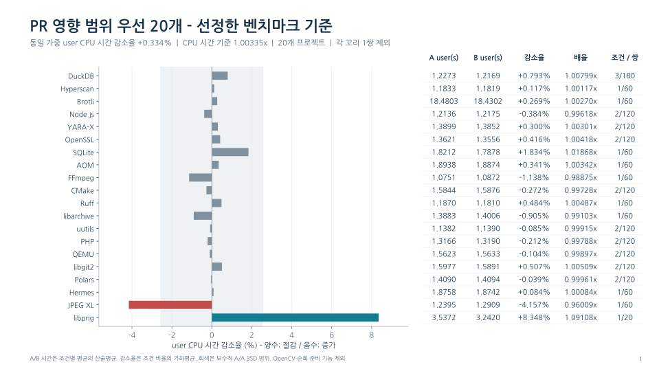
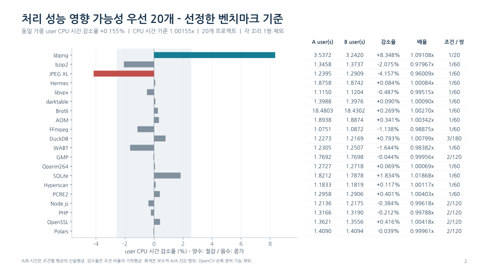
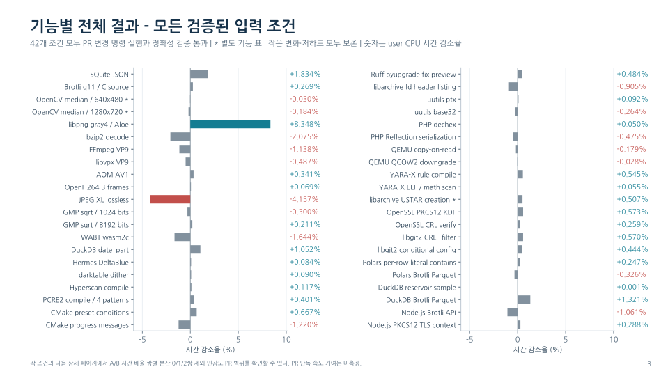
어떤 멘티의 기여와 연결되는가
평균 감소 방향이 유지된 12개 입력은 멘티 4명의 PR 7개와 연결됩니다. 작성자는 개인 최종보고서와 팀 보고서로 대조했습니다. PR과 실행 경로는 원본 검증표의 변경 함수·명령 기록으로 연결했습니다.
감소율은 해당 입력을 수행한 패치 빌드의 관측값입니다. 여러 PR이 함께 관련된 입력은 공동 영향으로 표시했습니다. 관련 PR이 하나인 입력도 그 PR만의 속도 기여율을 분리해 측정한 결과는 아닙니다.
| 입력 | 감소율 / 감소 쌍 | 멘티 · PR | 실행 확인 경로 / 영향 범위 |
|---|---|---|---|
| libpng · 영상 디코딩photo-gray4-aloe-1282x1110 | +8.348% 20/20쌍 | 최진범 포크 #2 | png_do_expand / png_do_read_transformations관련 PR 1개 |
| SQLite · JSONspeedtest1-json-size200 | +1.834% 59/60쌍 | 최진범 포크 #2 · #219103 | jsonLookupStep공동 영향 |
| DuckDB · ParquetParquet Brotli write of real source text at default quality 11 | +1.321% 58/60쌍 | 정지현 #215073 이하동 #216072 | 내부 Brotli의 EncodeContextMap / BrotliSplitBlock공동 영향 |
| DuckDB · 날짜 처리1M rows, 12 dynamic calendar specifiers | +1.052% 42/60쌍 | 정하람 #223246 | TryGetDatePartSpecifier관련 PR 1개 |
| OpenSSL · KDFOfficial PKCS12 KDF known-answer | +0.573% 36/60쌍 | 이하동 #214933 정하람 #223246 | kdf_pkcs12_derive / fmtint공동 영향 |
| libgit2 · CRLFPublic worktree CRLF filter API | +0.570% 37/60쌍 | 최진범 포크 #2 | crlf_check관련 PR 1개 |
| PCRE2 · 컴파일Four exact upstream extended character class intersection patterns; full compilation | +0.401% 42/60쌍 | 최진범 포크 #2 | compile_class_binary_tight관련 PR 1개 |
| AOM · AV1Foreman QCIF AV1 48 frames, cpu-used 4 | +0.341% 49/60쌍 | 최진범 포크 #2 정지현 #215073 | encode_mv_component공동 영향 |
| Node.js · PFXTLS context creation from the official agent1 PKCS12 fixture | +0.288% 38/60쌍 | 이하동 #214933 | OpenSSL의 kdf_pkcs12_derive관련 PR 1개 |
| Brotli · 파생 변화q11-sqlite-source | +0.269% 47/60쌍 | 이하동 #216072 정지현 #215073 최진범 포크 #2 | EncodeContextMap의 파생 코드 생성 변화공동 영향 · 파생 코드 변화 |
| GMP · 파생 변화16 deterministic integers, 8192 bits | +0.211% 46/60쌍 | 최진범 포크 #2 | mpn_dc_sqrt의 스택 크기 변화관련 PR 1개 · 파생 코드 변화 |
| Hyperscan · 컴파일173 official compiler expressions, block API | +0.117% 35/60쌍 | 정하람 #214108 · #223246 정지현 #215073 | determinise의 transition 경로공동 영향 |
포크 #2는 최진범의 ThePo1es/llvm-project PR #2입니다. 같은 압축 라이브러리를 호출하는 Node·DuckDB·Brotli의 경로를 독립적인 알고리즘 개선 수로 더하지 않습니다.
PR 7개의 변경 내용과 작성자 대조 근거
이하동 #214933
나머지 결과와 원래 값의 비교를 단순화
이하동 최종보고서 6·9쪽이하동 #216072
나머지 연산 변환 뒤에도 값의 비교 관계를 추론
이하동 최종보고서 6·9쪽정지현 #215073
0 처리 비교·select를 ctlz(x | 1)로 정리
정지현 최종보고서 3–5쪽정하람 #214108
포화 뺄셈 결과와 원래 값의 비교를 단순화
정하람 최종보고서 3–5쪽정하람 #223246
선택된 상수 문자열의 strlen/wcslen을 컴파일 시 계산
정하람 최종보고서 6–7쪽최진범 포크 #2
알려진 비트 정보로 단일 비트 조건의 select를 단순화
최진범 최종보고서 5–6쪽 및 팀 보고서의 개인 포크 PR #2 기록최진범 #219103
대소 관계와 덧셈 조건에서 값이 0이 아님을 추론
최진범 최종보고서 3–4쪽OpenSSL KDF는 암호 처리와 결과 서식 경로가 함께 포함됩니다. Brotli·GMP의 파생 코드 변화는 각각 스택 저장 명령과 스택 크기 변화입니다. 압축·제곱근 알고리즘을 새로 작성한 효과로 설명하지 않습니다.
모든 입력의 수치와 반복 측정 차트
프로젝트·멘티 이름·PR 번호·함수로 검색할 수 있습니다. 평균 방향 필터는 2026-10-18 재검토 기준입니다. 각 입력에는 모든 원시 쌍의 새 차트와 수치표, 원래 차트와 검증 기록을 함께 실었습니다.
| 프로젝트 / 입력 | A user (초) | B user (초) | 원보고 감소율 | 감소 쌍 / 전체 | 이번 기록의 평균 방향 |
|---|---|---|---|---|---|
| libpngphoto-gray4-aloe-1282x1110 | 3.537241 | 3.241952 | +8.348% | 20/20 | 평균 감소 방향 유지 |
| SQLitespeedtest1-json-size200 | 1.821233 | 1.787768 | +1.834% | 59/60 | 평균 감소 방향 유지 |
| DuckDBParquet Brotli write of real source text at default quality 11 | 1.354193 | 1.336274 | +1.321% | 58/60 | 평균 감소 방향 유지 |
| DuckDB1M rows, 12 dynamic calendar specifiers | 1.209863 | 1.196868 | +1.052% | 42/60 | 평균 감소 방향 유지 |
| CMakeOfficial preset condition listing | 1.624045 | 1.613148 | +0.667% | 34/60 | 순서·구간 확인 필요 |
| OpenSSLOfficial PKCS12 KDF known-answer | 1.485039 | 1.475815 | +0.573% | 36/60 | 평균 감소 방향 유지 |
| libgit2Public worktree CRLF filter API | 1.628994 | 1.619568 | +0.570% | 37/60 | 평균 감소 방향 유지 |
| YARA-XRule compilation using the math module | 1.505508 | 1.496878 | +0.545% | 35/60 | 순서·구간 확인 필요 |
| libarchiveUSTAR archive creation from official source files | 1.156270 | 1.149487 | +0.507% | 33/60 | 순서·구간 확인 필요 |
| RuffOfficial pyupgrade fix preview corpus | 1.186955 | 1.181017 | +0.484% | 38/60 | 순서·구간 확인 필요 |
| libgit2Public conditional configuration API | 1.566356 | 1.558715 | +0.444% | 34/60 | 순서·구간 확인 필요 |
| PCRE2Four exact upstream extended character class intersection patterns; full compilation | 1.295821 | 1.290596 | +0.401% | 42/60 | 평균 감소 방향 유지 |
| AOMForeman QCIF AV1 48 frames, cpu-used 4 | 1.893838 | 1.887366 | +0.341% | 49/60 | 평균 감소 방향 유지 |
| Node.jsTLS context creation from the official agent1 PKCS12 fixture | 1.313406 | 1.309599 | +0.288% | 38/60 | 평균 감소 방향 유지 |
| Brotliq11-sqlite-source | 18.480257 | 18.430200 | +0.269% | 47/60 | 평균 감소 방향 유지 |
| OpenSSLOfficial CRL verification at the upstream fixed time | 1.239229 | 1.235478 | +0.259% | 34/60 | 순서·구간 확인 필요 |
| PolarsOfficial per-row literal contains arrays | 1.456263 | 1.452588 | +0.247% | 35/60 | 순서·구간 확인 필요 |
| GMP16 deterministic integers, 8192 bits | 1.848413 | 1.844504 | +0.211% | 46/60 | 평균 감소 방향 유지 |
| Hyperscan173 official compiler expressions, block API | 1.183304 | 1.181903 | +0.117% | 35/60 | 평균 감소 방향 유지 |
| uutilsPermuted index of official project README | 1.083233 | 1.082108 | +0.092% | 33/60 | 순서·구간 확인 필요 |
| darktableAloe full RGBA, Floyd-Steinberg 4-bit RGB export module | 1.398825 | 1.397560 | +0.090% | 34/60 | 순서·구간 확인 필요 |
| HermesOfficial Octane DeltaBlue, 20 fixed calls, upstream chain/projection checks | 1.875818 | 1.874189 | +0.084% | 33/60 | 순서·구간 확인 필요 |
| OpenH264Cisco Main CABAC 144 frames, default SIMD | 1.272699 | 1.271809 | +0.069% | 35/60 | 순서·구간 확인 필요 |
| YARA-XReal benign ELF scan using common compiled math rules | 1.274305 | 1.273560 | +0.055% | 35/60 | 순서·구간 확인 필요 |
| PHPNormal 64-bit integer hexadecimal conversion | 1.447126 | 1.446390 | +0.050% | 31/60 | 순서·구간 확인 필요 |
| DuckDBFixed-seed reservoir sample of the existing events table | 1.117860 | 1.117551 | +0.001% | 34/60 | 순서·구간 확인 필요 |
| QEMUQCOW2 v3 to v2 compatibility conversion | 1.693125 | 1.693031 | −0.028% | 31/60 | 순서·구간 확인 필요 |
| OpenCV medianBlur640x480-16SC1-k3 | 1.399951 | 1.400356 | −0.030% | 35/60 | 순서·구간 확인 필요 |
| QEMUQCOW2 copy-on-read of a real source archive payload | 1.431423 | 1.433654 | −0.179% | 27/60 | 순서·구간 확인 필요 |
| OpenCV medianBlur1280x720-16SC1-k3 | 1.845952 | 1.849351 | −0.184% | 15/60 | 평균 증가 방향 유지 |
| uutilsBase32 encoding of official source archive | 1.193080 | 1.195982 | −0.264% | 28/60 | 순서·구간 확인 필요 |
| GMP16 deterministic integers, 1024 bits | 1.690013 | 1.695076 | −0.300% | 13/60 | 평균 증가 방향 유지 |
| PolarsBrotli Parquet write of real source lines | 1.361714 | 1.366139 | −0.326% | 13/60 | 평균 증가 방향 유지 |
| PHPOfficial ReflectionClass serialization | 1.186052 | 1.191674 | −0.475% | 5/60 | 평균 증가 방향 유지 |
| libvpxForeman QCIF / VP9 decode | 1.114950 | 1.120374 | −0.487% | 6/60 | 평균 증가 방향 유지 |
| libarchivePublic fd API source archive header listing | 1.388329 | 1.400554 | −0.905% | 20/60 | 평균 증가 방향 유지 |
| Node.jsPublic synchronous Brotli compression of real source text | 1.113709 | 1.125501 | −1.061% | 3/60 | 평균 증가 방향 유지 |
| FFmpegForeman QCIF / native VP9 decode | 1.075114 | 1.087209 | −1.138% | 18/60 | 평균 증가 방향 유지 |
| CMakeNormal upstream nested progress check messages | 1.544823 | 1.562105 | −1.220% | 24/60 | 평균 증가 방향 유지 |
| WABTOfficial Dhrystone wasm2c WriteC API | 1.230501 | 1.250676 | −1.644% | 9/60 | 평균 증가 방향 유지 |
| bzip2SQLite C source / bzip2 -9 | 1.345773 | 1.373684 | −2.075% | 0/60 | 평균 증가 방향 유지 |
| JPEG XLAloe RGB 1282x1110, lossless effort 1 AVX2 | 1.239505 | 1.290917 | −4.157% | 0/60 | 평균 증가 방향 유지 |
감소율은 쌍별 비율의 평균으로 계산합니다. 표의 A/B 집계 시간을 단순히 나눈 값과 다를 수 있습니다. 모든 쌍의 정확한 수치는 각 입력의 표와 CSV에서 확인할 수 있습니다.
조건에 맞는 결과가 없습니다. 검색어나 필터를 바꿔 보세요.
libpng
photo-gray4-aloe-1282x1110
원시 쌍 재검토 · 2026-10-18
시간 감소 20/20쌍 · 시간 증가 0쌍 · 동일 0쌍. 실행 순서·전후반·꼬리 제외 수와 참고 구간에서 평균 방향이 유지됐습니다.
최진범 포크 #2png_do_expand / png_do_read_transformations · 관련 PR 1개
순서별 집계·집계 민감도·재표집 구간
- 원보고 감소율 · 각 꼬리 1쌍 제외
- +8.348%
- 전체 쌍 평균 · 제외 없음
- +8.364%
- AB / BA 평균
- +8.416% / +8.312%
- 전반 / 후반 평균
- +8.374% / +8.354%
- 양 끝 0 / 1 / 2쌍 제외
- +8.364% / +8.348% / +8.343%
- 연속 시간 구간별 평균
- +8.233% / +8.515% / +8.474% / +8.233%
- 재표집 참고 범위
- +8.249% ~ +8.489%
- 블록 길이별 95% 구간
- 2쌍: +8.269% ~ +8.464% · 4쌍: +8.253% ~ +8.477% · 6쌍: +8.249% ~ +8.489% · 10쌍: +8.249% ~ +8.479%
- elapsed 전체 쌍 평균 감소율 · 보조 지표
- +8.369%
모든 20쌍의 수치 보기 · 제외 없음
| 쌍 | 순서 | A user (초) | B user (초) | 감소율 | 원보고 주 집계 |
|---|---|---|---|---|---|
| 1 | AB | 3.543273 | 3.244979 | +8.419% | 포함 |
| 2 | BA | 3.538053 | 3.244347 | +8.301% | 포함 |
| 3 | AB | 3.537702 | 3.248265 | +8.181% | 포함 |
| 4 | BA | 3.529442 | 3.242230 | +8.138% | 포함 |
| 5 | AB | 3.541757 | 3.253980 | +8.125% | 포함 |
| 6 | BA | 3.536017 | 3.236746 | +8.464% | 포함 |
| 7 | AB | 3.542573 | 3.235494 | +8.668% | 포함 |
| 8 | BA | 3.531017 | 3.244150 | +8.124% | 포함 |
| 9 | AB | 3.537692 | 3.230563 | +8.682% | 포함 |
| 10 | BA | 3.536175 | 3.230765 | +8.637% | 포함 |
| 11 | AB | 3.543562 | 3.241850 | +8.514% | 포함 |
| 12 | BA | 3.535163 | 3.239938 | +8.351% | 포함 |
| 13 | AB | 3.545730 | 3.228553 | +8.945% | 꼬리 제외 |
| 14 | BA | 3.530761 | 3.240230 | +8.229% | 포함 |
| 15 | AB | 3.535459 | 3.240889 | +8.332% | 포함 |
| 16 | BA | 3.538984 | 3.243277 | +8.356% | 포함 |
| 17 | AB | 3.544739 | 3.257667 | +8.099% | 포함 |
| 18 | BA | 3.535753 | 3.236906 | +8.452% | 포함 |
| 19 | AB | 3.532224 | 3.242867 | +8.192% | 포함 |
| 20 | BA | 3.527674 | 3.243132 | +8.066% | 꼬리 제외 |
원보고 차트·측정 조건·실행된 변경·검증 기록
2026-10-16 당시 공통 기준의 판정: 시간 감소: 잡음·쌍 오차 기준 밖
원래 판정과 차트 표기는 기록으로 보존했습니다. 위의 평균 방향은 2026-10-18 원시 쌍 재검토 결과입니다.
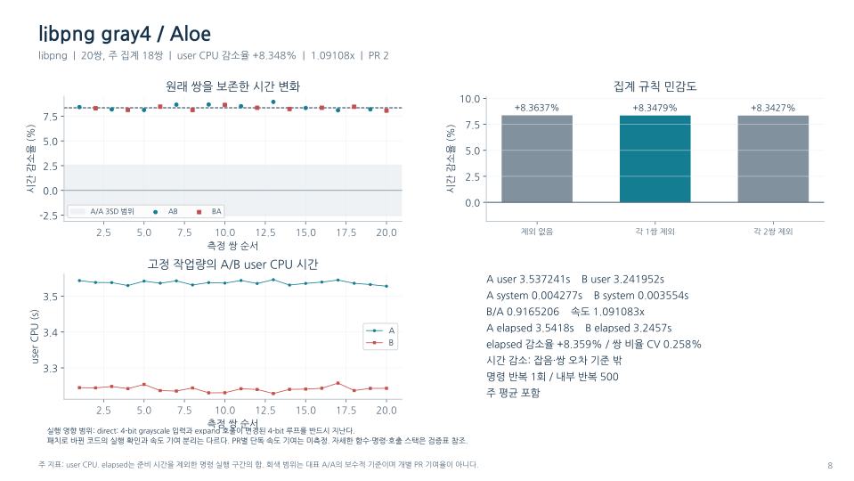
실행 영향 범위: direct: 4-bit grayscale 입력과 expand 호출이 변경된 4-bit 루프를 반드시 지난다.
집계: 프로젝트 평균 포함 · 쌍 비율 CV 0.258% · B/A 0.9165206 · 배율 1.091083×
| 지표 | A | B |
|---|---|---|
| user CPU | 3.537241 s | 3.241952 s |
| system CPU | 0.004277 s | 0.003554 s |
| 명령 실행 elapsed | 3.541800 s | 3.245700 s |
| 각 꼬리에서 제외한 쌍 수 | user CPU 시간 감소율 |
|---|---|
| 0 | +8.3637% |
| 1 | +8.3479% |
| 2 | +8.3427% |
변경 함수에 관련된 PR
- 최진범 · 포크 #2 · [InstCombine] Let foldSelectBitTest use known bits for the single-bit mask
작성자 이름은 최종보고서로 대조한 PR에 표시했습니다. 관련 PR 목록은 단독 속도 기여율을 뜻하지 않습니다.
| 관련 PR | 함수 / 심벌 | 실행된 변경 명령 또는 확인 내용 |
|---|---|---|
| 2 | png_do_expand / png_do_read_transformations | 4-bit grayscale 입력과 expand 호출이 변경된 4-bit 루프를 반드시 지난다. |
검증 방식(원문): Reused exact-binary execution audit; PR list relates to changed functions; joint influence stated where applicable
검증 근거의 원래 파일 식별자
expansion20/attribution/evidence/native-libpng.jsonscripts/png_decode_bench.cppexpansion20/attribution/evidence/audit-png-measured-input-headers.json
위 목록은 원래 검증표의 상대 경로입니다. 해당 경로를 사이트의 다운로드 링크로 표시하지 않았습니다. 공개한 쌍별·관측별 수치는 아래 자료 범위에서 받을 수 있습니다.
SQLite
speedtest1-json-size200
원시 쌍 재검토 · 2026-10-18
시간 감소 59/60쌍 · 시간 증가 1쌍 · 동일 0쌍. 실행 순서·전후반·꼬리 제외 수와 참고 구간에서 평균 방향이 유지됐습니다.
최진범 포크 #2 · #219103jsonLookupStep · 공동 영향
순서별 집계·집계 민감도·재표집 구간
- 원보고 감소율 · 각 꼬리 1쌍 제외
- +1.834%
- 전체 쌍 평균 · 제외 없음
- +1.826%
- AB / BA 평균
- +1.832% / +1.820%
- 전반 / 후반 평균
- +1.698% / +1.954%
- 양 끝 0 / 1 / 2쌍 제외
- +1.826% / +1.834% / +1.837%
- 연속 시간 구간별 평균
- +1.607% / +1.938% / +1.548% / +1.920% / +1.675% / +2.268%
- 재표집 참고 범위
- +1.626% ~ +2.030%
- 블록 길이별 95% 구간
- 2쌍: +1.639% ~ +1.997% · 4쌍: +1.626% ~ +2.021% · 6쌍: +1.627% ~ +2.030% · 10쌍: +1.654% ~ +2.015%
- elapsed 전체 쌍 평균 감소율 · 보조 지표
- +1.560%
모든 60쌍의 수치 보기 · 제외 없음
| 쌍 | 순서 | A user (초) | B user (초) | 감소율 | 원보고 주 집계 |
|---|---|---|---|---|---|
| 1 | AB | 1.802266 | 1.794732 | +0.418% | 포함 |
| 2 | BA | 1.820571 | 1.767153 | +2.934% | 포함 |
| 3 | AB | 1.836614 | 1.827250 | +0.510% | 포함 |
| 4 | BA | 1.810873 | 1.801366 | +0.525% | 포함 |
| 5 | AB | 1.834364 | 1.800882 | +1.825% | 포함 |
| 6 | BA | 1.829616 | 1.795676 | +1.855% | 포함 |
| 7 | AB | 1.806589 | 1.780979 | +1.418% | 포함 |
| 8 | BA | 1.828800 | 1.782651 | +2.523% | 포함 |
| 9 | AB | 1.830527 | 1.784961 | +2.489% | 포함 |
| 10 | BA | 1.816664 | 1.788061 | +1.574% | 포함 |
| 11 | AB | 1.818982 | 1.790811 | +1.549% | 포함 |
| 12 | BA | 1.844487 | 1.812797 | +1.718% | 포함 |
| 13 | AB | 1.836044 | 1.788373 | +2.596% | 포함 |
| 14 | BA | 1.829810 | 1.799461 | +1.659% | 포함 |
| 15 | AB | 1.814624 | 1.776082 | +2.124% | 포함 |
| 16 | BA | 1.835010 | 1.789270 | +2.493% | 포함 |
| 17 | AB | 1.839098 | 1.784225 | +2.984% | 포함 |
| 18 | BA | 1.818710 | 1.808361 | +0.569% | 포함 |
| 19 | AB | 1.814588 | 1.801191 | +0.738% | 포함 |
| 20 | BA | 1.851245 | 1.796586 | +2.953% | 포함 |
| 21 | AB | 1.823901 | 1.790082 | +1.854% | 포함 |
| 22 | BA | 1.812516 | 1.780987 | +1.740% | 포함 |
| 23 | AB | 1.808668 | 1.792004 | +0.921% | 포함 |
| 24 | BA | 1.824795 | 1.825421 | −0.034% | 꼬리 제외 |
| 25 | AB | 1.814879 | 1.787488 | +1.509% | 포함 |
| 26 | BA | 1.797033 | 1.756178 | +2.273% | 포함 |
| 27 | AB | 1.831219 | 1.781631 | +2.708% | 포함 |
| 28 | BA | 1.796860 | 1.791633 | +0.291% | 포함 |
| 29 | AB | 1.814477 | 1.769906 | +2.456% | 포함 |
| 30 | BA | 1.834167 | 1.801889 | +1.760% | 포함 |
| 31 | AB | 1.824057 | 1.785410 | +2.119% | 포함 |
| 32 | BA | 1.820419 | 1.769841 | +2.778% | 포함 |
| 33 | AB | 1.806036 | 1.785748 | +1.123% | 포함 |
| 34 | BA | 1.818430 | 1.760232 | +3.200% | 포함 |
| 35 | AB | 1.809567 | 1.770146 | +2.178% | 포함 |
| 36 | BA | 1.812513 | 1.768321 | +2.438% | 포함 |
| 37 | AB | 1.815307 | 1.769451 | +2.526% | 포함 |
| 38 | BA | 1.800165 | 1.795210 | +0.275% | 포함 |
| 39 | AB | 1.816608 | 1.799787 | +0.926% | 포함 |
| 40 | BA | 1.831162 | 1.801138 | +1.640% | 포함 |
| 41 | AB | 1.874110 | 1.813624 | +3.227% | 포함 |
| 42 | BA | 1.817612 | 1.803861 | +0.757% | 포함 |
| 43 | AB | 1.822987 | 1.806836 | +0.886% | 포함 |
| 44 | BA | 1.816654 | 1.772294 | +2.442% | 포함 |
| 45 | AB | 1.834101 | 1.813471 | +1.125% | 포함 |
| 46 | BA | 1.817286 | 1.792614 | +1.358% | 포함 |
| 47 | AB | 1.802885 | 1.789410 | +0.747% | 포함 |
| 48 | BA | 1.829458 | 1.777535 | +2.838% | 포함 |
| 49 | AB | 1.836923 | 1.784718 | +2.842% | 포함 |
| 50 | BA | 1.784550 | 1.775185 | +0.525% | 포함 |
| 51 | AB | 1.814443 | 1.771273 | +2.379% | 포함 |
| 52 | BA | 1.800882 | 1.786485 | +0.799% | 포함 |
| 53 | AB | 1.808116 | 1.774914 | +1.836% | 포함 |
| 54 | BA | 1.827416 | 1.768192 | +3.241% | 꼬리 제외 |
| 55 | AB | 1.839212 | 1.784459 | +2.977% | 포함 |
| 56 | BA | 1.815149 | 1.780775 | +1.894% | 포함 |
| 57 | AB | 1.820272 | 1.786153 | +1.874% | 포함 |
| 58 | BA | 1.823383 | 1.765740 | +3.161% | 포함 |
| 59 | AB | 1.839122 | 1.800557 | +2.097% | 포함 |
| 60 | BA | 1.826923 | 1.782675 | +2.422% | 포함 |
원보고 차트·측정 조건·실행된 변경·검증 기록
2026-10-16 당시 공통 기준의 판정: A/A 잡음 또는 쌍별 불확실성 범위
원래 판정과 차트 표기는 기록으로 보존했습니다. 위의 평균 방향은 2026-10-18 원시 쌍 재검토 결과입니다.
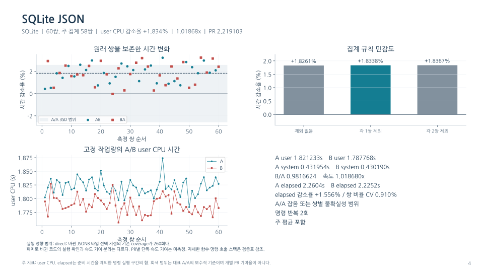
실행 영향 범위: direct: 바뀐 JSONB 타입 선택 지점의 기존 coverage가 260회다.
집계: 프로젝트 평균 포함 · 쌍 비율 CV 0.910% · B/A 0.9816624 · 배율 1.018680×
| 지표 | A | B |
|---|---|---|
| user CPU | 1.821233 s | 1.787768 s |
| system CPU | 0.431954 s | 0.430190 s |
| 명령 실행 elapsed | 2.260400 s | 2.225200 s |
| 각 꼬리에서 제외한 쌍 수 | user CPU 시간 감소율 |
|---|---|
| 0 | +1.8261% |
| 1 | +1.8338% |
| 2 | +1.8367% |
변경 함수에 관련된 PR
- 최진범 · 포크 #2 · [InstCombine] Let foldSelectBitTest use known bits for the single-bit mask
- 최진범 · PR #219103 · [ValueTracking] a u>= b and a = b + NonZero implies a != 0
작성자 이름은 최종보고서로 대조한 PR에 표시했습니다. 관련 PR 목록은 단독 속도 기여율을 뜻하지 않습니다.
| 관련 PR | 함수 / 심벌 | 실행된 변경 명령 또는 확인 내용 |
|---|---|---|
| 2,219103 | jsonLookupStep | 바뀐 JSONB 타입 선택 지점의 기존 coverage가 260회다. |
검증 방식(원문): Reused exact-binary execution audit; PR list relates to changed functions; joint influence stated where applicable
검증 근거의 원래 파일 식별자
expansion20/attribution/evidence/native-SQLite.jsonexpansion20/attribution/evidence/audit-sqlite-jsonLookupStep.coverage.txt
위 목록은 원래 검증표의 상대 경로입니다. 해당 경로를 사이트의 다운로드 링크로 표시하지 않았습니다. 공개한 쌍별·관측별 수치는 아래 자료 범위에서 받을 수 있습니다.
DuckDB
Parquet Brotli write of real source text at default quality 11
원시 쌍 재검토 · 2026-10-18
시간 감소 58/60쌍 · 시간 증가 2쌍 · 동일 0쌍. 실행 순서·전후반·꼬리 제외 수와 참고 구간에서 평균 방향이 유지됐습니다.
정지현 #215073
이하동 #216072내부 Brotli의 EncodeContextMap / BrotliSplitBlock · 공동 영향
순서별 집계·집계 민감도·재표집 구간
- 원보고 감소율 · 각 꼬리 1쌍 제외
- +1.321%
- 전체 쌍 평균 · 제외 없음
- +1.320%
- AB / BA 평균
- +1.266% / +1.374%
- 전반 / 후반 평균
- +1.181% / +1.459%
- 양 끝 0 / 1 / 2쌍 제외
- +1.320% / +1.321% / +1.322%
- 연속 시간 구간별 평균
- +1.175% / +1.132% / +1.235% / +1.310% / +1.223% / +1.844%
- 재표집 참고 범위
- +1.130% ~ +1.534%
- 블록 길이별 95% 구간
- 2쌍: +1.151% ~ +1.486% · 4쌍: +1.130% ~ +1.517% · 6쌍: +1.130% ~ +1.527% · 10쌍: +1.148% ~ +1.534%
- elapsed 전체 쌍 평균 감소율 · 보조 지표
- +1.251%
모든 60쌍의 수치 보기 · 제외 없음
| 쌍 | 순서 | A user (초) | B user (초) | 감소율 | 원보고 주 집계 |
|---|---|---|---|---|---|
| 1 | AB | 1.355940 | 1.332117 | +1.757% | 포함 |
| 2 | BA | 1.343954 | 1.332767 | +0.832% | 포함 |
| 3 | AB | 1.359754 | 1.323565 | +2.661% | 포함 |
| 4 | BA | 1.350317 | 1.342605 | +0.571% | 포함 |
| 5 | AB | 1.350049 | 1.340696 | +0.693% | 포함 |
| 6 | BA | 1.355150 | 1.327145 | +2.067% | 포함 |
| 7 | AB | 1.336308 | 1.334561 | +0.131% | 포함 |
| 8 | BA | 1.344240 | 1.329998 | +1.059% | 포함 |
| 9 | AB | 1.348505 | 1.342200 | +0.468% | 포함 |
| 10 | BA | 1.352734 | 1.332271 | +1.513% | 포함 |
| 11 | AB | 1.351974 | 1.324938 | +2.000% | 포함 |
| 12 | BA | 1.351769 | 1.336048 | +1.163% | 포함 |
| 13 | AB | 1.355256 | 1.341777 | +0.995% | 포함 |
| 14 | BA | 1.357162 | 1.337398 | +1.456% | 포함 |
| 15 | AB | 1.345816 | 1.329386 | +1.221% | 포함 |
| 16 | BA | 1.352702 | 1.324780 | +2.064% | 포함 |
| 17 | AB | 1.343358 | 1.338271 | +0.379% | 포함 |
| 18 | BA | 1.344967 | 1.346171 | −0.090% | 포함 |
| 19 | AB | 1.349026 | 1.342878 | +0.456% | 포함 |
| 20 | BA | 1.357684 | 1.334985 | +1.672% | 포함 |
| 21 | AB | 1.364691 | 1.332693 | +2.345% | 포함 |
| 22 | BA | 1.350728 | 1.345764 | +0.368% | 포함 |
| 23 | AB | 1.351997 | 1.342078 | +0.734% | 포함 |
| 24 | BA | 1.348829 | 1.330161 | +1.384% | 포함 |
| 25 | AB | 1.358359 | 1.331471 | +1.979% | 포함 |
| 26 | BA | 1.353784 | 1.337513 | +1.202% | 포함 |
| 27 | AB | 1.354601 | 1.327600 | +1.993% | 포함 |
| 28 | BA | 1.355527 | 1.341634 | +1.025% | 포함 |
| 29 | AB | 1.358356 | 1.348826 | +0.702% | 포함 |
| 30 | BA | 1.351796 | 1.343420 | +0.620% | 포함 |
| 31 | AB | 1.346077 | 1.347744 | −0.124% | 꼬리 제외 |
| 32 | BA | 1.360947 | 1.342134 | +1.382% | 포함 |
| 33 | AB | 1.361089 | 1.344277 | +1.235% | 포함 |
| 34 | BA | 1.341605 | 1.332943 | +0.646% | 포함 |
| 35 | AB | 1.357875 | 1.332559 | +1.864% | 포함 |
| 36 | BA | 1.368364 | 1.342822 | +1.867% | 포함 |
| 37 | AB | 1.354348 | 1.339257 | +1.114% | 포함 |
| 38 | BA | 1.351051 | 1.330868 | +1.494% | 포함 |
| 39 | AB | 1.348672 | 1.325554 | +1.714% | 포함 |
| 40 | BA | 1.353724 | 1.327874 | +1.910% | 포함 |
| 41 | AB | 1.360524 | 1.335068 | +1.871% | 포함 |
| 42 | BA | 1.362659 | 1.348627 | +1.030% | 포함 |
| 43 | AB | 1.356462 | 1.337571 | +1.393% | 포함 |
| 44 | BA | 1.346101 | 1.326036 | +1.491% | 포함 |
| 45 | AB | 1.357759 | 1.349762 | +0.589% | 포함 |
| 46 | BA | 1.356977 | 1.341838 | +1.116% | 포함 |
| 47 | AB | 1.344660 | 1.337553 | +0.529% | 포함 |
| 48 | BA | 1.356218 | 1.337759 | +1.361% | 포함 |
| 49 | AB | 1.352043 | 1.339338 | +0.940% | 포함 |
| 50 | BA | 1.364055 | 1.337968 | +1.912% | 포함 |
| 51 | AB | 1.372925 | 1.344693 | +2.056% | 포함 |
| 52 | BA | 1.355822 | 1.339905 | +1.174% | 포함 |
| 53 | AB | 1.347174 | 1.341141 | +0.448% | 포함 |
| 54 | BA | 1.360355 | 1.333879 | +1.946% | 포함 |
| 55 | AB | 1.357727 | 1.327060 | +2.259% | 포함 |
| 56 | BA | 1.355799 | 1.329933 | +1.908% | 포함 |
| 57 | AB | 1.362006 | 1.329511 | +2.386% | 포함 |
| 58 | BA | 1.368485 | 1.335785 | +2.390% | 포함 |
| 59 | AB | 1.352437 | 1.336443 | +1.183% | 포함 |
| 60 | BA | 1.366337 | 1.329557 | +2.692% | 꼬리 제외 |
원보고 차트·측정 조건·실행된 변경·검증 기록
2026-10-16 당시 공통 기준의 판정: A/A 잡음 또는 쌍별 불확실성 범위
원래 판정과 차트 표기는 기록으로 보존했습니다. 위의 평균 방향은 2026-10-18 원시 쌍 재검토 결과입니다.
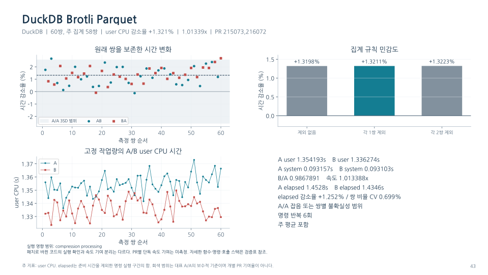
실행 영향 범위: compression processing
집계: 프로젝트 평균 포함 · 쌍 비율 CV 0.699% · B/A 0.9867891 · 배율 1.013388×
| 지표 | A | B |
|---|---|---|
| user CPU | 1.354193 s | 1.336274 s |
| system CPU | 0.093157 s | 0.093103 s |
| 명령 실행 elapsed | 1.452800 s | 1.434600 s |
| 각 꼬리에서 제외한 쌍 수 | user CPU 시간 감소율 |
|---|---|
| 0 | +1.3198% |
| 1 | +1.3211% |
| 2 | +1.3223% |
변경 함수에 관련된 PR
- 정지현 · PR #215073 · [Instcombine] Fold a zero-select hexadecimal digit count into ctlz(x | 1)
- 이하동 · PR #216072 · [InstSimplify] Simplify nonzero comparisons involving X urem Y via X u>= Y
작성자 이름은 최종보고서로 대조한 PR에 표시했습니다. 관련 PR 목록은 단독 속도 기여율을 뜻하지 않습니다.
| 관련 PR | 함수 / 심벌 | 실행된 변경 명령 또는 확인 내용 |
|---|---|---|
| 215073 | EncodeContextMap(duckdb_brotli::MemoryManager*, EncodeContextMapArena*, unsigned int const*, unsigned long, unsigned long, duckdb_brotli::HuffmanTree*, unsigned long*, unsigned char*) | mov %rsi,(%rsp) |
| 216072 | duckdb_brotli::BrotliSplitBlock(duckdb_brotli::MemoryManager*, duckdb_brotli::Command const*, unsigned long, unsigned char const*, unsigned long, unsigned long, BrotliEncoderParams const*, duckdb_brotli::BlockSplit*, duckdb_brotli::BlockSplit*, duckdb_brotli::BlockSplit*) | sub %rdx,%rsi |
| 216072 | duckdb_brotli::BrotliSplitBlock(duckdb_brotli::MemoryManager*, duckdb_brotli::Command const*, unsigned long, unsigned char const*, unsigned long, unsigned long, BrotliEncoderParams const*, duckdb_brotli::BlockSplit*, duckdb_brotli::BlockSplit*, duckdb_brotli::BlockSplit*) | mov %r15,0x28(%rsp) |
| 216072 | duckdb_brotli::BrotliSplitBlock(duckdb_brotli::MemoryManager*, duckdb_brotli::Command const*, unsigned long, unsigned char const*, unsigned long, unsigned long, BrotliEncoderParams const*, duckdb_brotli::BlockSplit*, duckdb_brotli::BlockSplit*, duckdb_brotli::BlockSplit*) | mov %r12,0x28(%rsp) |
| 215073 | EncodeContextMap(duckdb_brotli::MemoryManager*, EncodeContextMapArena*, unsigned int const*, unsigned long, unsigned long, duckdb_brotli::HuffmanTree*, unsigned long*, unsigned char*) | xor %r13d,%r13d |
| 215073 | EncodeContextMap(duckdb_brotli::MemoryManager*, EncodeContextMapArena*, unsigned int const*, unsigned long, unsigned long, duckdb_brotli::HuffmanTree*, unsigned long*, unsigned char*) | movzbl (%rbx,%r13,4),%r12d |
| 215073 | EncodeContextMap(duckdb_brotli::MemoryManager*, EncodeContextMapArena*, unsigned int const*, unsigned long, unsigned long, duckdb_brotli::HuffmanTree*, unsigned long*, unsigned char*) | cmp %r12b,0x40(%rsp,%rdx,1) |
| 215073 | EncodeContextMap(duckdb_brotli::MemoryManager*, EncodeContextMapArena*, unsigned int const*, unsigned long, unsigned long, duckdb_brotli::HuffmanTree*, unsigned long*, unsigned char*) | mov %edx,(%r14,%r13,4) |
| 215073 | EncodeContextMap(duckdb_brotli::MemoryManager*, EncodeContextMapArena*, unsigned int const*, unsigned long, unsigned long, duckdb_brotli::HuffmanTree*, unsigned long*, unsigned char*) | inc %r13 |
| 215073 | EncodeContextMap(duckdb_brotli::MemoryManager*, EncodeContextMapArena*, unsigned int const*, unsigned long, unsigned long, duckdb_brotli::HuffmanTree*, unsigned long*, unsigned char*) | mov (%rsp),%rax |
| 215073 | EncodeContextMap(duckdb_brotli::MemoryManager*, EncodeContextMapArena*, unsigned int const*, unsigned long, unsigned long, duckdb_brotli::HuffmanTree*, unsigned long*, unsigned char*) | or $0x1,%eax |
| 215073 | EncodeContextMap(duckdb_brotli::MemoryManager*, EncodeContextMapArena*, unsigned int const*, unsigned long, unsigned long, duckdb_brotli::HuffmanTree*, unsigned long*, unsigned char*) | mov $0xffffffff,%ecx |
| 215073 | EncodeContextMap(duckdb_brotli::MemoryManager*, EncodeContextMapArena*, unsigned int const*, unsigned long, unsigned long, duckdb_brotli::HuffmanTree*, unsigned long*, unsigned char*) | lzcnt %eax,%eax |
| 215073 | EncodeContextMap(duckdb_brotli::MemoryManager*, EncodeContextMapArena*, unsigned int const*, unsigned long, unsigned long, duckdb_brotli::HuffmanTree*, unsigned long*, unsigned char*) | mov (%rsp),%rbp |
| 215073 | EncodeContextMap(duckdb_brotli::MemoryManager*, EncodeContextMapArena*, unsigned int const*, unsigned long, unsigned long, duckdb_brotli::HuffmanTree*, unsigned long*, unsigned char*) | mov 0xc(%rsp),%r9d |
| 215073 | EncodeContextMap(duckdb_brotli::MemoryManager*, EncodeContextMapArena*, unsigned int const*, unsigned long, unsigned long, duckdb_brotli::HuffmanTree*, unsigned long*, unsigned char*) | cmp $0x1f,%r9d |
| 215073 | EncodeContextMap(duckdb_brotli::MemoryManager*, EncodeContextMapArena*, unsigned int const*, unsigned long, unsigned long, duckdb_brotli::HuffmanTree*, unsigned long*, unsigned char*) | setne %cl |
| 215073 | EncodeContextMap(duckdb_brotli::MemoryManager*, EncodeContextMapArena*, unsigned int const*, unsigned long, unsigned long, duckdb_brotli::HuffmanTree*, unsigned long*, unsigned char*) | mov (%rsp),%rdi |
검증 방식(원문): Single-PR native ablation and actual changed instruction step
검증 근거의 원래 파일 식별자
candidate-review-2x20/execution/correctness/native-probes/duckdb-parquet.jsoncandidate-review-2x20/execution/correctness/duckdb-extra/correctness.jsoncandidate-review-2x20/execution/attribution/duckdb-brotli-context/result.jsoncandidate-review-2x20/execution/attribution/duckdb-brotli-split/result.json
위 목록은 원래 검증표의 상대 경로입니다. 해당 경로를 사이트의 다운로드 링크로 표시하지 않았습니다. 공개한 쌍별·관측별 수치는 아래 자료 범위에서 받을 수 있습니다.
DuckDB
1M rows, 12 dynamic calendar specifiers
원시 쌍 재검토 · 2026-10-18
시간 감소 42/60쌍 · 시간 증가 18쌍 · 동일 0쌍. 실행 순서·전후반·꼬리 제외 수와 참고 구간에서 평균 방향이 유지됐습니다.
정하람 #223246TryGetDatePartSpecifier · 관련 PR 1개
순서별 집계·집계 민감도·재표집 구간
- 원보고 감소율 · 각 꼬리 1쌍 제외
- +1.052%
- 전체 쌍 평균 · 제외 없음
- +1.025%
- AB / BA 평균
- +0.825% / +1.226%
- 전반 / 후반 평균
- +1.200% / +0.851%
- 양 끝 0 / 1 / 2쌍 제외
- +1.025% / +1.052% / +1.077%
- 연속 시간 구간별 평균
- +1.575% / +0.791% / +1.234% / +0.421% / +1.417% / +0.715%
- 재표집 참고 범위
- +0.487% ~ +1.545%
- 블록 길이별 95% 구간
- 2쌍: +0.528% ~ +1.519% · 4쌍: +0.487% ~ +1.539% · 6쌍: +0.504% ~ +1.545% · 10쌍: +0.607% ~ +1.455%
- elapsed 전체 쌍 평균 감소율 · 보조 지표
- +1.049%
모든 60쌍의 수치 보기 · 제외 없음
| 쌍 | 순서 | A user (초) | B user (초) | 감소율 | 원보고 주 집계 |
|---|---|---|---|---|---|
| 1 | AB | 1.219848 | 1.183352 | +2.992% | 포함 |
| 2 | BA | 1.221191 | 1.195930 | +2.069% | 포함 |
| 3 | AB | 1.194406 | 1.225885 | −2.636% | 포함 |
| 4 | BA | 1.194594 | 1.188160 | +0.539% | 포함 |
| 5 | AB | 1.234552 | 1.203470 | +2.518% | 포함 |
| 6 | BA | 1.214547 | 1.186962 | +2.271% | 포함 |
| 7 | AB | 1.229976 | 1.213095 | +1.372% | 포함 |
| 8 | BA | 1.202282 | 1.181839 | +1.700% | 포함 |
| 9 | AB | 1.229300 | 1.188213 | +3.342% | 포함 |
| 10 | BA | 1.212843 | 1.193652 | +1.582% | 포함 |
| 11 | AB | 1.207126 | 1.212042 | −0.407% | 포함 |
| 12 | BA | 1.225547 | 1.219553 | +0.489% | 포함 |
| 13 | AB | 1.227855 | 1.184997 | +3.490% | 포함 |
| 14 | BA | 1.187323 | 1.204294 | −1.429% | 포함 |
| 15 | AB | 1.202204 | 1.189618 | +1.047% | 포함 |
| 16 | BA | 1.195582 | 1.205595 | −0.838% | 포함 |
| 17 | AB | 1.217873 | 1.193123 | +2.032% | 포함 |
| 18 | BA | 1.225833 | 1.193732 | +2.619% | 포함 |
| 19 | AB | 1.176546 | 1.188452 | −1.012% | 포함 |
| 20 | BA | 1.212272 | 1.189066 | +1.914% | 포함 |
| 21 | AB | 1.196674 | 1.191338 | +0.446% | 포함 |
| 22 | BA | 1.193176 | 1.220359 | −2.278% | 포함 |
| 23 | AB | 1.233175 | 1.183990 | +3.988% | 포함 |
| 24 | BA | 1.185939 | 1.220591 | −2.922% | 포함 |
| 25 | AB | 1.214323 | 1.190255 | +1.982% | 포함 |
| 26 | BA | 1.224239 | 1.189496 | +2.838% | 포함 |
| 27 | AB | 1.226455 | 1.185419 | +3.346% | 포함 |
| 28 | BA | 1.215455 | 1.196684 | +1.544% | 포함 |
| 29 | AB | 1.222585 | 1.195914 | +2.182% | 포함 |
| 30 | BA | 1.194438 | 1.179933 | +1.214% | 포함 |
| 31 | AB | 1.218488 | 1.191228 | +2.237% | 포함 |
| 32 | BA | 1.227968 | 1.181680 | +3.769% | 포함 |
| 33 | AB | 1.198124 | 1.218866 | −1.731% | 포함 |
| 34 | BA | 1.221853 | 1.186916 | +2.859% | 포함 |
| 35 | AB | 1.220404 | 1.210183 | +0.838% | 포함 |
| 36 | BA | 1.213137 | 1.210193 | +0.243% | 포함 |
| 37 | AB | 1.187097 | 1.196459 | −0.789% | 포함 |
| 38 | BA | 1.189726 | 1.191425 | −0.143% | 포함 |
| 39 | AB | 1.166160 | 1.204231 | −3.265% | 포함 |
| 40 | BA | 1.217945 | 1.215571 | +0.195% | 포함 |
| 41 | AB | 1.221876 | 1.190119 | +2.599% | 포함 |
| 42 | BA | 1.191056 | 1.199904 | −0.743% | 포함 |
| 43 | AB | 1.219916 | 1.186213 | +2.763% | 포함 |
| 44 | BA | 1.215999 | 1.184068 | +2.626% | 포함 |
| 45 | AB | 1.194491 | 1.205979 | −0.962% | 포함 |
| 46 | BA | 1.227947 | 1.191733 | +2.949% | 포함 |
| 47 | AB | 1.190455 | 1.198101 | −0.642% | 포함 |
| 48 | BA | 1.226932 | 1.194009 | +2.683% | 포함 |
| 49 | AB | 1.225121 | 1.191271 | +2.763% | 포함 |
| 50 | BA | 1.210257 | 1.208689 | +0.130% | 포함 |
| 51 | AB | 1.187819 | 1.209971 | −1.865% | 포함 |
| 52 | BA | 1.203087 | 1.177823 | +2.100% | 포함 |
| 53 | AB | 1.178257 | 1.224063 | −3.888% | 꼬리 제외 |
| 54 | BA | 1.217289 | 1.189216 | +2.306% | 포함 |
| 55 | AB | 1.195221 | 1.212224 | −1.423% | 포함 |
| 56 | BA | 1.196967 | 1.218983 | −1.839% | 포함 |
| 57 | AB | 1.216606 | 1.183711 | +2.704% | 포함 |
| 58 | BA | 1.234165 | 1.185655 | +3.931% | 포함 |
| 59 | AB | 1.197768 | 1.188943 | +0.737% | 포함 |
| 60 | BA | 1.233959 | 1.179792 | +4.390% | 꼬리 제외 |
원보고 차트·측정 조건·실행된 변경·검증 기록
2026-10-16 당시 공통 기준의 판정: A/A 잡음 또는 쌍별 불확실성 범위
원래 판정과 차트 표기는 기록으로 보존했습니다. 위의 평균 방향은 2026-10-18 원시 쌍 재검토 결과입니다.
실행 영향 범위: direct: 새 고정 길이 문자열 비교의 실제 B 명령 PC 0x19557af에 저장된 표본이 있다.
집계: 프로젝트 평균 포함 · 쌍 비율 CV 2.065% · B/A 0.9894783 · 배율 1.010634×
| 지표 | A | B |
|---|---|---|
| user CPU | 1.209863 s | 1.196868 s |
| system CPU | 0.011227 s | 0.010793 s |
| 명령 실행 elapsed | 1.226800 s | 1.213400 s |
| 각 꼬리에서 제외한 쌍 수 | user CPU 시간 감소율 |
|---|---|
| 0 | +1.0255% |
| 1 | +1.0522% |
| 2 | +1.0768% |
변경 함수에 관련된 PR
- 정하람 · PR #223246 · [InstCombine] Fold strlen/wcslen over select/phi of constants
작성자 이름은 최종보고서로 대조한 PR에 표시했습니다. 관련 PR 목록은 단독 속도 기여율을 뜻하지 않습니다.
| 관련 PR | 함수 / 심벌 | 실행된 변경 명령 또는 확인 내용 |
|---|---|---|
| 223246 | TryGetDatePartSpecifier | 새 고정 길이 문자열 비교의 실제 B 명령 PC 0x19557af에 저장된 표본이 있다. |
검증 방식(원문): Reused exact-binary execution audit; PR list relates to changed functions; joint influence stated where applicable
검증 근거의 원래 파일 식별자
expansion20/attribution/evidence/native-DuckDB.jsonexpansion20/correctness/runtime-profiles/duckdb-datepart-calendar/summary.json
위 목록은 원래 검증표의 상대 경로입니다. 해당 경로를 사이트의 다운로드 링크로 표시하지 않았습니다. 공개한 쌍별·관측별 수치는 아래 자료 범위에서 받을 수 있습니다.
CMake
Official preset condition listing
원시 쌍 재검토 · 2026-10-18
시간 감소 34/60쌍 · 시간 증가 26쌍 · 동일 0쌍. 재표집 참고 구간에 0이 포함됩니다.
순서별 집계·집계 민감도·재표집 구간
- 원보고 감소율 · 각 꼬리 1쌍 제외
- +0.667%
- 전체 쌍 평균 · 제외 없음
- +0.647%
- AB / BA 평균
- +1.255% / +0.039%
- 전반 / 후반 평균
- +0.785% / +0.509%
- 양 끝 0 / 1 / 2쌍 제외
- +0.647% / +0.667% / +0.670%
- 연속 시간 구간별 평균
- −0.138% / +0.108% / +2.384% / +0.677% / +0.705% / +0.144%
- 재표집 참고 범위
- −0.119% ~ +1.427%
- 블록 길이별 95% 구간
- 2쌍: +0.009% ~ +1.282% · 4쌍: −0.059% ~ +1.326% · 6쌍: −0.098% ~ +1.369% · 10쌍: −0.119% ~ +1.427%
- elapsed 전체 쌍 평균 감소율 · 보조 지표
- +3.301%
모든 60쌍의 수치 보기 · 제외 없음
| 쌍 | 순서 | A user (초) | B user (초) | 감소율 | 원보고 주 집계 |
|---|---|---|---|---|---|
| 1 | AB | 1.673132 | 1.714666 | −2.482% | 포함 |
| 2 | BA | 1.706501 | 1.734530 | −1.642% | 포함 |
| 3 | AB | 1.734004 | 1.731532 | +0.143% | 포함 |
| 4 | BA | 1.688663 | 1.723766 | −2.079% | 포함 |
| 5 | AB | 1.727723 | 1.684649 | +2.493% | 포함 |
| 6 | BA | 1.713050 | 1.774710 | −3.599% | 포함 |
| 7 | AB | 1.762360 | 1.688557 | +4.188% | 포함 |
| 8 | BA | 1.725475 | 1.750806 | −1.468% | 포함 |
| 9 | AB | 1.773691 | 1.725029 | +2.744% | 포함 |
| 10 | BA | 1.756597 | 1.750869 | +0.326% | 포함 |
| 11 | AB | 1.766417 | 1.778146 | −0.664% | 포함 |
| 12 | BA | 1.687679 | 1.691195 | −0.208% | 포함 |
| 13 | AB | 1.738327 | 1.723717 | +0.840% | 포함 |
| 14 | BA | 1.712808 | 1.715275 | −0.144% | 포함 |
| 15 | AB | 1.776366 | 1.725160 | +2.883% | 포함 |
| 16 | BA | 1.777754 | 1.721049 | +3.190% | 포함 |
| 17 | AB | 1.698765 | 1.747856 | −2.890% | 포함 |
| 18 | BA | 1.722802 | 1.727239 | −0.258% | 포함 |
| 19 | AB | 1.715009 | 1.721785 | −0.395% | 포함 |
| 20 | BA | 1.722387 | 1.744396 | −1.278% | 포함 |
| 21 | AB | 1.580606 | 1.526128 | +3.447% | 포함 |
| 22 | BA | 1.586836 | 1.505577 | +5.121% | 포함 |
| 23 | AB | 1.569381 | 1.552704 | +1.063% | 포함 |
| 24 | BA | 1.548863 | 1.540368 | +0.548% | 포함 |
| 25 | AB | 1.607179 | 1.546339 | +3.786% | 포함 |
| 26 | BA | 1.625782 | 1.575570 | +3.088% | 포함 |
| 27 | AB | 1.527363 | 1.535127 | −0.508% | 포함 |
| 28 | BA | 1.557570 | 1.510386 | +3.029% | 포함 |
| 29 | AB | 1.552496 | 1.497225 | +3.560% | 포함 |
| 30 | BA | 1.575128 | 1.564027 | +0.705% | 포함 |
| 31 | AB | 1.593716 | 1.504917 | +5.572% | 꼬리 제외 |
| 32 | BA | 1.590052 | 1.570428 | +1.234% | 포함 |
| 33 | AB | 1.582913 | 1.518118 | +4.093% | 포함 |
| 34 | BA | 1.547258 | 1.548116 | −0.055% | 포함 |
| 35 | AB | 1.579849 | 1.539141 | +2.577% | 포함 |
| 36 | BA | 1.586099 | 1.576251 | +0.621% | 포함 |
| 37 | AB | 1.545883 | 1.568440 | −1.459% | 포함 |
| 38 | BA | 1.492109 | 1.573560 | −5.459% | 꼬리 제외 |
| 39 | AB | 1.536000 | 1.518637 | +1.130% | 포함 |
| 40 | BA | 1.556216 | 1.579286 | −1.482% | 포함 |
| 41 | AB | 1.594001 | 1.558618 | +2.220% | 포함 |
| 42 | BA | 1.512269 | 1.571869 | −3.941% | 포함 |
| 43 | AB | 1.522763 | 1.581761 | −3.874% | 포함 |
| 44 | BA | 1.588031 | 1.521692 | +4.177% | 포함 |
| 45 | AB | 1.570272 | 1.564800 | +0.348% | 포함 |
| 46 | BA | 1.576225 | 1.537860 | +2.434% | 포함 |
| 47 | AB | 1.599042 | 1.524706 | +4.649% | 포함 |
| 48 | BA | 1.533044 | 1.584390 | −3.349% | 포함 |
| 49 | AB | 1.610027 | 1.563206 | +2.908% | 포함 |
| 50 | BA | 1.563742 | 1.540630 | +1.478% | 포함 |
| 51 | AB | 1.551545 | 1.592083 | −2.613% | 포함 |
| 52 | BA | 1.536153 | 1.503166 | +2.147% | 포함 |
| 53 | AB | 1.593979 | 1.571520 | +1.409% | 포함 |
| 54 | BA | 1.588312 | 1.543643 | +2.812% | 포함 |
| 55 | AB | 1.588169 | 1.529350 | +3.704% | 포함 |
| 56 | BA | 1.565615 | 1.577642 | −0.768% | 포함 |
| 57 | AB | 1.580907 | 1.585412 | −0.285% | 포함 |
| 58 | BA | 1.597025 | 1.635303 | −2.397% | 포함 |
| 59 | AB | 1.547062 | 1.561642 | −0.942% | 포함 |
| 60 | BA | 1.541458 | 1.566490 | −1.624% | 포함 |
원보고 차트·측정 조건·실행된 변경·검증 기록
2026-10-16 당시 공통 기준의 판정: A/A 잡음 또는 쌍별 불확실성 범위
원래 판정과 차트 표기는 기록으로 보존했습니다. 위의 평균 방향은 2026-10-18 원시 쌍 재검토 결과입니다.
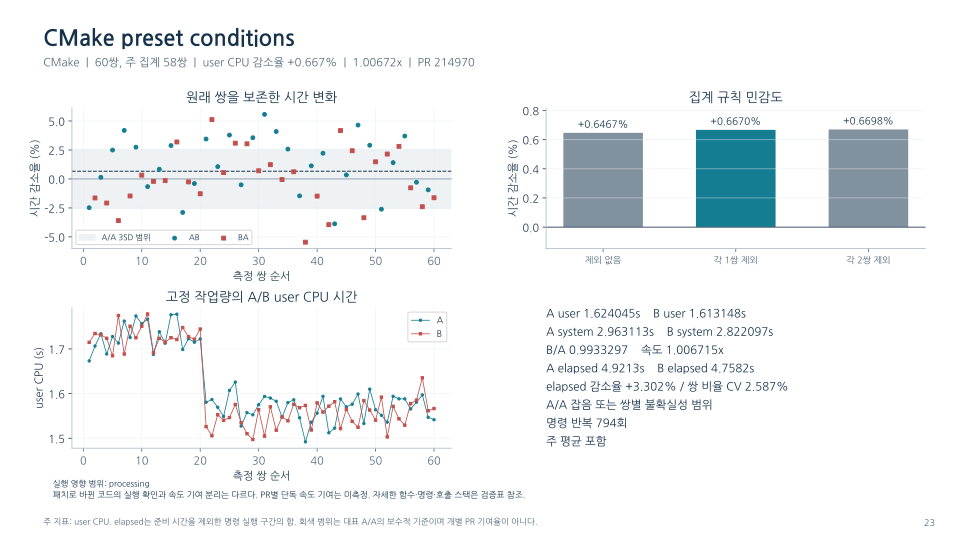
실행 영향 범위: processing
집계: 프로젝트 평균 포함 · 쌍 비율 CV 2.587% · B/A 0.9933297 · 배율 1.006715×
| 지표 | A | B |
|---|---|---|
| user CPU | 1.624045 s | 1.613148 s |
| system CPU | 2.963113 s | 2.822097 s |
| 명령 실행 elapsed | 4.921300 s | 4.758200 s |
| 각 꼬리에서 제외한 쌍 수 | user CPU 시간 감소율 |
|---|---|
| 0 | +0.6467% |
| 1 | +0.6670% |
| 2 | +0.6698% |
변경 함수에 관련된 PR
- PR #214970 · [InstCombine] Reassociate xor and disjoint or through zext
작성자 이름은 최종보고서로 대조한 PR에 표시했습니다. 관련 PR 목록은 단독 속도 기여율을 뜻하지 않습니다.
| 관련 PR | 함수 / 심벌 | 실행된 변경 명령 또는 확인 내용 |
|---|---|---|
| 214970 | cmCMakePresetsGraphInternal::AnyAllOfCondition::Evaluate(std::vector<std::unique_ptr<cmCMakePresetsGraphInternal::MacroExpander, std::default_delete<cmCMakePresetsGraphInternal::MacroExpander>>, std::allocator<std::unique_ptr<cmCMakePresetsGraphInternal::MacroExpander, std::default_delete<cmCMakePresetsGraphInternal::MacroExpander>>>> const&, int, std::optional<bool>&) const | xor $0x101,%eax |
검증 방식(원문): Single-PR native ablation and actual changed instruction step
검증 근거의 원래 파일 식별자
candidate-review-2x20/execution/correctness/native-probes/cmake-preset-conditions.jsoncandidate-review-2x20/execution/correctness/native-probes/cmake-preset-conditions.correctness.jsoncandidate-review-2x20/execution/attribution/cmake-condition-evaluate/result.json
위 목록은 원래 검증표의 상대 경로입니다. 해당 경로를 사이트의 다운로드 링크로 표시하지 않았습니다. 공개한 쌍별·관측별 수치는 아래 자료 범위에서 받을 수 있습니다.
OpenSSL
Official PKCS12 KDF known-answer
원시 쌍 재검토 · 2026-10-18
시간 감소 36/60쌍 · 시간 증가 24쌍 · 동일 0쌍. 실행 순서·전후반·꼬리 제외 수와 참고 구간에서 평균 방향이 유지됐습니다.
이하동 #214933
정하람 #223246kdf_pkcs12_derive / fmtint · 공동 영향
순서별 집계·집계 민감도·재표집 구간
- 원보고 감소율 · 각 꼬리 1쌍 제외
- +0.573%
- 전체 쌍 평균 · 제외 없음
- +0.580%
- AB / BA 평균
- +0.895% / +0.265%
- 전반 / 후반 평균
- +1.061% / +0.100%
- 양 끝 0 / 1 / 2쌍 제외
- +0.580% / +0.573% / +0.573%
- 연속 시간 구간별 평균
- +1.317% / +1.548% / +0.317% / +0.540% / +0.047% / −0.287%
- 재표집 참고 범위
- +0.041% ~ +1.132%
- 블록 길이별 95% 구간
- 2쌍: +0.050% ~ +1.132% · 4쌍: +0.041% ~ +1.119% · 6쌍: +0.064% ~ +1.116% · 10쌍: +0.076% ~ +1.125%
- elapsed 전체 쌍 평균 감소율 · 보조 지표
- +0.216%
모든 60쌍의 수치 보기 · 제외 없음
| 쌍 | 순서 | A user (초) | B user (초) | 감소율 | 원보고 주 집계 |
|---|---|---|---|---|---|
| 1 | AB | 1.540824 | 1.485376 | +3.599% | 포함 |
| 2 | BA | 1.538316 | 1.536961 | +0.088% | 포함 |
| 3 | AB | 1.496051 | 1.507181 | −0.744% | 포함 |
| 4 | BA | 1.520155 | 1.515917 | +0.279% | 포함 |
| 5 | AB | 1.543431 | 1.510862 | +2.110% | 포함 |
| 6 | BA | 1.597814 | 1.588695 | +0.571% | 포함 |
| 7 | AB | 1.592210 | 1.537415 | +3.441% | 포함 |
| 8 | BA | 1.575720 | 1.579493 | −0.239% | 포함 |
| 9 | AB | 1.557568 | 1.507401 | +3.221% | 포함 |
| 10 | BA | 1.514918 | 1.502073 | +0.848% | 포함 |
| 11 | AB | 1.530462 | 1.512715 | +1.160% | 포함 |
| 12 | BA | 1.542601 | 1.554365 | −0.763% | 포함 |
| 13 | AB | 1.512597 | 1.520093 | −0.496% | 포함 |
| 14 | BA | 1.538335 | 1.519685 | +1.212% | 포함 |
| 15 | AB | 1.533772 | 1.518744 | +0.980% | 포함 |
| 16 | BA | 1.559248 | 1.501127 | +3.728% | 포함 |
| 17 | AB | 1.626862 | 1.530740 | +5.908% | 포함 |
| 18 | BA | 1.557424 | 1.523780 | +2.160% | 포함 |
| 19 | AB | 1.538660 | 1.430226 | +7.047% | 꼬리 제외 |
| 20 | BA | 1.439038 | 1.517617 | −5.461% | 꼬리 제외 |
| 21 | AB | 1.440344 | 1.431406 | +0.621% | 포함 |
| 22 | BA | 1.497982 | 1.475483 | +1.502% | 포함 |
| 23 | AB | 1.470325 | 1.491637 | −1.449% | 포함 |
| 24 | BA | 1.461687 | 1.412186 | +3.387% | 포함 |
| 25 | AB | 1.475900 | 1.404673 | +4.826% | 포함 |
| 26 | BA | 1.453849 | 1.509628 | −3.837% | 포함 |
| 27 | AB | 1.429954 | 1.463421 | −2.340% | 포함 |
| 28 | BA | 1.465885 | 1.444332 | +1.470% | 포함 |
| 29 | AB | 1.469390 | 1.480995 | −0.790% | 포함 |
| 30 | BA | 1.438200 | 1.441304 | −0.216% | 포함 |
| 31 | AB | 1.518397 | 1.456526 | +4.075% | 포함 |
| 32 | BA | 1.467517 | 1.402214 | +4.450% | 포함 |
| 33 | AB | 1.439755 | 1.467504 | −1.927% | 포함 |
| 34 | BA | 1.456233 | 1.469269 | −0.895% | 포함 |
| 35 | AB | 1.447408 | 1.457168 | −0.674% | 포함 |
| 36 | BA | 1.435915 | 1.452046 | −1.123% | 포함 |
| 37 | AB | 1.429418 | 1.470833 | −2.897% | 포함 |
| 38 | BA | 1.506971 | 1.463236 | +2.902% | 포함 |
| 39 | AB | 1.430551 | 1.446124 | −1.089% | 포함 |
| 40 | BA | 1.480596 | 1.442342 | +2.584% | 포함 |
| 41 | AB | 1.450879 | 1.441650 | +0.636% | 포함 |
| 42 | BA | 1.499359 | 1.465530 | +2.256% | 포함 |
| 43 | AB | 1.452627 | 1.447665 | +0.342% | 포함 |
| 44 | BA | 1.442555 | 1.466295 | −1.646% | 포함 |
| 45 | AB | 1.465693 | 1.466257 | −0.038% | 포함 |
| 46 | BA | 1.391719 | 1.453831 | −4.463% | 포함 |
| 47 | AB | 1.458485 | 1.421031 | +2.568% | 포함 |
| 48 | BA | 1.432525 | 1.399866 | +2.280% | 포함 |
| 49 | AB | 1.437930 | 1.465715 | −1.932% | 포함 |
| 50 | BA | 1.427650 | 1.421011 | +0.465% | 포함 |
| 51 | AB | 1.481368 | 1.457060 | +1.641% | 포함 |
| 52 | BA | 1.482111 | 1.458868 | +1.568% | 포함 |
| 53 | AB | 1.421810 | 1.463735 | −2.949% | 포함 |
| 54 | BA | 1.479418 | 1.453009 | +1.785% | 포함 |
| 55 | AB | 1.438865 | 1.479161 | −2.801% | 포함 |
| 56 | BA | 1.453319 | 1.438088 | +1.048% | 포함 |
| 57 | AB | 1.478887 | 1.459874 | +1.286% | 포함 |
| 58 | BA | 1.436052 | 1.504730 | −4.782% | 포함 |
| 59 | AB | 1.492532 | 1.439829 | +3.531% | 포함 |
| 60 | BA | 1.413868 | 1.459142 | −3.202% | 포함 |
원보고 차트·측정 조건·실행된 변경·검증 기록
2026-10-16 당시 공통 기준의 판정: A/A 잡음 또는 쌍별 불확실성 범위
원래 판정과 차트 표기는 기록으로 보존했습니다. 위의 평균 방향은 2026-10-18 원시 쌍 재검토 결과입니다.
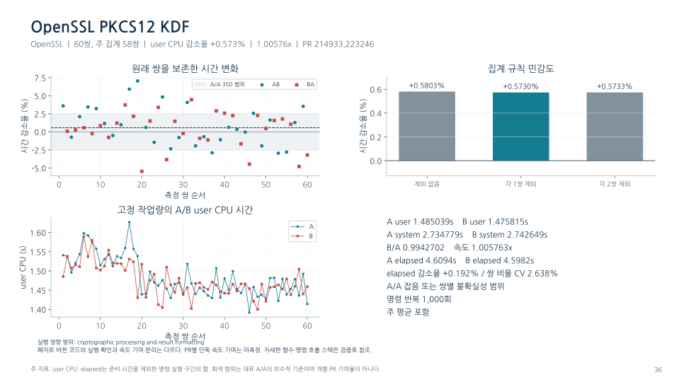
실행 영향 범위: cryptographic processing and result formatting
집계: 프로젝트 평균 포함 · 쌍 비율 CV 2.638% · B/A 0.9942702 · 배율 1.005763×
| 지표 | A | B |
|---|---|---|
| user CPU | 1.485039 s | 1.475815 s |
| system CPU | 2.734779 s | 2.742649 s |
| 명령 실행 elapsed | 4.609400 s | 4.598200 s |
| 각 꼬리에서 제외한 쌍 수 | user CPU 시간 감소율 |
|---|---|
| 0 | +0.5803% |
| 1 | +0.5730% |
| 2 | +0.5733% |
변경 함수에 관련된 PR
- 이하동 · PR #214933 · [InstCombine] Fold comparisons of urem with dividend
- 정하람 · PR #223246 · [InstCombine] Fold strlen/wcslen over select/phi of constants
작성자 이름은 최종보고서로 대조한 PR에 표시했습니다. 관련 PR 목록은 단독 속도 기여율을 뜻하지 않습니다.
| 관련 PR | 함수 / 심벌 | 실행된 변경 명령 또는 확인 내용 |
|---|---|---|
| 223246 | fmtint | mov %rcx,0x18(%rsp) |
| 223246 | fmtint | mov %rsi,%r15 |
| 223246 | fmtint | xor %esi,%esi |
| 223246 | fmtint | movl $0x0,0xc(%rsp) |
| 223246 | fmtint | div %r9d |
| 223246 | fmtint | mov %r14d,0x24(%rsp) |
| 223246 | fmtint | mov %r14d,%edx |
| 223246 | fmtint | mov %r10d,%eax |
| 223246 | fmtint | mov %esi,%ebx |
| 223246 | fmtint | test $0x1,%cl |
| 223246 | fmtint | cmpb $0x0,0x24(%rsp) |
| 223246 | fmtint | mov 0x10(%rsp),%rdx |
| 223246 | fmtint | cmp $0x19,%rbx |
| 214933 | kdf_pkcs12_derive | mov %rsi,0x50(%rsp) |
| 214933 | kdf_pkcs12_derive | mov %rax,0x20(%rsp) |
| 214933 | kdf_pkcs12_derive | mov %rbx,0x38(%rsp) |
| 214933 | kdf_pkcs12_derive | mov %r12,0x80(%rsp) |
| 214933 | kdf_pkcs12_derive | mov %r14,0x60(%rsp) |
| 214933 | kdf_pkcs12_derive | mov %rcx,0x18(%rsp) |
| 214933 | kdf_pkcs12_derive | mov %rsi,0x30(%rsp) |
| 214933 | kdf_pkcs12_derive | mov %rdi,0x68(%rsp) |
| 214933 | kdf_pkcs12_derive | mov %r15,0x58(%rsp) |
| 214933 | kdf_pkcs12_derive | mov 0x48(%rsp),%esi |
| 214933 | kdf_pkcs12_derive | mov 0x18(%rsp),%rax |
| 214933 | kdf_pkcs12_derive | cmp %rax,0x28(%rsp) |
| 214933 | kdf_pkcs12_derive | mov 0x38(%rsp),%rbx |
| 214933 | kdf_pkcs12_derive | mov 0x20(%rsp),%rbp |
| 214933 | kdf_pkcs12_derive | mov 0x18(%rsp),%rdx |
| 214933 | kdf_pkcs12_derive | mov %rax,0x78(%rsp) |
| 214933 | kdf_pkcs12_derive | mov 0x68(%rsp),%rdx |
| 214933 | kdf_pkcs12_derive | mov 0x60(%rsp),%rsi |
| 214933 | kdf_pkcs12_derive | mov 0x88(%rsp),%rbx |
| 214933 | kdf_pkcs12_derive | mov %rbx,0x88(%rsp) |
| 214933 | kdf_pkcs12_derive | mov 0x74(%rsp),%eax |
| 214933 | kdf_pkcs12_derive | lea -0x1d(%rcx),%rax |
| 214933 | kdf_pkcs12_derive | lea -0x1c(%rcx),%rax |
| 214933 | kdf_pkcs12_derive | lea -0x1b(%rcx),%rax |
| 214933 | kdf_pkcs12_derive | lea -0x1a(%rcx),%rax |
| 214933 | kdf_pkcs12_derive | lea -0x19(%rcx),%rax |
| 214933 | kdf_pkcs12_derive | lea -0x18(%rcx),%rax |
| 214933 | kdf_pkcs12_derive | lea -0x17(%rcx),%rax |
| 214933 | kdf_pkcs12_derive | lea -0x16(%rcx),%rax |
| 214933 | kdf_pkcs12_derive | lea -0x15(%rcx),%rax |
| 214933 | kdf_pkcs12_derive | lea -0x14(%rcx),%rax |
| 214933 | kdf_pkcs12_derive | lea -0x13(%rcx),%rax |
| 214933 | kdf_pkcs12_derive | lea -0x12(%rcx),%rax |
| 214933 | kdf_pkcs12_derive | lea -0x11(%rcx),%rax |
| 214933 | kdf_pkcs12_derive | lea -0x10(%rcx),%rax |
| 214933 | kdf_pkcs12_derive | lea -0xf(%rcx),%rax |
| 214933 | kdf_pkcs12_derive | lea -0xe(%rcx),%rax |
| 214933 | kdf_pkcs12_derive | lea -0xd(%rcx),%rax |
| 214933 | kdf_pkcs12_derive | lea -0xc(%rcx),%rax |
| 214933 | kdf_pkcs12_derive | lea -0xb(%rcx),%rax |
| 214933 | kdf_pkcs12_derive | lea -0xa(%rcx),%rax |
| 214933 | kdf_pkcs12_derive | lea -0x9(%rcx),%rax |
| 214933 | kdf_pkcs12_derive | lea -0x8(%rcx),%rax |
| 214933 | kdf_pkcs12_derive | mov %rax,%rdx |
| 214933 | kdf_pkcs12_derive | mov 0x50(%rsp),%rax |
| 214933 | kdf_pkcs12_derive | vpinsrb $0x1,(%r15,%rax,1),%xmm0,%xmm0 |
| 214933 | kdf_pkcs12_derive | vpinsrb $0x2,(%r15,%rax,1),%xmm0,%xmm0 |
| 214933 | kdf_pkcs12_derive | vpinsrb $0x3,(%r15,%rax,1),%xmm0,%xmm0 |
| 214933 | kdf_pkcs12_derive | vpinsrb $0x4,(%r15,%rax,1),%xmm0,%xmm0 |
| 214933 | kdf_pkcs12_derive | vpinsrb $0x5,(%r15,%rax,1),%xmm0,%xmm0 |
| 214933 | kdf_pkcs12_derive | vpinsrb $0x6,(%r15,%rax,1),%xmm0,%xmm0 |
| 214933 | kdf_pkcs12_derive | vpinsrb $0x7,(%r15,%rax,1),%xmm0,%xmm0 |
| 214933 | kdf_pkcs12_derive | vpinsrb $0x8,(%r15,%rax,1),%xmm0,%xmm0 |
| 214933 | kdf_pkcs12_derive | vpinsrb $0x9,(%r15,%rax,1),%xmm0,%xmm0 |
| 214933 | kdf_pkcs12_derive | vpinsrb $0xa,(%r15,%rax,1),%xmm0,%xmm0 |
| 214933 | kdf_pkcs12_derive | vpinsrb $0xb,(%r15,%rax,1),%xmm0,%xmm0 |
| 214933 | kdf_pkcs12_derive | vpinsrb $0xc,(%r15,%rax,1),%xmm0,%xmm0 |
| 214933 | kdf_pkcs12_derive | vpinsrb $0xd,(%r15,%rax,1),%xmm0,%xmm0 |
| 214933 | kdf_pkcs12_derive | vpinsrb $0xe,(%r15,%rax,1),%xmm0,%xmm0 |
| 214933 | kdf_pkcs12_derive | vpinsrb $0xf,(%r15,%rax,1),%xmm0,%xmm0 |
| 214933 | kdf_pkcs12_derive | mov 0xc0(%rsp),%rax |
| 214933 | kdf_pkcs12_derive | vpinsrb $0x2,(%r15,%rax,1),%xmm1,%xmm1 |
| 214933 | kdf_pkcs12_derive | vpinsrb $0x3,(%r15,%rax,1),%xmm1,%xmm1 |
| 214933 | kdf_pkcs12_derive | vpinsrb $0x4,(%r15,%rax,1),%xmm1,%xmm1 |
| 214933 | kdf_pkcs12_derive | vpinsrb $0x5,(%r15,%rax,1),%xmm1,%xmm1 |
| 214933 | kdf_pkcs12_derive | vpinsrb $0x6,(%r15,%rax,1),%xmm1,%xmm1 |
| 214933 | kdf_pkcs12_derive | mov 0x18(%rsp),%r9 |
| 214933 | kdf_pkcs12_derive | cmp %r9d,0x78(%rsp) |
| 214933 | kdf_pkcs12_derive | cmpq $0x0,0x68(%rsp) |
| 214933 | kdf_pkcs12_derive | cmp 0x68(%rsp),%rcx |
| 214933 | kdf_pkcs12_derive | add %r14,0x80(%rsp) |
검증 방식(원문): Single-PR native ablation and actual changed instruction step
검증 근거의 원래 파일 식별자
candidate-review-2x20/execution/correctness/native-probes/openssl-pkcs12-kdf.jsoncandidate-review-2x20/execution/correctness/openssl/correctness.jsoncandidate-review-2x20/execution/attribution/openssl-kdf/result.jsoncandidate-review-2x20/execution/attribution/openssl-fmt/result.json
위 목록은 원래 검증표의 상대 경로입니다. 해당 경로를 사이트의 다운로드 링크로 표시하지 않았습니다. 공개한 쌍별·관측별 수치는 아래 자료 범위에서 받을 수 있습니다.
libgit2
Public worktree CRLF filter API
원시 쌍 재검토 · 2026-10-18
시간 감소 37/60쌍 · 시간 증가 23쌍 · 동일 0쌍. 실행 순서·전후반·꼬리 제외 수와 참고 구간에서 평균 방향이 유지됐습니다.
최진범 포크 #2crlf_check · 관련 PR 1개
순서별 집계·집계 민감도·재표집 구간
- 원보고 감소율 · 각 꼬리 1쌍 제외
- +0.570%
- 전체 쌍 평균 · 제외 없음
- +0.568%
- AB / BA 평균
- +0.381% / +0.755%
- 전반 / 후반 평균
- +0.625% / +0.510%
- 양 끝 0 / 1 / 2쌍 제외
- +0.568% / +0.570% / +0.580%
- 연속 시간 구간별 평균
- +0.908% / +0.193% / +0.775% / +0.523% / +0.048% / +0.960%
- 재표집 참고 범위
- +0.182% ~ +0.921%
- 블록 길이별 95% 구간
- 2쌍: +0.182% ~ +0.921% · 4쌍: +0.207% ~ +0.918% · 6쌍: +0.219% ~ +0.911% · 10쌍: +0.273% ~ +0.852%
- elapsed 전체 쌍 평균 감소율 · 보조 지표
- +0.660%
모든 60쌍의 수치 보기 · 제외 없음
| 쌍 | 순서 | A user (초) | B user (초) | 감소율 | 원보고 주 집계 |
|---|---|---|---|---|---|
| 1 | AB | 1.616840 | 1.600293 | +1.023% | 포함 |
| 2 | BA | 1.625894 | 1.613153 | +0.784% | 포함 |
| 3 | AB | 1.612385 | 1.642520 | −1.869% | 포함 |
| 4 | BA | 1.633775 | 1.613004 | +1.271% | 포함 |
| 5 | AB | 1.650999 | 1.612827 | +2.312% | 포함 |
| 6 | BA | 1.636557 | 1.600029 | +2.232% | 포함 |
| 7 | AB | 1.643839 | 1.610699 | +2.016% | 포함 |
| 8 | BA | 1.639799 | 1.639987 | −0.011% | 포함 |
| 9 | AB | 1.633281 | 1.620902 | +0.758% | 포함 |
| 10 | BA | 1.650587 | 1.641283 | +0.564% | 포함 |
| 11 | AB | 1.608129 | 1.598793 | +0.581% | 포함 |
| 12 | BA | 1.612487 | 1.614848 | −0.146% | 포함 |
| 13 | AB | 1.624511 | 1.635718 | −0.690% | 포함 |
| 14 | BA | 1.642237 | 1.633646 | +0.523% | 포함 |
| 15 | AB | 1.636027 | 1.678646 | −2.605% | 포함 |
| 16 | BA | 1.608333 | 1.622339 | −0.871% | 포함 |
| 17 | AB | 1.654718 | 1.603618 | +3.088% | 포함 |
| 18 | BA | 1.610647 | 1.625315 | −0.911% | 포함 |
| 19 | AB | 1.628992 | 1.626935 | +0.126% | 포함 |
| 20 | BA | 1.635379 | 1.589059 | +2.832% | 포함 |
| 21 | AB | 1.653761 | 1.634971 | +1.136% | 포함 |
| 22 | BA | 1.634537 | 1.587961 | +2.849% | 포함 |
| 23 | AB | 1.651779 | 1.623694 | +1.700% | 포함 |
| 24 | BA | 1.631928 | 1.619555 | +0.758% | 포함 |
| 25 | AB | 1.644007 | 1.625221 | +1.143% | 포함 |
| 26 | BA | 1.628816 | 1.614057 | +0.906% | 포함 |
| 27 | AB | 1.599676 | 1.628393 | −1.795% | 포함 |
| 28 | BA | 1.623021 | 1.644590 | −1.329% | 포함 |
| 29 | AB | 1.636351 | 1.616400 | +1.219% | 포함 |
| 30 | BA | 1.634435 | 1.615410 | +1.164% | 포함 |
| 31 | AB | 1.655572 | 1.606380 | +2.971% | 포함 |
| 32 | BA | 1.604111 | 1.597350 | +0.421% | 포함 |
| 33 | AB | 1.633444 | 1.643140 | −0.594% | 포함 |
| 34 | BA | 1.644075 | 1.611826 | +1.962% | 포함 |
| 35 | AB | 1.631398 | 1.613429 | +1.101% | 포함 |
| 36 | BA | 1.611218 | 1.621370 | −0.630% | 포함 |
| 37 | AB | 1.639163 | 1.637068 | +0.128% | 포함 |
| 38 | BA | 1.597735 | 1.641292 | −2.726% | 포함 |
| 39 | AB | 1.607306 | 1.607716 | −0.026% | 포함 |
| 40 | BA | 1.656205 | 1.612767 | +2.623% | 포함 |
| 41 | AB | 1.619205 | 1.664164 | −2.777% | 꼬리 제외 |
| 42 | BA | 1.623072 | 1.630912 | −0.483% | 포함 |
| 43 | AB | 1.624249 | 1.593229 | +1.910% | 포함 |
| 44 | BA | 1.649151 | 1.627987 | +1.283% | 포함 |
| 45 | AB | 1.601576 | 1.621420 | −1.239% | 포함 |
| 46 | BA | 1.630296 | 1.597241 | +2.028% | 포함 |
| 47 | AB | 1.624087 | 1.625895 | −0.111% | 포함 |
| 48 | BA | 1.616052 | 1.627118 | −0.685% | 포함 |
| 49 | AB | 1.625241 | 1.637490 | −0.754% | 포함 |
| 50 | BA | 1.634980 | 1.613621 | +1.306% | 포함 |
| 51 | AB | 1.625547 | 1.604439 | +1.299% | 포함 |
| 52 | BA | 1.620668 | 1.616147 | +0.279% | 포함 |
| 53 | AB | 1.606666 | 1.618900 | −0.761% | 포함 |
| 54 | BA | 1.658071 | 1.594851 | +3.813% | 꼬리 제외 |
| 55 | AB | 1.621956 | 1.634062 | −0.746% | 포함 |
| 56 | BA | 1.626946 | 1.595891 | +1.909% | 포함 |
| 57 | AB | 1.640276 | 1.646727 | −0.393% | 포함 |
| 58 | BA | 1.634388 | 1.604108 | +1.853% | 포함 |
| 59 | AB | 1.644474 | 1.590751 | +3.267% | 포함 |
| 60 | BA | 1.608054 | 1.622784 | −0.916% | 포함 |
원보고 차트·측정 조건·실행된 변경·검증 기록
2026-10-16 당시 공통 기준의 판정: A/A 잡음 또는 쌍별 불확실성 범위
원래 판정과 차트 표기는 기록으로 보존했습니다. 위의 평균 방향은 2026-10-18 원시 쌍 재검토 결과입니다.
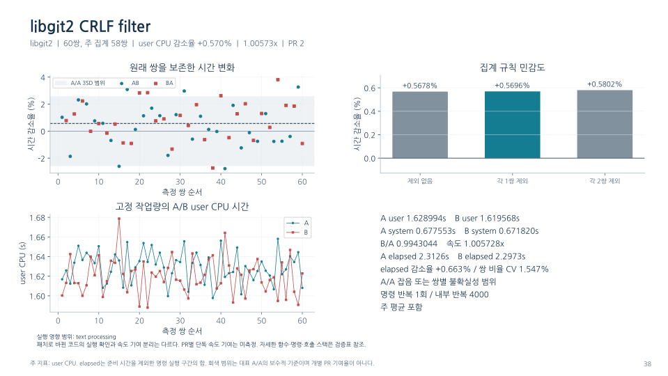
실행 영향 범위: text processing
집계: 프로젝트 평균 포함 · 쌍 비율 CV 1.547% · B/A 0.9943044 · 배율 1.005728×
| 지표 | A | B |
|---|---|---|
| user CPU | 1.628994 s | 1.619568 s |
| system CPU | 0.677553 s | 0.671820 s |
| 명령 실행 elapsed | 2.312600 s | 2.297300 s |
| 각 꼬리에서 제외한 쌍 수 | user CPU 시간 감소율 |
|---|---|
| 0 | +0.5678% |
| 1 | +0.5696% |
| 2 | +0.5802% |
변경 함수에 관련된 PR
- 최진범 · 포크 #2 · [InstCombine] Let foldSelectBitTest use known bits for the single-bit mask
작성자 이름은 최종보고서로 대조한 PR에 표시했습니다. 관련 PR 목록은 단독 속도 기여율을 뜻하지 않습니다.
| 관련 PR | 함수 / 심벌 | 실행된 변경 명령 또는 확인 내용 |
|---|---|---|
| 2 | crlf_check | mov 0x8(%rsp),%eax |
검증 방식(원문): Single-PR native ablation and actual changed instruction step
검증 근거의 원래 파일 식별자
candidate-review-2x20/execution/correctness/native-probes/libgit2-filter.jsoncandidate-review-2x20/execution/correctness/libgit2/correctness.jsoncandidate-review-2x20/execution/attribution/libgit2-crlf/result.json
위 목록은 원래 검증표의 상대 경로입니다. 해당 경로를 사이트의 다운로드 링크로 표시하지 않았습니다. 공개한 쌍별·관측별 수치는 아래 자료 범위에서 받을 수 있습니다.
YARA-X
Rule compilation using the math module
원시 쌍 재검토 · 2026-10-18
시간 감소 35/60쌍 · 시간 증가 25쌍 · 동일 0쌍. 재표집 참고 구간에 0이 포함됩니다.
순서별 집계·집계 민감도·재표집 구간
- 원보고 감소율 · 각 꼬리 1쌍 제외
- +0.545%
- 전체 쌍 평균 · 제외 없음
- +0.516%
- AB / BA 평균
- +0.470% / +0.562%
- 전반 / 후반 평균
- +0.360% / +0.672%
- 양 끝 0 / 1 / 2쌍 제외
- +0.516% / +0.545% / +0.567%
- 연속 시간 구간별 평균
- +1.410% / +0.678% / −1.009% / −0.777% / +1.230% / +1.564%
- 재표집 참고 범위
- −0.298% ~ +1.225%
- 블록 길이별 95% 구간
- 2쌍: −0.206% ~ +1.204% · 4쌍: −0.205% ~ +1.186% · 6쌍: −0.205% ~ +1.146% · 10쌍: −0.298% ~ +1.225%
- elapsed 전체 쌍 평균 감소율 · 보조 지표
- −1.729%
모든 60쌍의 수치 보기 · 제외 없음
| 쌍 | 순서 | A user (초) | B user (초) | 감소율 | 원보고 주 집계 |
|---|---|---|---|---|---|
| 1 | AB | 1.558209 | 1.482819 | +4.838% | 꼬리 제외 |
| 2 | BA | 1.527391 | 1.539084 | −0.766% | 포함 |
| 3 | AB | 1.508374 | 1.508912 | −0.036% | 포함 |
| 4 | BA | 1.554948 | 1.545076 | +0.635% | 포함 |
| 5 | AB | 1.557142 | 1.482143 | +4.816% | 포함 |
| 6 | BA | 1.535091 | 1.550983 | −1.035% | 포함 |
| 7 | AB | 1.566056 | 1.514322 | +3.303% | 포함 |
| 8 | BA | 1.513586 | 1.533445 | −1.312% | 포함 |
| 9 | AB | 1.509392 | 1.489080 | +1.346% | 포함 |
| 10 | BA | 1.565776 | 1.529636 | +2.308% | 포함 |
| 11 | AB | 1.546586 | 1.559372 | −0.827% | 포함 |
| 12 | BA | 1.512955 | 1.542353 | −1.943% | 포함 |
| 13 | AB | 1.536947 | 1.535123 | +0.119% | 포함 |
| 14 | BA | 1.528524 | 1.503157 | +1.660% | 포함 |
| 15 | AB | 1.535879 | 1.592632 | −3.695% | 포함 |
| 16 | BA | 1.530300 | 1.523727 | +0.430% | 포함 |
| 17 | AB | 1.528688 | 1.550683 | −1.439% | 포함 |
| 18 | BA | 1.570956 | 1.514560 | +3.590% | 포함 |
| 19 | AB | 1.540405 | 1.476697 | +4.136% | 포함 |
| 20 | BA | 1.547541 | 1.473990 | +4.753% | 포함 |
| 21 | AB | 1.456844 | 1.465728 | −0.610% | 포함 |
| 22 | BA | 1.468757 | 1.530030 | −4.172% | 포함 |
| 23 | AB | 1.472655 | 1.477874 | −0.354% | 포함 |
| 24 | BA | 1.491807 | 1.540905 | −3.291% | 포함 |
| 25 | AB | 1.478852 | 1.434526 | +2.997% | 포함 |
| 26 | BA | 1.488407 | 1.485323 | +0.207% | 포함 |
| 27 | AB | 1.513654 | 1.454804 | +3.888% | 포함 |
| 28 | BA | 1.498728 | 1.473055 | +1.713% | 포함 |
| 29 | AB | 1.452972 | 1.524913 | −4.951% | 포함 |
| 30 | BA | 1.433628 | 1.512723 | −5.517% | 꼬리 제외 |
| 31 | AB | 1.473412 | 1.524282 | −3.453% | 포함 |
| 32 | BA | 1.502625 | 1.486993 | +1.040% | 포함 |
| 33 | AB | 1.502323 | 1.486308 | +1.066% | 포함 |
| 34 | BA | 1.456824 | 1.503659 | −3.215% | 포함 |
| 35 | AB | 1.474764 | 1.474505 | +0.018% | 포함 |
| 36 | BA | 1.452429 | 1.467292 | −1.023% | 포함 |
| 37 | AB | 1.442299 | 1.486447 | −3.061% | 포함 |
| 38 | BA | 1.475263 | 1.476427 | −0.079% | 포함 |
| 39 | AB | 1.509832 | 1.486161 | +1.568% | 포함 |
| 40 | BA | 1.470155 | 1.479492 | −0.635% | 포함 |
| 41 | AB | 1.447405 | 1.490404 | −2.971% | 포함 |
| 42 | BA | 1.476609 | 1.419029 | +3.899% | 포함 |
| 43 | AB | 1.529929 | 1.495313 | +2.263% | 포함 |
| 44 | BA | 1.467331 | 1.475421 | −0.551% | 포함 |
| 45 | AB | 1.508668 | 1.472374 | +2.406% | 포함 |
| 46 | BA | 1.543486 | 1.470881 | +4.704% | 포함 |
| 47 | AB | 1.500693 | 1.501688 | −0.066% | 포함 |
| 48 | BA | 1.497427 | 1.469234 | +1.883% | 포함 |
| 49 | AB | 1.497645 | 1.486134 | +0.769% | 포함 |
| 50 | BA | 1.478123 | 1.478596 | −0.032% | 포함 |
| 51 | AB | 1.538023 | 1.531224 | +0.442% | 포함 |
| 52 | BA | 1.516715 | 1.486112 | +2.018% | 포함 |
| 53 | AB | 1.478125 | 1.447603 | +2.065% | 포함 |
| 54 | BA | 1.533382 | 1.479673 | +3.503% | 포함 |
| 55 | AB | 1.497309 | 1.535256 | −2.534% | 포함 |
| 56 | BA | 1.531202 | 1.495170 | +2.353% | 포함 |
| 57 | AB | 1.479311 | 1.458942 | +1.377% | 포함 |
| 58 | BA | 1.518540 | 1.454813 | +4.197% | 포함 |
| 59 | AB | 1.495089 | 1.485011 | +0.674% | 포함 |
| 60 | BA | 1.485300 | 1.462359 | +1.545% | 포함 |
원보고 차트·측정 조건·실행된 변경·검증 기록
2026-10-16 당시 공통 기준의 판정: A/A 잡음 또는 쌍별 불확실성 범위
원래 판정과 차트 표기는 기록으로 보존했습니다. 위의 평균 방향은 2026-10-18 원시 쌍 재검토 결과입니다.
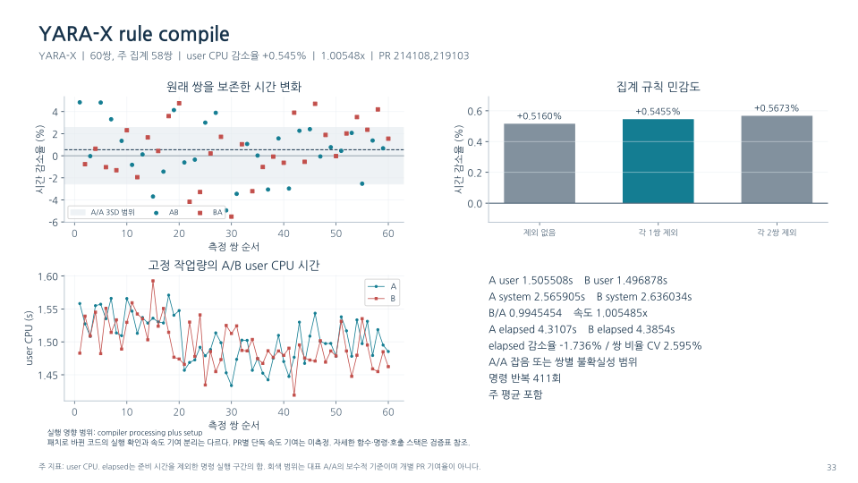
실행 영향 범위: compiler processing plus setup
집계: 프로젝트 평균 포함 · 쌍 비율 CV 2.595% · B/A 0.9945454 · 배율 1.005485×
| 지표 | A | B |
|---|---|---|
| user CPU | 1.505508 s | 1.496878 s |
| system CPU | 2.565905 s | 2.636034 s |
| 명령 실행 elapsed | 4.310700 s | 4.385400 s |
| 각 꼬리에서 제외한 쌍 수 | user CPU 시간 감소율 |
|---|---|
| 0 | +0.5160% |
| 1 | +0.5455% |
| 2 | +0.5673% |
변경 함수에 관련된 PR
- 정하람 · PR #214108 · [InstCombine] Fold comparisons of llvm.usub.sat result with its LHS
- 최진범 · PR #219103 · [ValueTracking] a u>= b and a = b + NonZero implies a != 0
작성자 이름은 최종보고서로 대조한 PR에 표시했습니다. 관련 PR 목록은 단독 속도 기여율을 뜻하지 않습니다.
| 관련 PR | 함수 / 심벌 | 실행된 변경 명령 또는 확인 내용 |
|---|---|---|
| 219103 | hashbrown::raw::RawTableInner::fallible_with_capacity::hfd632db547923ce9 (.llvm.12816912266418053207) | mov %rax,%r14 |
| 219103 | hashbrown::raw::RawTableInner::fallible_with_capacity::hfd632db547923ce9 (.llvm.12816912266418053207) | add $0xf,%r14 |
| 214108 | yara_x::wasm::WasmExport::fully_qualified_mangled_name::h5927677f487e2f63 | mov %rax,%r14 |
| 214108 | yara_x::wasm::WasmExport::fully_qualified_mangled_name::h5927677f487e2f63 | mov %r14,%rdi |
| 214108 | yara_x::wasm::WasmExport::fully_qualified_mangled_name::h5927677f487e2f63 | movzbl (%r14),%eax |
| 214108 | yara_x::wasm::WasmExport::fully_qualified_mangled_name::h5927677f487e2f63 | mov %rsi,%rbp |
| 214108 | yara_x::wasm::WasmExport::fully_qualified_mangled_name::h5927677f487e2f63 | cmp %rbx,%rbp |
| 214108 | yara_x::wasm::WasmExport::fully_qualified_mangled_name::h5927677f487e2f63 | movzbl (%r14,%rbp,1),%ecx |
| 214108 | yara_x::wasm::WasmExport::fully_qualified_mangled_name::h5927677f487e2f63 | mov 0x8(%rsp),%r13 |
| 214108 | yara_x::wasm::WasmExport::fully_qualified_mangled_name::h5927677f487e2f63 | mov %r13,%rdi |
| 219103 | hashbrown::raw::RawTableInner::fallible_with_capacity::h6b3e3ce36b386aa5 (.llvm.17035172837200826287) | mov %rax,%r14 |
| 219103 | hashbrown::raw::RawTableInner::fallible_with_capacity::h6b3e3ce36b386aa5 (.llvm.17035172837200826287) | add $0xf,%r14 |
검증 방식(원문): Single-PR native ablation and actual changed instruction step
검증 근거의 원래 파일 식별자
candidate-review-2x20/execution/correctness/native-probes/yara-compile.jsoncandidate-review-2x20/execution/correctness/yara/correctness.jsoncandidate-review-2x20/execution/manifests/yara-x-nightly-native-ablation.json
위 목록은 원래 검증표의 상대 경로입니다. 해당 경로를 사이트의 다운로드 링크로 표시하지 않았습니다. 공개한 쌍별·관측별 수치는 아래 자료 범위에서 받을 수 있습니다.
libarchive
USTAR archive creation from official source files
원시 쌍 재검토 · 2026-10-18
시간 감소 33/60쌍 · 시간 증가 27쌍 · 동일 0쌍. AB와 BA의 평균 방향이 다릅니다. 재표집 참고 구간에 0이 포함됩니다.
순서별 집계·집계 민감도·재표집 구간
- 원보고 감소율 · 각 꼬리 1쌍 제외
- +0.507%
- 전체 쌍 평균 · 제외 없음
- +0.476%
- AB / BA 평균
- +1.239% / −0.286%
- 전반 / 후반 평균
- +0.197% / +0.756%
- 양 끝 0 / 1 / 2쌍 제외
- +0.476% / +0.507% / +0.514%
- 연속 시간 구간별 평균
- +0.364% / +1.556% / −1.330% / +2.335% / −0.427% / +0.362%
- 재표집 참고 범위
- −0.507% ~ +1.483%
- 블록 길이별 95% 구간
- 2쌍: −0.507% ~ +1.483% · 4쌍: −0.445% ~ +1.421% · 6쌍: −0.369% ~ +1.378% · 10쌍: −0.229% ~ +1.293%
- elapsed 전체 쌍 평균 감소율 · 보조 지표
- +0.133%
모든 60쌍의 수치 보기 · 제외 없음
| 쌍 | 순서 | A user (초) | B user (초) | 감소율 | 원보고 주 집계 |
|---|---|---|---|---|---|
| 1 | AB | 1.211300 | 1.193418 | +1.476% | 포함 |
| 2 | BA | 1.188982 | 1.125964 | +5.300% | 포함 |
| 3 | AB | 1.184537 | 1.172725 | +0.997% | 포함 |
| 4 | BA | 1.173159 | 1.192867 | −1.680% | 포함 |
| 5 | AB | 1.160225 | 1.183392 | −1.997% | 포함 |
| 6 | BA | 1.199765 | 1.219116 | −1.613% | 포함 |
| 7 | AB | 1.181052 | 1.165797 | +1.292% | 포함 |
| 8 | BA | 1.116008 | 1.153265 | −3.338% | 포함 |
| 9 | AB | 1.203235 | 1.218257 | −1.248% | 포함 |
| 10 | BA | 1.224864 | 1.170368 | +4.449% | 포함 |
| 11 | AB | 1.199065 | 1.175010 | +2.006% | 포함 |
| 12 | BA | 1.159519 | 1.216100 | −4.880% | 포함 |
| 13 | AB | 1.219010 | 1.114990 | +8.533% | 포함 |
| 14 | BA | 1.248964 | 1.229199 | +1.583% | 포함 |
| 15 | AB | 1.206584 | 1.226357 | −1.639% | 포함 |
| 16 | BA | 1.154440 | 1.183261 | −2.497% | 포함 |
| 17 | AB | 1.207447 | 1.180316 | +2.247% | 포함 |
| 18 | BA | 1.235999 | 1.109833 | +10.208% | 꼬리 제외 |
| 19 | AB | 1.179542 | 1.160991 | +1.573% | 포함 |
| 20 | BA | 1.207545 | 1.226565 | −1.575% | 포함 |
| 21 | AB | 1.069518 | 1.154319 | −7.929% | 포함 |
| 22 | BA | 1.108930 | 1.129008 | −1.811% | 포함 |
| 23 | AB | 1.158072 | 1.094969 | +5.449% | 포함 |
| 24 | BA | 1.119871 | 1.166351 | −4.150% | 포함 |
| 25 | AB | 1.111066 | 1.157975 | −4.222% | 포함 |
| 26 | BA | 1.147212 | 1.141734 | +0.478% | 포함 |
| 27 | AB | 1.193166 | 1.116389 | +6.435% | 포함 |
| 28 | BA | 1.130828 | 1.138890 | −0.713% | 포함 |
| 29 | AB | 1.154941 | 1.106449 | +4.199% | 포함 |
| 30 | BA | 1.061862 | 1.179050 | −11.036% | 꼬리 제외 |
| 31 | AB | 1.145017 | 1.172598 | −2.409% | 포함 |
| 32 | BA | 1.195002 | 1.163842 | +2.608% | 포함 |
| 33 | AB | 1.141532 | 1.110551 | +2.714% | 포함 |
| 34 | BA | 1.145557 | 1.115582 | +2.617% | 포함 |
| 35 | AB | 1.216590 | 1.149006 | +5.555% | 포함 |
| 36 | BA | 1.205303 | 1.124954 | +6.666% | 포함 |
| 37 | AB | 1.182174 | 1.137682 | +3.764% | 포함 |
| 38 | BA | 1.138238 | 1.132972 | +0.463% | 포함 |
| 39 | AB | 1.135767 | 1.092948 | +3.770% | 포함 |
| 40 | BA | 1.129349 | 1.156429 | −2.398% | 포함 |
| 41 | AB | 1.091142 | 1.104110 | −1.188% | 포함 |
| 42 | BA | 1.150013 | 1.112586 | +3.254% | 포함 |
| 43 | AB | 1.172622 | 1.151594 | +1.793% | 포함 |
| 44 | BA | 1.103998 | 1.093650 | +0.937% | 포함 |
| 45 | AB | 1.137647 | 1.104127 | +2.946% | 포함 |
| 46 | BA | 1.123313 | 1.146354 | −2.051% | 포함 |
| 47 | AB | 1.086701 | 1.132001 | −4.169% | 포함 |
| 48 | BA | 1.120671 | 1.156944 | −3.237% | 포함 |
| 49 | AB | 1.061590 | 1.112901 | −4.833% | 포함 |
| 50 | BA | 1.159871 | 1.133496 | +2.274% | 포함 |
| 51 | AB | 1.158870 | 1.116051 | +3.695% | 포함 |
| 52 | BA | 1.209156 | 1.136007 | +6.050% | 포함 |
| 53 | AB | 1.116946 | 1.058374 | +5.244% | 포함 |
| 54 | BA | 1.107171 | 1.133360 | −2.365% | 포함 |
| 55 | AB | 1.146589 | 1.130534 | +1.400% | 포함 |
| 56 | BA | 1.088395 | 1.161104 | −6.680% | 포함 |
| 57 | AB | 1.187971 | 1.162566 | +2.139% | 포함 |
| 58 | BA | 1.147420 | 1.172402 | −2.177% | 포함 |
| 59 | AB | 1.120858 | 1.125623 | −0.425% | 포함 |
| 60 | BA | 1.119334 | 1.155864 | −3.264% | 포함 |
원보고 차트·측정 조건·실행된 변경·검증 기록
2026-10-16 당시 공통 기준의 판정: A/A 잡음 또는 쌍별 불확실성 범위
원래 판정과 차트 표기는 기록으로 보존했습니다. 위의 평균 방향은 2026-10-18 원시 쌍 재검토 결과입니다.
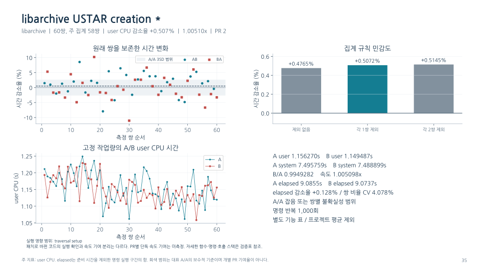
실행 영향 범위: traversal setup
집계: 별도 기능 표 · 프로젝트 평균 제외 · 쌍 비율 CV 4.078% · B/A 0.9949282 · 배율 1.005098×
| 지표 | A | B |
|---|---|---|
| user CPU | 1.156270 s | 1.149487 s |
| system CPU | 7.495759 s | 7.488899 s |
| 명령 실행 elapsed | 9.085500 s | 9.073700 s |
| 각 꼬리에서 제외한 쌍 수 | user CPU 시간 감소율 |
|---|---|
| 0 | +0.4765% |
| 1 | +0.5072% |
| 2 | +0.5145% |
변경 함수에 관련된 PR
- 최진범 · 포크 #2 · [InstCombine] Let foldSelectBitTest use known bits for the single-bit mask
작성자 이름은 최종보고서로 대조한 PR에 표시했습니다. 관련 PR 목록은 단독 속도 기여율을 뜻하지 않습니다.
| 관련 PR | 함수 / 심벌 | 실행된 변경 명령 또는 확인 내용 |
|---|---|---|
| 2 | tree_reopen | or $0x2,%edx |
| 2 | tree_reopen | shl $0x7,%edx |
검증 방식(원문): Single-PR native ablation and actual changed instruction step
검증 근거의 원래 파일 식별자
candidate-review-2x20/execution/correctness/native-probes/libarchive-create-ustar.jsoncandidate-review-2x20/execution/correctness/libarchive-create/correctness.jsoncandidate-review-2x20/execution/attribution/libarchive-tree/result.json
위 목록은 원래 검증표의 상대 경로입니다. 해당 경로를 사이트의 다운로드 링크로 표시하지 않았습니다. 공개한 쌍별·관측별 수치는 아래 자료 범위에서 받을 수 있습니다.
Ruff
Official pyupgrade fix preview corpus
원시 쌍 재검토 · 2026-10-18
시간 감소 38/60쌍 · 시간 증가 22쌍 · 동일 0쌍. AB와 BA의 평균 방향이 다릅니다.
순서별 집계·집계 민감도·재표집 구간
- 원보고 감소율 · 각 꼬리 1쌍 제외
- +0.484%
- 전체 쌍 평균 · 제외 없음
- +0.499%
- AB / BA 평균
- −0.308% / +1.307%
- 전반 / 후반 평균
- +0.338% / +0.660%
- 양 끝 0 / 1 / 2쌍 제외
- +0.499% / +0.484% / +0.475%
- 연속 시간 구간별 평균
- +0.076% / +0.462% / +0.476% / +1.003% / +0.271% / +0.706%
- 재표집 참고 범위
- +0.013% ~ +0.991%
- 블록 길이별 95% 구간
- 2쌍: +0.013% ~ +0.991% · 4쌍: +0.019% ~ +0.968% · 6쌍: +0.074% ~ +0.920% · 10쌍: +0.161% ~ +0.833%
- elapsed 전체 쌍 평균 감소율 · 보조 지표
- +4.143%
모든 60쌍의 수치 보기 · 제외 없음
| 쌍 | 순서 | A user (초) | B user (초) | 감소율 | 원보고 주 집계 |
|---|---|---|---|---|---|
| 1 | AB | 1.179084 | 1.200406 | −1.808% | 포함 |
| 2 | BA | 1.199996 | 1.221029 | −1.753% | 포함 |
| 3 | AB | 1.214179 | 1.214390 | −0.017% | 포함 |
| 4 | BA | 1.211173 | 1.192114 | +1.574% | 포함 |
| 5 | AB | 1.203148 | 1.211173 | −0.667% | 포함 |
| 6 | BA | 1.186414 | 1.185553 | +0.073% | 포함 |
| 7 | AB | 1.194389 | 1.197685 | −0.276% | 포함 |
| 8 | BA | 1.193585 | 1.165900 | +2.319% | 포함 |
| 9 | AB | 1.188178 | 1.184261 | +0.330% | 포함 |
| 10 | BA | 1.196577 | 1.184729 | +0.990% | 포함 |
| 11 | AB | 1.200485 | 1.185637 | +1.237% | 포함 |
| 12 | BA | 1.192747 | 1.201060 | −0.697% | 포함 |
| 13 | AB | 1.212802 | 1.196151 | +1.373% | 포함 |
| 14 | BA | 1.194211 | 1.187766 | +0.540% | 포함 |
| 15 | AB | 1.181409 | 1.211042 | −2.508% | 포함 |
| 16 | BA | 1.186094 | 1.172750 | +1.125% | 포함 |
| 17 | AB | 1.215068 | 1.207061 | +0.659% | 포함 |
| 18 | BA | 1.214107 | 1.190973 | +1.905% | 포함 |
| 19 | AB | 1.184882 | 1.181437 | +0.291% | 포함 |
| 20 | BA | 1.187761 | 1.179510 | +0.695% | 포함 |
| 21 | AB | 1.159655 | 1.173173 | −1.166% | 포함 |
| 22 | BA | 1.203378 | 1.166791 | +3.040% | 포함 |
| 23 | AB | 1.212788 | 1.191542 | +1.752% | 포함 |
| 24 | BA | 1.191832 | 1.134353 | +4.823% | 포함 |
| 25 | AB | 1.183109 | 1.176477 | +0.561% | 포함 |
| 26 | BA | 1.169509 | 1.173546 | −0.345% | 포함 |
| 27 | AB | 1.167422 | 1.187749 | −1.741% | 포함 |
| 28 | BA | 1.158870 | 1.193066 | −2.951% | 포함 |
| 29 | AB | 1.161136 | 1.167462 | −0.545% | 포함 |
| 30 | BA | 1.201329 | 1.185309 | +1.334% | 포함 |
| 31 | AB | 1.188637 | 1.190809 | −0.183% | 포함 |
| 32 | BA | 1.200929 | 1.184052 | +1.405% | 포함 |
| 33 | AB | 1.167395 | 1.185501 | −1.551% | 포함 |
| 34 | BA | 1.213703 | 1.175093 | +3.181% | 포함 |
| 35 | AB | 1.171415 | 1.169322 | +0.179% | 포함 |
| 36 | BA | 1.182254 | 1.165152 | +1.447% | 포함 |
| 37 | AB | 1.191142 | 1.174570 | +1.391% | 포함 |
| 38 | BA | 1.216368 | 1.161226 | +4.533% | 포함 |
| 39 | AB | 1.165994 | 1.180744 | −1.265% | 포함 |
| 40 | BA | 1.196390 | 1.185663 | +0.897% | 포함 |
| 41 | AB | 1.179052 | 1.189670 | −0.901% | 포함 |
| 42 | BA | 1.174211 | 1.136223 | +3.235% | 포함 |
| 43 | AB | 1.167413 | 1.166982 | +0.037% | 포함 |
| 44 | BA | 1.197786 | 1.191597 | +0.517% | 포함 |
| 45 | AB | 1.161841 | 1.206162 | −3.815% | 꼬리 제외 |
| 46 | BA | 1.201754 | 1.183450 | +1.523% | 포함 |
| 47 | AB | 1.181112 | 1.194901 | −1.167% | 포함 |
| 48 | BA | 1.198691 | 1.174643 | +2.006% | 포함 |
| 49 | AB | 1.181396 | 1.179259 | +0.181% | 포함 |
| 50 | BA | 1.168800 | 1.156041 | +1.092% | 포함 |
| 51 | AB | 1.171653 | 1.182677 | −0.941% | 포함 |
| 52 | BA | 1.188458 | 1.180157 | +0.698% | 포함 |
| 53 | AB | 1.159679 | 1.179525 | −1.711% | 포함 |
| 54 | BA | 1.194169 | 1.159474 | +2.905% | 포함 |
| 55 | AB | 1.182390 | 1.161839 | +1.738% | 포함 |
| 56 | BA | 1.172868 | 1.164035 | +0.753% | 포함 |
| 57 | AB | 1.197860 | 1.169095 | +2.401% | 포함 |
| 58 | BA | 1.210549 | 1.141965 | +5.666% | 꼬리 제외 |
| 59 | AB | 1.154800 | 1.167685 | −1.116% | 포함 |
| 60 | BA | 1.131755 | 1.169490 | −3.334% | 포함 |
원보고 차트·측정 조건·실행된 변경·검증 기록
2026-10-16 당시 공통 기준의 판정: A/A 잡음 또는 쌍별 불확실성 범위
원래 판정과 차트 표기는 기록으로 보존했습니다. 위의 평균 방향은 2026-10-18 원시 쌍 재검토 결과입니다.
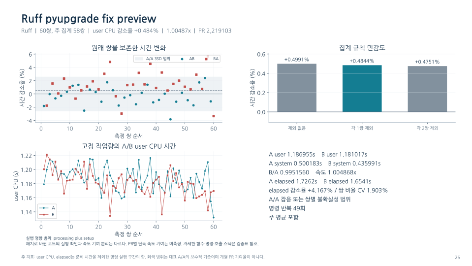
실행 영향 범위: processing plus setup
집계: 프로젝트 평균 포함 · 쌍 비율 CV 1.903% · B/A 0.9951560 · 배율 1.004868×
| 지표 | A | B |
|---|---|---|
| user CPU | 1.186955 s | 1.181017 s |
| system CPU | 0.500183 s | 0.435991 s |
| 명령 실행 elapsed | 1.726200 s | 1.654100 s |
| 각 꼬리에서 제외한 쌍 수 | user CPU 시간 감소율 |
|---|---|
| 0 | +0.4991% |
| 1 | +0.4844% |
| 2 | +0.4751% |
변경 함수에 관련된 PR
- 최진범 · 포크 #2 · [InstCombine] Let foldSelectBitTest use known bits for the single-bit mask
- 최진범 · PR #219103 · [ValueTracking] a u>= b and a = b + NonZero implies a != 0
작성자 이름은 최종보고서로 대조한 PR에 표시했습니다. 관련 PR 목록은 단독 속도 기여율을 뜻하지 않습니다.
| 관련 PR | 함수 / 심벌 | 실행된 변경 명령 또는 확인 내용 |
|---|---|---|
| 219103 | hashbrown::raw::RawTableInner::fallible_with_capacity::h975410b723b62379 (.llvm.10081969702071946121) | mov %rax,%r14 |
| 219103 | hashbrown::raw::RawTableInner::fallible_with_capacity::h975410b723b62379 (.llvm.10081969702071946121) | add $0xf,%r14 |
| 219103 | hashbrown::raw::RawTableInner::fallible_with_capacity::h975410b723b62379 (.llvm.10081969702071946121) | mov %r12,%rdi |
| 219103 | hashbrown::raw::RawTableInner::fallible_with_capacity::h975410b723b62379 (.llvm.10081969702071946121) | je 1647f4f <_ZN9hashbrown3raw13RawTableInner22fallible_with_capacity17h975410b723b62379E.llvm.10081969702071946121+0x15f> |
| 219103 | hashbrown::raw::RawTableInner::fallible_with_capacity::h9057f2c4dfd6c4a3 (.llvm.9033525886068728301) | mov %rax,%r14 |
| 219103 | hashbrown::raw::RawTableInner::fallible_with_capacity::h9057f2c4dfd6c4a3 (.llvm.9033525886068728301) | add $0xf,%r14 |
| 219103 | hashbrown::raw::RawTableInner::fallible_with_capacity::h9057f2c4dfd6c4a3 (.llvm.9033525886068728301) | mov %r12,%rdi |
| 219103 | hashbrown::raw::RawTableInner::fallible_with_capacity::h9057f2c4dfd6c4a3 (.llvm.9033525886068728301) | je 10781d0 <_ZN9hashbrown3raw13RawTableInner22fallible_with_capacity17h9057f2c4dfd6c4a3E.llvm.9033525886068728301+0x150> |
| 219103 | hashbrown::raw::RawTableInner::fallible_with_capacity::ha7d0bab024376f4b (.llvm.3069877314454008576) | mov %rax,%r14 |
| 219103 | hashbrown::raw::RawTableInner::fallible_with_capacity::ha7d0bab024376f4b (.llvm.3069877314454008576) | add $0xf,%r14 |
| 219103 | hashbrown::raw::RawTableInner::fallible_with_capacity::ha7d0bab024376f4b (.llvm.3069877314454008576) | mov %r12,%rdi |
| 219103 | hashbrown::raw::RawTableInner::fallible_with_capacity::ha7d0bab024376f4b (.llvm.3069877314454008576) | je 987d6a <_ZN9hashbrown3raw13RawTableInner22fallible_with_capacity17ha7d0bab024376f4bE.llvm.3069877314454008576+0x13a> |
| 2 | ruff_python_literal::escape::BytesRepr::write::h9e2db28b87daa0da | movzbl 0x8(%rdi),%r12d |
| 2 | ruff_python_literal::escape::BytesRepr::write::h9e2db28b87daa0da | mov 0x8(%rbx),%rbp |
| 2 | ruff_python_literal::escape::BytesRepr::write::h9e2db28b87daa0da | lea -0x15f2c28(%rip),%rcx # 2ff2bd <anon.03004b0668796b82b4718af6ec046b51.2.llvm.2223383040009472149> |
| 2 | ruff_python_literal::escape::BytesRepr::write::h9e2db28b87daa0da | cmove %rcx,%rdx |
검증 방식(원문): Single-PR native ablation and actual changed instruction step
검증 근거의 원래 파일 식별자
candidate-review-2x20/execution/correctness/native-probes/ruff-pyupgrade-fixes.jsoncandidate-review-2x20/execution/correctness/ruff-pyupgrade-fixes/output-equality.jsoncandidate-review-2x20/execution/manifests/ruff-native-ablation.json
위 목록은 원래 검증표의 상대 경로입니다. 해당 경로를 사이트의 다운로드 링크로 표시하지 않았습니다. 공개한 쌍별·관측별 수치는 아래 자료 범위에서 받을 수 있습니다.
libgit2
Public conditional configuration API
원시 쌍 재검토 · 2026-10-18
시간 감소 34/60쌍 · 시간 증가 26쌍 · 동일 0쌍. 재표집 참고 구간에 0이 포함됩니다.
순서별 집계·집계 민감도·재표집 구간
- 원보고 감소율 · 각 꼬리 1쌍 제외
- +0.444%
- 전체 쌍 평균 · 제외 없음
- +0.429%
- AB / BA 평균
- +0.224% / +0.634%
- 전반 / 후반 평균
- +0.608% / +0.250%
- 양 끝 0 / 1 / 2쌍 제외
- +0.429% / +0.444% / +0.466%
- 연속 시간 구간별 평균
- +0.576% / +0.968% / +0.280% / +1.304% / +0.266% / −0.820%
- 재표집 참고 범위
- −0.518% ~ +1.297%
- 블록 길이별 95% 구간
- 2쌍: −0.423% ~ +1.268% · 4쌍: −0.518% ~ +1.297% · 6쌍: −0.461% ~ +1.232% · 10쌍: −0.349% ~ +1.061%
- elapsed 전체 쌍 평균 감소율 · 보조 지표
- −0.108%
모든 60쌍의 수치 보기 · 제외 없음
| 쌍 | 순서 | A user (초) | B user (초) | 감소율 | 원보고 주 집계 |
|---|---|---|---|---|---|
| 1 | AB | 1.570994 | 1.609632 | −2.459% | 포함 |
| 2 | BA | 1.563435 | 1.556309 | +0.456% | 포함 |
| 3 | AB | 1.589156 | 1.584335 | +0.303% | 포함 |
| 4 | BA | 1.537471 | 1.530699 | +0.440% | 포함 |
| 5 | AB | 1.556862 | 1.532767 | +1.548% | 포함 |
| 6 | BA | 1.614131 | 1.591497 | +1.402% | 포함 |
| 7 | AB | 1.534581 | 1.537657 | −0.200% | 포함 |
| 8 | BA | 1.513847 | 1.538677 | −1.640% | 포함 |
| 9 | AB | 1.601475 | 1.566788 | +2.166% | 포함 |
| 10 | BA | 1.582586 | 1.523354 | +3.743% | 포함 |
| 11 | AB | 1.610239 | 1.559553 | +3.148% | 포함 |
| 12 | BA | 1.555415 | 1.637369 | −5.269% | 포함 |
| 13 | AB | 1.606462 | 1.521744 | +5.274% | 포함 |
| 14 | BA | 1.632511 | 1.537960 | +5.792% | 포함 |
| 15 | AB | 1.602230 | 1.532902 | +4.327% | 포함 |
| 16 | BA | 1.553904 | 1.601684 | −3.075% | 포함 |
| 17 | AB | 1.519908 | 1.482019 | +2.493% | 포함 |
| 18 | BA | 1.513846 | 1.568888 | −3.636% | 포함 |
| 19 | AB | 1.547926 | 1.563890 | −1.031% | 포함 |
| 20 | BA | 1.581918 | 1.555673 | +1.659% | 포함 |
| 21 | AB | 1.603228 | 1.528765 | +4.645% | 포함 |
| 22 | BA | 1.565645 | 1.571334 | −0.363% | 포함 |
| 23 | AB | 1.592535 | 1.615551 | −1.445% | 포함 |
| 24 | BA | 1.564606 | 1.598875 | −2.190% | 포함 |
| 25 | AB | 1.539444 | 1.537452 | +0.129% | 포함 |
| 26 | BA | 1.529051 | 1.540218 | −0.730% | 포함 |
| 27 | AB | 1.543392 | 1.535181 | +0.532% | 포함 |
| 28 | BA | 1.581123 | 1.553545 | +1.744% | 포함 |
| 29 | AB | 1.592877 | 1.576955 | +1.000% | 포함 |
| 30 | BA | 1.520745 | 1.528622 | −0.518% | 포함 |
| 31 | AB | 1.593901 | 1.588263 | +0.354% | 포함 |
| 32 | BA | 1.629009 | 1.503625 | +7.697% | 꼬리 제외 |
| 33 | AB | 1.586937 | 1.588842 | −0.120% | 포함 |
| 34 | BA | 1.573633 | 1.544176 | +1.872% | 포함 |
| 35 | AB | 1.524135 | 1.594791 | −4.636% | 포함 |
| 36 | BA | 1.494437 | 1.527859 | −2.236% | 포함 |
| 37 | AB | 1.576886 | 1.566087 | +0.685% | 포함 |
| 38 | BA | 1.576922 | 1.585459 | −0.541% | 포함 |
| 39 | AB | 1.601503 | 1.498725 | +6.418% | 포함 |
| 40 | BA | 1.599099 | 1.542353 | +3.549% | 포함 |
| 41 | AB | 1.554916 | 1.590836 | −2.310% | 포함 |
| 42 | BA | 1.604814 | 1.498453 | +6.628% | 포함 |
| 43 | AB | 1.534618 | 1.548298 | −0.891% | 포함 |
| 44 | BA | 1.580593 | 1.589756 | −0.580% | 포함 |
| 45 | AB | 1.508070 | 1.604910 | −6.421% | 포함 |
| 46 | BA | 1.593679 | 1.588734 | +0.310% | 포함 |
| 47 | AB | 1.579566 | 1.593788 | −0.900% | 포함 |
| 48 | BA | 1.620677 | 1.571775 | +3.017% | 포함 |
| 49 | AB | 1.588699 | 1.541725 | +2.957% | 포함 |
| 50 | BA | 1.527778 | 1.514739 | +0.853% | 포함 |
| 51 | AB | 1.584729 | 1.636600 | −3.273% | 포함 |
| 52 | BA | 1.599819 | 1.508805 | +5.689% | 포함 |
| 53 | AB | 1.578690 | 1.547727 | +1.961% | 포함 |
| 54 | BA | 1.583817 | 1.524754 | +3.729% | 포함 |
| 55 | AB | 1.524849 | 1.543696 | −1.236% | 포함 |
| 56 | BA | 1.582749 | 1.555667 | +1.711% | 포함 |
| 57 | AB | 1.517808 | 1.507647 | +0.669% | 포함 |
| 58 | BA | 1.557762 | 1.677721 | −7.701% | 꼬리 제외 |
| 59 | AB | 1.501955 | 1.606549 | −6.964% | 포함 |
| 60 | BA | 1.531818 | 1.574563 | −2.790% | 포함 |
원보고 차트·측정 조건·실행된 변경·검증 기록
2026-10-16 당시 공통 기준의 판정: A/A 잡음 또는 쌍별 불확실성 범위
원래 판정과 차트 표기는 기록으로 보존했습니다. 위의 평균 방향은 2026-10-18 원시 쌍 재검토 결과입니다.
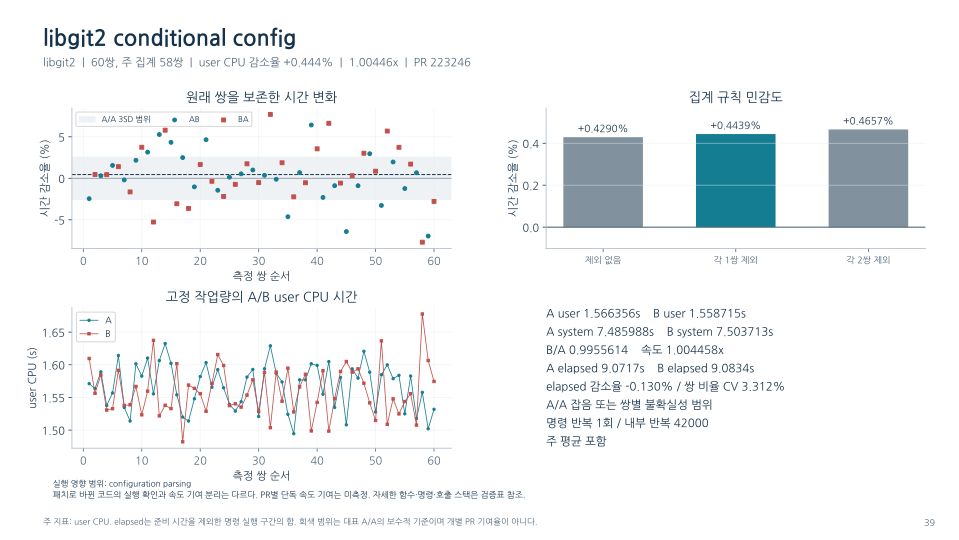
실행 영향 범위: configuration parsing
집계: 프로젝트 평균 포함 · 쌍 비율 CV 3.312% · B/A 0.9955614 · 배율 1.004458×
| 지표 | A | B |
|---|---|---|
| user CPU | 1.566356 s | 1.558715 s |
| system CPU | 7.485988 s | 7.503713 s |
| 명령 실행 elapsed | 9.071700 s | 9.083400 s |
| 각 꼬리에서 제외한 쌍 수 | user CPU 시간 감소율 |
|---|---|
| 0 | +0.4290% |
| 1 | +0.4439% |
| 2 | +0.4657% |
변경 함수에 관련된 PR
- 정하람 · PR #223246 · [InstCombine] Fold strlen/wcslen over select/phi of constants
작성자 이름은 최종보고서로 대조한 PR에 표시했습니다. 관련 PR 목록은 단독 속도 기여율을 뜻하지 않습니다.
| 관련 PR | 함수 / 심벌 | 실행된 변경 명령 또는 확인 내용 |
|---|---|---|
| 223246 | parse_conditional_include | sub $0x10,%rsp |
| 223246 | parse_conditional_include | lea -0x546d9(%rip),%rsi # 7542 <llparse_blob43+0x2696> |
| 223246 | parse_conditional_include | mov $0x7,%r12d |
| 223246 | parse_conditional_include | mov (%rbx),%rsi |
| 223246 | parse_conditional_include | add %r12,%rcx |
| 223246 | parse_conditional_include | cmpl $0x0,0xc(%rsp) |
| 223246 | parse_conditional_include | add $0x10,%rsp |
검증 방식(원문): Single-PR native ablation and actual changed instruction step
검증 근거의 원래 파일 식별자
candidate-review-2x20/execution/correctness/native-probes/libgit2-config.jsoncandidate-review-2x20/execution/correctness/libgit2/correctness.jsoncandidate-review-2x20/execution/attribution/libgit2-config/result.json
위 목록은 원래 검증표의 상대 경로입니다. 해당 경로를 사이트의 다운로드 링크로 표시하지 않았습니다. 공개한 쌍별·관측별 수치는 아래 자료 범위에서 받을 수 있습니다.
PCRE2
Four exact upstream extended character class intersection patterns; full compilation
원시 쌍 재검토 · 2026-10-18
시간 감소 42/60쌍 · 시간 증가 18쌍 · 동일 0쌍. 실행 순서·전후반·꼬리 제외 수와 참고 구간에서 평균 방향이 유지됐습니다.
최진범 포크 #2compile_class_binary_tight · 관련 PR 1개
순서별 집계·집계 민감도·재표집 구간
- 원보고 감소율 · 각 꼬리 1쌍 제외
- +0.401%
- 전체 쌍 평균 · 제외 없음
- +0.412%
- AB / BA 평균
- +0.502% / +0.323%
- 전반 / 후반 평균
- +0.395% / +0.430%
- 양 끝 0 / 1 / 2쌍 제외
- +0.412% / +0.401% / +0.402%
- 연속 시간 구간별 평균
- +0.482% / +0.195% / +0.507% / +0.573% / +0.400% / +0.316%
- 재표집 참고 범위
- +0.227% ~ +0.589%
- 블록 길이별 95% 구간
- 2쌍: +0.227% ~ +0.589% · 4쌍: +0.229% ~ +0.586% · 6쌍: +0.237% ~ +0.584% · 10쌍: +0.271% ~ +0.546%
- elapsed 전체 쌍 평균 감소율 · 보조 지표
- +0.423%
모든 60쌍의 수치 보기 · 제외 없음
| 쌍 | 순서 | A user (초) | B user (초) | 감소율 | 원보고 주 집계 |
|---|---|---|---|---|---|
| 1 | AB | 1.293958 | 1.280102 | +1.071% | 포함 |
| 2 | BA | 1.293719 | 1.291352 | +0.183% | 포함 |
| 3 | AB | 1.293205 | 1.287931 | +0.408% | 포함 |
| 4 | BA | 1.295206 | 1.283292 | +0.920% | 포함 |
| 5 | AB | 1.303109 | 1.286102 | +1.305% | 포함 |
| 6 | BA | 1.289347 | 1.291582 | −0.173% | 포함 |
| 7 | AB | 1.296617 | 1.276955 | +1.516% | 포함 |
| 8 | BA | 1.291109 | 1.289093 | +0.156% | 포함 |
| 9 | AB | 1.283505 | 1.290379 | −0.536% | 포함 |
| 10 | BA | 1.291881 | 1.292209 | −0.025% | 포함 |
| 11 | AB | 1.290646 | 1.307704 | −1.322% | 꼬리 제외 |
| 12 | BA | 1.288301 | 1.293305 | −0.388% | 포함 |
| 13 | AB | 1.299209 | 1.287333 | +0.914% | 포함 |
| 14 | BA | 1.303836 | 1.290781 | +1.001% | 포함 |
| 15 | AB | 1.304056 | 1.315736 | −0.896% | 포함 |
| 16 | BA | 1.290100 | 1.286177 | +0.304% | 포함 |
| 17 | AB | 1.303798 | 1.291168 | +0.969% | 포함 |
| 18 | BA | 1.301004 | 1.286938 | +1.081% | 포함 |
| 19 | AB | 1.286256 | 1.287163 | −0.071% | 포함 |
| 20 | BA | 1.299990 | 1.295300 | +0.361% | 포함 |
| 21 | AB | 1.301134 | 1.292522 | +0.662% | 포함 |
| 22 | BA | 1.299790 | 1.289232 | +0.812% | 포함 |
| 23 | AB | 1.304462 | 1.286963 | +1.341% | 포함 |
| 24 | BA | 1.295808 | 1.276718 | +1.473% | 포함 |
| 25 | AB | 1.296444 | 1.290197 | +0.482% | 포함 |
| 26 | BA | 1.286486 | 1.293513 | −0.546% | 포함 |
| 27 | AB | 1.288548 | 1.285327 | +0.250% | 포함 |
| 28 | BA | 1.297833 | 1.294861 | +0.229% | 포함 |
| 29 | AB | 1.295620 | 1.287224 | +0.648% | 포함 |
| 30 | BA | 1.297514 | 1.301134 | −0.279% | 포함 |
| 31 | AB | 1.284870 | 1.291869 | −0.545% | 포함 |
| 32 | BA | 1.298529 | 1.289545 | +0.692% | 포함 |
| 33 | AB | 1.290497 | 1.290002 | +0.038% | 포함 |
| 34 | BA | 1.295369 | 1.294070 | +0.100% | 포함 |
| 35 | AB | 1.298635 | 1.287148 | +0.885% | 포함 |
| 36 | BA | 1.297562 | 1.293437 | +0.318% | 포함 |
| 37 | AB | 1.299264 | 1.296965 | +0.177% | 포함 |
| 38 | BA | 1.308157 | 1.286765 | +1.635% | 포함 |
| 39 | AB | 1.306949 | 1.270557 | +2.785% | 꼬리 제외 |
| 40 | BA | 1.285055 | 1.289617 | −0.355% | 포함 |
| 41 | AB | 1.292546 | 1.286997 | +0.429% | 포함 |
| 42 | BA | 1.302377 | 1.290876 | +0.883% | 포함 |
| 43 | AB | 1.298242 | 1.285335 | +0.994% | 포함 |
| 44 | BA | 1.289797 | 1.296617 | −0.529% | 포함 |
| 45 | AB | 1.297108 | 1.299844 | −0.211% | 포함 |
| 46 | BA | 1.288527 | 1.294652 | −0.475% | 포함 |
| 47 | AB | 1.300591 | 1.299385 | +0.093% | 포함 |
| 48 | BA | 1.298465 | 1.286974 | +0.885% | 포함 |
| 49 | AB | 1.301825 | 1.283754 | +1.388% | 포함 |
| 50 | BA | 1.290043 | 1.283105 | +0.538% | 포함 |
| 51 | AB | 1.301197 | 1.283626 | +1.350% | 포함 |
| 52 | BA | 1.286290 | 1.287314 | −0.080% | 포함 |
| 53 | AB | 1.286616 | 1.295290 | −0.674% | 포함 |
| 54 | BA | 1.308409 | 1.305756 | +0.203% | 포함 |
| 55 | AB | 1.291346 | 1.293385 | −0.158% | 포함 |
| 56 | BA | 1.303788 | 1.290952 | +0.985% | 포함 |
| 57 | AB | 1.293210 | 1.290113 | +0.239% | 포함 |
| 58 | BA | 1.295392 | 1.294765 | +0.048% | 포함 |
| 59 | AB | 1.299835 | 1.280123 | +1.517% | 포함 |
| 60 | BA | 1.302223 | 1.305701 | −0.267% | 포함 |
원보고 차트·측정 조건·실행된 변경·검증 기록
2026-10-16 당시 공통 기준의 판정: A/A 잡음 또는 쌍별 불확실성 범위
원래 판정과 차트 표기는 기록으로 보존했습니다. 위의 평균 방향은 2026-10-18 원시 쌍 재검토 결과입니다.
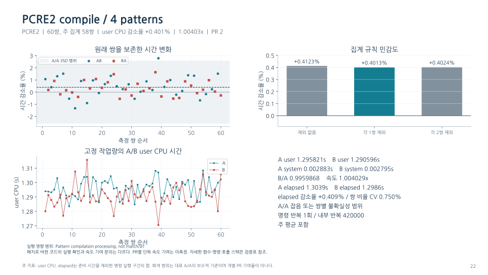
실행 영향 범위: Pattern compilation processing, not match/JIT
집계: 프로젝트 평균 포함 · 쌍 비율 CV 0.750% · B/A 0.9959868 · 배율 1.004029×
| 지표 | A | B |
|---|---|---|
| user CPU | 1.295821 s | 1.290596 s |
| system CPU | 0.002883 s | 0.002795 s |
| 명령 실행 elapsed | 1.303900 s | 1.298600 s |
| 각 꼬리에서 제외한 쌍 수 | user CPU 시간 감소율 |
|---|---|
| 0 | +0.4123% |
| 1 | +0.4013% |
| 2 | +0.4024% |
변경 함수에 관련된 PR
- 최진범 · 포크 #2 · [InstCombine] Let foldSelectBitTest use known bits for the single-bit mask
작성자 이름은 최종보고서로 대조한 PR에 표시했습니다. 관련 PR 목록은 단독 속도 기여율을 뜻하지 않습니다.
| 관련 PR | 함수 / 심벌 | 실행된 변경 명령 또는 확인 내용 |
|---|---|---|
| 2 | compile_class_binary_tight | Bit-test/select folding in the exact upstream compile patterns |
검증 방식(원문): Reused single-PR IR/native ablation and single-step evidence
검증 근거의 원래 파일 식별자
replacements2/selection.json
위 목록은 원래 검증표의 상대 경로입니다. 해당 경로를 사이트의 다운로드 링크로 표시하지 않았습니다. 공개한 쌍별·관측별 수치는 아래 자료 범위에서 받을 수 있습니다.
AOM
Foreman QCIF AV1 48 frames, cpu-used 4
원시 쌍 재검토 · 2026-10-18
시간 감소 49/60쌍 · 시간 증가 11쌍 · 동일 0쌍. 실행 순서·전후반·꼬리 제외 수와 참고 구간에서 평균 방향이 유지됐습니다.
최진범 포크 #2
정지현 #215073encode_mv_component · 공동 영향
순서별 집계·집계 민감도·재표집 구간
- 원보고 감소율 · 각 꼬리 1쌍 제외
- +0.341%
- 전체 쌍 평균 · 제외 없음
- +0.347%
- AB / BA 평균
- +0.444% / +0.249%
- 전반 / 후반 평균
- +0.350% / +0.343%
- 양 끝 0 / 1 / 2쌍 제외
- +0.347% / +0.341% / +0.333%
- 연속 시간 구간별 평균
- +0.240% / +0.313% / +0.498% / +0.195% / +0.381% / +0.453%
- 재표집 참고 범위
- +0.242% ~ +0.455%
- 블록 길이별 95% 구간
- 2쌍: +0.242% ~ +0.455% · 4쌍: +0.244% ~ +0.446% · 6쌍: +0.247% ~ +0.454% · 10쌍: +0.260% ~ +0.445%
- elapsed 전체 쌍 평균 감소율 · 보조 지표
- +0.271%
모든 60쌍의 수치 보기 · 제외 없음
| 쌍 | 순서 | A user (초) | B user (초) | 감소율 | 원보고 주 집계 |
|---|---|---|---|---|---|
| 1 | AB | 1.908197 | 1.890543 | +0.925% | 포함 |
| 2 | BA | 1.901400 | 1.906220 | −0.253% | 포함 |
| 3 | AB | 1.907333 | 1.887668 | +1.031% | 포함 |
| 4 | BA | 1.908719 | 1.893173 | +0.814% | 포함 |
| 5 | AB | 1.904881 | 1.906635 | −0.092% | 포함 |
| 6 | BA | 1.900194 | 1.899974 | +0.012% | 포함 |
| 7 | AB | 1.893242 | 1.896196 | −0.156% | 포함 |
| 8 | BA | 1.893329 | 1.900893 | −0.400% | 꼬리 제외 |
| 9 | AB | 1.901623 | 1.896889 | +0.249% | 포함 |
| 10 | BA | 1.901417 | 1.896362 | +0.266% | 포함 |
| 11 | AB | 1.903594 | 1.899071 | +0.238% | 포함 |
| 12 | BA | 1.906854 | 1.895597 | +0.590% | 포함 |
| 13 | AB | 1.895666 | 1.894379 | +0.068% | 포함 |
| 14 | BA | 1.907504 | 1.895935 | +0.606% | 포함 |
| 15 | AB | 1.909260 | 1.892399 | +0.883% | 포함 |
| 16 | BA | 1.895560 | 1.899129 | −0.188% | 포함 |
| 17 | AB | 1.896447 | 1.895848 | +0.032% | 포함 |
| 18 | BA | 1.899827 | 1.899449 | +0.020% | 포함 |
| 19 | AB | 1.910203 | 1.895484 | +0.771% | 포함 |
| 20 | BA | 1.903571 | 1.901405 | +0.114% | 포함 |
| 21 | AB | 1.897865 | 1.882176 | +0.827% | 포함 |
| 22 | BA | 1.888313 | 1.891780 | −0.184% | 포함 |
| 23 | AB | 1.892692 | 1.875722 | +0.897% | 포함 |
| 24 | BA | 1.887486 | 1.876224 | +0.597% | 포함 |
| 25 | AB | 1.892949 | 1.884384 | +0.452% | 포함 |
| 26 | BA | 1.891930 | 1.888169 | +0.199% | 포함 |
| 27 | AB | 1.898942 | 1.871974 | +1.420% | 꼬리 제외 |
| 28 | BA | 1.881248 | 1.880260 | +0.053% | 포함 |
| 29 | AB | 1.896797 | 1.889050 | +0.408% | 포함 |
| 30 | BA | 1.887714 | 1.881808 | +0.313% | 포함 |
| 31 | AB | 1.887411 | 1.884983 | +0.129% | 포함 |
| 32 | BA | 1.881978 | 1.885828 | −0.205% | 포함 |
| 33 | AB | 1.894240 | 1.883400 | +0.572% | 포함 |
| 34 | BA | 1.886916 | 1.886577 | +0.018% | 포함 |
| 35 | AB | 1.897794 | 1.888486 | +0.490% | 포함 |
| 36 | BA | 1.884484 | 1.883709 | +0.041% | 포함 |
| 37 | AB | 1.873354 | 1.876073 | −0.145% | 포함 |
| 38 | BA | 1.898730 | 1.887013 | +0.617% | 포함 |
| 39 | AB | 1.883237 | 1.878077 | +0.274% | 포함 |
| 40 | BA | 1.888168 | 1.885100 | +0.162% | 포함 |
| 41 | AB | 1.883263 | 1.885988 | −0.145% | 포함 |
| 42 | BA | 1.886551 | 1.877921 | +0.457% | 포함 |
| 43 | AB | 1.890032 | 1.879922 | +0.535% | 포함 |
| 44 | BA | 1.883308 | 1.884453 | −0.061% | 포함 |
| 45 | AB | 1.879228 | 1.875164 | +0.216% | 포함 |
| 46 | BA | 1.900122 | 1.890359 | +0.514% | 포함 |
| 47 | AB | 1.888049 | 1.881873 | +0.327% | 포함 |
| 48 | BA | 1.892345 | 1.878253 | +0.745% | 포함 |
| 49 | AB | 1.882401 | 1.866145 | +0.864% | 포함 |
| 50 | BA | 1.889965 | 1.883237 | +0.356% | 포함 |
| 51 | AB | 1.880591 | 1.880584 | +0.000% | 포함 |
| 52 | BA | 1.889941 | 1.888362 | +0.084% | 포함 |
| 53 | AB | 1.887060 | 1.888716 | −0.088% | 포함 |
| 54 | BA | 1.887365 | 1.880292 | +0.375% | 포함 |
| 55 | AB | 1.896001 | 1.880623 | +0.811% | 포함 |
| 56 | BA | 1.892828 | 1.876118 | +0.883% | 포함 |
| 57 | AB | 1.892974 | 1.889655 | +0.175% | 포함 |
| 58 | BA | 1.896572 | 1.895085 | +0.078% | 포함 |
| 59 | AB | 1.903668 | 1.877744 | +1.362% | 포함 |
| 60 | BA | 1.891571 | 1.875536 | +0.848% | 포함 |
원보고 차트·측정 조건·실행된 변경·검증 기록
2026-10-16 당시 공통 기준의 판정: A/A 잡음 또는 쌍별 불확실성 범위
원래 판정과 차트 표기는 기록으로 보존했습니다. 위의 평균 방향은 2026-10-18 원시 쌍 재검토 결과입니다.
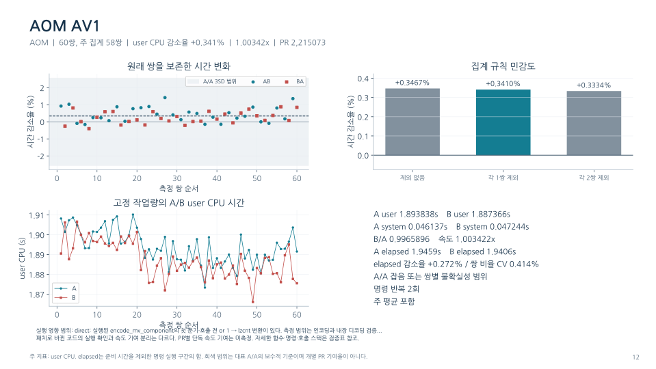
실행 영향 범위: direct: 실행된 encode_mv_component의 첫 분기·호출 전 or 1 → lzcnt 변환이 있다. 측정 범위는 인코딩과 내장 디코딩 검증이다.
집계: 프로젝트 평균 포함 · 쌍 비율 CV 0.414% · B/A 0.9965896 · 배율 1.003422×
| 지표 | A | B |
|---|---|---|
| user CPU | 1.893838 s | 1.887366 s |
| system CPU | 0.046137 s | 0.047244 s |
| 명령 실행 elapsed | 1.945900 s | 1.940600 s |
| 각 꼬리에서 제외한 쌍 수 | user CPU 시간 감소율 |
|---|---|
| 0 | +0.3467% |
| 1 | +0.3410% |
| 2 | +0.3334% |
변경 함수에 관련된 PR
- 최진범 · 포크 #2 · [InstCombine] Let foldSelectBitTest use known bits for the single-bit mask
- 정지현 · PR #215073 · [Instcombine] Fold a zero-select hexadecimal digit count into ctlz(x | 1)
작성자 이름은 최종보고서로 대조한 PR에 표시했습니다. 관련 PR 목록은 단독 속도 기여율을 뜻하지 않습니다.
| 관련 PR | 함수 / 심벌 | 실행된 변경 명령 또는 확인 내용 |
|---|---|---|
| 2,215073 | encode_mv_component | 실행된 encode_mv_component의 첫 분기·호출 전 or 1 → lzcnt 변환이 있다. 측정 범위는 인코딩과 내장 디코딩 검증이다. |
검증 방식(원문): Reused exact-binary execution audit; PR list relates to changed functions; joint influence stated where applicable
검증 근거의 원래 파일 식별자
expansion20/attribution/evidence/native-AOM.jsonexpansion20/attribution/evidence/audit-executed-entry-code.json
위 목록은 원래 검증표의 상대 경로입니다. 해당 경로를 사이트의 다운로드 링크로 표시하지 않았습니다. 공개한 쌍별·관측별 수치는 아래 자료 범위에서 받을 수 있습니다.
Node.js
TLS context creation from the official agent1 PKCS12 fixture
원시 쌍 재검토 · 2026-10-18
시간 감소 38/60쌍 · 시간 증가 22쌍 · 동일 0쌍. 실행 순서·전후반·꼬리 제외 수와 참고 구간에서 평균 방향이 유지됐습니다.
이하동 #214933OpenSSL의 kdf_pkcs12_derive · 관련 PR 1개
순서별 집계·집계 민감도·재표집 구간
- 원보고 감소율 · 각 꼬리 1쌍 제외
- +0.288%
- 전체 쌍 평균 · 제외 없음
- +0.287%
- AB / BA 평균
- +0.211% / +0.363%
- 전반 / 후반 평균
- +0.168% / +0.406%
- 양 끝 0 / 1 / 2쌍 제외
- +0.287% / +0.288% / +0.294%
- 연속 시간 구간별 평균
- +0.172% / −0.014% / +0.345% / +0.300% / +0.616% / +0.302%
- 재표집 참고 범위
- +0.094% ~ +0.474%
- 블록 길이별 95% 구간
- 2쌍: +0.125% ~ +0.445% · 4쌍: +0.115% ~ +0.450% · 6쌍: +0.117% ~ +0.456% · 10쌍: +0.094% ~ +0.474%
- elapsed 전체 쌍 평균 감소율 · 보조 지표
- +0.398%
모든 60쌍의 수치 보기 · 제외 없음
| 쌍 | 순서 | A user (초) | B user (초) | 감소율 | 원보고 주 집계 |
|---|---|---|---|---|---|
| 1 | AB | 1.313784 | 1.319995 | −0.473% | 포함 |
| 2 | BA | 1.315129 | 1.300792 | +1.090% | 포함 |
| 3 | AB | 1.319224 | 1.309442 | +0.741% | 포함 |
| 4 | BA | 1.315799 | 1.306448 | +0.711% | 포함 |
| 5 | AB | 1.308459 | 1.312080 | −0.277% | 포함 |
| 6 | BA | 1.307865 | 1.315346 | −0.572% | 포함 |
| 7 | AB | 1.304692 | 1.314808 | −0.775% | 포함 |
| 8 | BA | 1.308653 | 1.306618 | +0.156% | 포함 |
| 9 | AB | 1.316368 | 1.314937 | +0.109% | 포함 |
| 10 | BA | 1.320284 | 1.306931 | +1.011% | 포함 |
| 11 | AB | 1.312889 | 1.312721 | +0.013% | 포함 |
| 12 | BA | 1.304259 | 1.314251 | −0.766% | 포함 |
| 13 | AB | 1.311118 | 1.317191 | −0.463% | 포함 |
| 14 | BA | 1.311378 | 1.324193 | −0.977% | 포함 |
| 15 | AB | 1.312475 | 1.317265 | −0.365% | 포함 |
| 16 | BA | 1.317009 | 1.307474 | +0.724% | 포함 |
| 17 | AB | 1.313890 | 1.314729 | −0.064% | 포함 |
| 18 | BA | 1.317369 | 1.302518 | +1.127% | 포함 |
| 19 | AB | 1.314361 | 1.307464 | +0.525% | 포함 |
| 20 | BA | 1.310640 | 1.309187 | +0.111% | 포함 |
| 21 | AB | 1.309259 | 1.302081 | +0.548% | 포함 |
| 22 | BA | 1.321469 | 1.313401 | +0.611% | 포함 |
| 23 | AB | 1.316541 | 1.311098 | +0.413% | 포함 |
| 24 | BA | 1.316594 | 1.308480 | +0.616% | 포함 |
| 25 | AB | 1.306441 | 1.311936 | −0.421% | 포함 |
| 26 | BA | 1.306586 | 1.307220 | −0.049% | 포함 |
| 27 | AB | 1.311791 | 1.306461 | +0.406% | 포함 |
| 28 | BA | 1.315982 | 1.307208 | +0.667% | 포함 |
| 29 | AB | 1.313479 | 1.314948 | −0.112% | 포함 |
| 30 | BA | 1.309992 | 1.299975 | +0.765% | 포함 |
| 31 | AB | 1.313547 | 1.317266 | −0.283% | 포함 |
| 32 | BA | 1.303210 | 1.309690 | −0.497% | 포함 |
| 33 | AB | 1.311554 | 1.315559 | −0.305% | 포함 |
| 34 | BA | 1.317680 | 1.310937 | +0.512% | 포함 |
| 35 | AB | 1.313878 | 1.301765 | +0.922% | 포함 |
| 36 | BA | 1.306478 | 1.305493 | +0.075% | 포함 |
| 37 | AB | 1.311741 | 1.301513 | +0.780% | 포함 |
| 38 | BA | 1.312598 | 1.300483 | +0.923% | 포함 |
| 39 | AB | 1.313079 | 1.301269 | +0.899% | 포함 |
| 40 | BA | 1.315040 | 1.315373 | −0.025% | 포함 |
| 41 | AB | 1.310717 | 1.306244 | +0.341% | 포함 |
| 42 | BA | 1.313206 | 1.301612 | +0.883% | 포함 |
| 43 | AB | 1.307602 | 1.308331 | −0.056% | 포함 |
| 44 | BA | 1.319671 | 1.312841 | +0.518% | 포함 |
| 45 | AB | 1.320002 | 1.297694 | +1.690% | 꼬리 제외 |
| 46 | BA | 1.315791 | 1.302276 | +1.027% | 포함 |
| 47 | AB | 1.314018 | 1.314234 | −0.016% | 포함 |
| 48 | BA | 1.315498 | 1.311394 | +0.312% | 포함 |
| 49 | AB | 1.316673 | 1.311621 | +0.384% | 포함 |
| 50 | BA | 1.319009 | 1.304770 | +1.080% | 포함 |
| 51 | AB | 1.313787 | 1.305382 | +0.640% | 포함 |
| 52 | BA | 1.323221 | 1.313820 | +0.710% | 포함 |
| 53 | AB | 1.317095 | 1.302026 | +1.144% | 포함 |
| 54 | BA | 1.312634 | 1.314038 | −0.107% | 포함 |
| 55 | AB | 1.314319 | 1.316234 | −0.146% | 포함 |
| 56 | BA | 1.319544 | 1.305976 | +1.028% | 포함 |
| 57 | AB | 1.305090 | 1.314015 | −0.684% | 포함 |
| 58 | BA | 1.314693 | 1.309141 | +0.422% | 포함 |
| 59 | AB | 1.322371 | 1.306226 | +1.221% | 포함 |
| 60 | BA | 1.309613 | 1.325452 | −1.209% | 꼬리 제외 |
원보고 차트·측정 조건·실행된 변경·검증 기록
2026-10-16 당시 공통 기준의 판정: A/A 잡음 또는 쌍별 불확실성 범위
원래 판정과 차트 표기는 기록으로 보존했습니다. 위의 평균 방향은 2026-10-18 원시 쌍 재검토 결과입니다.
실행 영향 범위: TLS context cryptographic processing
집계: 프로젝트 평균 포함 · 쌍 비율 CV 0.631% · B/A 0.9971152 · 배율 1.002893×
| 지표 | A | B |
|---|---|---|
| user CPU | 1.313406 s | 1.309599 s |
| system CPU | 0.040454 s | 0.038912 s |
| 명령 실행 elapsed | 1.356000 s | 1.350500 s |
| 각 꼬리에서 제외한 쌍 수 | user CPU 시간 감소율 |
|---|---|
| 0 | +0.2869% |
| 1 | +0.2885% |
| 2 | +0.2944% |
변경 함수에 관련된 PR
- 이하동 · PR #214933 · [InstCombine] Fold comparisons of urem with dividend
작성자 이름은 최종보고서로 대조한 PR에 표시했습니다. 관련 PR 목록은 단독 속도 기여율을 뜻하지 않습니다.
| 관련 PR | 함수 / 심벌 | 실행된 변경 명령 또는 확인 내용 |
|---|---|---|
| 214933 | kdf_pkcs12_derive | mov %rdx,-0x80(%rbp) |
| 214933 | kdf_pkcs12_derive | mov %ecx,-0x78(%rbp) |
| 214933 | kdf_pkcs12_derive | mov %rbx,-0xc0(%rbp) |
| 214933 | kdf_pkcs12_derive | mov %r13,-0x90(%rbp) |
| 214933 | kdf_pkcs12_derive | mov %r15,-0xb8(%rbp) |
| 214933 | kdf_pkcs12_derive | mov %esi,-0x9c(%rbp) |
| 214933 | kdf_pkcs12_derive | mov %rdi,-0x60(%rbp) |
| 214933 | kdf_pkcs12_derive | mov %rcx,-0x68(%rbp) |
| 214933 | kdf_pkcs12_derive | mov %rax,-0x88(%rbp) |
| 214933 | kdf_pkcs12_derive | mov -0x78(%rbp),%esi |
| 214933 | kdf_pkcs12_derive | mov -0x50(%rbp),%rax |
| 214933 | kdf_pkcs12_derive | mov -0x68(%rbp),%r10 |
| 214933 | kdf_pkcs12_derive | cmp %rax,-0x60(%rbp) |
| 214933 | kdf_pkcs12_derive | mov -0x90(%rbp),%rsi |
| 214933 | kdf_pkcs12_derive | mov -0xc0(%rbp),%rax |
| 214933 | kdf_pkcs12_derive | mov %rcx,-0xa8(%rbp) |
| 214933 | kdf_pkcs12_derive | mov -0x88(%rbp),%rcx |
| 214933 | kdf_pkcs12_derive | mov -0x88(%rbp),%rsi |
| 214933 | kdf_pkcs12_derive | cmpq $0x2,-0xc0(%rbp) |
| 214933 | kdf_pkcs12_derive | mov -0xb8(%rbp),%r14 |
| 214933 | kdf_pkcs12_derive | mov %r14,-0xb8(%rbp) |
| 214933 | kdf_pkcs12_derive | mov -0x88(%rbp),%rdi |
| 214933 | kdf_pkcs12_derive | mov -0x9c(%rbp),%eax |
| 214933 | kdf_pkcs12_derive | lea -0x1c(%rcx),%rax |
| 214933 | kdf_pkcs12_derive | lea -0x1b(%rcx),%rax |
| 214933 | kdf_pkcs12_derive | lea -0x1a(%rcx),%rax |
| 214933 | kdf_pkcs12_derive | lea -0x19(%rcx),%rax |
| 214933 | kdf_pkcs12_derive | lea -0x18(%rcx),%rax |
| 214933 | kdf_pkcs12_derive | lea -0x17(%rcx),%rax |
| 214933 | kdf_pkcs12_derive | lea -0x16(%rcx),%rax |
| 214933 | kdf_pkcs12_derive | lea -0x15(%rcx),%rax |
| 214933 | kdf_pkcs12_derive | lea -0x14(%rcx),%rax |
| 214933 | kdf_pkcs12_derive | lea -0x13(%rcx),%rax |
| 214933 | kdf_pkcs12_derive | lea -0x12(%rcx),%rax |
| 214933 | kdf_pkcs12_derive | lea -0x11(%rcx),%rax |
| 214933 | kdf_pkcs12_derive | lea -0x10(%rcx),%rax |
| 214933 | kdf_pkcs12_derive | lea -0xf(%rcx),%rax |
| 214933 | kdf_pkcs12_derive | lea -0xe(%rcx),%rax |
| 214933 | kdf_pkcs12_derive | lea -0xd(%rcx),%rax |
| 214933 | kdf_pkcs12_derive | lea -0xc(%rcx),%rax |
| 214933 | kdf_pkcs12_derive | lea -0xb(%rcx),%rax |
| 214933 | kdf_pkcs12_derive | lea -0xa(%rcx),%rax |
| 214933 | kdf_pkcs12_derive | lea -0x9(%rcx),%rax |
| 214933 | kdf_pkcs12_derive | lea -0x8(%rcx),%rax |
| 214933 | kdf_pkcs12_derive | mov %rax,%rdx |
| 214933 | kdf_pkcs12_derive | vpinsrb $0x1,(%r15,%rax,1),%xmm0,%xmm0 |
| 214933 | kdf_pkcs12_derive | vpinsrb $0x2,(%r15,%rax,1),%xmm0,%xmm0 |
| 214933 | kdf_pkcs12_derive | vpinsrb $0x3,(%r15,%rax,1),%xmm0,%xmm0 |
| 214933 | kdf_pkcs12_derive | vpinsrb $0x4,(%r15,%rax,1),%xmm0,%xmm0 |
| 214933 | kdf_pkcs12_derive | vpinsrb $0x5,(%r15,%rax,1),%xmm0,%xmm0 |
| 214933 | kdf_pkcs12_derive | vpinsrb $0x6,(%r15,%rax,1),%xmm0,%xmm0 |
| 214933 | kdf_pkcs12_derive | vpinsrb $0x7,(%r15,%rax,1),%xmm0,%xmm0 |
| 214933 | kdf_pkcs12_derive | vpinsrb $0x8,(%r15,%rax,1),%xmm0,%xmm0 |
| 214933 | kdf_pkcs12_derive | vpinsrb $0x9,(%r15,%rax,1),%xmm0,%xmm0 |
| 214933 | kdf_pkcs12_derive | vpinsrb $0xa,(%r15,%rax,1),%xmm0,%xmm0 |
| 214933 | kdf_pkcs12_derive | vpinsrb $0xb,(%r15,%rax,1),%xmm0,%xmm0 |
| 214933 | kdf_pkcs12_derive | vpinsrb $0xc,(%r15,%rax,1),%xmm0,%xmm0 |
| 214933 | kdf_pkcs12_derive | vpinsrb $0xd,(%r15,%rax,1),%xmm0,%xmm0 |
| 214933 | kdf_pkcs12_derive | vpinsrb $0xe,(%r15,%rax,1),%xmm0,%xmm0 |
| 214933 | kdf_pkcs12_derive | vpinsrb $0xf,(%r15,%rax,1),%xmm0,%xmm0 |
| 214933 | kdf_pkcs12_derive | mov -0xf8(%rbp),%rax |
| 214933 | kdf_pkcs12_derive | vpinsrb $0x2,(%r15,%rax,1),%xmm1,%xmm1 |
| 214933 | kdf_pkcs12_derive | vpinsrb $0x3,(%r15,%rax,1),%xmm1,%xmm1 |
| 214933 | kdf_pkcs12_derive | vpinsrb $0x4,(%r15,%rax,1),%xmm1,%xmm1 |
| 214933 | kdf_pkcs12_derive | vpinsrb $0x5,(%r15,%rax,1),%xmm1,%xmm1 |
| 214933 | kdf_pkcs12_derive | vpinsrb $0x6,(%r15,%rax,1),%xmm1,%xmm1 |
| 214933 | kdf_pkcs12_derive | cmp %r13d,-0xa8(%rbp) |
| 214933 | kdf_pkcs12_derive | cmpq $0x0,-0x98(%rbp) |
| 214933 | kdf_pkcs12_derive | cmp -0x98(%rbp),%rcx |
| 214933 | kdf_pkcs12_derive | add %rbx,-0xb0(%rbp) |
검증 방식(원문): Single-PR native ablation and actual changed instruction step
검증 근거의 원래 파일 식별자
candidate-review-2x20/execution/correctness/native-probes/node-pfx.jsoncandidate-review-2x20/execution/correctness/node/correctness.jsoncandidate-review-2x20/execution/attribution/node-kdf/result.json
위 목록은 원래 검증표의 상대 경로입니다. 해당 경로를 사이트의 다운로드 링크로 표시하지 않았습니다. 공개한 쌍별·관측별 수치는 아래 자료 범위에서 받을 수 있습니다.
Brotli
q11-sqlite-source
원시 쌍 재검토 · 2026-10-18
시간 감소 47/60쌍 · 시간 증가 13쌍 · 동일 0쌍. 실행 순서·전후반·꼬리 제외 수와 참고 구간에서 평균 방향이 유지됐습니다.
이하동 #216072
정지현 #215073
최진범 포크 #2EncodeContextMap의 파생 코드 생성 변화 · 공동 영향 · 파생 코드 변화
순서별 집계·집계 민감도·재표집 구간
- 원보고 감소율 · 각 꼬리 1쌍 제외
- +0.269%
- 전체 쌍 평균 · 제외 없음
- +0.269%
- AB / BA 평균
- +0.317% / +0.222%
- 전반 / 후반 평균
- +0.406% / +0.132%
- 양 끝 0 / 1 / 2쌍 제외
- +0.269% / +0.269% / +0.270%
- 연속 시간 구간별 평균
- +0.506% / +0.422% / +0.291% / +0.185% / +0.250% / −0.039%
- 재표집 참고 범위
- +0.162% ~ +0.369%
- 블록 길이별 95% 구간
- 2쌍: +0.185% ~ +0.352% · 4쌍: +0.172% ~ +0.363% · 6쌍: +0.162% ~ +0.366% · 10쌍: +0.166% ~ +0.369%
- elapsed 전체 쌍 평균 감소율 · 보조 지표
- +0.260%
모든 60쌍의 수치 보기 · 제외 없음
| 쌍 | 순서 | A user (초) | B user (초) | 감소율 | 원보고 주 집계 |
|---|---|---|---|---|---|
| 1 | AB | 18.779692 | 18.664124 | +0.615% | 포함 |
| 2 | BA | 18.804953 | 18.659897 | +0.771% | 포함 |
| 3 | AB | 18.866557 | 18.704308 | +0.860% | 포함 |
| 4 | BA | 18.777948 | 18.716812 | +0.326% | 포함 |
| 5 | AB | 18.784317 | 18.693320 | +0.484% | 포함 |
| 6 | BA | 18.753552 | 18.728017 | +0.136% | 포함 |
| 7 | AB | 18.763315 | 18.715019 | +0.257% | 포함 |
| 8 | BA | 18.798517 | 18.701650 | +0.515% | 포함 |
| 9 | AB | 18.761459 | 18.662445 | +0.528% | 포함 |
| 10 | BA | 18.821009 | 18.714723 | +0.565% | 포함 |
| 11 | AB | 18.806816 | 18.681381 | +0.667% | 포함 |
| 12 | BA | 18.704282 | 18.739815 | −0.190% | 포함 |
| 13 | AB | 18.786254 | 18.722370 | +0.340% | 포함 |
| 14 | BA | 18.750065 | 18.642597 | +0.573% | 포함 |
| 15 | AB | 18.796495 | 18.655666 | +0.749% | 포함 |
| 16 | BA | 18.811118 | 18.734722 | +0.406% | 포함 |
| 17 | AB | 18.733689 | 18.694880 | +0.207% | 포함 |
| 18 | BA | 18.752183 | 18.748023 | +0.022% | 포함 |
| 19 | AB | 18.791728 | 18.661062 | +0.695% | 포함 |
| 20 | BA | 18.805723 | 18.664331 | +0.752% | 포함 |
| 21 | AB | 18.346513 | 18.163476 | +0.998% | 꼬리 제외 |
| 22 | BA | 18.284501 | 18.344036 | −0.326% | 포함 |
| 23 | AB | 18.284374 | 18.273919 | +0.057% | 포함 |
| 24 | BA | 18.429572 | 18.376439 | +0.288% | 포함 |
| 25 | AB | 18.314420 | 18.297470 | +0.093% | 포함 |
| 26 | BA | 18.307938 | 18.252744 | +0.301% | 포함 |
| 27 | AB | 18.269855 | 18.291082 | −0.116% | 포함 |
| 28 | BA | 18.351907 | 18.214216 | +0.750% | 포함 |
| 29 | AB | 18.326328 | 18.199756 | +0.691% | 포함 |
| 30 | BA | 18.312711 | 18.280285 | +0.177% | 포함 |
| 31 | AB | 18.288331 | 18.237129 | +0.280% | 포함 |
| 32 | BA | 18.300252 | 18.366481 | −0.362% | 포함 |
| 33 | AB | 18.370819 | 18.265715 | +0.572% | 포함 |
| 34 | BA | 18.230081 | 18.294260 | −0.352% | 포함 |
| 35 | AB | 18.386053 | 18.293474 | +0.504% | 포함 |
| 36 | BA | 18.287457 | 18.297039 | −0.052% | 포함 |
| 37 | AB | 18.365982 | 18.278165 | +0.478% | 포함 |
| 38 | BA | 18.333478 | 18.265575 | +0.370% | 포함 |
| 39 | AB | 18.379067 | 18.392838 | −0.075% | 포함 |
| 40 | BA | 18.328671 | 18.240141 | +0.483% | 포함 |
| 41 | AB | 18.337627 | 18.337070 | +0.003% | 포함 |
| 42 | BA | 18.323406 | 18.332562 | −0.050% | 포함 |
| 43 | AB | 18.301635 | 18.222016 | +0.435% | 포함 |
| 44 | BA | 18.340647 | 18.320626 | +0.109% | 포함 |
| 45 | AB | 18.280613 | 18.279561 | +0.006% | 포함 |
| 46 | BA | 18.286148 | 18.243822 | +0.231% | 포함 |
| 47 | AB | 18.276584 | 18.251307 | +0.138% | 포함 |
| 48 | BA | 18.340217 | 18.202976 | +0.748% | 포함 |
| 49 | AB | 18.291345 | 18.244595 | +0.256% | 포함 |
| 50 | BA | 18.369739 | 18.254417 | +0.628% | 포함 |
| 51 | AB | 18.373732 | 18.358257 | +0.084% | 포함 |
| 52 | BA | 18.340946 | 18.355727 | −0.081% | 포함 |
| 53 | AB | 18.356771 | 18.310905 | +0.250% | 포함 |
| 54 | BA | 18.267462 | 18.333405 | −0.361% | 포함 |
| 55 | AB | 18.245509 | 18.324546 | −0.433% | 꼬리 제외 |
| 56 | BA | 18.328758 | 18.333213 | −0.024% | 포함 |
| 57 | AB | 18.296368 | 18.330479 | −0.186% | 포함 |
| 58 | BA | 18.320942 | 18.309198 | +0.064% | 포함 |
| 59 | AB | 18.273333 | 18.262509 | +0.059% | 포함 |
| 60 | BA | 18.347182 | 18.303028 | +0.241% | 포함 |
원보고 차트·측정 조건·실행된 변경·검증 기록
2026-10-16 당시 공통 기준의 판정: A/A 잡음 또는 쌍별 불확실성 범위
원래 판정과 차트 표기는 기록으로 보존했습니다. 위의 평균 방향은 2026-10-18 원시 쌍 재검토 결과입니다.
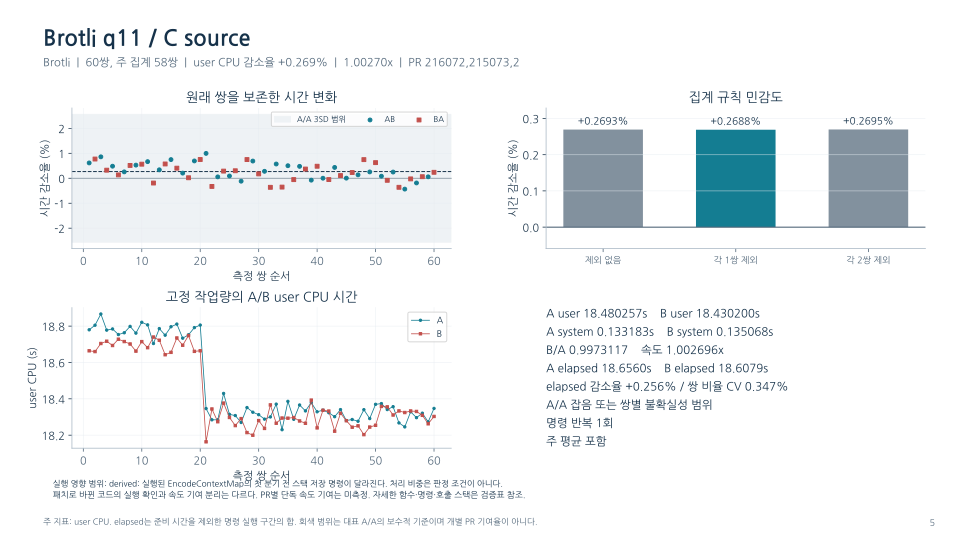
실행 영향 범위: derived: 실행된 EncodeContextMap의 첫 분기 전 스택 저장 명령이 달라진다. 처리 비중은 판정 조건이 아니다.
집계: 프로젝트 평균 포함 · 쌍 비율 CV 0.347% · B/A 0.9973117 · 배율 1.002696×
| 지표 | A | B |
|---|---|---|
| user CPU | 18.480257 s | 18.430200 s |
| system CPU | 0.133183 s | 0.135068 s |
| 명령 실행 elapsed | 18.656000 s | 18.607900 s |
| 각 꼬리에서 제외한 쌍 수 | user CPU 시간 감소율 |
|---|---|
| 0 | +0.2693% |
| 1 | +0.2688% |
| 2 | +0.2695% |
변경 함수에 관련된 PR
- 이하동 · PR #216072 · [InstSimplify] Simplify nonzero comparisons involving X urem Y via X u>= Y
- 정지현 · PR #215073 · [Instcombine] Fold a zero-select hexadecimal digit count into ctlz(x | 1)
- 최진범 · 포크 #2 · [InstCombine] Let foldSelectBitTest use known bits for the single-bit mask
작성자 이름은 최종보고서로 대조한 PR에 표시했습니다. 관련 PR 목록은 단독 속도 기여율을 뜻하지 않습니다.
| 관련 PR | 함수 / 심벌 | 실행된 변경 명령 또는 확인 내용 |
|---|---|---|
| 216072,215073,2 | EncodeContextMap | 실행된 EncodeContextMap의 첫 분기 전 스택 저장 명령이 달라진다. 처리 비중은 판정 조건이 아니다. |
검증 방식(원문): Reused exact-binary execution audit; PR list relates to changed functions; joint influence stated where applicable
검증 근거의 원래 파일 식별자
expansion20/attribution/evidence/native-Brotli.jsonexpansion20/attribution/evidence/audit-executed-entry-code.json
위 목록은 원래 검증표의 상대 경로입니다. 해당 경로를 사이트의 다운로드 링크로 표시하지 않았습니다. 공개한 쌍별·관측별 수치는 아래 자료 범위에서 받을 수 있습니다.
OpenSSL
Official CRL verification at the upstream fixed time
원시 쌍 재검토 · 2026-10-18
시간 감소 34/60쌍 · 시간 증가 26쌍 · 동일 0쌍. AB와 BA의 평균 방향이 다릅니다. 전반과 후반의 평균 방향이 다릅니다. 재표집 참고 구간에 0이 포함됩니다.
순서별 집계·집계 민감도·재표집 구간
- 원보고 감소율 · 각 꼬리 1쌍 제외
- +0.259%
- 전체 쌍 평균 · 제외 없음
- +0.261%
- AB / BA 평균
- +0.664% / −0.142%
- 전반 / 후반 평균
- −0.384% / +0.906%
- 양 끝 0 / 1 / 2쌍 제외
- +0.261% / +0.259% / +0.257%
- 연속 시간 구간별 평균
- −0.981% / +1.359% / −1.531% / +1.136% / +0.021% / +1.562%
- 재표집 참고 범위
- −0.474% ~ +0.955%
- 블록 길이별 95% 구간
- 2쌍: −0.417% ~ +0.936% · 4쌍: −0.445% ~ +0.939% · 6쌍: −0.474% ~ +0.940% · 10쌍: −0.456% ~ +0.955%
- elapsed 전체 쌍 평균 감소율 · 보조 지표
- +0.183%
모든 60쌍의 수치 보기 · 제외 없음
| 쌍 | 순서 | A user (초) | B user (초) | 감소율 | 원보고 주 집계 |
|---|---|---|---|---|---|
| 1 | AB | 1.247900 | 1.221940 | +2.080% | 포함 |
| 2 | BA | 1.274503 | 1.247694 | +2.103% | 포함 |
| 3 | AB | 1.182993 | 1.253739 | −5.980% | 꼬리 제외 |
| 4 | BA | 1.200136 | 1.224746 | −2.051% | 포함 |
| 5 | AB | 1.237060 | 1.210195 | +2.172% | 포함 |
| 6 | BA | 1.200461 | 1.257254 | −4.731% | 포함 |
| 7 | AB | 1.229437 | 1.244644 | −1.237% | 포함 |
| 8 | BA | 1.228611 | 1.258879 | −2.464% | 포함 |
| 9 | AB | 1.241085 | 1.230599 | +0.845% | 포함 |
| 10 | BA | 1.245770 | 1.252565 | −0.545% | 포함 |
| 11 | AB | 1.258577 | 1.245691 | +1.024% | 포함 |
| 12 | BA | 1.225423 | 1.208680 | +1.366% | 포함 |
| 13 | AB | 1.280640 | 1.214096 | +5.196% | 포함 |
| 14 | BA | 1.222363 | 1.241002 | −1.525% | 포함 |
| 15 | AB | 1.267636 | 1.255239 | +0.978% | 포함 |
| 16 | BA | 1.254884 | 1.207999 | +3.736% | 포함 |
| 17 | AB | 1.244708 | 1.209623 | +2.819% | 포함 |
| 18 | BA | 1.217918 | 1.238520 | −1.692% | 포함 |
| 19 | AB | 1.247639 | 1.245888 | +0.140% | 포함 |
| 20 | BA | 1.240191 | 1.221063 | +1.542% | 포함 |
| 21 | AB | 1.222227 | 1.231592 | −0.766% | 포함 |
| 22 | BA | 1.207303 | 1.259009 | −4.283% | 포함 |
| 23 | AB | 1.273823 | 1.226805 | +3.691% | 포함 |
| 24 | BA | 1.214417 | 1.279893 | −5.392% | 포함 |
| 25 | AB | 1.208549 | 1.219523 | −0.908% | 포함 |
| 26 | BA | 1.218885 | 1.252487 | −2.757% | 포함 |
| 27 | AB | 1.241479 | 1.212282 | +2.352% | 포함 |
| 28 | BA | 1.203082 | 1.252837 | −4.136% | 포함 |
| 29 | AB | 1.250220 | 1.239180 | +0.883% | 포함 |
| 30 | BA | 1.190431 | 1.237948 | −3.992% | 포함 |
| 31 | AB | 1.225516 | 1.226274 | −0.062% | 포함 |
| 32 | BA | 1.273637 | 1.189156 | +6.633% | 꼬리 제외 |
| 33 | AB | 1.208911 | 1.236946 | −2.319% | 포함 |
| 34 | BA | 1.300167 | 1.256910 | +3.327% | 포함 |
| 35 | AB | 1.218094 | 1.269075 | −4.185% | 포함 |
| 36 | BA | 1.247035 | 1.240779 | +0.502% | 포함 |
| 37 | AB | 1.246831 | 1.198817 | +3.851% | 포함 |
| 38 | BA | 1.232731 | 1.239779 | −0.572% | 포함 |
| 39 | AB | 1.268131 | 1.238004 | +2.376% | 포함 |
| 40 | BA | 1.213185 | 1.191284 | +1.805% | 포함 |
| 41 | AB | 1.195116 | 1.229392 | −2.868% | 포함 |
| 42 | BA | 1.233718 | 1.261440 | −2.247% | 포함 |
| 43 | AB | 1.237623 | 1.224310 | +1.076% | 포함 |
| 44 | BA | 1.243502 | 1.267180 | −1.904% | 포함 |
| 45 | AB | 1.217838 | 1.256369 | −3.164% | 포함 |
| 46 | BA | 1.271770 | 1.195190 | +6.022% | 포함 |
| 47 | AB | 1.211316 | 1.216104 | −0.395% | 포함 |
| 48 | BA | 1.233354 | 1.232493 | +0.070% | 포함 |
| 49 | AB | 1.248733 | 1.208317 | +3.237% | 포함 |
| 50 | BA | 1.223239 | 1.218528 | +0.385% | 포함 |
| 51 | AB | 1.287346 | 1.236086 | +3.982% | 포함 |
| 52 | BA | 1.266213 | 1.237170 | +2.294% | 포함 |
| 53 | AB | 1.252115 | 1.242578 | +0.762% | 포함 |
| 54 | BA | 1.218921 | 1.250828 | −2.618% | 포함 |
| 55 | AB | 1.275858 | 1.214535 | +4.806% | 포함 |
| 56 | BA | 1.259762 | 1.226024 | +2.678% | 포함 |
| 57 | AB | 1.240367 | 1.266267 | −2.088% | 포함 |
| 58 | BA | 1.249895 | 1.216021 | +2.710% | 포함 |
| 59 | AB | 1.273919 | 1.253364 | +1.614% | 포함 |
| 60 | BA | 1.278711 | 1.259775 | +1.481% | 포함 |
원보고 차트·측정 조건·실행된 변경·검증 기록
2026-10-16 당시 공통 기준의 판정: A/A 잡음 또는 쌍별 불확실성 범위
원래 판정과 차트 표기는 기록으로 보존했습니다. 위의 평균 방향은 2026-10-18 원시 쌍 재검토 결과입니다.
실행 영향 범위: certificate verification and result formatting
집계: 프로젝트 평균 포함 · 쌍 비율 CV 2.927% · B/A 0.9974129 · 배율 1.002594×
| 지표 | A | B |
|---|---|---|
| user CPU | 1.239229 s | 1.235478 s |
| system CPU | 1.633693 s | 1.634579 s |
| 명령 실행 elapsed | 3.054500 s | 3.048800 s |
| 각 꼬리에서 제외한 쌍 수 | user CPU 시간 감소율 |
|---|---|
| 0 | +0.2610% |
| 1 | +0.2587% |
| 2 | +0.2567% |
변경 함수에 관련된 PR
- 최진범 · 포크 #2 · [InstCombine] Let foldSelectBitTest use known bits for the single-bit mask
- 정하람 · PR #223246 · [InstCombine] Fold strlen/wcslen over select/phi of constants
작성자 이름은 최종보고서로 대조한 PR에 표시했습니다. 관련 PR 목록은 단독 속도 기여율을 뜻하지 않습니다.
| 관련 PR | 함수 / 심벌 | 실행된 변경 명령 또는 확인 내용 |
|---|---|---|
| 223246 | fmtint | mov %rcx,0x18(%rsp) |
| 223246 | fmtint | mov %rsi,%r15 |
| 223246 | fmtint | xor %esi,%esi |
| 223246 | fmtint | movl $0x0,0xc(%rsp) |
| 223246 | fmtint | div %r9d |
| 223246 | fmtint | mov %r14d,0x24(%rsp) |
| 223246 | fmtint | mov %r14d,%edx |
| 223246 | fmtint | mov %r10d,%eax |
| 223246 | fmtint | mov %esi,%ebx |
| 223246 | fmtint | test $0x1,%cl |
| 223246 | fmtint | cmpb $0x0,0x24(%rsp) |
| 223246 | fmtint | mov 0x10(%rsp),%rdx |
| 223246 | fmtint | cmp $0x19,%rbx |
| 223246 | fmtint | test $0x2,%cl |
| 223246 | fmtint | mov %ecx,%edx |
| 223246 | fmtint | sete %r14b |
| 223246 | fmtint | mov %edx,0xc(%rsp) |
| 2 | get_crl_sk | mov %rdi,%r15 |
| 2 | get_crl_sk | mov %rcx,%r13 |
| 2 | get_crl_sk | mov %ebp,0x4(%rsp) |
| 2 | get_crl_sk | mov %r13,0x68(%rsp) |
| 2 | get_crl_sk | xor %r13d,%r13d |
| 2 | get_crl_sk | movq $0x0,0x50(%rsp) |
| 2 | get_crl_sk | mov 0x20(%r15),%rdi |
| 2 | get_crl_sk | mov %ebx,(%rsp) |
| 2 | get_crl_sk | mov %rbx,%rdi |
| 2 | get_crl_sk | mov $0x20,%ebp |
| 2 | get_crl_sk | mov %eax,0x4c(%rsp) |
| 2 | get_crl_sk | mov %r15,%rdi |
| 2 | get_crl_sk | mov %eax,%r12d |
| 2 | get_crl_sk | mov 0x98(%r15),%rdi |
| 2 | get_crl_sk | mov 0x88(%rbx),%rsi |
| 2 | get_crl_sk | mov %rbx,0x18(%rsp) |
| 2 | get_crl_sk | or 0x4c(%rsp),%eax |
| 2 | get_crl_sk | mov 0x4(%rsp),%edx |
| 2 | get_crl_sk | mov 0x9c(%rbx),%eax |
| 2 | get_crl_sk | mov %esi,0x2c(%rsp) |
| 2 | get_crl_sk | mov (%rsp),%ebx |
| 2 | get_crl_sk | mov 0x18(%rsp),%rbx |
| 2 | get_crl_sk | mov 0x2c(%rsp),%esi |
| 2 | get_crl_sk | mov 0x14(%rsp),%ecx |
| 2 | get_crl_sk | or %edi,%ecx |
| 2 | get_crl_sk | mov %ecx,0x14(%rsp) |
| 2 | get_crl_sk | je 519e66 <get_crl_sk+0x6a6> |
| 2 | get_crl_sk | mov 0x14(%rsp),%eax |
| 2 | get_crl_sk | mov %r14,%r13 |
| 2 | get_crl_sk | mov 0x4(%rsp),%ebp |
| 2 | get_crl_sk | mov 0x50(%rsp),%rcx |
| 2 | get_crl_sk | mov 0x28(%rsp),%edx |
| 2 | get_crl_sk | mov %rcx,(%rax) |
| 2 | get_crl_sk | mov 0x20(%r15),%rax |
검증 방식(원문): Single-PR native ablation and actual changed instruction step
검증 근거의 원래 파일 식별자
candidate-review-2x20/execution/correctness/native-probes/openssl-crl-verify.jsoncandidate-review-2x20/execution/correctness/openssl/correctness.jsoncandidate-review-2x20/execution/attribution/openssl-crl/result.jsoncandidate-review-2x20/execution/attribution/openssl-fmt/result.json
위 목록은 원래 검증표의 상대 경로입니다. 해당 경로를 사이트의 다운로드 링크로 표시하지 않았습니다. 공개한 쌍별·관측별 수치는 아래 자료 범위에서 받을 수 있습니다.
Polars
Official per-row literal contains arrays
원시 쌍 재검토 · 2026-10-18
시간 감소 35/60쌍 · 시간 증가 25쌍 · 동일 0쌍. 재표집 참고 구간에 0이 포함됩니다.
순서별 집계·집계 민감도·재표집 구간
- 원보고 감소율 · 각 꼬리 1쌍 제외
- +0.247%
- 전체 쌍 평균 · 제외 없음
- +0.235%
- AB / BA 평균
- +0.062% / +0.408%
- 전반 / 후반 평균
- +0.200% / +0.270%
- 양 끝 0 / 1 / 2쌍 제외
- +0.235% / +0.247% / +0.250%
- 연속 시간 구간별 평균
- +0.072% / +0.073% / +0.454% / +0.485% / +0.284% / +0.042%
- 재표집 참고 범위
- −0.089% ~ +0.585%
- 블록 길이별 95% 구간
- 2쌍: −0.088% ~ +0.575% · 4쌍: −0.089% ~ +0.573% · 6쌍: −0.068% ~ +0.585% · 10쌍: −0.025% ~ +0.563%
- elapsed 전체 쌍 평균 감소율 · 보조 지표
- +0.240%
모든 60쌍의 수치 보기 · 제외 없음
| 쌍 | 순서 | A user (초) | B user (초) | 감소율 | 원보고 주 집계 |
|---|---|---|---|---|---|
| 1 | AB | 1.446190 | 1.470025 | −1.648% | 포함 |
| 2 | BA | 1.461954 | 1.454638 | +0.500% | 포함 |
| 3 | AB | 1.452048 | 1.449572 | +0.171% | 포함 |
| 4 | BA | 1.454366 | 1.448158 | +0.427% | 포함 |
| 5 | AB | 1.467217 | 1.454725 | +0.851% | 포함 |
| 6 | BA | 1.462068 | 1.431977 | +2.058% | 포함 |
| 7 | AB | 1.454622 | 1.449137 | +0.377% | 포함 |
| 8 | BA | 1.451387 | 1.453682 | −0.158% | 포함 |
| 9 | AB | 1.458460 | 1.469304 | −0.744% | 포함 |
| 10 | BA | 1.450342 | 1.466484 | −1.113% | 포함 |
| 11 | AB | 1.435953 | 1.445480 | −0.663% | 포함 |
| 12 | BA | 1.438434 | 1.454942 | −1.148% | 포함 |
| 13 | AB | 1.450687 | 1.459540 | −0.610% | 포함 |
| 14 | BA | 1.446268 | 1.428139 | +1.254% | 포함 |
| 15 | AB | 1.445946 | 1.455977 | −0.694% | 포함 |
| 16 | BA | 1.461473 | 1.457342 | +0.283% | 포함 |
| 17 | AB | 1.478574 | 1.446253 | +2.186% | 포함 |
| 18 | BA | 1.450590 | 1.451868 | −0.088% | 포함 |
| 19 | AB | 1.450481 | 1.454002 | −0.243% | 포함 |
| 20 | BA | 1.473507 | 1.466814 | +0.454% | 포함 |
| 21 | AB | 1.463558 | 1.449648 | +0.950% | 포함 |
| 22 | BA | 1.461850 | 1.454014 | +0.536% | 포함 |
| 23 | AB | 1.451947 | 1.487804 | −2.470% | 포함 |
| 24 | BA | 1.468273 | 1.449870 | +1.253% | 포함 |
| 25 | AB | 1.462898 | 1.456605 | +0.430% | 포함 |
| 26 | BA | 1.471919 | 1.469776 | +0.146% | 포함 |
| 27 | AB | 1.457225 | 1.445293 | +0.819% | 포함 |
| 28 | BA | 1.444310 | 1.428868 | +1.069% | 포함 |
| 29 | AB | 1.452450 | 1.440868 | +0.797% | 포함 |
| 30 | BA | 1.481877 | 1.466924 | +1.009% | 포함 |
| 31 | AB | 1.455723 | 1.506717 | −3.503% | 꼬리 제외 |
| 32 | BA | 1.457149 | 1.464233 | −0.486% | 포함 |
| 33 | AB | 1.459768 | 1.427810 | +2.189% | 포함 |
| 34 | BA | 1.440598 | 1.449260 | −0.601% | 포함 |
| 35 | AB | 1.430461 | 1.451941 | −1.502% | 포함 |
| 36 | BA | 1.466280 | 1.448742 | +1.196% | 포함 |
| 37 | AB | 1.461001 | 1.449261 | +0.804% | 포함 |
| 38 | BA | 1.458894 | 1.448948 | +0.682% | 포함 |
| 39 | AB | 1.470109 | 1.429068 | +2.792% | 포함 |
| 40 | BA | 1.500162 | 1.450904 | +3.284% | 꼬리 제외 |
| 41 | AB | 1.441510 | 1.444637 | −0.217% | 포함 |
| 42 | BA | 1.456666 | 1.438183 | +1.269% | 포함 |
| 43 | AB | 1.451347 | 1.418808 | +2.242% | 포함 |
| 44 | BA | 1.455566 | 1.443662 | +0.818% | 포함 |
| 45 | AB | 1.460166 | 1.466649 | −0.444% | 포함 |
| 46 | BA | 1.461607 | 1.456044 | +0.381% | 포함 |
| 47 | AB | 1.468027 | 1.472893 | −0.331% | 포함 |
| 48 | BA | 1.436635 | 1.457352 | −1.442% | 포함 |
| 49 | AB | 1.440234 | 1.452014 | −0.818% | 포함 |
| 50 | BA | 1.469947 | 1.449674 | +1.379% | 포함 |
| 51 | AB | 1.472357 | 1.451174 | +1.439% | 포함 |
| 52 | BA | 1.458348 | 1.452963 | +0.369% | 포함 |
| 53 | AB | 1.475840 | 1.460382 | +1.047% | 포함 |
| 54 | BA | 1.447978 | 1.461498 | −0.934% | 포함 |
| 55 | AB | 1.442593 | 1.457995 | −1.068% | 포함 |
| 56 | BA | 1.447571 | 1.454984 | −0.512% | 포함 |
| 57 | AB | 1.466671 | 1.453686 | +0.885% | 포함 |
| 58 | BA | 1.452809 | 1.460952 | −0.561% | 포함 |
| 59 | AB | 1.442340 | 1.459217 | −1.170% | 포함 |
| 60 | BA | 1.463897 | 1.450338 | +0.926% | 포함 |
원보고 차트·측정 조건·실행된 변경·검증 기록
2026-10-16 당시 공통 기준의 판정: A/A 잡음 또는 쌍별 불확실성 범위
원래 판정과 차트 표기는 기록으로 보존했습니다. 위의 평균 방향은 2026-10-18 원시 쌍 재검토 결과입니다.
실행 영향 범위: string processing
집계: 프로젝트 평균 포함 · 쌍 비율 CV 1.245% · B/A 0.9975302 · 배율 1.002476×
| 지표 | A | B |
|---|---|---|
| user CPU | 1.456263 s | 1.452588 s |
| system CPU | 0.004173 s | 0.004156 s |
| 명령 실행 elapsed | 1.462000 s | 1.458300 s |
| 각 꼬리에서 제외한 쌍 수 | user CPU 시간 감소율 |
|---|---|
| 0 | +0.2351% |
| 1 | +0.2470% |
| 2 | +0.2500% |
변경 함수에 관련된 PR
- 정하람 · PR #214108 · [InstCombine] Fold comparisons of llvm.usub.sat result with its LHS
작성자 이름은 최종보고서로 대조한 PR에 표시했습니다. 관련 PR 목록은 단독 속도 기여율을 뜻하지 않습니다.
| 관련 PR | 함수 / 심벌 | 실행된 변경 명령 또는 확인 내용 |
|---|---|---|
| 214108 | <polars_arrow::array::boolean::BooleanArray as polars_arrow::array::static_array_collect::ArrayFromIter<bool>>::arr_from_iter::<core::iter::adapters::map::Map<core::iter::adapters::zip::Zip<polars_arrow::array::iterator::ArrayValuesIter<polars_arrow::array::binview::BinaryViewArrayGeneric<str>>, polars_arrow::array::iterator::ArrayValuesIter<polars_arrow::array::binview::BinaryViewArrayGeneric<str>>>, polars_core::chunked_array::ops::arity::binary_elementwise_values<polars_core::datatypes::StringType, polars_core::datatypes::StringType, polars_core::datatypes::BooleanType, <polars_core::chunked_array::ChunkedArray<polars_core::datatypes::StringType> as polars_ops::chunked_array::strings::namespace::StringNameSpaceImpl>::contains_chunked::{closure#0}, bool>::{closure#0}::{closure#0}>> | mov %rdi,%rbp |
| 214108 | <polars_arrow::array::boolean::BooleanArray as polars_arrow::array::static_array_collect::ArrayFromIter<bool>>::arr_from_iter::<core::iter::adapters::map::Map<core::iter::adapters::zip::Zip<polars_arrow::array::iterator::ArrayValuesIter<polars_arrow::array::binview::BinaryViewArrayGeneric<str>>, polars_arrow::array::iterator::ArrayValuesIter<polars_arrow::array::binview::BinaryViewArrayGeneric<str>>>, polars_core::chunked_array::ops::arity::binary_elementwise_values<polars_core::datatypes::StringType, polars_core::datatypes::StringType, polars_core::datatypes::BooleanType, <polars_core::chunked_array::ChunkedArray<polars_core::datatypes::StringType> as polars_ops::chunked_array::strings::namespace::StringNameSpaceImpl>::contains_chunked::{closure#0}, bool>::{closure#0}::{closure#0}>> | mov 0x18(%rsi),%rdx |
| 214108 | <polars_arrow::array::boolean::BooleanArray as polars_arrow::array::static_array_collect::ArrayFromIter<bool>>::arr_from_iter::<core::iter::adapters::map::Map<core::iter::adapters::zip::Zip<polars_arrow::array::iterator::ArrayValuesIter<polars_arrow::array::binview::BinaryViewArrayGeneric<str>>, polars_arrow::array::iterator::ArrayValuesIter<polars_arrow::array::binview::BinaryViewArrayGeneric<str>>>, polars_core::chunked_array::ops::arity::binary_elementwise_values<polars_core::datatypes::StringType, polars_core::datatypes::StringType, polars_core::datatypes::BooleanType, <polars_core::chunked_array::ChunkedArray<polars_core::datatypes::StringType> as polars_ops::chunked_array::strings::namespace::StringNameSpaceImpl>::contains_chunked::{closure#0}, bool>::{closure#0}::{closure#0}>> | mov 0x28(%rsi),%rsi |
| 214108 | <polars_arrow::array::boolean::BooleanArray as polars_arrow::array::static_array_collect::ArrayFromIter<bool>>::arr_from_iter::<core::iter::adapters::map::Map<core::iter::adapters::zip::Zip<polars_arrow::array::iterator::ArrayValuesIter<polars_arrow::array::binview::BinaryViewArrayGeneric<str>>, polars_arrow::array::iterator::ArrayValuesIter<polars_arrow::array::binview::BinaryViewArrayGeneric<str>>>, polars_core::chunked_array::ops::arity::binary_elementwise_values<polars_core::datatypes::StringType, polars_core::datatypes::StringType, polars_core::datatypes::BooleanType, <polars_core::chunked_array::ChunkedArray<polars_core::datatypes::StringType> as polars_ops::chunked_array::strings::namespace::StringNameSpaceImpl>::contains_chunked::{closure#0}, bool>::{closure#0}::{closure#0}>> | mov 0x118(%rsp),%rcx |
| 214108 | <polars_arrow::array::boolean::BooleanArray as polars_arrow::array::static_array_collect::ArrayFromIter<bool>>::arr_from_iter::<core::iter::adapters::map::Map<core::iter::adapters::zip::Zip<polars_arrow::array::iterator::ArrayValuesIter<polars_arrow::array::binview::BinaryViewArrayGeneric<str>>, polars_arrow::array::iterator::ArrayValuesIter<polars_arrow::array::binview::BinaryViewArrayGeneric<str>>>, polars_core::chunked_array::ops::arity::binary_elementwise_values<polars_core::datatypes::StringType, polars_core::datatypes::StringType, polars_core::datatypes::BooleanType, <polars_core::chunked_array::ChunkedArray<polars_core::datatypes::StringType> as polars_ops::chunked_array::strings::namespace::StringNameSpaceImpl>::contains_chunked::{closure#0}, bool>::{closure#0}::{closure#0}>> | mov %rbp,0x20(%rsp) |
| 214108 | <polars_arrow::array::boolean::BooleanArray as polars_arrow::array::static_array_collect::ArrayFromIter<bool>>::arr_from_iter::<core::iter::adapters::map::Map<core::iter::adapters::zip::Zip<polars_arrow::array::iterator::ArrayValuesIter<polars_arrow::array::binview::BinaryViewArrayGeneric<str>>, polars_arrow::array::iterator::ArrayValuesIter<polars_arrow::array::binview::BinaryViewArrayGeneric<str>>>, polars_core::chunked_array::ops::arity::binary_elementwise_values<polars_core::datatypes::StringType, polars_core::datatypes::StringType, polars_core::datatypes::BooleanType, <polars_core::chunked_array::ChunkedArray<polars_core::datatypes::StringType> as polars_ops::chunked_array::strings::namespace::StringNameSpaceImpl>::contains_chunked::{closure#0}, bool>::{closure#0}::{closure#0}>> | mov 0x28(%rsp),%rax |
| 214108 | <polars_arrow::array::boolean::BooleanArray as polars_arrow::array::static_array_collect::ArrayFromIter<bool>>::arr_from_iter::<core::iter::adapters::map::Map<core::iter::adapters::zip::Zip<polars_arrow::array::iterator::ArrayValuesIter<polars_arrow::array::binview::BinaryViewArrayGeneric<str>>, polars_arrow::array::iterator::ArrayValuesIter<polars_arrow::array::binview::BinaryViewArrayGeneric<str>>>, polars_core::chunked_array::ops::arity::binary_elementwise_values<polars_core::datatypes::StringType, polars_core::datatypes::StringType, polars_core::datatypes::BooleanType, <polars_core::chunked_array::ChunkedArray<polars_core::datatypes::StringType> as polars_ops::chunked_array::strings::namespace::StringNameSpaceImpl>::contains_chunked::{closure#0}, bool>::{closure#0}::{closure#0}>> | mov (%rcx,%rax,1),%r15d |
| 214108 | <polars_arrow::array::boolean::BooleanArray as polars_arrow::array::static_array_collect::ArrayFromIter<bool>>::arr_from_iter::<core::iter::adapters::map::Map<core::iter::adapters::zip::Zip<polars_arrow::array::iterator::ArrayValuesIter<polars_arrow::array::binview::BinaryViewArrayGeneric<str>>, polars_arrow::array::iterator::ArrayValuesIter<polars_arrow::array::binview::BinaryViewArrayGeneric<str>>>, polars_core::chunked_array::ops::arity::binary_elementwise_values<polars_core::datatypes::StringType, polars_core::datatypes::StringType, polars_core::datatypes::BooleanType, <polars_core::chunked_array::ChunkedArray<polars_core::datatypes::StringType> as polars_ops::chunked_array::strings::namespace::StringNameSpaceImpl>::contains_chunked::{closure#0}, bool>::{closure#0}::{closure#0}>> | cmp $0xc,%r15 |
| 214108 | <polars_arrow::array::boolean::BooleanArray as polars_arrow::array::static_array_collect::ArrayFromIter<bool>>::arr_from_iter::<core::iter::adapters::map::Map<core::iter::adapters::zip::Zip<polars_arrow::array::iterator::ArrayValuesIter<polars_arrow::array::binview::BinaryViewArrayGeneric<str>>, polars_arrow::array::iterator::ArrayValuesIter<polars_arrow::array::binview::BinaryViewArrayGeneric<str>>>, polars_core::chunked_array::ops::arity::binary_elementwise_values<polars_core::datatypes::StringType, polars_core::datatypes::StringType, polars_core::datatypes::BooleanType, <polars_core::chunked_array::ChunkedArray<polars_core::datatypes::StringType> as polars_ops::chunked_array::strings::namespace::StringNameSpaceImpl>::contains_chunked::{closure#0}, bool>::{closure#0}::{closure#0}>> | mov 0x158(%rsp),%rax |
| 214108 | <polars_arrow::array::boolean::BooleanArray as polars_arrow::array::static_array_collect::ArrayFromIter<bool>>::arr_from_iter::<core::iter::adapters::map::Map<core::iter::adapters::zip::Zip<polars_arrow::array::iterator::ArrayValuesIter<polars_arrow::array::binview::BinaryViewArrayGeneric<str>>, polars_arrow::array::iterator::ArrayValuesIter<polars_arrow::array::binview::BinaryViewArrayGeneric<str>>>, polars_core::chunked_array::ops::arity::binary_elementwise_values<polars_core::datatypes::StringType, polars_core::datatypes::StringType, polars_core::datatypes::BooleanType, <polars_core::chunked_array::ChunkedArray<polars_core::datatypes::StringType> as polars_ops::chunked_array::strings::namespace::StringNameSpaceImpl>::contains_chunked::{closure#0}, bool>::{closure#0}::{closure#0}>> | mov 0x150(%rsp),%rdx |
| 214108 | <polars_arrow::array::boolean::BooleanArray as polars_arrow::array::static_array_collect::ArrayFromIter<bool>>::arr_from_iter::<core::iter::adapters::map::Map<core::iter::adapters::zip::Zip<polars_arrow::array::iterator::ArrayValuesIter<polars_arrow::array::binview::BinaryViewArrayGeneric<str>>, polars_arrow::array::iterator::ArrayValuesIter<polars_arrow::array::binview::BinaryViewArrayGeneric<str>>>, polars_core::chunked_array::ops::arity::binary_elementwise_values<polars_core::datatypes::StringType, polars_core::datatypes::StringType, polars_core::datatypes::BooleanType, <polars_core::chunked_array::ChunkedArray<polars_core::datatypes::StringType> as polars_ops::chunked_array::strings::namespace::StringNameSpaceImpl>::contains_chunked::{closure#0}, bool>::{closure#0}::{closure#0}>> | mov $0x1,%r12d |
| 214108 | <polars_arrow::array::boolean::BooleanArray as polars_arrow::array::static_array_collect::ArrayFromIter<bool>>::arr_from_iter::<core::iter::adapters::map::Map<core::iter::adapters::zip::Zip<polars_arrow::array::iterator::ArrayValuesIter<polars_arrow::array::binview::BinaryViewArrayGeneric<str>>, polars_arrow::array::iterator::ArrayValuesIter<polars_arrow::array::binview::BinaryViewArrayGeneric<str>>>, polars_core::chunked_array::ops::arity::binary_elementwise_values<polars_core::datatypes::StringType, polars_core::datatypes::StringType, polars_core::datatypes::BooleanType, <polars_core::chunked_array::ChunkedArray<polars_core::datatypes::StringType> as polars_ops::chunked_array::strings::namespace::StringNameSpaceImpl>::contains_chunked::{closure#0}, bool>::{closure#0}::{closure#0}>> | cmp %r15d,%r13d |
| 214108 | <polars_arrow::array::boolean::BooleanArray as polars_arrow::array::static_array_collect::ArrayFromIter<bool>>::arr_from_iter::<core::iter::adapters::map::Map<core::iter::adapters::zip::Zip<polars_arrow::array::iterator::ArrayValuesIter<polars_arrow::array::binview::BinaryViewArrayGeneric<str>>, polars_arrow::array::iterator::ArrayValuesIter<polars_arrow::array::binview::BinaryViewArrayGeneric<str>>>, polars_core::chunked_array::ops::arity::binary_elementwise_values<polars_core::datatypes::StringType, polars_core::datatypes::StringType, polars_core::datatypes::BooleanType, <polars_core::chunked_array::ChunkedArray<polars_core::datatypes::StringType> as polars_ops::chunked_array::strings::namespace::StringNameSpaceImpl>::contains_chunked::{closure#0}, bool>::{closure#0}::{closure#0}>> | lea -0x1(%r13),%rsi |
| 214108 | <polars_arrow::array::boolean::BooleanArray as polars_arrow::array::static_array_collect::ArrayFromIter<bool>>::arr_from_iter::<core::iter::adapters::map::Map<core::iter::adapters::zip::Zip<polars_arrow::array::iterator::ArrayValuesIter<polars_arrow::array::binview::BinaryViewArrayGeneric<str>>, polars_arrow::array::iterator::ArrayValuesIter<polars_arrow::array::binview::BinaryViewArrayGeneric<str>>>, polars_core::chunked_array::ops::arity::binary_elementwise_values<polars_core::datatypes::StringType, polars_core::datatypes::StringType, polars_core::datatypes::BooleanType, <polars_core::chunked_array::ChunkedArray<polars_core::datatypes::StringType> as polars_ops::chunked_array::strings::namespace::StringNameSpaceImpl>::contains_chunked::{closure#0}, bool>::{closure#0}::{closure#0}>> | mov %rsi,%rbp |
| 214108 | <polars_arrow::array::boolean::BooleanArray as polars_arrow::array::static_array_collect::ArrayFromIter<bool>>::arr_from_iter::<core::iter::adapters::map::Map<core::iter::adapters::zip::Zip<polars_arrow::array::iterator::ArrayValuesIter<polars_arrow::array::binview::BinaryViewArrayGeneric<str>>, polars_arrow::array::iterator::ArrayValuesIter<polars_arrow::array::binview::BinaryViewArrayGeneric<str>>>, polars_core::chunked_array::ops::arity::binary_elementwise_values<polars_core::datatypes::StringType, polars_core::datatypes::StringType, polars_core::datatypes::BooleanType, <polars_core::chunked_array::ChunkedArray<polars_core::datatypes::StringType> as polars_ops::chunked_array::strings::namespace::StringNameSpaceImpl>::contains_chunked::{closure#0}, bool>::{closure#0}::{closure#0}>> | xchg %ax,%ax |
| 214108 | <polars_arrow::array::boolean::BooleanArray as polars_arrow::array::static_array_collect::ArrayFromIter<bool>>::arr_from_iter::<core::iter::adapters::map::Map<core::iter::adapters::zip::Zip<polars_arrow::array::iterator::ArrayValuesIter<polars_arrow::array::binview::BinaryViewArrayGeneric<str>>, polars_arrow::array::iterator::ArrayValuesIter<polars_arrow::array::binview::BinaryViewArrayGeneric<str>>>, polars_core::chunked_array::ops::arity::binary_elementwise_values<polars_core::datatypes::StringType, polars_core::datatypes::StringType, polars_core::datatypes::BooleanType, <polars_core::chunked_array::ChunkedArray<polars_core::datatypes::StringType> as polars_ops::chunked_array::strings::namespace::StringNameSpaceImpl>::contains_chunked::{closure#0}, bool>::{closure#0}::{closure#0}>> | movzbl (%rbx,%rbp,1),%ecx |
| 214108 | <polars_arrow::array::boolean::BooleanArray as polars_arrow::array::static_array_collect::ArrayFromIter<bool>>::arr_from_iter::<core::iter::adapters::map::Map<core::iter::adapters::zip::Zip<polars_arrow::array::iterator::ArrayValuesIter<polars_arrow::array::binview::BinaryViewArrayGeneric<str>>, polars_arrow::array::iterator::ArrayValuesIter<polars_arrow::array::binview::BinaryViewArrayGeneric<str>>>, polars_core::chunked_array::ops::arity::binary_elementwise_values<polars_core::datatypes::StringType, polars_core::datatypes::StringType, polars_core::datatypes::BooleanType, <polars_core::chunked_array::ChunkedArray<polars_core::datatypes::StringType> as polars_ops::chunked_array::strings::namespace::StringNameSpaceImpl>::contains_chunked::{closure#0}, bool>::{closure#0}::{closure#0}>> | cmp %r15,%rdx |
| 214108 | <polars_arrow::array::boolean::BooleanArray as polars_arrow::array::static_array_collect::ArrayFromIter<bool>>::arr_from_iter::<core::iter::adapters::map::Map<core::iter::adapters::zip::Zip<polars_arrow::array::iterator::ArrayValuesIter<polars_arrow::array::binview::BinaryViewArrayGeneric<str>>, polars_arrow::array::iterator::ArrayValuesIter<polars_arrow::array::binview::BinaryViewArrayGeneric<str>>>, polars_core::chunked_array::ops::arity::binary_elementwise_values<polars_core::datatypes::StringType, polars_core::datatypes::StringType, polars_core::datatypes::BooleanType, <polars_core::chunked_array::ChunkedArray<polars_core::datatypes::StringType> as polars_ops::chunked_array::strings::namespace::StringNameSpaceImpl>::contains_chunked::{closure#0}, bool>::{closure#0}::{closure#0}>> | mov 0x20(%rsp),%rbp |
| 214108 | <polars_arrow::array::boolean::BooleanArray as polars_arrow::array::static_array_collect::ArrayFromIter<bool>>::arr_from_iter::<core::iter::adapters::map::Map<core::iter::adapters::zip::Zip<polars_arrow::array::iterator::ArrayValuesIter<polars_arrow::array::binview::BinaryViewArrayGeneric<str>>, polars_arrow::array::iterator::ArrayValuesIter<polars_arrow::array::binview::BinaryViewArrayGeneric<str>>>, polars_core::chunked_array::ops::arity::binary_elementwise_values<polars_core::datatypes::StringType, polars_core::datatypes::StringType, polars_core::datatypes::BooleanType, <polars_core::chunked_array::ChunkedArray<polars_core::datatypes::StringType> as polars_ops::chunked_array::strings::namespace::StringNameSpaceImpl>::contains_chunked::{closure#0}, bool>::{closure#0}::{closure#0}>> | dec %r15 |
| 214108 | <polars_arrow::array::boolean::BooleanArray as polars_arrow::array::static_array_collect::ArrayFromIter<bool>>::arr_from_iter::<core::iter::adapters::map::Map<core::iter::adapters::zip::Zip<polars_arrow::array::iterator::ArrayValuesIter<polars_arrow::array::binview::BinaryViewArrayGeneric<str>>, polars_arrow::array::iterator::ArrayValuesIter<polars_arrow::array::binview::BinaryViewArrayGeneric<str>>>, polars_core::chunked_array::ops::arity::binary_elementwise_values<polars_core::datatypes::StringType, polars_core::datatypes::StringType, polars_core::datatypes::BooleanType, <polars_core::chunked_array::ChunkedArray<polars_core::datatypes::StringType> as polars_ops::chunked_array::strings::namespace::StringNameSpaceImpl>::contains_chunked::{closure#0}, bool>::{closure#0}::{closure#0}>> | mov 0x68(%rsp),%rcx |
| 214108 | <polars_arrow::array::boolean::BooleanArray as polars_arrow::array::static_array_collect::ArrayFromIter<bool>>::arr_from_iter::<core::iter::adapters::map::Map<core::iter::adapters::zip::Zip<polars_arrow::array::iterator::ArrayValuesIter<polars_arrow::array::binview::BinaryViewArrayGeneric<str>>, polars_arrow::array::iterator::ArrayValuesIter<polars_arrow::array::binview::BinaryViewArrayGeneric<str>>>, polars_core::chunked_array::ops::arity::binary_elementwise_values<polars_core::datatypes::StringType, polars_core::datatypes::StringType, polars_core::datatypes::BooleanType, <polars_core::chunked_array::ChunkedArray<polars_core::datatypes::StringType> as polars_ops::chunked_array::strings::namespace::StringNameSpaceImpl>::contains_chunked::{closure#0}, bool>::{closure#0}::{closure#0}>> | cmp $0x11,%r15d |
| 214108 | <polars_arrow::array::boolean::BooleanArray as polars_arrow::array::static_array_collect::ArrayFromIter<bool>>::arr_from_iter::<core::iter::adapters::map::Map<core::iter::adapters::zip::Zip<polars_arrow::array::iterator::ArrayValuesIter<polars_arrow::array::binview::BinaryViewArrayGeneric<str>>, polars_arrow::array::iterator::ArrayValuesIter<polars_arrow::array::binview::BinaryViewArrayGeneric<str>>>, polars_core::chunked_array::ops::arity::binary_elementwise_values<polars_core::datatypes::StringType, polars_core::datatypes::StringType, polars_core::datatypes::BooleanType, <polars_core::chunked_array::ChunkedArray<polars_core::datatypes::StringType> as polars_ops::chunked_array::strings::namespace::StringNameSpaceImpl>::contains_chunked::{closure#0}, bool>::{closure#0}::{closure#0}>> | mov $0x1,%ebp |
| 214108 | <polars_arrow::array::boolean::BooleanArray as polars_arrow::array::static_array_collect::ArrayFromIter<bool>>::arr_from_iter::<core::iter::adapters::map::Map<core::iter::adapters::zip::Zip<polars_arrow::array::iterator::ArrayValuesIter<polars_arrow::array::binview::BinaryViewArrayGeneric<str>>, polars_arrow::array::iterator::ArrayValuesIter<polars_arrow::array::binview::BinaryViewArrayGeneric<str>>>, polars_core::chunked_array::ops::arity::binary_elementwise_values<polars_core::datatypes::StringType, polars_core::datatypes::StringType, polars_core::datatypes::BooleanType, <polars_core::chunked_array::ChunkedArray<polars_core::datatypes::StringType> as polars_ops::chunked_array::strings::namespace::StringNameSpaceImpl>::contains_chunked::{closure#0}, bool>::{closure#0}::{closure#0}>> | mov %r14,0x80(%rsp) |
| 214108 | <polars_arrow::array::boolean::BooleanArray as polars_arrow::array::static_array_collect::ArrayFromIter<bool>>::arr_from_iter::<core::iter::adapters::map::Map<core::iter::adapters::zip::Zip<polars_arrow::array::iterator::ArrayValuesIter<polars_arrow::array::binview::BinaryViewArrayGeneric<str>>, polars_arrow::array::iterator::ArrayValuesIter<polars_arrow::array::binview::BinaryViewArrayGeneric<str>>>, polars_core::chunked_array::ops::arity::binary_elementwise_values<polars_core::datatypes::StringType, polars_core::datatypes::StringType, polars_core::datatypes::BooleanType, <polars_core::chunked_array::ChunkedArray<polars_core::datatypes::StringType> as polars_ops::chunked_array::strings::namespace::StringNameSpaceImpl>::contains_chunked::{closure#0}, bool>::{closure#0}::{closure#0}>> | vmovdqa %xmm3,0x30(%rsp) |
| 214108 | <polars_arrow::array::boolean::BooleanArray as polars_arrow::array::static_array_collect::ArrayFromIter<bool>>::arr_from_iter::<core::iter::adapters::map::Map<core::iter::adapters::zip::Zip<polars_arrow::array::iterator::ArrayValuesIter<polars_arrow::array::binview::BinaryViewArrayGeneric<str>>, polars_arrow::array::iterator::ArrayValuesIter<polars_arrow::array::binview::BinaryViewArrayGeneric<str>>>, polars_core::chunked_array::ops::arity::binary_elementwise_values<polars_core::datatypes::StringType, polars_core::datatypes::StringType, polars_core::datatypes::BooleanType, <polars_core::chunked_array::ChunkedArray<polars_core::datatypes::StringType> as polars_ops::chunked_array::strings::namespace::StringNameSpaceImpl>::contains_chunked::{closure#0}, bool>::{closure#0}::{closure#0}>> | cmp %r15,%rax |
| 214108 | <polars_arrow::array::boolean::BooleanArray as polars_arrow::array::static_array_collect::ArrayFromIter<bool>>::arr_from_iter::<core::iter::adapters::map::Map<core::iter::adapters::zip::Zip<polars_arrow::array::iterator::ArrayValuesIter<polars_arrow::array::binview::BinaryViewArrayGeneric<str>>, polars_arrow::array::iterator::ArrayValuesIter<polars_arrow::array::binview::BinaryViewArrayGeneric<str>>>, polars_core::chunked_array::ops::arity::binary_elementwise_values<polars_core::datatypes::StringType, polars_core::datatypes::StringType, polars_core::datatypes::BooleanType, <polars_core::chunked_array::ChunkedArray<polars_core::datatypes::StringType> as polars_ops::chunked_array::strings::namespace::StringNameSpaceImpl>::contains_chunked::{closure#0}, bool>::{closure#0}::{closure#0}>> | lea (%r14,%rbp,1),%rcx |
| 214108 | <polars_arrow::array::boolean::BooleanArray as polars_arrow::array::static_array_collect::ArrayFromIter<bool>>::arr_from_iter::<core::iter::adapters::map::Map<core::iter::adapters::zip::Zip<polars_arrow::array::iterator::ArrayValuesIter<polars_arrow::array::binview::BinaryViewArrayGeneric<str>>, polars_arrow::array::iterator::ArrayValuesIter<polars_arrow::array::binview::BinaryViewArrayGeneric<str>>>, polars_core::chunked_array::ops::arity::binary_elementwise_values<polars_core::datatypes::StringType, polars_core::datatypes::StringType, polars_core::datatypes::BooleanType, <polars_core::chunked_array::ChunkedArray<polars_core::datatypes::StringType> as polars_ops::chunked_array::strings::namespace::StringNameSpaceImpl>::contains_chunked::{closure#0}, bool>::{closure#0}::{closure#0}>> | sub 0x140(%rsp),%r15 |
| 214108 | <polars_arrow::array::boolean::BooleanArray as polars_arrow::array::static_array_collect::ArrayFromIter<bool>>::arr_from_iter::<core::iter::adapters::map::Map<core::iter::adapters::zip::Zip<polars_arrow::array::iterator::ArrayValuesIter<polars_arrow::array::binview::BinaryViewArrayGeneric<str>>, polars_arrow::array::iterator::ArrayValuesIter<polars_arrow::array::binview::BinaryViewArrayGeneric<str>>>, polars_core::chunked_array::ops::arity::binary_elementwise_values<polars_core::datatypes::StringType, polars_core::datatypes::StringType, polars_core::datatypes::BooleanType, <polars_core::chunked_array::ChunkedArray<polars_core::datatypes::StringType> as polars_ops::chunked_array::strings::namespace::StringNameSpaceImpl>::contains_chunked::{closure#0}, bool>::{closure#0}::{closure#0}>> | jne 78fd5f <_RINvXsk_NtNtCsdlLcJYPt2zI_12polars_arrow5array20static_array_collectNtNtB8_7boolean12BooleanArrayINtB6_13ArrayFromIterbE13arr_from_iterINtNtNtNtCs4NRVxsYgnAr_4core4iter8adapters3map3MapINtNtB2e_3zip3ZipINtNtB8_8iterator15ArrayValuesIterINtNtB8_7binview22BinaryViewArrayGenericeEEB3e_ENCNCINvNtNtNtCs4pMkSEPwumy_11polars_core13chunked_array3ops5arity25binary_elementwise_valuesNtNtB4L_9datatypes10StringTypeB62_NtB64_11BooleanTypeNCNvYINtB4J_12ChunkedArrayB62_ENtNtNtNtCs7Vnjh4w166V_10polars_ops13chunked_array7strings9namespace19StringNameSpaceImpl16contains_chunked0bE00EECs44dGOuiDDkt_16polars_api_bench+0xb8f> |
| 214108 | <polars_arrow::array::boolean::BooleanArray as polars_arrow::array::static_array_collect::ArrayFromIter<bool>>::arr_from_iter::<core::iter::adapters::map::Map<core::iter::adapters::zip::Zip<polars_arrow::array::iterator::ArrayValuesIter<polars_arrow::array::binview::BinaryViewArrayGeneric<str>>, polars_arrow::array::iterator::ArrayValuesIter<polars_arrow::array::binview::BinaryViewArrayGeneric<str>>>, polars_core::chunked_array::ops::arity::binary_elementwise_values<polars_core::datatypes::StringType, polars_core::datatypes::StringType, polars_core::datatypes::BooleanType, <polars_core::chunked_array::ChunkedArray<polars_core::datatypes::StringType> as polars_ops::chunked_array::strings::namespace::StringNameSpaceImpl>::contains_chunked::{closure#0}, bool>::{closure#0}::{closure#0}>> | xor %r12d,%r12d |
| 214108 | <polars_arrow::array::boolean::BooleanArray as polars_arrow::array::static_array_collect::ArrayFromIter<bool>>::arr_from_iter::<core::iter::adapters::map::Map<core::iter::adapters::zip::Zip<polars_arrow::array::iterator::ArrayValuesIter<polars_arrow::array::binview::BinaryViewArrayGeneric<str>>, polars_arrow::array::iterator::ArrayValuesIter<polars_arrow::array::binview::BinaryViewArrayGeneric<str>>>, polars_core::chunked_array::ops::arity::binary_elementwise_values<polars_core::datatypes::StringType, polars_core::datatypes::StringType, polars_core::datatypes::BooleanType, <polars_core::chunked_array::ChunkedArray<polars_core::datatypes::StringType> as polars_ops::chunked_array::strings::namespace::StringNameSpaceImpl>::contains_chunked::{closure#0}, bool>::{closure#0}::{closure#0}>> | cmp $0xf,%r15d |
| 214108 | <polars_arrow::array::boolean::BooleanArray as polars_arrow::array::static_array_collect::ArrayFromIter<bool>>::arr_from_iter::<core::iter::adapters::map::Map<core::iter::adapters::zip::Zip<polars_arrow::array::iterator::ArrayValuesIter<polars_arrow::array::binview::BinaryViewArrayGeneric<str>>, polars_arrow::array::iterator::ArrayValuesIter<polars_arrow::array::binview::BinaryViewArrayGeneric<str>>>, polars_core::chunked_array::ops::arity::binary_elementwise_values<polars_core::datatypes::StringType, polars_core::datatypes::StringType, polars_core::datatypes::BooleanType, <polars_core::chunked_array::ChunkedArray<polars_core::datatypes::StringType> as polars_ops::chunked_array::strings::namespace::StringNameSpaceImpl>::contains_chunked::{closure#0}, bool>::{closure#0}::{closure#0}>> | cmp %rcx,%r15 |
| 214108 | <polars_arrow::array::boolean::BooleanArray as polars_arrow::array::static_array_collect::ArrayFromIter<bool>>::arr_from_iter::<core::iter::adapters::map::Map<core::iter::adapters::zip::Zip<polars_arrow::array::iterator::ArrayValuesIter<polars_arrow::array::binview::BinaryViewArrayGeneric<str>>, polars_arrow::array::iterator::ArrayValuesIter<polars_arrow::array::binview::BinaryViewArrayGeneric<str>>>, polars_core::chunked_array::ops::arity::binary_elementwise_values<polars_core::datatypes::StringType, polars_core::datatypes::StringType, polars_core::datatypes::BooleanType, <polars_core::chunked_array::ChunkedArray<polars_core::datatypes::StringType> as polars_ops::chunked_array::strings::namespace::StringNameSpaceImpl>::contains_chunked::{closure#0}, bool>::{closure#0}::{closure#0}>> | vmovdqu 0x60(%rsp),%xmm0 |
| 214108 | <polars_arrow::array::boolean::BooleanArray as polars_arrow::array::static_array_collect::ArrayFromIter<bool>>::arr_from_iter::<core::iter::adapters::map::Map<core::iter::adapters::zip::Zip<polars_arrow::array::iterator::ArrayValuesIter<polars_arrow::array::binview::BinaryViewArrayGeneric<str>>, polars_arrow::array::iterator::ArrayValuesIter<polars_arrow::array::binview::BinaryViewArrayGeneric<str>>>, polars_core::chunked_array::ops::arity::binary_elementwise_values<polars_core::datatypes::StringType, polars_core::datatypes::StringType, polars_core::datatypes::BooleanType, <polars_core::chunked_array::ChunkedArray<polars_core::datatypes::StringType> as polars_ops::chunked_array::strings::namespace::StringNameSpaceImpl>::contains_chunked::{closure#0}, bool>::{closure#0}::{closure#0}>> | mov %rdi,0xa8(%rsp) |
| 214108 | <polars_arrow::array::boolean::BooleanArray as polars_arrow::array::static_array_collect::ArrayFromIter<bool>>::arr_from_iter::<core::iter::adapters::map::Map<core::iter::adapters::zip::Zip<polars_arrow::array::iterator::ArrayValuesIter<polars_arrow::array::binview::BinaryViewArrayGeneric<str>>, polars_arrow::array::iterator::ArrayValuesIter<polars_arrow::array::binview::BinaryViewArrayGeneric<str>>>, polars_core::chunked_array::ops::arity::binary_elementwise_values<polars_core::datatypes::StringType, polars_core::datatypes::StringType, polars_core::datatypes::BooleanType, <polars_core::chunked_array::ChunkedArray<polars_core::datatypes::StringType> as polars_ops::chunked_array::strings::namespace::StringNameSpaceImpl>::contains_chunked::{closure#0}, bool>::{closure#0}::{closure#0}>> | lea 0x80(%rsp),%rsi |
| 214108 | <polars_arrow::array::boolean::BooleanArray as polars_arrow::array::static_array_collect::ArrayFromIter<bool>>::arr_from_iter::<core::iter::adapters::map::Map<core::iter::adapters::zip::Zip<polars_arrow::array::iterator::ArrayValuesIter<polars_arrow::array::binview::BinaryViewArrayGeneric<str>>, polars_arrow::array::iterator::ArrayValuesIter<polars_arrow::array::binview::BinaryViewArrayGeneric<str>>>, polars_core::chunked_array::ops::arity::binary_elementwise_values<polars_core::datatypes::StringType, polars_core::datatypes::StringType, polars_core::datatypes::BooleanType, <polars_core::chunked_array::ChunkedArray<polars_core::datatypes::StringType> as polars_ops::chunked_array::strings::namespace::StringNameSpaceImpl>::contains_chunked::{closure#0}, bool>::{closure#0}::{closure#0}>> | lea 0x80(%rsp),%rdi |
| 214108 | <polars_arrow::array::boolean::BooleanArray as polars_arrow::array::static_array_collect::ArrayFromIter<bool>>::arr_from_iter::<core::iter::adapters::map::Map<core::iter::adapters::zip::Zip<polars_arrow::array::iterator::ArrayValuesIter<polars_arrow::array::binview::BinaryViewArrayGeneric<str>>, polars_arrow::array::iterator::ArrayValuesIter<polars_arrow::array::binview::BinaryViewArrayGeneric<str>>>, polars_core::chunked_array::ops::arity::binary_elementwise_values<polars_core::datatypes::StringType, polars_core::datatypes::StringType, polars_core::datatypes::BooleanType, <polars_core::chunked_array::ChunkedArray<polars_core::datatypes::StringType> as polars_ops::chunked_array::strings::namespace::StringNameSpaceImpl>::contains_chunked::{closure#0}, bool>::{closure#0}::{closure#0}>> | cmpb $0xff,0x80(%rsp) |
| 214108 | <polars_arrow::array::boolean::BooleanArray as polars_arrow::array::static_array_collect::ArrayFromIter<bool>>::arr_from_iter::<core::iter::adapters::map::Map<core::iter::adapters::zip::Zip<polars_arrow::array::iterator::ArrayValuesIter<polars_arrow::array::binview::BinaryViewArrayGeneric<str>>, polars_arrow::array::iterator::ArrayValuesIter<polars_arrow::array::binview::BinaryViewArrayGeneric<str>>>, polars_core::chunked_array::ops::arity::binary_elementwise_values<polars_core::datatypes::StringType, polars_core::datatypes::StringType, polars_core::datatypes::BooleanType, <polars_core::chunked_array::ChunkedArray<polars_core::datatypes::StringType> as polars_ops::chunked_array::strings::namespace::StringNameSpaceImpl>::contains_chunked::{closure#0}, bool>::{closure#0}::{closure#0}>> | vmovups 0x80(%rsp),%ymm0 |
검증 방식(원문): Single-PR native ablation and actual changed instruction step
검증 근거의 원래 파일 식별자
candidate-review-2x20/execution/correctness/native-probes/polars-contains.jsoncandidate-review-2x20/execution/correctness/polars/correctness.jsoncandidate-review-2x20/execution/manifests/polars-api-llvm22-native-ablation.json
위 목록은 원래 검증표의 상대 경로입니다. 해당 경로를 사이트의 다운로드 링크로 표시하지 않았습니다. 공개한 쌍별·관측별 수치는 아래 자료 범위에서 받을 수 있습니다.
GMP
16 deterministic integers, 8192 bits
원시 쌍 재검토 · 2026-10-18
시간 감소 46/60쌍 · 시간 증가 14쌍 · 동일 0쌍. 실행 순서·전후반·꼬리 제외 수와 참고 구간에서 평균 방향이 유지됐습니다.
최진범 포크 #2mpn_dc_sqrt의 스택 크기 변화 · 관련 PR 1개 · 파생 코드 변화
순서별 집계·집계 민감도·재표집 구간
- 원보고 감소율 · 각 꼬리 1쌍 제외
- +0.211%
- 전체 쌍 평균 · 제외 없음
- +0.230%
- AB / BA 평균
- +0.299% / +0.160%
- 전반 / 후반 평균
- +0.252% / +0.207%
- 양 끝 0 / 1 / 2쌍 제외
- +0.230% / +0.211% / +0.208%
- 연속 시간 구간별 평균
- +0.328% / +0.473% / −0.045% / +0.182% / +0.183% / +0.255%
- 재표집 참고 범위
- +0.136% ~ +0.321%
- 블록 길이별 95% 구간
- 2쌍: +0.143% ~ +0.318% · 4쌍: +0.136% ~ +0.321% · 6쌍: +0.137% ~ +0.315% · 10쌍: +0.140% ~ +0.320%
- elapsed 전체 쌍 평균 감소율 · 보조 지표
- +0.248%
모든 60쌍의 수치 보기 · 제외 없음
| 쌍 | 순서 | A user (초) | B user (초) | 감소율 | 원보고 주 집계 |
|---|---|---|---|---|---|
| 1 | AB | 1.853033 | 1.853262 | −0.012% | 포함 |
| 2 | BA | 1.848127 | 1.844199 | +0.213% | 포함 |
| 3 | AB | 1.848534 | 1.841561 | +0.377% | 포함 |
| 4 | BA | 1.848737 | 1.840869 | +0.426% | 포함 |
| 5 | AB | 1.850701 | 1.841733 | +0.485% | 포함 |
| 6 | BA | 1.845057 | 1.841317 | +0.203% | 포함 |
| 7 | AB | 1.846463 | 1.843937 | +0.137% | 포함 |
| 8 | BA | 1.853121 | 1.839542 | +0.733% | 포함 |
| 9 | AB | 1.844041 | 1.837698 | +0.344% | 포함 |
| 10 | BA | 1.847645 | 1.840647 | +0.379% | 포함 |
| 11 | AB | 1.847787 | 1.842263 | +0.299% | 포함 |
| 12 | BA | 1.847404 | 1.840412 | +0.378% | 포함 |
| 13 | AB | 1.846811 | 1.842274 | +0.246% | 포함 |
| 14 | BA | 1.852928 | 1.841971 | +0.591% | 포함 |
| 15 | AB | 1.851173 | 1.840848 | +0.558% | 포함 |
| 16 | BA | 1.842261 | 1.842829 | −0.031% | 포함 |
| 17 | AB | 1.849834 | 1.841359 | +0.458% | 포함 |
| 18 | BA | 1.850897 | 1.848655 | +0.121% | 포함 |
| 19 | AB | 1.885709 | 1.846624 | +2.073% | 꼬리 제외 |
| 20 | BA | 1.842255 | 1.841569 | +0.037% | 포함 |
| 21 | AB | 1.852112 | 1.845968 | +0.332% | 포함 |
| 22 | BA | 1.844995 | 1.850311 | −0.288% | 포함 |
| 23 | AB | 1.843195 | 1.850808 | −0.413% | 포함 |
| 24 | BA | 1.850448 | 1.860678 | −0.553% | 꼬리 제외 |
| 25 | AB | 1.851169 | 1.850073 | +0.059% | 포함 |
| 26 | BA | 1.848993 | 1.844548 | +0.240% | 포함 |
| 27 | AB | 1.846143 | 1.846742 | −0.032% | 포함 |
| 28 | BA | 1.850032 | 1.851804 | −0.096% | 포함 |
| 29 | AB | 1.847518 | 1.842600 | +0.266% | 포함 |
| 30 | BA | 1.847024 | 1.846301 | +0.039% | 포함 |
| 31 | AB | 1.846845 | 1.839051 | +0.422% | 포함 |
| 32 | BA | 1.847358 | 1.839655 | +0.417% | 포함 |
| 33 | AB | 1.849189 | 1.842713 | +0.350% | 포함 |
| 34 | BA | 1.847511 | 1.850392 | −0.156% | 포함 |
| 35 | AB | 1.847427 | 1.843775 | +0.198% | 포함 |
| 36 | BA | 1.851961 | 1.847686 | +0.231% | 포함 |
| 37 | AB | 1.851569 | 1.845813 | +0.311% | 포함 |
| 38 | BA | 1.851342 | 1.853020 | −0.091% | 포함 |
| 39 | AB | 1.852265 | 1.852697 | −0.023% | 포함 |
| 40 | BA | 1.848319 | 1.845272 | +0.165% | 포함 |
| 41 | AB | 1.843727 | 1.842735 | +0.054% | 포함 |
| 42 | BA | 1.849523 | 1.849061 | +0.025% | 포함 |
| 43 | AB | 1.851706 | 1.847085 | +0.250% | 포함 |
| 44 | BA | 1.846641 | 1.842669 | +0.215% | 포함 |
| 45 | AB | 1.848418 | 1.843177 | +0.284% | 포함 |
| 46 | BA | 1.849103 | 1.840623 | +0.459% | 포함 |
| 47 | AB | 1.850511 | 1.845782 | +0.256% | 포함 |
| 48 | BA | 1.850722 | 1.845171 | +0.300% | 포함 |
| 49 | AB | 1.842126 | 1.845889 | −0.204% | 포함 |
| 50 | BA | 1.846488 | 1.842856 | +0.197% | 포함 |
| 51 | AB | 1.852894 | 1.844573 | +0.449% | 포함 |
| 52 | BA | 1.849882 | 1.848917 | +0.052% | 포함 |
| 53 | AB | 1.846550 | 1.839937 | +0.358% | 포함 |
| 54 | BA | 1.844633 | 1.846864 | −0.121% | 포함 |
| 55 | AB | 1.844609 | 1.848582 | −0.215% | 포함 |
| 56 | BA | 1.850796 | 1.843362 | +0.402% | 포함 |
| 57 | AB | 1.852459 | 1.846562 | +0.318% | 포함 |
| 58 | BA | 1.848324 | 1.838636 | +0.524% | 포함 |
| 59 | AB | 1.850086 | 1.831647 | +0.997% | 포함 |
| 60 | BA | 1.847006 | 1.850954 | −0.214% | 포함 |
원보고 차트·측정 조건·실행된 변경·검증 기록
2026-10-16 당시 공통 기준의 판정: A/A 잡음 또는 쌍별 불확실성 범위
원래 판정과 차트 표기는 기록으로 보존했습니다. 위의 평균 방향은 2026-10-18 원시 쌍 재검토 결과입니다.
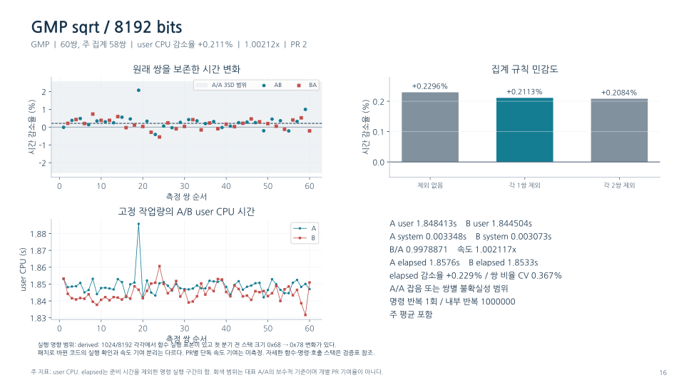
실행 영향 범위: derived: 1024/8192 각각에서 함수 실행 표본이 있고 첫 분기 전 스택 크기 0x68 → 0x78 변화가 있다.
집계: 프로젝트 평균 포함 · 쌍 비율 CV 0.367% · B/A 0.9978871 · 배율 1.002117×
| 지표 | A | B |
|---|---|---|
| user CPU | 1.848413 s | 1.844504 s |
| system CPU | 0.003348 s | 0.003073 s |
| 명령 실행 elapsed | 1.857600 s | 1.853300 s |
| 각 꼬리에서 제외한 쌍 수 | user CPU 시간 감소율 |
|---|---|
| 0 | +0.2296% |
| 1 | +0.2113% |
| 2 | +0.2084% |
변경 함수에 관련된 PR
- 최진범 · 포크 #2 · [InstCombine] Let foldSelectBitTest use known bits for the single-bit mask
작성자 이름은 최종보고서로 대조한 PR에 표시했습니다. 관련 PR 목록은 단독 속도 기여율을 뜻하지 않습니다.
| 관련 PR | 함수 / 심벌 | 실행된 변경 명령 또는 확인 내용 |
|---|---|---|
| 2 | mpn_dc_sqrt | 1024/8192 각각에서 함수 실행 표본이 있고 첫 분기 전 스택 크기 0x68 → 0x78 변화가 있다. |
검증 방식(원문): Reused exact-binary execution audit; PR list relates to changed functions; joint influence stated where applicable
검증 근거의 원래 파일 식별자
expansion20/attribution/evidence/native-GMP.jsonexpansion20/attribution/evidence/audit-executed-entry-code.jsonexpansion20/correctness/runtime-profiles/gmp-sqrt-api-1024/changed-function-membership.jsonexpansion20/correctness/runtime-profiles/gmp-sqrt-api-8192/changed-function-membership.json
위 목록은 원래 검증표의 상대 경로입니다. 해당 경로를 사이트의 다운로드 링크로 표시하지 않았습니다. 공개한 쌍별·관측별 수치는 아래 자료 범위에서 받을 수 있습니다.
Hyperscan
173 official compiler expressions, block API
원시 쌍 재검토 · 2026-10-18
시간 감소 35/60쌍 · 시간 증가 25쌍 · 동일 0쌍. 실행 순서·전후반·꼬리 제외 수와 참고 구간에서 평균 방향이 유지됐습니다.
정하람 #214108 · #223246
정지현 #215073determinise의 transition 경로 · 공동 영향
순서별 집계·집계 민감도·재표집 구간
- 원보고 감소율 · 각 꼬리 1쌍 제외
- +0.117%
- 전체 쌍 평균 · 제외 없음
- +0.121%
- AB / BA 평균
- +0.220% / +0.021%
- 전반 / 후반 평균
- +0.174% / +0.068%
- 양 끝 0 / 1 / 2쌍 제외
- +0.121% / +0.117% / +0.119%
- 연속 시간 구간별 평균
- +0.218% / +0.156% / +0.147% / −0.002% / +0.093% / +0.112%
- 재표집 참고 범위
- +0.017% ~ +0.231%
- 블록 길이별 95% 구간
- 2쌍: +0.017% ~ +0.231% · 4쌍: +0.035% ~ +0.205% · 6쌍: +0.034% ~ +0.208% · 10쌍: +0.036% ~ +0.204%
- elapsed 전체 쌍 평균 감소율 · 보조 지표
- +0.198%
모든 60쌍의 수치 보기 · 제외 없음
| 쌍 | 순서 | A user (초) | B user (초) | 감소율 | 원보고 주 집계 |
|---|---|---|---|---|---|
| 1 | AB | 1.186340 | 1.187148 | −0.068% | 포함 |
| 2 | BA | 1.185553 | 1.184344 | +0.102% | 포함 |
| 3 | AB | 1.177177 | 1.186248 | −0.771% | 포함 |
| 4 | BA | 1.187831 | 1.185270 | +0.216% | 포함 |
| 5 | AB | 1.193079 | 1.186090 | +0.586% | 포함 |
| 6 | BA | 1.198357 | 1.187674 | +0.891% | 포함 |
| 7 | AB | 1.187521 | 1.183165 | +0.367% | 포함 |
| 8 | BA | 1.179225 | 1.186832 | −0.645% | 포함 |
| 9 | AB | 1.192903 | 1.177035 | +1.330% | 꼬리 제외 |
| 10 | BA | 1.186661 | 1.184640 | +0.170% | 포함 |
| 11 | AB | 1.182165 | 1.185757 | −0.304% | 포함 |
| 12 | BA | 1.195359 | 1.191507 | +0.322% | 포함 |
| 13 | AB | 1.193879 | 1.182944 | +0.916% | 포함 |
| 14 | BA | 1.190820 | 1.193036 | −0.186% | 포함 |
| 15 | AB | 1.178506 | 1.185131 | −0.562% | 포함 |
| 16 | BA | 1.188562 | 1.182181 | +0.537% | 포함 |
| 17 | AB | 1.192749 | 1.184536 | +0.689% | 포함 |
| 18 | BA | 1.185969 | 1.185642 | +0.028% | 포함 |
| 19 | AB | 1.187994 | 1.187586 | +0.034% | 포함 |
| 20 | BA | 1.186809 | 1.185792 | +0.086% | 포함 |
| 21 | AB | 1.185000 | 1.183106 | +0.160% | 포함 |
| 22 | BA | 1.186989 | 1.179195 | +0.657% | 포함 |
| 23 | AB | 1.190213 | 1.179089 | +0.935% | 포함 |
| 24 | BA | 1.170370 | 1.180650 | −0.878% | 꼬리 제외 |
| 25 | AB | 1.185377 | 1.182697 | +0.226% | 포함 |
| 26 | BA | 1.177462 | 1.176606 | +0.073% | 포함 |
| 27 | AB | 1.184902 | 1.179145 | +0.486% | 포함 |
| 28 | BA | 1.182518 | 1.183293 | −0.066% | 포함 |
| 29 | AB | 1.188402 | 1.180171 | +0.693% | 포함 |
| 30 | BA | 1.178712 | 1.188289 | −0.812% | 포함 |
| 31 | AB | 1.184998 | 1.180356 | +0.392% | 포함 |
| 32 | BA | 1.178202 | 1.178825 | −0.053% | 포함 |
| 33 | AB | 1.183178 | 1.175240 | +0.671% | 포함 |
| 34 | BA | 1.184596 | 1.185176 | −0.049% | 포함 |
| 35 | AB | 1.177191 | 1.179317 | −0.181% | 포함 |
| 36 | BA | 1.179816 | 1.183580 | −0.319% | 포함 |
| 37 | AB | 1.179454 | 1.175841 | +0.306% | 포함 |
| 38 | BA | 1.176976 | 1.180351 | −0.287% | 포함 |
| 39 | AB | 1.176962 | 1.176485 | +0.041% | 포함 |
| 40 | BA | 1.168427 | 1.174717 | −0.538% | 포함 |
| 41 | AB | 1.182315 | 1.180466 | +0.156% | 포함 |
| 42 | BA | 1.186678 | 1.176158 | +0.887% | 포함 |
| 43 | AB | 1.180165 | 1.184757 | −0.389% | 포함 |
| 44 | BA | 1.178829 | 1.179985 | −0.098% | 포함 |
| 45 | AB | 1.181864 | 1.180657 | +0.102% | 포함 |
| 46 | BA | 1.182159 | 1.184402 | −0.190% | 포함 |
| 47 | AB | 1.182245 | 1.174957 | +0.616% | 포함 |
| 48 | BA | 1.177617 | 1.180622 | −0.255% | 포함 |
| 49 | AB | 1.174549 | 1.176495 | −0.166% | 포함 |
| 50 | BA | 1.182975 | 1.179847 | +0.264% | 포함 |
| 51 | AB | 1.182896 | 1.184997 | −0.178% | 포함 |
| 52 | BA | 1.181280 | 1.179893 | +0.117% | 포함 |
| 53 | AB | 1.180864 | 1.182106 | −0.105% | 포함 |
| 54 | BA | 1.175343 | 1.183209 | −0.669% | 포함 |
| 55 | AB | 1.175039 | 1.178985 | −0.336% | 포함 |
| 56 | BA | 1.181406 | 1.175214 | +0.524% | 포함 |
| 57 | AB | 1.180749 | 1.179172 | +0.134% | 포함 |
| 58 | BA | 1.184499 | 1.184579 | −0.007% | 포함 |
| 59 | AB | 1.186296 | 1.176569 | +0.820% | 포함 |
| 60 | BA | 1.179949 | 1.170323 | +0.816% | 포함 |
원보고 차트·측정 조건·실행된 변경·검증 기록
2026-10-16 당시 공통 기준의 판정: A/A 잡음 또는 쌍별 불확실성 범위
원래 판정과 차트 표기는 기록으로 보존했습니다. 위의 평균 방향은 2026-10-18 원시 쌍 재검토 결과입니다.
실행 영향 범위: direct: 변경 비교를 거친 뒤에만 도달하는 transition PC에 기존 실행 표본이 있다. 소스와 인라인 프레임도 대응한다.
집계: 프로젝트 평균 포함 · 쌍 비율 CV 0.487% · B/A 0.9988302 · 배율 1.001171×
| 지표 | A | B |
|---|---|---|
| user CPU | 1.183304 s | 1.181903 s |
| system CPU | 0.005780 s | 0.005551 s |
| 명령 실행 elapsed | 1.196900 s | 1.194800 s |
| 각 꼬리에서 제외한 쌍 수 | user CPU 시간 감소율 |
|---|---|
| 0 | +0.1206% |
| 1 | +0.1170% |
| 2 | +0.1190% |
변경 함수에 관련된 PR
- 정하람 · PR #214108 · [InstCombine] Fold comparisons of llvm.usub.sat result with its LHS
- 정하람 · PR #223246 · [InstCombine] Fold strlen/wcslen over select/phi of constants
- 정지현 · PR #215073 · [Instcombine] Fold a zero-select hexadecimal digit count into ctlz(x | 1)
작성자 이름은 최종보고서로 대조한 PR에 표시했습니다. 관련 PR 목록은 단독 속도 기여율을 뜻하지 않습니다.
| 관련 PR | 함수 / 심벌 | 실행된 변경 명령 또는 확인 내용 |
|---|---|---|
| 214108,223246,215073 | determinise — transition | 변경 비교를 거친 뒤에만 도달하는 transition PC에 기존 실행 표본이 있다. 소스와 인라인 프레임도 대응한다. |
검증 방식(원문): Reused exact-binary execution audit; PR list relates to changed functions; joint influence stated where applicable
검증 근거의 원래 파일 식별자
expansion20/attribution/evidence/native-Hyperscan.jsonexpansion20/attribution/evidence/audit-hyperscan-changed-test-execution.json
위 목록은 원래 검증표의 상대 경로입니다. 해당 경로를 사이트의 다운로드 링크로 표시하지 않았습니다. 공개한 쌍별·관측별 수치는 아래 자료 범위에서 받을 수 있습니다.
uutils
Permuted index of official project README
원시 쌍 재검토 · 2026-10-18
시간 감소 33/60쌍 · 시간 증가 27쌍 · 동일 0쌍. AB와 BA의 평균 방향이 다릅니다. 재표집 참고 구간에 0이 포함됩니다.
순서별 집계·집계 민감도·재표집 구간
- 원보고 감소율 · 각 꼬리 1쌍 제외
- +0.092%
- 전체 쌍 평균 · 제외 없음
- +0.072%
- AB / BA 평균
- −0.233% / +0.377%
- 전반 / 후반 평균
- +0.044% / +0.100%
- 양 끝 0 / 1 / 2쌍 제외
- +0.072% / +0.092% / +0.087%
- 연속 시간 구간별 평균
- −0.194% / +0.233% / +0.092% / −0.697% / −0.221% / +1.220%
- 재표집 참고 범위
- −0.359% ~ +0.516%
- 블록 길이별 95% 구간
- 2쌍: −0.343% ~ +0.491% · 4쌍: −0.359% ~ +0.516% · 6쌍: −0.349% ~ +0.510% · 10쌍: −0.252% ~ +0.481%
- elapsed 전체 쌍 평균 감소율 · 보조 지표
- −0.005%
모든 60쌍의 수치 보기 · 제외 없음
| 쌍 | 순서 | A user (초) | B user (초) | 감소율 | 원보고 주 집계 |
|---|---|---|---|---|---|
| 1 | AB | 1.129104 | 1.091205 | +3.357% | 포함 |
| 2 | BA | 1.092081 | 1.116850 | −2.268% | 포함 |
| 3 | AB | 1.083736 | 1.099185 | −1.426% | 포함 |
| 4 | BA | 1.102148 | 1.089564 | +1.142% | 포함 |
| 5 | AB | 1.085228 | 1.109137 | −2.203% | 포함 |
| 6 | BA | 1.099600 | 1.119021 | −1.766% | 포함 |
| 7 | AB | 1.082526 | 1.104283 | −2.010% | 포함 |
| 8 | BA | 1.111270 | 1.094039 | +1.551% | 포함 |
| 9 | AB | 1.110271 | 1.104173 | +0.549% | 포함 |
| 10 | BA | 1.123062 | 1.110349 | +1.132% | 포함 |
| 11 | AB | 1.075624 | 1.125561 | −4.643% | 꼬리 제외 |
| 12 | BA | 1.093672 | 1.058427 | +3.223% | 포함 |
| 13 | AB | 1.106875 | 1.097785 | +0.821% | 포함 |
| 14 | BA | 1.102721 | 1.102280 | +0.040% | 포함 |
| 15 | AB | 1.101102 | 1.097822 | +0.298% | 포함 |
| 16 | BA | 1.089430 | 1.112005 | −2.072% | 포함 |
| 17 | AB | 1.094257 | 1.091321 | +0.268% | 포함 |
| 18 | BA | 1.128214 | 1.087398 | +3.618% | 꼬리 제외 |
| 19 | AB | 1.109493 | 1.104314 | +0.467% | 포함 |
| 20 | BA | 1.106202 | 1.102750 | +0.312% | 포함 |
| 21 | AB | 1.053731 | 1.057730 | −0.380% | 포함 |
| 22 | BA | 1.069228 | 1.077191 | −0.745% | 포함 |
| 23 | AB | 1.056693 | 1.083922 | −2.577% | 포함 |
| 24 | BA | 1.062713 | 1.052474 | +0.963% | 포함 |
| 25 | AB | 1.066864 | 1.082407 | −1.457% | 포함 |
| 26 | BA | 1.103190 | 1.095687 | +0.680% | 포함 |
| 27 | AB | 1.074998 | 1.077057 | −0.192% | 포함 |
| 28 | BA | 1.066259 | 1.065236 | +0.096% | 포함 |
| 29 | AB | 1.106946 | 1.079714 | +2.460% | 포함 |
| 30 | BA | 1.075877 | 1.053580 | +2.072% | 포함 |
| 31 | AB | 1.072252 | 1.070326 | +0.180% | 포함 |
| 32 | BA | 1.061531 | 1.063208 | −0.158% | 포함 |
| 33 | AB | 1.079140 | 1.097708 | −1.721% | 포함 |
| 34 | BA | 1.067424 | 1.098035 | −2.868% | 포함 |
| 35 | AB | 1.076703 | 1.084571 | −0.731% | 포함 |
| 36 | BA | 1.053982 | 1.052083 | +0.180% | 포함 |
| 37 | AB | 1.069146 | 1.067353 | +0.168% | 포함 |
| 38 | BA | 1.086388 | 1.084952 | +0.132% | 포함 |
| 39 | AB | 1.067134 | 1.090691 | −2.208% | 포함 |
| 40 | BA | 1.099377 | 1.098818 | +0.051% | 포함 |
| 41 | AB | 1.081455 | 1.082300 | −0.078% | 포함 |
| 42 | BA | 1.081081 | 1.057754 | +2.158% | 포함 |
| 43 | AB | 1.082150 | 1.071579 | +0.977% | 포함 |
| 44 | BA | 1.089868 | 1.068182 | +1.990% | 포함 |
| 45 | AB | 1.069976 | 1.074510 | −0.424% | 포함 |
| 46 | BA | 1.058894 | 1.086267 | −2.585% | 포함 |
| 47 | AB | 1.088576 | 1.098476 | −0.909% | 포함 |
| 48 | BA | 1.066133 | 1.072623 | −0.609% | 포함 |
| 49 | AB | 1.062243 | 1.078113 | −1.494% | 포함 |
| 50 | BA | 1.058917 | 1.071981 | −1.234% | 포함 |
| 51 | AB | 1.053721 | 1.057785 | −0.386% | 포함 |
| 52 | BA | 1.089185 | 1.063779 | +2.333% | 포함 |
| 53 | AB | 1.070808 | 1.059572 | +1.049% | 포함 |
| 54 | BA | 1.074367 | 1.076706 | −0.218% | 포함 |
| 55 | AB | 1.079132 | 1.058754 | +1.888% | 포함 |
| 56 | BA | 1.087285 | 1.057806 | +2.711% | 포함 |
| 57 | AB | 1.082530 | 1.067371 | +1.400% | 포함 |
| 58 | BA | 1.075264 | 1.052467 | +2.120% | 포함 |
| 59 | AB | 1.108688 | 1.086975 | +1.958% | 포함 |
| 60 | BA | 1.074914 | 1.082009 | −0.660% | 포함 |
원보고 차트·측정 조건·실행된 변경·검증 기록
2026-10-16 당시 공통 기준의 판정: A/A 잡음 또는 쌍별 불확실성 범위
원래 판정과 차트 표기는 기록으로 보존했습니다. 위의 평균 방향은 2026-10-18 원시 쌍 재검토 결과입니다.
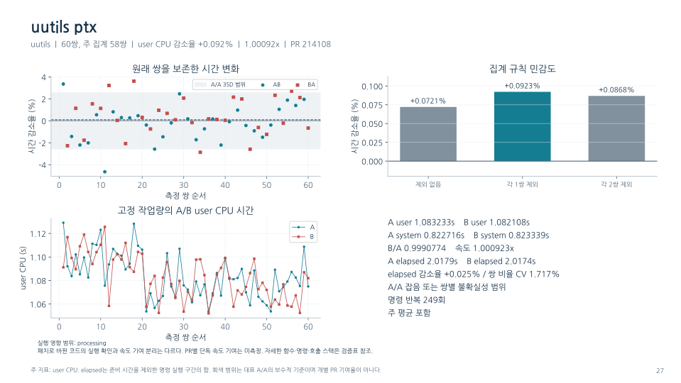
실행 영향 범위: processing
집계: 프로젝트 평균 포함 · 쌍 비율 CV 1.717% · B/A 0.9990774 · 배율 1.000923×
| 지표 | A | B |
|---|---|---|
| user CPU | 1.083233 s | 1.082108 s |
| system CPU | 0.822716 s | 0.823339 s |
| 명령 실행 elapsed | 2.017900 s | 2.017400 s |
| 각 꼬리에서 제외한 쌍 수 | user CPU 시간 감소율 |
|---|---|
| 0 | +0.0721% |
| 1 | +0.0923% |
| 2 | +0.0868% |
변경 함수에 관련된 PR
- 정하람 · PR #214108 · [InstCombine] Fold comparisons of llvm.usub.sat result with its LHS
작성자 이름은 최종보고서로 대조한 PR에 표시했습니다. 관련 PR 목록은 단독 속도 기여율을 뜻하지 않습니다.
| 관련 PR | 함수 / 심벌 | 실행된 변경 명령 또는 확인 내용 |
|---|---|---|
| 214108 | uu_ptx::write_traditional_output::hea042bf3e700f894 | mov %rax,0x150(%rsp) |
| 214108 | uu_ptx::write_traditional_output::hea042bf3e700f894 | mov %rax,0x68(%rsp) |
| 214108 | uu_ptx::write_traditional_output::hea042bf3e700f894 | mov %rax,0x138(%rsp) |
| 214108 | uu_ptx::write_traditional_output::hea042bf3e700f894 | mov %eax,0x140(%rsp) |
| 214108 | uu_ptx::write_traditional_output::hea042bf3e700f894 | mov %r14,0x148(%rsp) |
| 214108 | uu_ptx::write_traditional_output::hea042bf3e700f894 | mov %rax,0x128(%rsp) |
| 214108 | uu_ptx::write_traditional_output::hea042bf3e700f894 | mov %rcx,0x38(%rsp) |
| 214108 | uu_ptx::write_traditional_output::hea042bf3e700f894 | mov %eax,0x130(%rsp) |
| 214108 | uu_ptx::write_traditional_output::hea042bf3e700f894 | mov %rdx,0x100(%rsp) |
| 214108 | uu_ptx::write_traditional_output::hea042bf3e700f894 | mov 0x100(%rsp),%rdx |
| 214108 | uu_ptx::write_traditional_output::hea042bf3e700f894 | je 18948a <_ZN6uu_ptx24write_traditional_output17hea042bf3e700f894E+0x230a> |
| 214108 | uu_ptx::write_traditional_output::hea042bf3e700f894 | mov %rax,0x38(%rsp) |
| 214108 | uu_ptx::write_traditional_output::hea042bf3e700f894 | movl $0x0,0x140(%rsp) |
| 214108 | uu_ptx::write_traditional_output::hea042bf3e700f894 | mov 0x68(%rsp),%rdx |
| 214108 | uu_ptx::write_traditional_output::hea042bf3e700f894 | mov 0x70(%rsp),%rdx |
| 214108 | uu_ptx::write_traditional_output::hea042bf3e700f894 | movl $0x0,0x130(%rsp) |
검증 방식(원문): Single-PR native ablation and actual changed instruction step
검증 근거의 원래 파일 식별자
candidate-review-2x20/execution/correctness/native-probes/uutils-ptx.jsoncandidate-review-2x20/execution/correctness/uutils-nightly/correctness.jsoncandidate-review-2x20/execution/manifests/uutils-nightly-native-ablation.json
위 목록은 원래 검증표의 상대 경로입니다. 해당 경로를 사이트의 다운로드 링크로 표시하지 않았습니다. 공개한 쌍별·관측별 수치는 아래 자료 범위에서 받을 수 있습니다.
darktable
Aloe full RGBA, Floyd-Steinberg 4-bit RGB export module
원시 쌍 재검토 · 2026-10-18
시간 감소 34/60쌍 · 시간 증가 26쌍 · 동일 0쌍. 재표집 참고 구간에 0이 포함됩니다.
순서별 집계·집계 민감도·재표집 구간
- 원보고 감소율 · 각 꼬리 1쌍 제외
- +0.090%
- 전체 쌍 평균 · 제외 없음
- +0.088%
- AB / BA 평균
- +0.148% / +0.029%
- 전반 / 후반 평균
- +0.096% / +0.081%
- 양 끝 0 / 1 / 2쌍 제외
- +0.088% / +0.090% / +0.088%
- 연속 시간 구간별 평균
- +0.244% / −0.060% / +0.104% / +0.094% / +0.111% / +0.037%
- 재표집 참고 범위
- −0.013% ~ +0.183%
- 블록 길이별 95% 구간
- 2쌍: −0.013% ~ +0.183% · 4쌍: −0.013% ~ +0.181% · 6쌍: −0.003% ~ +0.175% · 10쌍: +0.014% ~ +0.159%
- elapsed 전체 쌍 평균 감소율 · 보조 지표
- +0.014%
모든 60쌍의 수치 보기 · 제외 없음
| 쌍 | 순서 | A user (초) | B user (초) | 감소율 | 원보고 주 집계 |
|---|---|---|---|---|---|
| 1 | AB | 1.402642 | 1.394952 | +0.548% | 포함 |
| 2 | BA | 1.401115 | 1.396144 | +0.355% | 포함 |
| 3 | AB | 1.396219 | 1.400719 | −0.322% | 포함 |
| 4 | BA | 1.400282 | 1.399935 | +0.025% | 포함 |
| 5 | AB | 1.397780 | 1.398652 | −0.062% | 포함 |
| 6 | BA | 1.398650 | 1.394390 | +0.305% | 포함 |
| 7 | AB | 1.404656 | 1.392594 | +0.859% | 포함 |
| 8 | BA | 1.396851 | 1.400214 | −0.241% | 포함 |
| 9 | AB | 1.402452 | 1.396106 | +0.452% | 포함 |
| 10 | BA | 1.403492 | 1.396160 | +0.522% | 포함 |
| 11 | AB | 1.398756 | 1.395814 | +0.210% | 포함 |
| 12 | BA | 1.396330 | 1.399644 | −0.237% | 포함 |
| 13 | AB | 1.388267 | 1.402404 | −1.018% | 꼬리 제외 |
| 14 | BA | 1.393452 | 1.398615 | −0.371% | 포함 |
| 15 | AB | 1.400883 | 1.401952 | −0.076% | 포함 |
| 16 | BA | 1.399103 | 1.400492 | −0.099% | 포함 |
| 17 | AB | 1.404382 | 1.396405 | +0.568% | 포함 |
| 18 | BA | 1.397239 | 1.399652 | −0.173% | 포함 |
| 19 | AB | 1.395733 | 1.390331 | +0.387% | 포함 |
| 20 | BA | 1.401553 | 1.398642 | +0.208% | 포함 |
| 21 | AB | 1.400624 | 1.398305 | +0.166% | 포함 |
| 22 | BA | 1.393410 | 1.402856 | −0.678% | 포함 |
| 23 | AB | 1.399182 | 1.398040 | +0.082% | 포함 |
| 24 | BA | 1.398648 | 1.396566 | +0.149% | 포함 |
| 25 | AB | 1.396016 | 1.398458 | −0.175% | 포함 |
| 26 | BA | 1.403120 | 1.389825 | +0.948% | 포함 |
| 27 | AB | 1.399523 | 1.404010 | −0.321% | 포함 |
| 28 | BA | 1.396925 | 1.397752 | −0.059% | 포함 |
| 29 | AB | 1.402283 | 1.394781 | +0.535% | 포함 |
| 30 | BA | 1.400954 | 1.395406 | +0.396% | 포함 |
| 31 | AB | 1.395728 | 1.395375 | +0.025% | 포함 |
| 32 | BA | 1.397760 | 1.395624 | +0.153% | 포함 |
| 33 | AB | 1.400053 | 1.391006 | +0.646% | 포함 |
| 34 | BA | 1.398504 | 1.397808 | +0.050% | 포함 |
| 35 | AB | 1.400530 | 1.396103 | +0.316% | 포함 |
| 36 | BA | 1.401231 | 1.398761 | +0.176% | 포함 |
| 37 | AB | 1.393645 | 1.397662 | −0.288% | 포함 |
| 38 | BA | 1.395989 | 1.398847 | −0.205% | 포함 |
| 39 | AB | 1.395010 | 1.401413 | −0.459% | 포함 |
| 40 | BA | 1.402121 | 1.394749 | +0.526% | 포함 |
| 41 | AB | 1.397309 | 1.397887 | −0.041% | 포함 |
| 42 | BA | 1.393625 | 1.398525 | −0.352% | 포함 |
| 43 | AB | 1.400093 | 1.396289 | +0.272% | 포함 |
| 44 | BA | 1.394352 | 1.401817 | −0.535% | 포함 |
| 45 | AB | 1.404034 | 1.392099 | +0.850% | 포함 |
| 46 | BA | 1.391054 | 1.395507 | −0.320% | 포함 |
| 47 | AB | 1.407346 | 1.399372 | +0.567% | 포함 |
| 48 | BA | 1.394599 | 1.398026 | −0.246% | 포함 |
| 49 | AB | 1.406504 | 1.390773 | +1.118% | 꼬리 제외 |
| 50 | BA | 1.397894 | 1.400752 | −0.204% | 포함 |
| 51 | AB | 1.400286 | 1.396693 | +0.257% | 포함 |
| 52 | BA | 1.397989 | 1.393020 | +0.355% | 포함 |
| 53 | AB | 1.401799 | 1.399624 | +0.155% | 포함 |
| 54 | BA | 1.393472 | 1.399667 | −0.445% | 포함 |
| 55 | AB | 1.399857 | 1.401196 | −0.096% | 포함 |
| 56 | BA | 1.401757 | 1.400664 | +0.078% | 포함 |
| 57 | AB | 1.400397 | 1.400583 | −0.013% | 포함 |
| 58 | BA | 1.399070 | 1.392022 | +0.504% | 포함 |
| 59 | AB | 1.395492 | 1.405272 | −0.701% | 포함 |
| 60 | BA | 1.398585 | 1.394717 | +0.277% | 포함 |
원보고 차트·측정 조건·실행된 변경·검증 기록
2026-10-16 당시 공통 기준의 판정: A/A 잡음 또는 쌍별 불확실성 범위
원래 판정과 차트 표기는 기록으로 보존했습니다. 위의 평균 방향은 2026-10-18 원시 쌍 재검토 결과입니다.
실행 영향 범위: direct: 측정 ROI 1282×1110과 FS4 RGB 설정은 변경된 첫 행 준비 경로를 지난다. packed min/max PC 0표본은 미실행의 증거가 아니다.
집계: 프로젝트 평균 포함 · 쌍 비율 CV 0.426% · B/A 0.9991034 · 배율 1.000897×
| 지표 | A | B |
|---|---|---|
| user CPU | 1.398825 s | 1.397560 s |
| system CPU | 0.049295 s | 0.050383 s |
| 명령 실행 elapsed | 1.458100 s | 1.457900 s |
| 각 꼬리에서 제외한 쌍 수 | user CPU 시간 감소율 |
|---|---|
| 0 | +0.0883% |
| 1 | +0.0897% |
| 2 | +0.0885% |
변경 함수에 관련된 PR
- PR #213690 · [InstCombine] Canonicalize nsz NaN-fallback float clamp to minnum/maxnum
작성자 이름은 최종보고서로 대조한 PR에 표시했습니다. 관련 PR 목록은 단독 속도 기여율을 뜻하지 않습니다.
| 관련 PR | 함수 / 심벌 | 실행된 변경 명령 또는 확인 내용 |
|---|---|---|
| 213690 | process — first-row _clipnan | 측정 ROI 1282×1110과 FS4 RGB 설정은 변경된 첫 행 준비 경로를 지난다. packed min/max PC 0표본은 미실행의 증거가 아니다. |
검증 방식(원문): Reused exact-binary execution audit; PR list relates to changed functions; joint influence stated where applicable
검증 근거의 원래 파일 식별자
expansion20/attribution/evidence/native-darktable.jsonexpansion20/attribution/evidence/audit-darktable-executed-stage.jsonexpansion20/scripts/darktable_dither_bench.c
위 목록은 원래 검증표의 상대 경로입니다. 해당 경로를 사이트의 다운로드 링크로 표시하지 않았습니다. 공개한 쌍별·관측별 수치는 아래 자료 범위에서 받을 수 있습니다.
Hermes
Official Octane DeltaBlue, 20 fixed calls, upstream chain/projection checks
원시 쌍 재검토 · 2026-10-18
시간 감소 33/60쌍 · 시간 증가 27쌍 · 동일 0쌍. 전반과 후반의 평균 방향이 다릅니다. 재표집 참고 구간에 0이 포함됩니다.
순서별 집계·집계 민감도·재표집 구간
- 원보고 감소율 · 각 꼬리 1쌍 제외
- +0.084%
- 전체 쌍 평균 · 제외 없음
- +0.070%
- AB / BA 평균
- +0.106% / +0.035%
- 전반 / 후반 평균
- −0.060% / +0.200%
- 양 끝 0 / 1 / 2쌍 제외
- +0.070% / +0.084% / +0.090%
- 연속 시간 구간별 평균
- −0.079% / −0.047% / −0.053% / +0.468% / +0.015% / +0.117%
- 재표집 참고 범위
- −0.105% ~ +0.244%
- 블록 길이별 95% 구간
- 2쌍: −0.104% ~ +0.237% · 4쌍: −0.105% ~ +0.244% · 6쌍: −0.105% ~ +0.239% · 10쌍: −0.099% ~ +0.224%
- elapsed 전체 쌍 평균 감소율 · 보조 지표
- +0.141%
모든 60쌍의 수치 보기 · 제외 없음
| 쌍 | 순서 | A user (초) | B user (초) | 감소율 | 원보고 주 집계 |
|---|---|---|---|---|---|
| 1 | AB | 1.888559 | 1.875640 | +0.684% | 포함 |
| 2 | BA | 1.896407 | 1.881717 | +0.775% | 포함 |
| 3 | AB | 1.862398 | 1.868749 | −0.341% | 포함 |
| 4 | BA | 1.886280 | 1.869443 | +0.893% | 포함 |
| 5 | AB | 1.887327 | 1.882555 | +0.253% | 포함 |
| 6 | BA | 1.875413 | 1.879031 | −0.193% | 포함 |
| 7 | AB | 1.857402 | 1.882484 | −1.350% | 포함 |
| 8 | BA | 1.893060 | 1.877301 | +0.832% | 포함 |
| 9 | AB | 1.863021 | 1.868822 | −0.311% | 포함 |
| 10 | BA | 1.846879 | 1.884405 | −2.032% | 꼬리 제외 |
| 11 | AB | 1.872502 | 1.876876 | −0.234% | 포함 |
| 12 | BA | 1.880123 | 1.871743 | +0.446% | 포함 |
| 13 | AB | 1.873764 | 1.884105 | −0.552% | 포함 |
| 14 | BA | 1.866362 | 1.865678 | +0.037% | 포함 |
| 15 | AB | 1.878334 | 1.871417 | +0.368% | 포함 |
| 16 | BA | 1.877269 | 1.893251 | −0.851% | 포함 |
| 17 | AB | 1.891671 | 1.877076 | +0.772% | 포함 |
| 18 | BA | 1.867449 | 1.885705 | −0.978% | 포함 |
| 19 | AB | 1.883119 | 1.878575 | +0.241% | 포함 |
| 20 | BA | 1.896112 | 1.890832 | +0.278% | 포함 |
| 21 | AB | 1.872893 | 1.876539 | −0.195% | 포함 |
| 22 | BA | 1.861863 | 1.882051 | −1.084% | 포함 |
| 23 | AB | 1.879797 | 1.864790 | +0.798% | 포함 |
| 24 | BA | 1.884626 | 1.864176 | +1.085% | 포함 |
| 25 | AB | 1.888283 | 1.875488 | +0.678% | 포함 |
| 26 | BA | 1.871078 | 1.870524 | +0.030% | 포함 |
| 27 | AB | 1.870894 | 1.880816 | −0.530% | 포함 |
| 28 | BA | 1.873347 | 1.893150 | −1.057% | 포함 |
| 29 | AB | 1.872209 | 1.858001 | +0.759% | 포함 |
| 30 | BA | 1.868036 | 1.886885 | −1.009% | 포함 |
| 31 | AB | 1.858431 | 1.867465 | −0.486% | 포함 |
| 32 | BA | 1.883791 | 1.871552 | +0.650% | 포함 |
| 33 | AB | 1.873155 | 1.869602 | +0.190% | 포함 |
| 34 | BA | 1.887678 | 1.870309 | +0.920% | 포함 |
| 35 | AB | 1.889106 | 1.863365 | +1.363% | 꼬리 제외 |
| 36 | BA | 1.872529 | 1.868847 | +0.197% | 포함 |
| 37 | AB | 1.875507 | 1.864156 | +0.605% | 포함 |
| 38 | BA | 1.868822 | 1.868681 | +0.008% | 포함 |
| 39 | AB | 1.883345 | 1.880409 | +0.156% | 포함 |
| 40 | BA | 1.884159 | 1.863819 | +1.080% | 포함 |
| 41 | AB | 1.875904 | 1.882980 | −0.377% | 포함 |
| 42 | BA | 1.873335 | 1.884321 | −0.586% | 포함 |
| 43 | AB | 1.872368 | 1.863970 | +0.449% | 포함 |
| 44 | BA | 1.856508 | 1.861815 | −0.286% | 포함 |
| 45 | AB | 1.893411 | 1.878817 | +0.771% | 포함 |
| 46 | BA | 1.864786 | 1.866056 | −0.068% | 포함 |
| 47 | AB | 1.863731 | 1.869833 | −0.327% | 포함 |
| 48 | BA | 1.857103 | 1.859328 | −0.120% | 포함 |
| 49 | AB | 1.863191 | 1.872172 | −0.482% | 포함 |
| 50 | BA | 1.899284 | 1.876870 | +1.180% | 포함 |
| 51 | AB | 1.879380 | 1.882653 | −0.174% | 포함 |
| 52 | BA | 1.881043 | 1.860608 | +1.086% | 포함 |
| 53 | AB | 1.864593 | 1.876754 | −0.652% | 포함 |
| 54 | BA | 1.884251 | 1.884958 | −0.038% | 포함 |
| 55 | AB | 1.880035 | 1.863371 | +0.886% | 포함 |
| 56 | BA | 1.872115 | 1.883815 | −0.625% | 포함 |
| 57 | AB | 1.873699 | 1.872481 | +0.065% | 포함 |
| 58 | BA | 1.862981 | 1.871374 | −0.451% | 포함 |
| 59 | AB | 1.870112 | 1.867358 | +0.147% | 포함 |
| 60 | BA | 1.882623 | 1.865177 | +0.927% | 포함 |
원보고 차트·측정 조건·실행된 변경·검증 기록
2026-10-16 당시 공통 기준의 판정: A/A 잡음 또는 쌍별 불확실성 범위
원래 판정과 차트 표기는 기록으로 보존했습니다. 위의 평균 방향은 2026-10-18 원시 쌍 재검토 결과입니다.
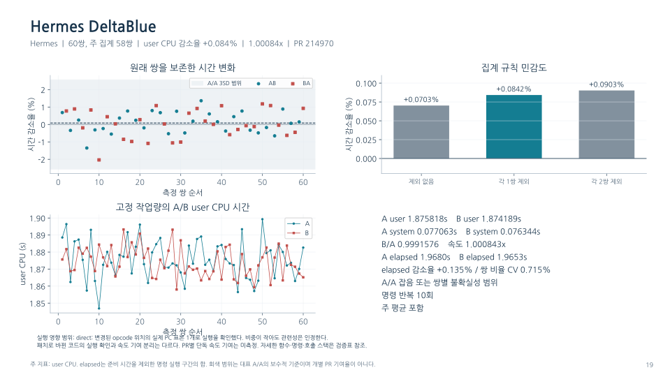
실행 영향 범위: direct: 변경된 opcode 위치의 실제 PC 표본 1개로 실행을 확인했다. 비중이 작아도 관련성은 인정한다.
집계: 프로젝트 평균 포함 · 쌍 비율 CV 0.715% · B/A 0.9991576 · 배율 1.000843×
| 지표 | A | B |
|---|---|---|
| user CPU | 1.875818 s | 1.874189 s |
| system CPU | 0.077063 s | 0.076344 s |
| 명령 실행 elapsed | 1.968000 s | 1.965300 s |
| 각 꼬리에서 제외한 쌍 수 | user CPU 시간 감소율 |
|---|---|
| 0 | +0.0703% |
| 1 | +0.0842% |
| 2 | +0.0903% |
변경 함수에 관련된 PR
- PR #214970 · [InstCombine] Reassociate xor and disjoint or through zext
작성자 이름은 최종보고서로 대조한 PR에 표시했습니다. 관련 PR 목록은 단독 속도 기여율을 뜻하지 않습니다.
| 관련 PR | 함수 / 심벌 | 실행된 변경 명령 또는 확인 내용 |
|---|---|---|
| 214970 | Interpreter::interpretFunction — StrictNeq/Not | 변경된 opcode 위치의 실제 PC 표본 1개로 실행을 확인했다. 비중이 작아도 관련성은 인정한다. |
검증 방식(원문): Reused exact-binary execution audit; PR list relates to changed functions; joint influence stated where applicable
검증 근거의 원래 파일 식별자
expansion20/attribution/evidence/native-Hermes.jsonexpansion20/correctness/hermes-deltablue-opcodes.json
위 목록은 원래 검증표의 상대 경로입니다. 해당 경로를 사이트의 다운로드 링크로 표시하지 않았습니다. 공개한 쌍별·관측별 수치는 아래 자료 범위에서 받을 수 있습니다.
OpenH264
Cisco Main CABAC 144 frames, default SIMD
원시 쌍 재검토 · 2026-10-18
시간 감소 35/60쌍 · 시간 증가 25쌍 · 동일 0쌍. 재표집 참고 구간에 0이 포함됩니다.
순서별 집계·집계 민감도·재표집 구간
- 원보고 감소율 · 각 꼬리 1쌍 제외
- +0.069%
- 전체 쌍 평균 · 제외 없음
- +0.060%
- AB / BA 평균
- +0.066% / +0.054%
- 전반 / 후반 평균
- +0.064% / +0.056%
- 양 끝 0 / 1 / 2쌍 제외
- +0.060% / +0.069% / +0.080%
- 연속 시간 구간별 평균
- +0.211% / −0.213% / +0.193% / −0.126% / +0.234% / +0.060%
- 재표집 참고 범위
- −0.133% ~ +0.246%
- 블록 길이별 95% 구간
- 2쌍: −0.133% ~ +0.242% · 4쌍: −0.121% ~ +0.238% · 6쌍: −0.121% ~ +0.246% · 10쌍: −0.089% ~ +0.212%
- elapsed 전체 쌍 평균 감소율 · 보조 지표
- +0.084%
모든 60쌍의 수치 보기 · 제외 없음
| 쌍 | 순서 | A user (초) | B user (초) | 감소율 | 원보고 주 집계 |
|---|---|---|---|---|---|
| 1 | AB | 1.286018 | 1.304808 | −1.461% | 포함 |
| 2 | BA | 1.302470 | 1.293118 | +0.718% | 포함 |
| 3 | AB | 1.301576 | 1.290282 | +0.868% | 포함 |
| 4 | BA | 1.297264 | 1.290284 | +0.538% | 포함 |
| 5 | AB | 1.286133 | 1.291868 | −0.446% | 포함 |
| 6 | BA | 1.301459 | 1.299860 | +0.123% | 포함 |
| 7 | AB | 1.299094 | 1.275189 | +1.840% | 꼬리 제외 |
| 8 | BA | 1.281602 | 1.289000 | −0.577% | 포함 |
| 9 | AB | 1.287718 | 1.281017 | +0.520% | 포함 |
| 10 | BA | 1.284837 | 1.284999 | −0.013% | 포함 |
| 11 | AB | 1.296367 | 1.293766 | +0.201% | 포함 |
| 12 | BA | 1.293442 | 1.289038 | +0.340% | 포함 |
| 13 | AB | 1.284608 | 1.291401 | −0.529% | 포함 |
| 14 | BA | 1.275398 | 1.295509 | −1.577% | 포함 |
| 15 | AB | 1.297489 | 1.290150 | +0.566% | 포함 |
| 16 | BA | 1.287026 | 1.299470 | −0.967% | 포함 |
| 17 | AB | 1.288886 | 1.272064 | +1.305% | 포함 |
| 18 | BA | 1.284605 | 1.290979 | −0.496% | 포함 |
| 19 | AB | 1.279520 | 1.292526 | −1.016% | 포함 |
| 20 | BA | 1.296281 | 1.295703 | +0.045% | 포함 |
| 21 | AB | 1.268933 | 1.263871 | +0.399% | 포함 |
| 22 | BA | 1.257746 | 1.258962 | −0.097% | 포함 |
| 23 | AB | 1.260192 | 1.281087 | −1.658% | 포함 |
| 24 | BA | 1.256547 | 1.262636 | −0.485% | 포함 |
| 25 | AB | 1.262337 | 1.259275 | +0.243% | 포함 |
| 26 | BA | 1.274306 | 1.265674 | +0.677% | 포함 |
| 27 | AB | 1.278478 | 1.269022 | +0.740% | 포함 |
| 28 | BA | 1.261344 | 1.259734 | +0.128% | 포함 |
| 29 | AB | 1.274202 | 1.263679 | +0.826% | 포함 |
| 30 | BA | 1.276704 | 1.261925 | +1.158% | 포함 |
| 31 | AB | 1.260887 | 1.260095 | +0.063% | 포함 |
| 32 | BA | 1.263528 | 1.255229 | +0.657% | 포함 |
| 33 | AB | 1.266624 | 1.272300 | −0.448% | 포함 |
| 34 | BA | 1.252840 | 1.254228 | −0.111% | 포함 |
| 35 | AB | 1.270321 | 1.260602 | +0.765% | 포함 |
| 36 | BA | 1.268575 | 1.275268 | −0.528% | 포함 |
| 37 | AB | 1.251721 | 1.274027 | −1.782% | 포함 |
| 38 | BA | 1.265812 | 1.270259 | −0.351% | 포함 |
| 39 | AB | 1.268679 | 1.273080 | −0.347% | 포함 |
| 40 | BA | 1.275054 | 1.264613 | +0.819% | 포함 |
| 41 | AB | 1.260219 | 1.259901 | +0.025% | 포함 |
| 42 | BA | 1.253769 | 1.259291 | −0.440% | 포함 |
| 43 | AB | 1.264048 | 1.253175 | +0.860% | 포함 |
| 44 | BA | 1.262143 | 1.251928 | +0.809% | 포함 |
| 45 | AB | 1.268355 | 1.263705 | +0.367% | 포함 |
| 46 | BA | 1.262143 | 1.262396 | −0.020% | 포함 |
| 47 | AB | 1.261185 | 1.256469 | +0.374% | 포함 |
| 48 | BA | 1.263460 | 1.267586 | −0.327% | 포함 |
| 49 | AB | 1.255301 | 1.255042 | +0.021% | 포함 |
| 50 | BA | 1.266253 | 1.257798 | +0.668% | 포함 |
| 51 | AB | 1.264635 | 1.249869 | +1.168% | 포함 |
| 52 | BA | 1.267093 | 1.266597 | +0.039% | 포함 |
| 53 | AB | 1.266344 | 1.259057 | +0.575% | 포함 |
| 54 | BA | 1.260829 | 1.261121 | −0.023% | 포함 |
| 55 | AB | 1.251772 | 1.279681 | −2.230% | 꼬리 제외 |
| 56 | BA | 1.269632 | 1.258618 | +0.867% | 포함 |
| 57 | AB | 1.255380 | 1.256428 | −0.083% | 포함 |
| 58 | BA | 1.264235 | 1.264351 | −0.009% | 포함 |
| 59 | AB | 1.263034 | 1.259925 | +0.246% | 포함 |
| 60 | BA | 1.260939 | 1.260254 | +0.054% | 포함 |
원보고 차트·측정 조건·실행된 변경·검증 기록
2026-10-16 당시 공통 기준의 판정: A/A 잡음 또는 쌍별 불확실성 범위
원래 판정과 차트 표기는 기록으로 보존했습니다. 위의 평균 방향은 2026-10-18 원시 쌍 재검토 결과입니다.
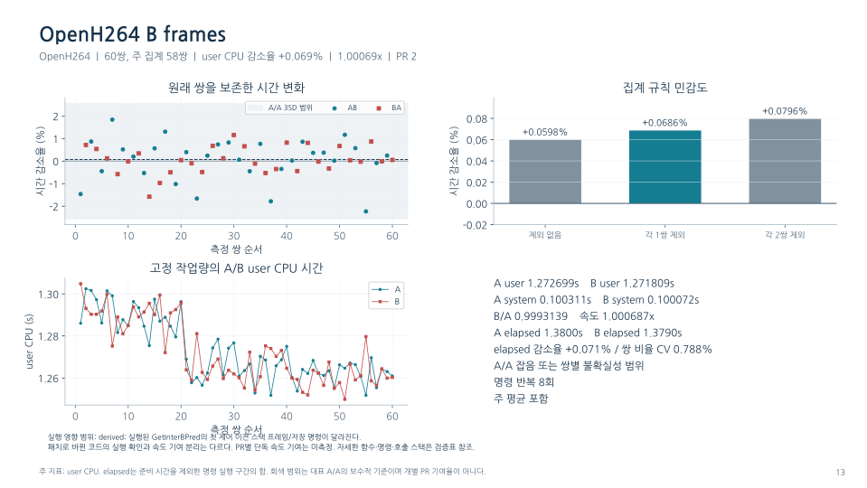
실행 영향 범위: derived: 실행된 GetInterBPred의 첫 제어 이전 스택 프레임/저장 명령이 달라진다.
집계: 프로젝트 평균 포함 · 쌍 비율 CV 0.788% · B/A 0.9993139 · 배율 1.000687×
| 지표 | A | B |
|---|---|---|
| user CPU | 1.272699 s | 1.271809 s |
| system CPU | 0.100311 s | 0.100072 s |
| 명령 실행 elapsed | 1.380000 s | 1.379000 s |
| 각 꼬리에서 제외한 쌍 수 | user CPU 시간 감소율 |
|---|---|
| 0 | +0.0598% |
| 1 | +0.0686% |
| 2 | +0.0796% |
변경 함수에 관련된 PR
- 최진범 · 포크 #2 · [InstCombine] Let foldSelectBitTest use known bits for the single-bit mask
작성자 이름은 최종보고서로 대조한 PR에 표시했습니다. 관련 PR 목록은 단독 속도 기여율을 뜻하지 않습니다.
| 관련 PR | 함수 / 심벌 | 실행된 변경 명령 또는 확인 내용 |
|---|---|---|
| 2 | WelsDec::GetInterBPred(unsigned char**, unsigned char**, WelsDec::TagWelsDecoderContext*) | 실행된 GetInterBPred의 첫 제어 이전 스택 프레임/저장 명령이 달라진다. |
검증 방식(원문): Reused exact-binary execution audit; PR list relates to changed functions; joint influence stated where applicable
검증 근거의 원래 파일 식별자
expansion20/attribution/evidence/native-OpenH264.jsonexpansion20/attribution/evidence/audit-executed-entry-code.json
위 목록은 원래 검증표의 상대 경로입니다. 해당 경로를 사이트의 다운로드 링크로 표시하지 않았습니다. 공개한 쌍별·관측별 수치는 아래 자료 범위에서 받을 수 있습니다.
YARA-X
Real benign ELF scan using common compiled math rules
원시 쌍 재검토 · 2026-10-18
시간 감소 35/60쌍 · 시간 증가 25쌍 · 동일 0쌍. AB와 BA의 평균 방향이 다릅니다. 전반과 후반의 평균 방향이 다릅니다. 재표집 참고 구간에 0이 포함됩니다.
순서별 집계·집계 민감도·재표집 구간
- 원보고 감소율 · 각 꼬리 1쌍 제외
- +0.055%
- 전체 쌍 평균 · 제외 없음
- +0.029%
- AB / BA 평균
- −0.068% / +0.127%
- 전반 / 후반 평균
- −0.057% / +0.116%
- 양 끝 0 / 1 / 2쌍 제외
- +0.029% / +0.055% / +0.071%
- 연속 시간 구간별 평균
- −0.288% / +0.237% / −0.122% / −0.274% / +0.084% / +0.539%
- 재표집 참고 범위
- −0.247% ~ +0.299%
- 블록 길이별 95% 구간
- 2쌍: −0.247% ~ +0.299% · 4쌍: −0.212% ~ +0.263% · 6쌍: −0.199% ~ +0.252% · 10쌍: −0.158% ~ +0.234%
- elapsed 전체 쌍 평균 감소율 · 보조 지표
- −0.091%
모든 60쌍의 수치 보기 · 제외 없음
| 쌍 | 순서 | A user (초) | B user (초) | 감소율 | 원보고 주 집계 |
|---|---|---|---|---|---|
| 1 | AB | 1.277118 | 1.282476 | −0.420% | 포함 |
| 2 | BA | 1.265624 | 1.289130 | −1.857% | 포함 |
| 3 | AB | 1.278293 | 1.277246 | +0.082% | 포함 |
| 4 | BA | 1.277909 | 1.300877 | −1.797% | 포함 |
| 5 | AB | 1.278391 | 1.287622 | −0.722% | 포함 |
| 6 | BA | 1.270024 | 1.266586 | +0.271% | 포함 |
| 7 | AB | 1.256312 | 1.271983 | −1.247% | 포함 |
| 8 | BA | 1.273289 | 1.263757 | +0.749% | 포함 |
| 9 | AB | 1.287214 | 1.274422 | +0.994% | 포함 |
| 10 | BA | 1.274889 | 1.261234 | +1.071% | 포함 |
| 11 | AB | 1.272593 | 1.285024 | −0.977% | 포함 |
| 12 | BA | 1.265313 | 1.272064 | −0.534% | 포함 |
| 13 | AB | 1.289568 | 1.269486 | +1.557% | 포함 |
| 14 | BA | 1.271363 | 1.269341 | +0.159% | 포함 |
| 15 | AB | 1.278223 | 1.270969 | +0.568% | 포함 |
| 16 | BA | 1.268626 | 1.263090 | +0.436% | 포함 |
| 17 | AB | 1.276073 | 1.269202 | +0.538% | 포함 |
| 18 | BA | 1.282736 | 1.279156 | +0.279% | 포함 |
| 19 | AB | 1.269275 | 1.259914 | +0.738% | 포함 |
| 20 | BA | 1.280044 | 1.285053 | −0.391% | 포함 |
| 21 | AB | 1.283244 | 1.291204 | −0.620% | 포함 |
| 22 | BA | 1.274017 | 1.283924 | −0.778% | 포함 |
| 23 | AB | 1.269364 | 1.279416 | −0.792% | 포함 |
| 24 | BA | 1.269115 | 1.267881 | +0.097% | 포함 |
| 25 | AB | 1.288289 | 1.281225 | +0.548% | 포함 |
| 26 | BA | 1.264075 | 1.275682 | −0.918% | 포함 |
| 27 | AB | 1.270291 | 1.277427 | −0.562% | 포함 |
| 28 | BA | 1.270672 | 1.260848 | +0.773% | 포함 |
| 29 | AB | 1.278505 | 1.269707 | +0.688% | 포함 |
| 30 | BA | 1.274970 | 1.270553 | +0.346% | 포함 |
| 31 | AB | 1.267607 | 1.270088 | −0.196% | 포함 |
| 32 | BA | 1.274393 | 1.280444 | −0.475% | 포함 |
| 33 | AB | 1.269934 | 1.277365 | −0.585% | 포함 |
| 34 | BA | 1.281410 | 1.259982 | +1.672% | 포함 |
| 35 | AB | 1.299040 | 1.268913 | +2.319% | 꼬리 제외 |
| 36 | BA | 1.266577 | 1.298886 | −2.551% | 포함 |
| 37 | AB | 1.249054 | 1.295726 | −3.737% | 꼬리 제외 |
| 38 | BA | 1.273045 | 1.265616 | +0.584% | 포함 |
| 39 | AB | 1.259241 | 1.259701 | −0.037% | 포함 |
| 40 | BA | 1.286159 | 1.282751 | +0.265% | 포함 |
| 41 | AB | 1.281308 | 1.271428 | +0.771% | 포함 |
| 42 | BA | 1.284345 | 1.273060 | +0.879% | 포함 |
| 43 | AB | 1.281318 | 1.278872 | +0.191% | 포함 |
| 44 | BA | 1.284503 | 1.270175 | +1.115% | 포함 |
| 45 | AB | 1.258536 | 1.288497 | −2.381% | 포함 |
| 46 | BA | 1.267069 | 1.276104 | −0.713% | 포함 |
| 47 | AB | 1.275478 | 1.269922 | +0.436% | 포함 |
| 48 | BA | 1.285662 | 1.267555 | +1.408% | 포함 |
| 49 | AB | 1.263864 | 1.272678 | −0.697% | 포함 |
| 50 | BA | 1.265419 | 1.267613 | −0.173% | 포함 |
| 51 | AB | 1.277667 | 1.268339 | +0.730% | 포함 |
| 52 | BA | 1.275424 | 1.263326 | +0.949% | 포함 |
| 53 | AB | 1.280206 | 1.275434 | +0.373% | 포함 |
| 54 | BA | 1.292712 | 1.270679 | +1.704% | 포함 |
| 55 | AB | 1.262017 | 1.260898 | +0.089% | 포함 |
| 56 | BA | 1.270890 | 1.261529 | +0.737% | 포함 |
| 57 | AB | 1.277506 | 1.279440 | −0.151% | 포함 |
| 58 | BA | 1.262459 | 1.278746 | −1.290% | 포함 |
| 59 | AB | 1.275075 | 1.269095 | +0.469% | 포함 |
| 60 | BA | 1.274475 | 1.251767 | +1.782% | 포함 |
원보고 차트·측정 조건·실행된 변경·검증 기록
2026-10-16 당시 공통 기준의 판정: A/A 잡음 또는 쌍별 불확실성 범위
원래 판정과 차트 표기는 기록으로 보존했습니다. 위의 평균 방향은 2026-10-18 원시 쌍 재검토 결과입니다.
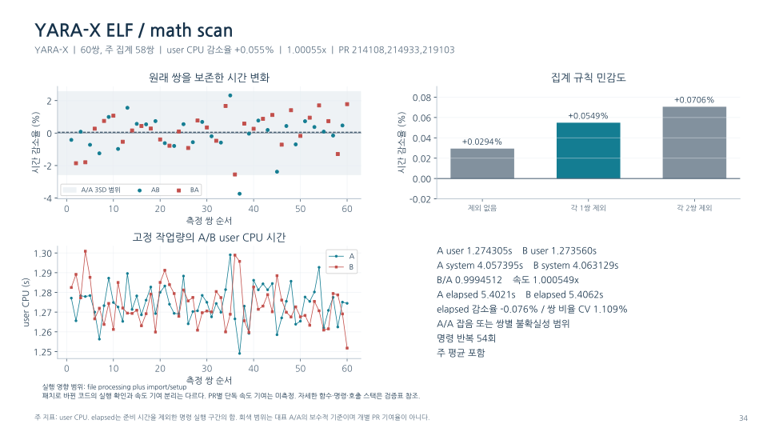
실행 영향 범위: file processing plus import/setup
집계: 프로젝트 평균 포함 · 쌍 비율 CV 1.109% · B/A 0.9994512 · 배율 1.000549×
| 지표 | A | B |
|---|---|---|
| user CPU | 1.274305 s | 1.273560 s |
| system CPU | 4.057395 s | 4.063129 s |
| 명령 실행 elapsed | 5.402100 s | 5.406200 s |
| 각 꼬리에서 제외한 쌍 수 | user CPU 시간 감소율 |
|---|---|
| 0 | +0.0294% |
| 1 | +0.0549% |
| 2 | +0.0706% |
변경 함수에 관련된 PR
- 정하람 · PR #214108 · [InstCombine] Fold comparisons of llvm.usub.sat result with its LHS
- 이하동 · PR #214933 · [InstCombine] Fold comparisons of urem with dividend
- 최진범 · PR #219103 · [ValueTracking] a u>= b and a = b + NonZero implies a != 0
작성자 이름은 최종보고서로 대조한 PR에 표시했습니다. 관련 PR 목록은 단독 속도 기여율을 뜻하지 않습니다.
| 관련 PR | 함수 / 심벌 | 실행된 변경 명령 또는 확인 내용 |
|---|---|---|
| 219103 | hashbrown::raw::RawTableInner::fallible_with_capacity::hc147c48ec210c515 (.llvm.7262381246206149520) | mov %rax,%r14 |
| 219103 | hashbrown::raw::RawTableInner::fallible_with_capacity::hc147c48ec210c515 (.llvm.7262381246206149520) | add $0xf,%r14 |
| 219103 | hashbrown::raw::RawTableInner::fallible_with_capacity::h6b3e3ce36b386aa5 (.llvm.17035172837200826287) | mov %rax,%r14 |
| 219103 | hashbrown::raw::RawTableInner::fallible_with_capacity::h6b3e3ce36b386aa5 (.llvm.17035172837200826287) | add $0xf,%r14 |
| 214108 | yara_x::wasm::WasmExport::fully_qualified_mangled_name::h5927677f487e2f63 | mov %rax,%r14 |
| 214108 | yara_x::wasm::WasmExport::fully_qualified_mangled_name::h5927677f487e2f63 | mov %r14,%rdi |
| 214108 | yara_x::wasm::WasmExport::fully_qualified_mangled_name::h5927677f487e2f63 | movzbl (%r14),%eax |
| 214108 | yara_x::wasm::WasmExport::fully_qualified_mangled_name::h5927677f487e2f63 | mov %rsi,%rbp |
| 214108 | yara_x::wasm::WasmExport::fully_qualified_mangled_name::h5927677f487e2f63 | cmp %rbx,%rbp |
| 214108 | yara_x::wasm::WasmExport::fully_qualified_mangled_name::h5927677f487e2f63 | movzbl (%r14,%rbp,1),%ecx |
| 214108 | yara_x::wasm::WasmExport::fully_qualified_mangled_name::h5927677f487e2f63 | mov 0x8(%rsp),%r13 |
| 214108 | yara_x::wasm::WasmExport::fully_qualified_mangled_name::h5927677f487e2f63 | mov %r13,%rdi |
| 214933 | yara_x::modules::math::monte_carlo_pi_data::h7f2dc0f1f4b8aba1 | sub %rsi,%rdx |
| 214933 | yara_x::modules::math::monte_carlo_pi_data::h7f2dc0f1f4b8aba1 | shr $0x2,%r8 |
| 214933 | yara_x::modules::math::monte_carlo_pi_data::h7f2dc0f1f4b8aba1 | add %r8,%r8 |
| 214933 | yara_x::modules::math::monte_carlo_pi_data::h7f2dc0f1f4b8aba1 | lea (%r8,%r8,2),%r8 |
검증 방식(원문): Single-PR native ablation and actual changed instruction step
검증 근거의 원래 파일 식별자
candidate-review-2x20/execution/correctness/native-probes/yara-scan-pi.jsoncandidate-review-2x20/execution/correctness/yara/correctness.jsoncandidate-review-2x20/execution/manifests/yara-x-nightly-native-ablation.json
위 목록은 원래 검증표의 상대 경로입니다. 해당 경로를 사이트의 다운로드 링크로 표시하지 않았습니다. 공개한 쌍별·관측별 수치는 아래 자료 범위에서 받을 수 있습니다.
PHP
Normal 64-bit integer hexadecimal conversion
원시 쌍 재검토 · 2026-10-18
시간 감소 31/60쌍 · 시간 증가 29쌍 · 동일 0쌍. AB와 BA의 평균 방향이 다릅니다. 전반과 후반의 평균 방향이 다릅니다. 재표집 참고 구간에 0이 포함됩니다.
순서별 집계·집계 민감도·재표집 구간
- 원보고 감소율 · 각 꼬리 1쌍 제외
- +0.050%
- 전체 쌍 평균 · 제외 없음
- +0.056%
- AB / BA 평균
- −0.157% / +0.270%
- 전반 / 후반 평균
- −0.121% / +0.233%
- 양 끝 0 / 1 / 2쌍 제외
- +0.056% / +0.050% / +0.069%
- 연속 시간 구간별 평균
- +0.330% / −0.105% / −0.587% / +0.732% / −0.084% / +0.052%
- 재표집 참고 범위
- −0.175% ~ +0.313%
- 블록 길이별 95% 구간
- 2쌍: −0.175% ~ +0.313% · 4쌍: −0.147% ~ +0.277% · 6쌍: −0.141% ~ +0.271% · 10쌍: −0.148% ~ +0.258%
- elapsed 전체 쌍 평균 감소율 · 보조 지표
- +0.008%
모든 60쌍의 수치 보기 · 제외 없음
| 쌍 | 순서 | A user (초) | B user (초) | 감소율 | 원보고 주 집계 |
|---|---|---|---|---|---|
| 1 | AB | 1.440387 | 1.447851 | −0.518% | 포함 |
| 2 | BA | 1.441406 | 1.439971 | +0.100% | 포함 |
| 3 | AB | 1.453028 | 1.447401 | +0.387% | 포함 |
| 4 | BA | 1.445623 | 1.450760 | −0.355% | 포함 |
| 5 | AB | 1.451986 | 1.446273 | +0.393% | 포함 |
| 6 | BA | 1.447915 | 1.446363 | +0.107% | 포함 |
| 7 | AB | 1.450030 | 1.443904 | +0.422% | 포함 |
| 8 | BA | 1.458679 | 1.442457 | +1.112% | 포함 |
| 9 | AB | 1.453655 | 1.441051 | +0.867% | 포함 |
| 10 | BA | 1.457434 | 1.445991 | +0.785% | 포함 |
| 11 | AB | 1.445081 | 1.445577 | −0.034% | 포함 |
| 12 | BA | 1.456788 | 1.450117 | +0.458% | 포함 |
| 13 | AB | 1.439907 | 1.446391 | −0.450% | 포함 |
| 14 | BA | 1.442141 | 1.446110 | −0.275% | 포함 |
| 15 | AB | 1.448631 | 1.449679 | −0.072% | 포함 |
| 16 | BA | 1.444944 | 1.445352 | −0.028% | 포함 |
| 17 | AB | 1.440340 | 1.441668 | −0.092% | 포함 |
| 18 | BA | 1.448252 | 1.445239 | +0.208% | 포함 |
| 19 | AB | 1.446442 | 1.451534 | −0.352% | 포함 |
| 20 | BA | 1.445420 | 1.451417 | −0.415% | 포함 |
| 21 | AB | 1.452187 | 1.446468 | +0.394% | 포함 |
| 22 | BA | 1.442010 | 1.446577 | −0.317% | 포함 |
| 23 | AB | 1.444387 | 1.475699 | −2.168% | 포함 |
| 24 | BA | 1.441376 | 1.447492 | −0.424% | 포함 |
| 25 | AB | 1.444279 | 1.441430 | +0.197% | 포함 |
| 26 | BA | 1.447964 | 1.446499 | +0.101% | 포함 |
| 27 | AB | 1.443872 | 1.446101 | −0.154% | 포함 |
| 28 | BA | 1.439808 | 1.443145 | −0.232% | 포함 |
| 29 | AB | 1.459617 | 1.520932 | −4.201% | 꼬리 제외 |
| 30 | BA | 1.460805 | 1.447129 | +0.936% | 포함 |
| 31 | AB | 1.456340 | 1.448467 | +0.541% | 포함 |
| 32 | BA | 1.516198 | 1.444821 | +4.708% | 꼬리 제외 |
| 33 | AB | 1.441910 | 1.445933 | −0.279% | 포함 |
| 34 | BA | 1.443604 | 1.437519 | +0.422% | 포함 |
| 35 | AB | 1.442557 | 1.446484 | −0.272% | 포함 |
| 36 | BA | 1.453376 | 1.445065 | +0.572% | 포함 |
| 37 | AB | 1.444073 | 1.445425 | −0.094% | 포함 |
| 38 | BA | 1.445707 | 1.446856 | −0.079% | 포함 |
| 39 | AB | 1.457999 | 1.441192 | +1.153% | 포함 |
| 40 | BA | 1.446360 | 1.437012 | +0.646% | 포함 |
| 41 | AB | 1.446632 | 1.445276 | +0.094% | 포함 |
| 42 | BA | 1.447388 | 1.449866 | −0.171% | 포함 |
| 43 | AB | 1.445406 | 1.446224 | −0.057% | 포함 |
| 44 | BA | 1.446436 | 1.444495 | +0.134% | 포함 |
| 45 | AB | 1.435801 | 1.442542 | −0.469% | 포함 |
| 46 | BA | 1.443855 | 1.445019 | −0.081% | 포함 |
| 47 | AB | 1.445441 | 1.446866 | −0.099% | 포함 |
| 48 | BA | 1.444398 | 1.448110 | −0.257% | 포함 |
| 49 | AB | 1.450141 | 1.450454 | −0.022% | 포함 |
| 50 | BA | 1.448426 | 1.447170 | +0.087% | 포함 |
| 51 | AB | 1.444860 | 1.442904 | +0.135% | 포함 |
| 52 | BA | 1.446684 | 1.445360 | +0.092% | 포함 |
| 53 | AB | 1.444309 | 1.443405 | +0.063% | 포함 |
| 54 | BA | 1.447086 | 1.447066 | +0.001% | 포함 |
| 55 | AB | 1.447630 | 1.450139 | −0.173% | 포함 |
| 56 | BA | 1.447573 | 1.447030 | +0.038% | 포함 |
| 57 | AB | 1.440521 | 1.446430 | −0.410% | 포함 |
| 58 | BA | 1.447208 | 1.446322 | +0.061% | 포함 |
| 59 | AB | 1.460681 | 1.452426 | +0.565% | 포함 |
| 60 | BA | 1.446110 | 1.443903 | +0.153% | 포함 |
원보고 차트·측정 조건·실행된 변경·검증 기록
2026-10-16 당시 공통 기준의 판정: A/A 잡음 또는 쌍별 불확실성 범위
원래 판정과 차트 표기는 기록으로 보존했습니다. 위의 평균 방향은 2026-10-18 원시 쌍 재검토 결과입니다.
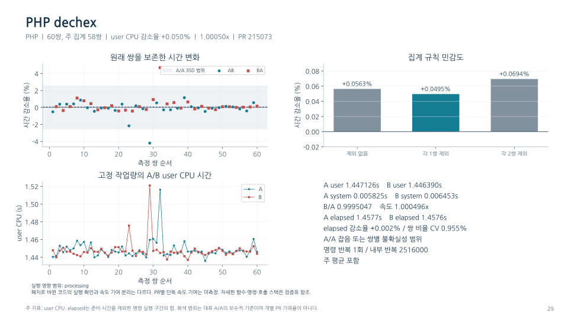
실행 영향 범위: processing
집계: 프로젝트 평균 포함 · 쌍 비율 CV 0.955% · B/A 0.9995047 · 배율 1.000496×
| 지표 | A | B |
|---|---|---|
| user CPU | 1.447126 s | 1.446390 s |
| system CPU | 0.005825 s | 0.006453 s |
| 명령 실행 elapsed | 1.457700 s | 1.457600 s |
| 각 꼬리에서 제외한 쌍 수 | user CPU 시간 감소율 |
|---|---|
| 0 | +0.0563% |
| 1 | +0.0495% |
| 2 | +0.0694% |
변경 함수에 관련된 PR
- 정지현 · PR #215073 · [Instcombine] Fold a zero-select hexadecimal digit count into ctlz(x | 1)
작성자 이름은 최종보고서로 대조한 PR에 표시했습니다. 관련 PR 목록은 단독 속도 기여율을 뜻하지 않습니다.
| 관련 PR | 함수 / 심벌 | 실행된 변경 명령 또는 확인 내용 |
|---|---|---|
| 215073 | zflf_dechex_1 | mov %r14,%rax |
| 215073 | zflf_dechex_1 | and $0xfffffff8,%edi |
검증 방식(원문): Single-PR native ablation and actual changed instruction step
검증 근거의 원래 파일 식별자
candidate-review-2x20/execution/correctness/native-probes/php-dechex.jsoncandidate-review-2x20/execution/correctness/php/correctness.jsoncandidate-review-2x20/execution/attribution/php-math/result.json
위 목록은 원래 검증표의 상대 경로입니다. 해당 경로를 사이트의 다운로드 링크로 표시하지 않았습니다. 공개한 쌍별·관측별 수치는 아래 자료 범위에서 받을 수 있습니다.
DuckDB
Fixed-seed reservoir sample of the existing events table
원시 쌍 재검토 · 2026-10-18
시간 감소 34/60쌍 · 시간 증가 26쌍 · 동일 0쌍. AB와 BA의 평균 방향이 다릅니다. 전반과 후반의 평균 방향이 다릅니다. 재표집 참고 구간에 0이 포함됩니다.
순서별 집계·집계 민감도·재표집 구간
- 원보고 감소율 · 각 꼬리 1쌍 제외
- +0.001%
- 전체 쌍 평균 · 제외 없음
- +0.012%
- AB / BA 평균
- +0.554% / −0.530%
- 전반 / 후반 평균
- −0.111% / +0.135%
- 양 끝 0 / 1 / 2쌍 제외
- +0.012% / +0.001% / +0.008%
- 연속 시간 구간별 평균
- −0.580% / −0.174% / +0.420% / −0.387% / +0.300% / +0.492%
- 재표집 참고 범위
- −0.571% ~ +0.596%
- 블록 길이별 95% 구간
- 2쌍: −0.571% ~ +0.596% · 4쌍: −0.531% ~ +0.549% · 6쌍: −0.493% ~ +0.533% · 10쌍: −0.373% ~ +0.462%
- elapsed 전체 쌍 평균 감소율 · 보조 지표
- +0.429%
모든 60쌍의 수치 보기 · 제외 없음
| 쌍 | 순서 | A user (초) | B user (초) | 감소율 | 원보고 주 집계 |
|---|---|---|---|---|---|
| 1 | AB | 1.089797 | 1.097770 | −0.732% | 포함 |
| 2 | BA | 1.107578 | 1.105805 | +0.160% | 포함 |
| 3 | AB | 1.089826 | 1.122253 | −2.975% | 포함 |
| 4 | BA | 1.086499 | 1.079312 | +0.661% | 포함 |
| 5 | AB | 1.121584 | 1.070151 | +4.586% | 포함 |
| 6 | BA | 1.074689 | 1.114902 | −3.742% | 포함 |
| 7 | AB | 1.089165 | 1.110954 | −2.001% | 포함 |
| 8 | BA | 1.076165 | 1.093431 | −1.604% | 포함 |
| 9 | AB | 1.092903 | 1.068447 | +2.238% | 포함 |
| 10 | BA | 1.071403 | 1.096994 | −2.389% | 포함 |
| 11 | AB | 1.086470 | 1.086706 | −0.022% | 포함 |
| 12 | BA | 1.086114 | 1.061806 | +2.238% | 포함 |
| 13 | AB | 1.051544 | 1.073432 | −2.082% | 포함 |
| 14 | BA | 1.090996 | 1.132183 | −3.775% | 포함 |
| 15 | AB | 1.092756 | 1.088945 | +0.349% | 포함 |
| 16 | BA | 1.115269 | 1.122446 | −0.644% | 포함 |
| 17 | AB | 1.129310 | 1.083885 | +4.022% | 포함 |
| 18 | BA | 1.103402 | 1.093735 | +0.876% | 포함 |
| 19 | AB | 1.079724 | 1.130384 | −4.692% | 포함 |
| 20 | BA | 1.088985 | 1.067341 | +1.988% | 포함 |
| 21 | AB | 1.145318 | 1.116365 | +2.528% | 포함 |
| 22 | BA | 1.165330 | 1.150389 | +1.282% | 포함 |
| 23 | AB | 1.140247 | 1.133077 | +0.629% | 포함 |
| 24 | BA | 1.118017 | 1.173609 | −4.972% | 포함 |
| 25 | AB | 1.126643 | 1.123320 | +0.295% | 포함 |
| 26 | BA | 1.120568 | 1.114397 | +0.551% | 포함 |
| 27 | AB | 1.151611 | 1.135720 | +1.380% | 포함 |
| 28 | BA | 1.108150 | 1.111084 | −0.265% | 포함 |
| 29 | AB | 1.151247 | 1.122392 | +2.506% | 포함 |
| 30 | BA | 1.103957 | 1.101031 | +0.265% | 포함 |
| 31 | AB | 1.127179 | 1.122097 | +0.451% | 포함 |
| 32 | BA | 1.108121 | 1.168252 | −5.426% | 꼬리 제외 |
| 33 | AB | 1.153446 | 1.155370 | −0.167% | 포함 |
| 34 | BA | 1.134822 | 1.172935 | −3.359% | 포함 |
| 35 | AB | 1.141249 | 1.138060 | +0.279% | 포함 |
| 36 | BA | 1.128861 | 1.165736 | −3.267% | 포함 |
| 37 | AB | 1.155594 | 1.085148 | +6.096% | 꼬리 제외 |
| 38 | BA | 1.137807 | 1.120974 | +1.479% | 포함 |
| 39 | AB | 1.151273 | 1.133012 | +1.586% | 포함 |
| 40 | BA | 1.094154 | 1.111060 | −1.545% | 포함 |
| 41 | AB | 1.113144 | 1.100059 | +1.175% | 포함 |
| 42 | BA | 1.110172 | 1.118341 | −0.736% | 포함 |
| 43 | AB | 1.111924 | 1.150858 | −3.501% | 포함 |
| 44 | BA | 1.115623 | 1.141783 | −2.345% | 포함 |
| 45 | AB | 1.144701 | 1.130274 | +1.260% | 포함 |
| 46 | BA | 1.101054 | 1.098348 | +0.246% | 포함 |
| 47 | AB | 1.167526 | 1.118772 | +4.176% | 포함 |
| 48 | BA | 1.140224 | 1.146471 | −0.548% | 포함 |
| 49 | AB | 1.118646 | 1.128630 | −0.893% | 포함 |
| 50 | BA | 1.149423 | 1.101536 | +4.166% | 포함 |
| 51 | AB | 1.129856 | 1.121930 | +0.702% | 포함 |
| 52 | BA | 1.167036 | 1.141670 | +2.174% | 포함 |
| 53 | AB | 1.117271 | 1.106002 | +1.009% | 포함 |
| 54 | BA | 1.131863 | 1.107988 | +2.109% | 포함 |
| 55 | AB | 1.145353 | 1.106059 | +3.431% | 포함 |
| 56 | BA | 1.105659 | 1.156224 | −4.573% | 포함 |
| 57 | AB | 1.126203 | 1.146299 | −1.784% | 포함 |
| 58 | BA | 1.129011 | 1.109621 | +1.717% | 포함 |
| 59 | AB | 1.142472 | 1.179448 | −3.236% | 포함 |
| 60 | BA | 1.144684 | 1.106125 | +3.369% | 포함 |
원보고 차트·측정 조건·실행된 변경·검증 기록
2026-10-16 당시 공통 기준의 판정: A/A 잡음 또는 쌍별 불확실성 범위
원래 판정과 차트 표기는 기록으로 보존했습니다. 위의 평균 방향은 2026-10-18 원시 쌍 재검토 결과입니다.
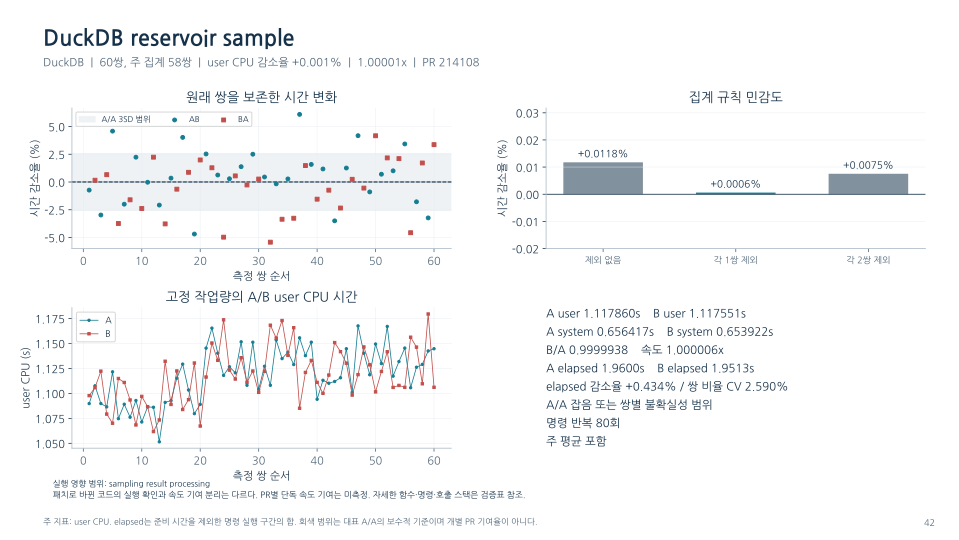
실행 영향 범위: sampling result processing
집계: 프로젝트 평균 포함 · 쌍 비율 CV 2.590% · B/A 0.9999938 · 배율 1.000006×
| 지표 | A | B |
|---|---|---|
| user CPU | 1.117860 s | 1.117551 s |
| system CPU | 0.656417 s | 0.653922 s |
| 명령 실행 elapsed | 1.960000 s | 1.951300 s |
| 각 꼬리에서 제외한 쌍 수 | user CPU 시간 감소율 |
|---|---|
| 0 | +0.0118% |
| 1 | +0.0006% |
| 2 | +0.0075% |
변경 함수에 관련된 PR
- 정하람 · PR #214108 · [InstCombine] Fold comparisons of llvm.usub.sat result with its LHS
작성자 이름은 최종보고서로 대조한 PR에 표시했습니다. 관련 PR 목록은 단독 속도 기여율을 뜻하지 않습니다.
| 관련 PR | 함수 / 심벌 | 실행된 변경 명령 또는 확인 내용 |
|---|---|---|
| 214108 | duckdb::ReservoirSample::GetChunk() | mov %rdi,%rbp |
| 214108 | duckdb::ReservoirSample::GetChunk() | mov 0x60(%rax),%r12 |
| 214108 | duckdb::ReservoirSample::GetChunk() | mov %rbp,0x30(%rsp) |
| 214108 | duckdb::ReservoirSample::GetChunk() | lea 0x0(,%r12,4),%rbx |
| 214108 | duckdb::ReservoirSample::GetChunk() | lea 0x0(,%rax,4),%eax |
| 214108 | duckdb::ReservoirSample::GetChunk() | mov %eax,(%rcx,%r14,4) |
| 214108 | duckdb::ReservoirSample::GetChunk() | lea 0x1(%rbp,%r14,1),%rax |
| 214108 | duckdb::ReservoirSample::GetChunk() | mov 0x30(%rsp),%rbp |
| 214108 | duckdb::ReservoirSample::GetChunk() | mov %rbx,%rcx |
| 214108 | duckdb::ReservoirSample::GetChunk() | mov %rbx,0x18(%rax) |
| 214108 | duckdb::ReservoirSample::GetChunk() | mov 0x48(%rsp),%rbx |
| 214108 | duckdb::ReservoirSample::GetChunk() | mov %rax,0x0(%rbp) |
| 214108 | duckdb::ReservoirSample::GetChunk() | cmp %rbx,%r14 |
| 214108 | duckdb::ReservoirSample::GetChunk() | mov 0x50(%r15),%r12 |
| 214108 | duckdb::ReservoirSample::GetChunk() | movq $0x0,0x0(%rbp) |
검증 방식(원문): Single-PR native ablation and actual changed instruction step
검증 근거의 원래 파일 식별자
candidate-review-2x20/execution/correctness/native-probes/duckdb-sample.jsoncandidate-review-2x20/execution/correctness/duckdb-extra/correctness.jsoncandidate-review-2x20/execution/attribution/duckdb-sample/result.json
위 목록은 원래 검증표의 상대 경로입니다. 해당 경로를 사이트의 다운로드 링크로 표시하지 않았습니다. 공개한 쌍별·관측별 수치는 아래 자료 범위에서 받을 수 있습니다.
QEMU
QCOW2 v3 to v2 compatibility conversion
원시 쌍 재검토 · 2026-10-18
시간 감소 31/60쌍 · 시간 증가 29쌍 · 동일 0쌍. AB와 BA의 평균 방향이 다릅니다. 전반과 후반의 평균 방향이 다릅니다. 재표집 참고 구간에 0이 포함됩니다.
순서별 집계·집계 민감도·재표집 구간
- 원보고 감소율 · 각 꼬리 1쌍 제외
- −0.028%
- 전체 쌍 평균 · 제외 없음
- −0.034%
- AB / BA 평균
- −0.157% / +0.089%
- 전반 / 후반 평균
- −0.190% / +0.121%
- 양 끝 0 / 1 / 2쌍 제외
- −0.034% / −0.028% / −0.030%
- 연속 시간 구간별 평균
- +0.884% / −0.088% / −1.365% / +0.156% / +0.302% / −0.095%
- 재표집 참고 범위
- −0.812% ~ +0.711%
- 블록 길이별 95% 구간
- 2쌍: −0.812% ~ +0.711% · 4쌍: −0.666% ~ +0.554% · 6쌍: −0.646% ~ +0.505% · 10쌍: −0.635% ~ +0.479%
- elapsed 전체 쌍 평균 감소율 · 보조 지표
- −0.437%
모든 60쌍의 수치 보기 · 제외 없음
| 쌍 | 순서 | A user (초) | B user (초) | 감소율 | 원보고 주 집계 |
|---|---|---|---|---|---|
| 1 | AB | 1.781059 | 1.816351 | −1.982% | 포함 |
| 2 | BA | 1.801912 | 1.747824 | +3.002% | 포함 |
| 3 | AB | 1.799180 | 1.785912 | +0.737% | 포함 |
| 4 | BA | 1.852299 | 1.735780 | +6.291% | 꼬리 제외 |
| 5 | AB | 1.728847 | 1.776244 | −2.742% | 포함 |
| 6 | BA | 1.714021 | 1.738760 | −1.443% | 포함 |
| 7 | AB | 1.765296 | 1.754657 | +0.603% | 포함 |
| 8 | BA | 1.815729 | 1.803519 | +0.672% | 포함 |
| 9 | AB | 1.778713 | 1.748009 | +1.726% | 포함 |
| 10 | BA | 1.757124 | 1.722482 | +1.972% | 포함 |
| 11 | AB | 1.785036 | 1.751065 | +1.903% | 포함 |
| 12 | BA | 1.756268 | 1.785796 | −1.681% | 포함 |
| 13 | AB | 1.795669 | 1.814555 | −1.052% | 포함 |
| 14 | BA | 1.717878 | 1.704119 | +0.801% | 포함 |
| 15 | AB | 1.801954 | 1.772567 | +1.631% | 포함 |
| 16 | BA | 1.776508 | 1.744781 | +1.786% | 포함 |
| 17 | AB | 1.723580 | 1.787394 | −3.702% | 포함 |
| 18 | BA | 1.747154 | 1.755321 | −0.467% | 포함 |
| 19 | AB | 1.781538 | 1.763840 | +0.993% | 포함 |
| 20 | BA | 1.742011 | 1.760938 | −1.087% | 포함 |
| 21 | AB | 1.633689 | 1.700990 | −4.120% | 포함 |
| 22 | BA | 1.592723 | 1.699925 | −6.731% | 꼬리 제외 |
| 23 | AB | 1.677328 | 1.663294 | +0.837% | 포함 |
| 24 | BA | 1.653422 | 1.675258 | −1.321% | 포함 |
| 25 | AB | 1.687198 | 1.598209 | +5.274% | 포함 |
| 26 | BA | 1.662501 | 1.698690 | −2.177% | 포함 |
| 27 | AB | 1.640342 | 1.727317 | −5.302% | 포함 |
| 28 | BA | 1.599862 | 1.645452 | −2.850% | 포함 |
| 29 | AB | 1.691357 | 1.617158 | +4.387% | 포함 |
| 30 | BA | 1.623097 | 1.649858 | −1.649% | 포함 |
| 31 | AB | 1.644700 | 1.689279 | −2.710% | 포함 |
| 32 | BA | 1.638267 | 1.660952 | −1.385% | 포함 |
| 33 | AB | 1.625134 | 1.656648 | −1.939% | 포함 |
| 34 | BA | 1.728505 | 1.652234 | +4.413% | 포함 |
| 35 | AB | 1.679031 | 1.621551 | +3.423% | 포함 |
| 36 | BA | 1.633411 | 1.672662 | −2.403% | 포함 |
| 37 | AB | 1.628891 | 1.668375 | −2.424% | 포함 |
| 38 | BA | 1.667581 | 1.635216 | +1.941% | 포함 |
| 39 | AB | 1.683947 | 1.654043 | +1.776% | 포함 |
| 40 | BA | 1.670662 | 1.656148 | +0.869% | 포함 |
| 41 | AB | 1.635969 | 1.635958 | +0.001% | 포함 |
| 42 | BA | 1.601282 | 1.682224 | −5.055% | 포함 |
| 43 | AB | 1.685351 | 1.645660 | +2.355% | 포함 |
| 44 | BA | 1.633486 | 1.623849 | +0.590% | 포함 |
| 45 | AB | 1.665489 | 1.634903 | +1.836% | 포함 |
| 46 | BA | 1.731957 | 1.652132 | +4.609% | 포함 |
| 47 | AB | 1.664146 | 1.696173 | −1.925% | 포함 |
| 48 | BA | 1.634674 | 1.624753 | +0.607% | 포함 |
| 49 | AB | 1.636736 | 1.653673 | −1.035% | 포함 |
| 50 | BA | 1.674365 | 1.656986 | +1.038% | 포함 |
| 51 | AB | 1.681274 | 1.742670 | −3.652% | 포함 |
| 52 | BA | 1.639229 | 1.701498 | −3.799% | 포함 |
| 53 | AB | 1.706449 | 1.614752 | +5.374% | 포함 |
| 54 | BA | 1.646154 | 1.598597 | +2.889% | 포함 |
| 55 | AB | 1.644309 | 1.669240 | −1.516% | 포함 |
| 56 | BA | 1.663383 | 1.669243 | −0.352% | 포함 |
| 57 | AB | 1.662401 | 1.697547 | −2.114% | 포함 |
| 58 | BA | 1.649142 | 1.611945 | +2.256% | 포함 |
| 59 | AB | 1.611821 | 1.633742 | −1.360% | 포함 |
| 60 | BA | 1.695259 | 1.672802 | +1.325% | 포함 |
원보고 차트·측정 조건·실행된 변경·검증 기록
2026-10-16 당시 공통 기준의 판정: A/A 잡음 또는 쌍별 불확실성 범위
원래 판정과 차트 표기는 기록으로 보존했습니다. 위의 평균 방향은 2026-10-18 원시 쌍 재검토 결과입니다.
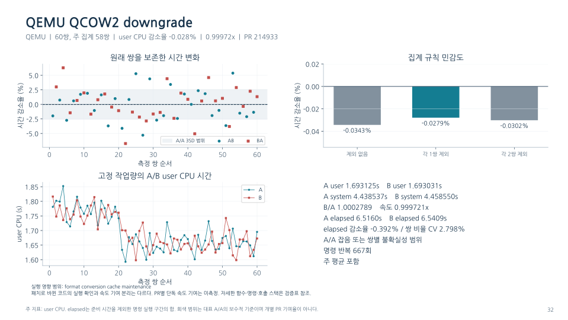
실행 영향 범위: format conversion cache maintenance
집계: 프로젝트 평균 포함 · 쌍 비율 CV 2.798% · B/A 1.0002789 · 배율 0.999721×
| 지표 | A | B |
|---|---|---|
| user CPU | 1.693125 s | 1.693031 s |
| system CPU | 4.438537 s | 4.458550 s |
| 명령 실행 elapsed | 6.516000 s | 6.540900 s |
| 각 꼬리에서 제외한 쌍 수 | user CPU 시간 감소율 |
|---|---|
| 0 | -0.0343% |
| 1 | -0.0279% |
| 2 | -0.0302% |
변경 함수에 관련된 PR
- 이하동 · PR #214933 · [InstCombine] Fold comparisons of urem with dividend
작성자 이름은 최종보고서로 대조한 PR에 표시했습니다. 관련 PR 목록은 단독 속도 기여율을 뜻하지 않습니다.
| 관련 PR | 함수 / 심벌 | 실행된 변경 명령 또는 확인 내용 |
|---|---|---|
| 214933 | qcow2_cache_empty | movslq 0x14(%rbx),%r14 |
| 214933 | qcow2_cache_empty | lea -0x1(%rdi,%r15,1),%rcx |
| 214933 | qcow2_cache_empty | add %r15,%rdx |
| 214933 | qcow2_cache_empty | mov %r14d,%eax |
| 214933 | qcow2_cache_empty | sub %rdx,%r14 |
| 214933 | qcow2_cache_empty | mov %r15,%rdi |
검증 방식(원문): Single-PR native ablation and actual changed instruction step
검증 근거의 원래 파일 식별자
candidate-review-2x20/execution/correctness/native-probes/qemu-compat-downgrade.jsoncandidate-review-2x20/execution/correctness/qemu/correctness.jsoncandidate-review-2x20/execution/attribution/qemu-qcow2-cache/result.json
위 목록은 원래 검증표의 상대 경로입니다. 해당 경로를 사이트의 다운로드 링크로 표시하지 않았습니다. 공개한 쌍별·관측별 수치는 아래 자료 범위에서 받을 수 있습니다.
OpenCV medianBlur
640x480-16SC1-k3
원시 쌍 재검토 · 2026-10-18
시간 감소 35/60쌍 · 시간 증가 25쌍 · 동일 0쌍. AB와 BA의 평균 방향이 다릅니다. 전반과 후반의 평균 방향이 다릅니다. 재표집 참고 구간에 0이 포함됩니다.
순서별 집계·집계 민감도·재표집 구간
- 원보고 감소율 · 각 꼬리 1쌍 제외
- −0.030%
- 전체 쌍 평균 · 제외 없음
- −0.033%
- AB / BA 평균
- +0.006% / −0.072%
- 전반 / 후반 평균
- −0.189% / +0.123%
- 양 끝 0 / 1 / 2쌍 제외
- −0.033% / −0.030% / −0.022%
- 연속 시간 구간별 평균
- −0.458% / −0.243% / +0.133% / +0.112% / +0.164% / +0.094%
- 재표집 참고 범위
- −0.225% ~ +0.134%
- 블록 길이별 95% 구간
- 2쌍: −0.178% ~ +0.104% · 4쌍: −0.189% ~ +0.118% · 6쌍: −0.206% ~ +0.134% · 10쌍: −0.225% ~ +0.134%
- elapsed 전체 쌍 평균 감소율 · 보조 지표
- +0.079%
모든 60쌍의 수치 보기 · 제외 없음
| 쌍 | 순서 | A user (초) | B user (초) | 감소율 | 원보고 주 집계 |
|---|---|---|---|---|---|
| 1 | AB | 1.400122 | 1.399362 | +0.054% | 포함 |
| 2 | BA | 1.396921 | 1.408419 | −0.823% | 포함 |
| 3 | AB | 1.393058 | 1.403729 | −0.766% | 포함 |
| 4 | BA | 1.399074 | 1.405588 | −0.466% | 포함 |
| 5 | AB | 1.393488 | 1.402327 | −0.634% | 포함 |
| 6 | BA | 1.401301 | 1.405073 | −0.269% | 포함 |
| 7 | AB | 1.400707 | 1.403561 | −0.204% | 포함 |
| 8 | BA | 1.387294 | 1.408246 | −1.510% | 꼬리 제외 |
| 9 | AB | 1.405798 | 1.400889 | +0.349% | 포함 |
| 10 | BA | 1.402809 | 1.407114 | −0.307% | 포함 |
| 11 | AB | 1.396801 | 1.414159 | −1.243% | 포함 |
| 12 | BA | 1.407252 | 1.405510 | +0.124% | 포함 |
| 13 | AB | 1.402221 | 1.398206 | +0.286% | 포함 |
| 14 | BA | 1.397098 | 1.399367 | −0.162% | 포함 |
| 15 | AB | 1.399413 | 1.401711 | −0.164% | 포함 |
| 16 | BA | 1.399098 | 1.404542 | −0.389% | 포함 |
| 17 | AB | 1.396525 | 1.403879 | −0.527% | 포함 |
| 18 | BA | 1.396666 | 1.403377 | −0.481% | 포함 |
| 19 | AB | 1.405201 | 1.397624 | +0.539% | 포함 |
| 20 | BA | 1.397826 | 1.403566 | −0.411% | 포함 |
| 21 | AB | 1.411365 | 1.401772 | +0.680% | 포함 |
| 22 | BA | 1.407706 | 1.404525 | +0.226% | 포함 |
| 23 | AB | 1.406538 | 1.402665 | +0.275% | 포함 |
| 24 | BA | 1.402881 | 1.400050 | +0.202% | 포함 |
| 25 | AB | 1.406200 | 1.395809 | +0.739% | 포함 |
| 26 | BA | 1.399608 | 1.399618 | −0.001% | 포함 |
| 27 | AB | 1.403683 | 1.400686 | +0.214% | 포함 |
| 28 | BA | 1.392814 | 1.402721 | −0.711% | 포함 |
| 29 | AB | 1.398636 | 1.396273 | +0.169% | 포함 |
| 30 | BA | 1.389840 | 1.396288 | −0.464% | 포함 |
| 31 | AB | 1.402512 | 1.399707 | +0.200% | 포함 |
| 32 | BA | 1.405630 | 1.400771 | +0.346% | 포함 |
| 33 | AB | 1.392766 | 1.403115 | −0.743% | 포함 |
| 34 | BA | 1.386207 | 1.402349 | −1.164% | 포함 |
| 35 | AB | 1.396183 | 1.395110 | +0.077% | 포함 |
| 36 | BA | 1.407271 | 1.399452 | +0.556% | 포함 |
| 37 | AB | 1.399709 | 1.399486 | +0.016% | 포함 |
| 38 | BA | 1.404734 | 1.399932 | +0.342% | 포함 |
| 39 | AB | 1.401047 | 1.398062 | +0.213% | 포함 |
| 40 | BA | 1.415561 | 1.397458 | +1.279% | 꼬리 제외 |
| 41 | AB | 1.405564 | 1.402944 | +0.186% | 포함 |
| 42 | BA | 1.405548 | 1.398638 | +0.492% | 포함 |
| 43 | AB | 1.399990 | 1.398512 | +0.106% | 포함 |
| 44 | BA | 1.396060 | 1.395872 | +0.013% | 포함 |
| 45 | AB | 1.393067 | 1.395127 | −0.148% | 포함 |
| 46 | BA | 1.396374 | 1.395358 | +0.073% | 포함 |
| 47 | AB | 1.393796 | 1.393819 | −0.002% | 포함 |
| 48 | BA | 1.397505 | 1.393150 | +0.312% | 포함 |
| 49 | AB | 1.400911 | 1.393529 | +0.527% | 포함 |
| 50 | BA | 1.404051 | 1.402908 | +0.081% | 포함 |
| 51 | AB | 1.388792 | 1.397144 | −0.601% | 포함 |
| 52 | BA | 1.395060 | 1.389012 | +0.434% | 포함 |
| 53 | AB | 1.401335 | 1.400790 | +0.039% | 포함 |
| 54 | BA | 1.400087 | 1.400212 | −0.009% | 포함 |
| 55 | AB | 1.405244 | 1.396930 | +0.592% | 포함 |
| 56 | BA | 1.399002 | 1.397010 | +0.142% | 포함 |
| 57 | AB | 1.401820 | 1.403998 | −0.155% | 포함 |
| 58 | BA | 1.401874 | 1.397641 | +0.302% | 포함 |
| 59 | AB | 1.399965 | 1.398451 | +0.108% | 포함 |
| 60 | BA | 1.404409 | 1.403210 | +0.085% | 포함 |
원보고 차트·측정 조건·실행된 변경·검증 기록
2026-10-16 당시 공통 기준의 판정: A/A 잡음 또는 쌍별 불확실성 범위
원래 판정과 차트 표기는 기록으로 보존했습니다. 위의 평균 방향은 2026-10-18 원시 쌍 재검토 결과입니다.
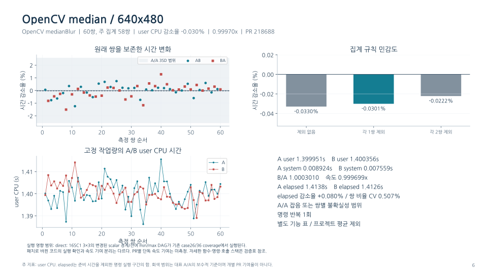
실행 영향 범위: direct: 16SC1 3×3의 변경된 scalar 경계/잔여 min/max DAG가 기존 case26/36 coverage에서 실행된다.
집계: 별도 기능 표 · 프로젝트 평균 제외 · 쌍 비율 CV 0.507% · B/A 1.0003010 · 배율 0.999699×
| 지표 | A | B |
|---|---|---|
| user CPU | 1.399951 s | 1.400356 s |
| system CPU | 0.008924 s | 0.007559 s |
| 명령 실행 elapsed | 1.413800 s | 1.412600 s |
| 각 꼬리에서 제외한 쌍 수 | user CPU 시간 감소율 |
|---|---|
| 0 | -0.0330% |
| 1 | -0.0301% |
| 2 | -0.0222% |
변경 함수에 관련된 PR
- PR #218688 · [InstCombine] Narrow signed min/max DAGs before truncation
작성자 이름은 최종보고서로 대조한 PR에 표시했습니다. 관련 PR 목록은 단독 속도 기여율을 뜻하지 않습니다.
| 관련 PR | 함수 / 심벌 | 실행된 변경 명령 또는 확인 내용 |
|---|---|---|
| 218688 | cv::opt_AVX2::medianBlur | 16SC1 3×3의 변경된 scalar 경계/잔여 min/max DAG가 기존 case26/36 coverage에서 실행된다. |
검증 방식(원문): Reused exact-binary execution audit; PR list relates to changed functions; joint influence stated where applicable
검증 근거의 원래 파일 식별자
expansion20/attribution/evidence/native-OpenCV.jsonexpansion20/attribution/evidence/audit-executed-entry-code.jsonresults/opencv-execution-evidence.jsonexpansion20/attribution/evidence/audit-opencv-narrowing-source-stacks.jsonexpansion20/attribution/evidence/audit-opencv-case-kernel-coverage.json
위 목록은 원래 검증표의 상대 경로입니다. 해당 경로를 사이트의 다운로드 링크로 표시하지 않았습니다. 공개한 쌍별·관측별 수치는 아래 자료 범위에서 받을 수 있습니다.
QEMU
QCOW2 copy-on-read of a real source archive payload
원시 쌍 재검토 · 2026-10-18
시간 감소 27/60쌍 · 시간 증가 33쌍 · 동일 0쌍. AB와 BA의 평균 방향이 다릅니다. 전반과 후반의 평균 방향이 다릅니다. 재표집 참고 구간에 0이 포함됩니다.
순서별 집계·집계 민감도·재표집 구간
- 원보고 감소율 · 각 꼬리 1쌍 제외
- −0.179%
- 전체 쌍 평균 · 제외 없음
- −0.194%
- AB / BA 평균
- +0.605% / −0.994%
- 전반 / 후반 평균
- −0.520% / +0.132%
- 양 끝 0 / 1 / 2쌍 제외
- −0.194% / −0.179% / −0.182%
- 연속 시간 구간별 평균
- +0.192% / −1.155% / −0.598% / +1.830% / −0.021% / −1.415%
- 재표집 참고 범위
- −0.970% ~ +0.686%
- 블록 길이별 95% 구간
- 2쌍: −0.837% ~ +0.452% · 4쌍: −0.938% ~ +0.549% · 6쌍: −0.947% ~ +0.582% · 10쌍: −0.970% ~ +0.686%
- elapsed 전체 쌍 평균 감소율 · 보조 지표
- +0.127%
모든 60쌍의 수치 보기 · 제외 없음
| 쌍 | 순서 | A user (초) | B user (초) | 감소율 | 원보고 주 집계 |
|---|---|---|---|---|---|
| 1 | AB | 1.435556 | 1.478130 | −2.966% | 포함 |
| 2 | BA | 1.467290 | 1.460121 | +0.489% | 포함 |
| 3 | AB | 1.468847 | 1.450257 | +1.266% | 포함 |
| 4 | BA | 1.513086 | 1.514151 | −0.070% | 포함 |
| 5 | AB | 1.495344 | 1.435266 | +4.018% | 포함 |
| 6 | BA | 1.468015 | 1.495807 | −1.893% | 포함 |
| 7 | AB | 1.470613 | 1.494435 | −1.620% | 포함 |
| 8 | BA | 1.478231 | 1.441000 | +2.519% | 포함 |
| 9 | AB | 1.486538 | 1.483386 | +0.212% | 포함 |
| 10 | BA | 1.484638 | 1.485187 | −0.037% | 포함 |
| 11 | AB | 1.400207 | 1.468908 | −4.906% | 포함 |
| 12 | BA | 1.518048 | 1.445174 | +4.801% | 꼬리 제외 |
| 13 | AB | 1.510876 | 1.491510 | +1.282% | 포함 |
| 14 | BA | 1.466424 | 1.522549 | −3.827% | 포함 |
| 15 | AB | 1.474078 | 1.462382 | +0.793% | 포함 |
| 16 | BA | 1.439667 | 1.472459 | −2.278% | 포함 |
| 17 | AB | 1.479736 | 1.439522 | +2.718% | 포함 |
| 18 | BA | 1.455363 | 1.508015 | −3.618% | 포함 |
| 19 | AB | 1.448690 | 1.482610 | −2.341% | 포함 |
| 20 | BA | 1.466159 | 1.527363 | −4.174% | 포함 |
| 21 | AB | 1.392375 | 1.417018 | −1.770% | 포함 |
| 22 | BA | 1.396171 | 1.441033 | −3.213% | 포함 |
| 23 | AB | 1.444550 | 1.430347 | +0.983% | 포함 |
| 24 | BA | 1.395287 | 1.437285 | −3.010% | 포함 |
| 25 | AB | 1.418349 | 1.423185 | −0.341% | 포함 |
| 26 | BA | 1.429614 | 1.404964 | +1.724% | 포함 |
| 27 | AB | 1.400406 | 1.356823 | +3.112% | 포함 |
| 28 | BA | 1.386984 | 1.414655 | −1.995% | 포함 |
| 29 | AB | 1.424245 | 1.377406 | +3.289% | 포함 |
| 30 | BA | 1.369039 | 1.434161 | −4.757% | 포함 |
| 31 | AB | 1.448515 | 1.387497 | +4.212% | 포함 |
| 32 | BA | 1.418901 | 1.376115 | +3.015% | 포함 |
| 33 | AB | 1.448176 | 1.394543 | +3.703% | 포함 |
| 34 | BA | 1.408492 | 1.363497 | +3.195% | 포함 |
| 35 | AB | 1.428083 | 1.416772 | +0.792% | 포함 |
| 36 | BA | 1.420993 | 1.427625 | −0.467% | 포함 |
| 37 | AB | 1.410838 | 1.366714 | +3.128% | 포함 |
| 38 | BA | 1.444273 | 1.423404 | +1.445% | 포함 |
| 39 | AB | 1.403551 | 1.403138 | +0.029% | 포함 |
| 40 | BA | 1.387811 | 1.398205 | −0.749% | 포함 |
| 41 | AB | 1.446136 | 1.414626 | +2.179% | 포함 |
| 42 | BA | 1.423796 | 1.400862 | +1.611% | 포함 |
| 43 | AB | 1.368562 | 1.409261 | −2.974% | 포함 |
| 44 | BA | 1.430456 | 1.382162 | +3.376% | 포함 |
| 45 | AB | 1.444635 | 1.397055 | +3.294% | 포함 |
| 46 | BA | 1.389214 | 1.473525 | −6.069% | 꼬리 제외 |
| 47 | AB | 1.415193 | 1.425694 | −0.742% | 포함 |
| 48 | BA | 1.414009 | 1.418383 | −0.309% | 포함 |
| 49 | AB | 1.399633 | 1.406237 | −0.472% | 포함 |
| 50 | BA | 1.411614 | 1.413027 | −0.100% | 포함 |
| 51 | AB | 1.371471 | 1.404805 | −2.431% | 포함 |
| 52 | BA | 1.365689 | 1.422126 | −4.132% | 포함 |
| 53 | AB | 1.428067 | 1.377964 | +3.508% | 포함 |
| 54 | BA | 1.401473 | 1.435537 | −2.431% | 포함 |
| 55 | AB | 1.444038 | 1.375767 | +4.728% | 포함 |
| 56 | BA | 1.415791 | 1.422474 | −0.472% | 포함 |
| 57 | AB | 1.421136 | 1.440237 | −1.344% | 포함 |
| 58 | BA | 1.424171 | 1.483007 | −4.131% | 포함 |
| 59 | AB | 1.411066 | 1.456127 | −3.193% | 포함 |
| 60 | BA | 1.399600 | 1.459130 | −4.253% | 포함 |
원보고 차트·측정 조건·실행된 변경·검증 기록
2026-10-16 당시 공통 기준의 판정: A/A 잡음 또는 쌍별 불확실성 범위
원래 판정과 차트 표기는 기록으로 보존했습니다. 위의 평균 방향은 2026-10-18 원시 쌍 재검토 결과입니다.
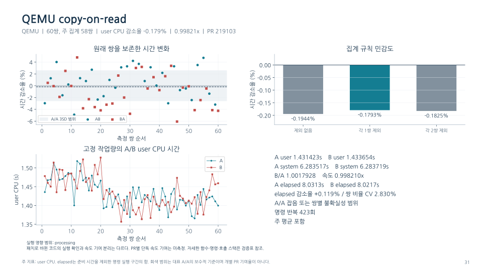
실행 영향 범위: processing
집계: 프로젝트 평균 포함 · 쌍 비율 CV 2.830% · B/A 1.0017928 · 배율 0.998210×
| 지표 | A | B |
|---|---|---|
| user CPU | 1.431423 s | 1.433654 s |
| system CPU | 6.283517 s | 6.283719 s |
| 명령 실행 elapsed | 8.031300 s | 8.021700 s |
| 각 꼬리에서 제외한 쌍 수 | user CPU 시간 감소율 |
|---|---|
| 0 | -0.1944% |
| 1 | -0.1793% |
| 2 | -0.1825% |
변경 함수에 관련된 PR
- 최진범 · PR #219103 · [ValueTracking] a u>= b and a = b + NonZero implies a != 0
작성자 이름은 최종보고서로 대조한 PR에 표시했습니다. 관련 PR 목록은 단독 속도 기여율을 뜻하지 않습니다.
| 관련 PR | 함수 / 심벌 | 실행된 변경 명령 또는 확인 내용 |
|---|---|---|
| 219103 | bdrv_co_do_copy_on_readv | mov $0x7ffffe00,%ebp |
| 219103 | bdrv_co_do_copy_on_readv | mov %rsi,%r14 |
| 219103 | bdrv_co_do_copy_on_readv | mov 0x10(%r13),%rbx |
| 219103 | bdrv_co_do_copy_on_readv | cmovb %eax,%ebp |
| 219103 | bdrv_co_do_copy_on_readv | cmove %edx,%ebp |
| 219103 | bdrv_co_do_copy_on_readv | test %rbx,%rbx |
| 219103 | bdrv_co_do_copy_on_readv | mov %rbx,0x40(%rsp) |
| 219103 | bdrv_co_do_copy_on_readv | mov %r14,%r12 |
| 219103 | bdrv_co_do_copy_on_readv | mov %r14,%rax |
| 219103 | bdrv_co_do_copy_on_readv | mov %r14d,%eax |
| 219103 | bdrv_co_do_copy_on_readv | cmp $0x1000000,%ebp |
| 219103 | bdrv_co_do_copy_on_readv | mov %r14,0x48(%rsp) |
| 219103 | bdrv_co_do_copy_on_readv | mov %rax,0x50(%rsp) |
| 219103 | bdrv_co_do_copy_on_readv | mov %rbp,0x58(%rsp) |
| 219103 | bdrv_co_do_copy_on_readv | mov 0x50(%rsp),%rcx |
검증 방식(원문): Single-PR native ablation and actual changed instruction step
검증 근거의 원래 파일 식별자
candidate-review-2x20/execution/correctness/native-probes/qemu-copy-on-read.jsoncandidate-review-2x20/execution/correctness/qemu/correctness.jsoncandidate-review-2x20/execution/attribution/qemu-copy-on-read/result.json
위 목록은 원래 검증표의 상대 경로입니다. 해당 경로를 사이트의 다운로드 링크로 표시하지 않았습니다. 공개한 쌍별·관측별 수치는 아래 자료 범위에서 받을 수 있습니다.
OpenCV medianBlur
1280x720-16SC1-k3
원시 쌍 재검토 · 2026-10-18
시간 감소 15/60쌍 · 시간 증가 45쌍 · 동일 0쌍. 실행 순서·전후반·꼬리 제외 수와 참고 구간에서 평균 방향이 유지됐습니다.
순서별 집계·집계 민감도·재표집 구간
- 원보고 감소율 · 각 꼬리 1쌍 제외
- −0.184%
- 전체 쌍 평균 · 제외 없음
- −0.182%
- AB / BA 평균
- −0.218% / −0.145%
- 전반 / 후반 평균
- −0.142% / −0.221%
- 양 끝 0 / 1 / 2쌍 제외
- −0.182% / −0.184% / −0.182%
- 연속 시간 구간별 평균
- −0.203% / −0.201% / −0.021% / −0.197% / −0.201% / −0.267%
- 재표집 참고 범위
- −0.239% ~ −0.116%
- 블록 길이별 95% 구간
- 2쌍: −0.239% ~ −0.116% · 4쌍: −0.230% ~ −0.129% · 6쌍: −0.231% ~ −0.130% · 10쌍: −0.229% ~ −0.128%
- elapsed 전체 쌍 평균 감소율 · 보조 지표
- −0.158%
모든 60쌍의 수치 보기 · 제외 없음
| 쌍 | 순서 | A user (초) | B user (초) | 감소율 | 원보고 주 집계 |
|---|---|---|---|---|---|
| 1 | AB | 1.846588 | 1.848255 | −0.090% | 포함 |
| 2 | BA | 1.841403 | 1.845786 | −0.238% | 포함 |
| 3 | AB | 1.842838 | 1.848847 | −0.326% | 포함 |
| 4 | BA | 1.842694 | 1.841570 | +0.061% | 포함 |
| 5 | AB | 1.842675 | 1.855809 | −0.713% | 포함 |
| 6 | BA | 1.838512 | 1.837700 | +0.044% | 포함 |
| 7 | AB | 1.844039 | 1.850681 | −0.360% | 포함 |
| 8 | BA | 1.846989 | 1.848508 | −0.082% | 포함 |
| 9 | AB | 1.843870 | 1.843927 | −0.003% | 포함 |
| 10 | BA | 1.840827 | 1.846700 | −0.319% | 포함 |
| 11 | AB | 1.842344 | 1.848720 | −0.346% | 포함 |
| 12 | BA | 1.843522 | 1.847809 | −0.233% | 포함 |
| 13 | AB | 1.845822 | 1.848095 | −0.123% | 포함 |
| 14 | BA | 1.844023 | 1.848306 | −0.232% | 포함 |
| 15 | AB | 1.847511 | 1.850788 | −0.177% | 포함 |
| 16 | BA | 1.844657 | 1.842322 | +0.127% | 포함 |
| 17 | AB | 1.847013 | 1.844599 | +0.131% | 포함 |
| 18 | BA | 1.846742 | 1.853879 | −0.386% | 포함 |
| 19 | AB | 1.845238 | 1.844507 | +0.040% | 포함 |
| 20 | BA | 1.835519 | 1.850379 | −0.810% | 꼬리 제외 |
| 21 | AB | 1.842926 | 1.838541 | +0.238% | 포함 |
| 22 | BA | 1.846418 | 1.835296 | +0.602% | 꼬리 제외 |
| 23 | AB | 1.844562 | 1.852739 | −0.443% | 포함 |
| 24 | BA | 1.844982 | 1.846447 | −0.079% | 포함 |
| 25 | AB | 1.843119 | 1.850034 | −0.375% | 포함 |
| 26 | BA | 1.848455 | 1.845276 | +0.172% | 포함 |
| 27 | AB | 1.849999 | 1.853378 | −0.183% | 포함 |
| 28 | BA | 1.846864 | 1.848471 | −0.087% | 포함 |
| 29 | AB | 1.846365 | 1.848707 | −0.127% | 포함 |
| 30 | BA | 1.853114 | 1.851829 | +0.069% | 포함 |
| 31 | AB | 1.848153 | 1.852321 | −0.226% | 포함 |
| 32 | BA | 1.850168 | 1.858179 | −0.433% | 포함 |
| 33 | AB | 1.846684 | 1.850908 | −0.229% | 포함 |
| 34 | BA | 1.848344 | 1.843864 | +0.242% | 포함 |
| 35 | AB | 1.835679 | 1.845292 | −0.524% | 포함 |
| 36 | BA | 1.848145 | 1.851371 | −0.175% | 포함 |
| 37 | AB | 1.848664 | 1.851479 | −0.152% | 포함 |
| 38 | BA | 1.848661 | 1.848471 | +0.010% | 포함 |
| 39 | AB | 1.846103 | 1.854456 | −0.452% | 포함 |
| 40 | BA | 1.847383 | 1.847945 | −0.030% | 포함 |
| 41 | AB | 1.847066 | 1.850212 | −0.170% | 포함 |
| 42 | BA | 1.843779 | 1.851819 | −0.436% | 포함 |
| 43 | AB | 1.848646 | 1.848434 | +0.011% | 포함 |
| 44 | BA | 1.842342 | 1.853954 | −0.630% | 포함 |
| 45 | AB | 1.845059 | 1.846172 | −0.060% | 포함 |
| 46 | BA | 1.843101 | 1.852307 | −0.499% | 포함 |
| 47 | AB | 1.850286 | 1.845759 | +0.245% | 포함 |
| 48 | BA | 1.845774 | 1.847494 | −0.093% | 포함 |
| 49 | AB | 1.844083 | 1.853648 | −0.519% | 포함 |
| 50 | BA | 1.848392 | 1.845757 | +0.143% | 포함 |
| 51 | AB | 1.849709 | 1.855348 | −0.305% | 포함 |
| 52 | BA | 1.847462 | 1.854154 | −0.362% | 포함 |
| 53 | AB | 1.846427 | 1.858297 | −0.643% | 포함 |
| 54 | BA | 1.850628 | 1.854323 | −0.200% | 포함 |
| 55 | AB | 1.851502 | 1.855574 | −0.220% | 포함 |
| 56 | BA | 1.850590 | 1.853369 | −0.150% | 포함 |
| 57 | AB | 1.844802 | 1.850535 | −0.311% | 포함 |
| 58 | BA | 1.845794 | 1.854349 | −0.463% | 포함 |
| 59 | AB | 1.847791 | 1.850280 | −0.135% | 포함 |
| 60 | BA | 1.846326 | 1.844079 | +0.122% | 포함 |
원보고 차트·측정 조건·실행된 변경·검증 기록
2026-10-16 당시 공통 기준의 판정: A/A 잡음 또는 쌍별 불확실성 범위
원래 판정과 차트 표기는 기록으로 보존했습니다. 위의 평균 방향은 2026-10-18 원시 쌍 재검토 결과입니다.
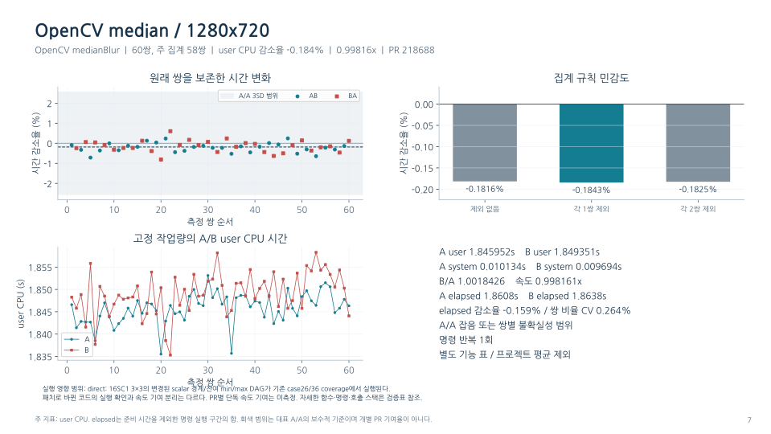
실행 영향 범위: direct: 16SC1 3×3의 변경된 scalar 경계/잔여 min/max DAG가 기존 case26/36 coverage에서 실행된다.
집계: 별도 기능 표 · 프로젝트 평균 제외 · 쌍 비율 CV 0.264% · B/A 1.0018426 · 배율 0.998161×
| 지표 | A | B |
|---|---|---|
| user CPU | 1.845952 s | 1.849351 s |
| system CPU | 0.010134 s | 0.009694 s |
| 명령 실행 elapsed | 1.860800 s | 1.863800 s |
| 각 꼬리에서 제외한 쌍 수 | user CPU 시간 감소율 |
|---|---|
| 0 | -0.1816% |
| 1 | -0.1843% |
| 2 | -0.1825% |
변경 함수에 관련된 PR
- PR #218688 · [InstCombine] Narrow signed min/max DAGs before truncation
작성자 이름은 최종보고서로 대조한 PR에 표시했습니다. 관련 PR 목록은 단독 속도 기여율을 뜻하지 않습니다.
| 관련 PR | 함수 / 심벌 | 실행된 변경 명령 또는 확인 내용 |
|---|---|---|
| 218688 | cv::opt_AVX2::medianBlur | 16SC1 3×3의 변경된 scalar 경계/잔여 min/max DAG가 기존 case26/36 coverage에서 실행된다. |
검증 방식(원문): Reused exact-binary execution audit; PR list relates to changed functions; joint influence stated where applicable
검증 근거의 원래 파일 식별자
expansion20/attribution/evidence/native-OpenCV.jsonexpansion20/attribution/evidence/audit-executed-entry-code.jsonresults/opencv-execution-evidence.jsonexpansion20/attribution/evidence/audit-opencv-narrowing-source-stacks.jsonexpansion20/attribution/evidence/audit-opencv-case-kernel-coverage.json
위 목록은 원래 검증표의 상대 경로입니다. 해당 경로를 사이트의 다운로드 링크로 표시하지 않았습니다. 공개한 쌍별·관측별 수치는 아래 자료 범위에서 받을 수 있습니다.
uutils
Base32 encoding of official source archive
원시 쌍 재검토 · 2026-10-18
시간 감소 28/60쌍 · 시간 증가 32쌍 · 동일 0쌍. AB와 BA의 평균 방향이 다릅니다. 재표집 참고 구간에 0이 포함됩니다.
순서별 집계·집계 민감도·재표집 구간
- 원보고 감소율 · 각 꼬리 1쌍 제외
- −0.264%
- 전체 쌍 평균 · 제외 없음
- −0.228%
- AB / BA 평균
- −0.955% / +0.499%
- 전반 / 후반 평균
- −0.131% / −0.324%
- 양 끝 0 / 1 / 2쌍 제외
- −0.228% / −0.264% / −0.278%
- 연속 시간 구간별 평균
- −0.282% / −0.863% / +0.751% / −0.274% / −0.766% / +0.067%
- 재표집 참고 범위
- −0.814% ~ +0.372%
- 블록 길이별 95% 구간
- 2쌍: −0.814% ~ +0.372% · 4쌍: −0.741% ~ +0.285% · 6쌍: −0.726% ~ +0.338% · 10쌍: −0.707% ~ +0.332%
- elapsed 전체 쌍 평균 감소율 · 보조 지표
- +0.076%
모든 60쌍의 수치 보기 · 제외 없음
| 쌍 | 순서 | A user (초) | B user (초) | 감소율 | 원보고 주 집계 |
|---|---|---|---|---|---|
| 1 | AB | 1.193857 | 1.248421 | −4.570% | 포함 |
| 2 | BA | 1.252958 | 1.191653 | +4.893% | 포함 |
| 3 | AB | 1.218679 | 1.202705 | +1.311% | 포함 |
| 4 | BA | 1.218093 | 1.213148 | +0.406% | 포함 |
| 5 | AB | 1.213611 | 1.230095 | −1.358% | 포함 |
| 6 | BA | 1.237418 | 1.228860 | +0.692% | 포함 |
| 7 | AB | 1.158915 | 1.221926 | −5.437% | 꼬리 제외 |
| 8 | BA | 1.217861 | 1.238186 | −1.669% | 포함 |
| 9 | AB | 1.226286 | 1.207075 | +1.567% | 포함 |
| 10 | BA | 1.205817 | 1.189576 | +1.347% | 포함 |
| 11 | AB | 1.249342 | 1.258104 | −0.701% | 포함 |
| 12 | BA | 1.215668 | 1.214357 | +0.108% | 포함 |
| 13 | AB | 1.207500 | 1.220487 | −1.076% | 포함 |
| 14 | BA | 1.206341 | 1.218801 | −1.033% | 포함 |
| 15 | AB | 1.181484 | 1.211490 | −2.540% | 포함 |
| 16 | BA | 1.209872 | 1.206965 | +0.240% | 포함 |
| 17 | AB | 1.187574 | 1.203061 | −1.304% | 포함 |
| 18 | BA | 1.189414 | 1.204697 | −1.285% | 포함 |
| 19 | AB | 1.188879 | 1.217286 | −2.389% | 포함 |
| 20 | BA | 1.218684 | 1.202219 | +1.351% | 포함 |
| 21 | AB | 1.166623 | 1.206541 | −3.422% | 포함 |
| 22 | BA | 1.174759 | 1.147617 | +2.310% | 포함 |
| 23 | AB | 1.169694 | 1.203875 | −2.922% | 포함 |
| 24 | BA | 1.184457 | 1.203519 | −1.609% | 포함 |
| 25 | AB | 1.236101 | 1.148851 | +7.058% | 꼬리 제외 |
| 26 | BA | 1.195803 | 1.190571 | +0.438% | 포함 |
| 27 | AB | 1.163053 | 1.177923 | −1.279% | 포함 |
| 28 | BA | 1.211063 | 1.206445 | +0.381% | 포함 |
| 29 | AB | 1.208445 | 1.177083 | +2.595% | 포함 |
| 30 | BA | 1.192379 | 1.145210 | +3.956% | 포함 |
| 31 | AB | 1.206794 | 1.194437 | +1.024% | 포함 |
| 32 | BA | 1.195410 | 1.212665 | −1.443% | 포함 |
| 33 | AB | 1.198050 | 1.181560 | +1.376% | 포함 |
| 34 | BA | 1.204749 | 1.177485 | +2.263% | 포함 |
| 35 | AB | 1.167148 | 1.196708 | −2.533% | 포함 |
| 36 | BA | 1.172440 | 1.191465 | −1.623% | 포함 |
| 37 | AB | 1.187030 | 1.219661 | −2.749% | 포함 |
| 38 | BA | 1.193157 | 1.184531 | +0.723% | 포함 |
| 39 | AB | 1.165597 | 1.195622 | −2.576% | 포함 |
| 40 | BA | 1.186300 | 1.153077 | +2.801% | 포함 |
| 41 | AB | 1.192214 | 1.187474 | +0.398% | 포함 |
| 42 | BA | 1.181424 | 1.173243 | +0.692% | 포함 |
| 43 | AB | 1.159053 | 1.185623 | −2.292% | 포함 |
| 44 | BA | 1.158028 | 1.170197 | −1.051% | 포함 |
| 45 | AB | 1.157936 | 1.164029 | −0.526% | 포함 |
| 46 | BA | 1.182863 | 1.193001 | −0.857% | 포함 |
| 47 | AB | 1.148072 | 1.201204 | −4.628% | 포함 |
| 48 | BA | 1.186121 | 1.222379 | −3.057% | 포함 |
| 49 | AB | 1.188110 | 1.187256 | +0.072% | 포함 |
| 50 | BA | 1.194583 | 1.151657 | +3.593% | 포함 |
| 51 | AB | 1.197438 | 1.198026 | −0.049% | 포함 |
| 52 | BA | 1.182023 | 1.179047 | +0.252% | 포함 |
| 53 | AB | 1.169746 | 1.178576 | −0.755% | 포함 |
| 54 | BA | 1.177789 | 1.184884 | −0.602% | 포함 |
| 55 | AB | 1.178764 | 1.190342 | −0.982% | 포함 |
| 56 | BA | 1.185298 | 1.164939 | +1.718% | 포함 |
| 57 | AB | 1.179759 | 1.189547 | −0.830% | 포함 |
| 58 | BA | 1.224976 | 1.179466 | +3.715% | 포함 |
| 59 | AB | 1.201310 | 1.190790 | +0.876% | 포함 |
| 60 | BA | 1.170817 | 1.202121 | −2.674% | 포함 |
원보고 차트·측정 조건·실행된 변경·검증 기록
2026-10-16 당시 공통 기준의 판정: A/A 잡음 또는 쌍별 불확실성 범위
원래 판정과 차트 표기는 기록으로 보존했습니다. 위의 평균 방향은 2026-10-18 원시 쌍 재검토 결과입니다.
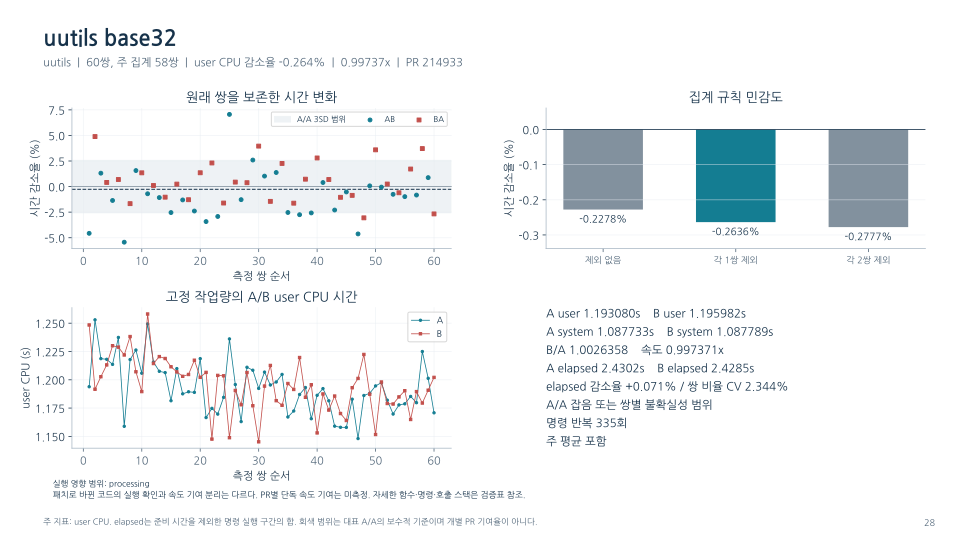
실행 영향 범위: processing
집계: 프로젝트 평균 포함 · 쌍 비율 CV 2.344% · B/A 1.0026358 · 배율 0.997371×
| 지표 | A | B |
|---|---|---|
| user CPU | 1.193080 s | 1.195982 s |
| system CPU | 1.087733 s | 1.087789 s |
| 명령 실행 elapsed | 2.430200 s | 2.428500 s |
| 각 꼬리에서 제외한 쌍 수 | user CPU 시간 감소율 |
|---|---|
| 0 | -0.2278% |
| 1 | -0.2636% |
| 2 | -0.2777% |
변경 함수에 관련된 PR
- 이하동 · PR #214933 · [InstCombine] Fold comparisons of urem with dividend
작성자 이름은 최종보고서로 대조한 PR에 표시했습니다. 관련 PR 목록은 단독 속도 기여율을 뜻하지 않습니다.
| 관련 PR | 함수 / 심벌 | 실행된 변경 명령 또는 확인 내용 |
|---|---|---|
| 214933 | uu_base32::base_common::fast_encode::fast_encode_stream::h43bbe1566bd24f34 | cmpq $0x0,0x148(%rsp) |
| 214933 | uu_base32::base_common::fast_encode::fast_encode_stream::h43bbe1566bd24f34 | mov 0x38(%rbx),%rax |
| 214933 | uu_base32::base_common::fast_encode::fast_encode_stream::h43bbe1566bd24f34 | mov %rax,0x58(%rsp) |
| 214933 | uu_base32::base_common::fast_encode::fast_encode_stream::h43bbe1566bd24f34 | movzbl %r12b,%ecx |
| 214933 | uu_base32::base_common::fast_encode::fast_encode_stream::h43bbe1566bd24f34 | mov %ecx,0x34(%rsp) |
| 214933 | uu_base32::base_common::fast_encode::fast_encode_stream::h43bbe1566bd24f34 | mov %rdx,0x8(%rsp) |
| 214933 | uu_base32::base_common::fast_encode::fast_encode_stream::h43bbe1566bd24f34 | xor %edx,%edx |
| 214933 | uu_base32::base_common::fast_encode::fast_encode_stream::h43bbe1566bd24f34 | mov %r14,%rcx |
| 214933 | uu_base32::base_common::fast_encode::fast_encode_stream::h43bbe1566bd24f34 | mov %ecx,%eax |
| 214933 | uu_base32::base_common::fast_encode::fast_encode_stream::h43bbe1566bd24f34 | cmp %r15,%rcx |
| 214933 | uu_base32::base_common::fast_encode::fast_encode_stream::h43bbe1566bd24f34 | mov %rcx,%rax |
| 214933 | uu_base32::base_common::fast_encode::fast_encode_stream::h43bbe1566bd24f34 | mov %rcx,%r12 |
| 214933 | uu_base32::base_common::fast_encode::fast_encode_stream::h43bbe1566bd24f34 | mov 0x48(%rsp),%rsi |
| 214933 | uu_base32::base_common::fast_encode::fast_encode_stream::h43bbe1566bd24f34 | mov 0x8(%rsp),%rdx |
| 214933 | uu_base32::base_common::fast_encode::fast_encode_stream::h43bbe1566bd24f34 | mov 0x18(%rsp),%rdx |
| 214933 | uu_base32::base_common::fast_encode::fast_encode_stream::h43bbe1566bd24f34 | mov %rax,%rdi |
| 214933 | uu_base32::base_common::fast_encode::fast_encode_stream::h43bbe1566bd24f34 | sub %rdi,%rdx |
| 214933 | uu_base32::base_common::fast_encode::fast_encode_stream::h43bbe1566bd24f34 | cmp %rdx,%rcx |
| 214933 | uu_base32::base_common::fast_encode::fast_encode_stream::h43bbe1566bd24f34 | lea (%rbx,%r13,1),%rdi |
| 214933 | uu_base32::base_common::fast_encode::fast_encode_stream::h43bbe1566bd24f34 | mov 0x10(%rsp),%rdx |
| 214933 | uu_base32::base_common::fast_encode::fast_encode_stream::h43bbe1566bd24f34 | add %rdx,%r13 |
검증 방식(원문): Single-PR native ablation and actual changed instruction step
검증 근거의 원래 파일 식별자
candidate-review-2x20/execution/correctness/native-probes/uutils-base32.jsoncandidate-review-2x20/execution/correctness/uutils-nightly/correctness.jsoncandidate-review-2x20/execution/manifests/uutils-nightly-native-ablation.json
위 목록은 원래 검증표의 상대 경로입니다. 해당 경로를 사이트의 다운로드 링크로 표시하지 않았습니다. 공개한 쌍별·관측별 수치는 아래 자료 범위에서 받을 수 있습니다.
GMP
16 deterministic integers, 1024 bits
원시 쌍 재검토 · 2026-10-18
시간 감소 13/60쌍 · 시간 증가 47쌍 · 동일 0쌍. 실행 순서·전후반·꼬리 제외 수와 참고 구간에서 평균 방향이 유지됐습니다.
순서별 집계·집계 민감도·재표집 구간
- 원보고 감소율 · 각 꼬리 1쌍 제외
- −0.300%
- 전체 쌍 평균 · 제외 없음
- −0.321%
- AB / BA 평균
- −0.370% / −0.272%
- 전반 / 후반 평균
- −0.402% / −0.240%
- 양 끝 0 / 1 / 2쌍 제외
- −0.321% / −0.300% / −0.285%
- 연속 시간 구간별 평균
- −0.592% / −0.283% / −0.331% / −0.265% / −0.209% / −0.246%
- 재표집 참고 범위
- −0.474% ~ −0.188%
- 블록 길이별 95% 구간
- 2쌍: −0.474% ~ −0.188% · 4쌍: −0.456% ~ −0.204% · 6쌍: −0.436% ~ −0.217% · 10쌍: −0.444% ~ −0.228%
- elapsed 전체 쌍 평균 감소율 · 보조 지표
- −0.349%
모든 60쌍의 수치 보기 · 제외 없음
| 쌍 | 순서 | A user (초) | B user (초) | 감소율 | 원보고 주 집계 |
|---|---|---|---|---|---|
| 1 | AB | 1.680544 | 1.726803 | −2.753% | 꼬리 제외 |
| 2 | BA | 1.676259 | 1.686730 | −0.625% | 포함 |
| 3 | AB | 1.672406 | 1.680355 | −0.475% | 포함 |
| 4 | BA | 1.681819 | 1.687701 | −0.350% | 포함 |
| 5 | AB | 1.685362 | 1.686395 | −0.061% | 포함 |
| 6 | BA | 1.689300 | 1.687567 | +0.103% | 포함 |
| 7 | AB | 1.682702 | 1.680225 | +0.147% | 포함 |
| 8 | BA | 1.679102 | 1.682081 | −0.177% | 포함 |
| 9 | AB | 1.677557 | 1.687816 | −0.612% | 포함 |
| 10 | BA | 1.671767 | 1.690405 | −1.115% | 포함 |
| 11 | AB | 1.681509 | 1.688499 | −0.416% | 포함 |
| 12 | BA | 1.679500 | 1.684205 | −0.280% | 포함 |
| 13 | AB | 1.684913 | 1.698844 | −0.827% | 포함 |
| 14 | BA | 1.684285 | 1.676940 | +0.436% | 포함 |
| 15 | AB | 1.675235 | 1.679962 | −0.282% | 포함 |
| 16 | BA | 1.674077 | 1.684484 | −0.622% | 포함 |
| 17 | AB | 1.685260 | 1.692520 | −0.431% | 포함 |
| 18 | BA | 1.683229 | 1.681745 | +0.088% | 포함 |
| 19 | AB | 1.676342 | 1.681460 | −0.305% | 포함 |
| 20 | BA | 1.675460 | 1.678628 | −0.189% | 포함 |
| 21 | AB | 1.694487 | 1.701854 | −0.435% | 포함 |
| 22 | BA | 1.693416 | 1.695173 | −0.104% | 포함 |
| 23 | AB | 1.691830 | 1.701506 | −0.572% | 포함 |
| 24 | BA | 1.695296 | 1.690330 | +0.293% | 포함 |
| 25 | AB | 1.697429 | 1.698911 | −0.087% | 포함 |
| 26 | BA | 1.694245 | 1.708164 | −0.822% | 포함 |
| 27 | AB | 1.699105 | 1.701450 | −0.138% | 포함 |
| 28 | BA | 1.690523 | 1.699211 | −0.514% | 포함 |
| 29 | AB | 1.708370 | 1.701546 | +0.399% | 포함 |
| 30 | BA | 1.694118 | 1.716689 | −1.332% | 포함 |
| 31 | AB | 1.694121 | 1.696670 | −0.150% | 포함 |
| 32 | BA | 1.692844 | 1.695405 | −0.151% | 포함 |
| 33 | AB | 1.693038 | 1.686587 | +0.381% | 포함 |
| 34 | BA | 1.696246 | 1.709975 | −0.809% | 포함 |
| 35 | AB | 1.693728 | 1.697323 | −0.212% | 포함 |
| 36 | BA | 1.695520 | 1.694559 | +0.057% | 포함 |
| 37 | AB | 1.693139 | 1.703334 | −0.602% | 포함 |
| 38 | BA | 1.687107 | 1.700171 | −0.774% | 포함 |
| 39 | AB | 1.697465 | 1.698703 | −0.073% | 포함 |
| 40 | BA | 1.696225 | 1.701557 | −0.314% | 포함 |
| 41 | AB | 1.693554 | 1.700103 | −0.387% | 포함 |
| 42 | BA | 1.695152 | 1.706063 | −0.644% | 포함 |
| 43 | AB | 1.703309 | 1.687803 | +0.910% | 꼬리 제외 |
| 44 | BA | 1.696600 | 1.697897 | −0.076% | 포함 |
| 45 | AB | 1.690595 | 1.705096 | −0.858% | 포함 |
| 46 | BA | 1.691863 | 1.693253 | −0.082% | 포함 |
| 47 | AB | 1.697994 | 1.701486 | −0.206% | 포함 |
| 48 | BA | 1.696743 | 1.699509 | −0.163% | 포함 |
| 49 | AB | 1.688857 | 1.702449 | −0.805% | 포함 |
| 50 | BA | 1.694734 | 1.691070 | +0.216% | 포함 |
| 51 | AB | 1.697510 | 1.701620 | −0.242% | 포함 |
| 52 | BA | 1.701810 | 1.693477 | +0.490% | 포함 |
| 53 | AB | 1.693406 | 1.684339 | +0.535% | 포함 |
| 54 | BA | 1.696993 | 1.698926 | −0.114% | 포함 |
| 55 | AB | 1.689097 | 1.722941 | −2.004% | 포함 |
| 56 | BA | 1.696499 | 1.701018 | −0.266% | 포함 |
| 57 | AB | 1.696791 | 1.699003 | −0.130% | 포함 |
| 58 | BA | 1.696011 | 1.702574 | −0.387% | 포함 |
| 59 | AB | 1.696918 | 1.703930 | −0.413% | 포함 |
| 60 | BA | 1.695297 | 1.694001 | +0.076% | 포함 |
원보고 차트·측정 조건·실행된 변경·검증 기록
2026-10-16 당시 공통 기준의 판정: A/A 잡음 또는 쌍별 불확실성 범위
원래 판정과 차트 표기는 기록으로 보존했습니다. 위의 평균 방향은 2026-10-18 원시 쌍 재검토 결과입니다.
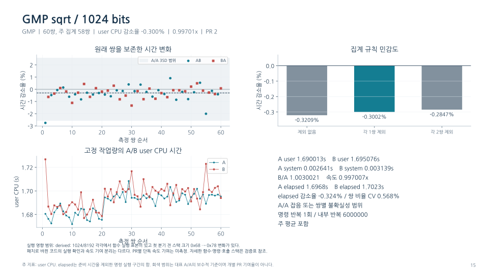
실행 영향 범위: derived: 1024/8192 각각에서 함수 실행 표본이 있고 첫 분기 전 스택 크기 0x68 → 0x78 변화가 있다.
집계: 프로젝트 평균 포함 · 쌍 비율 CV 0.568% · B/A 1.0030021 · 배율 0.997007×
| 지표 | A | B |
|---|---|---|
| user CPU | 1.690013 s | 1.695076 s |
| system CPU | 0.002641 s | 0.003139 s |
| 명령 실행 elapsed | 1.696800 s | 1.702300 s |
| 각 꼬리에서 제외한 쌍 수 | user CPU 시간 감소율 |
|---|---|
| 0 | -0.3209% |
| 1 | -0.3002% |
| 2 | -0.2847% |
변경 함수에 관련된 PR
- 최진범 · 포크 #2 · [InstCombine] Let foldSelectBitTest use known bits for the single-bit mask
작성자 이름은 최종보고서로 대조한 PR에 표시했습니다. 관련 PR 목록은 단독 속도 기여율을 뜻하지 않습니다.
| 관련 PR | 함수 / 심벌 | 실행된 변경 명령 또는 확인 내용 |
|---|---|---|
| 2 | mpn_dc_sqrt | 1024/8192 각각에서 함수 실행 표본이 있고 첫 분기 전 스택 크기 0x68 → 0x78 변화가 있다. |
검증 방식(원문): Reused exact-binary execution audit; PR list relates to changed functions; joint influence stated where applicable
검증 근거의 원래 파일 식별자
expansion20/attribution/evidence/native-GMP.jsonexpansion20/attribution/evidence/audit-executed-entry-code.jsonexpansion20/correctness/runtime-profiles/gmp-sqrt-api-1024/changed-function-membership.jsonexpansion20/correctness/runtime-profiles/gmp-sqrt-api-8192/changed-function-membership.json
위 목록은 원래 검증표의 상대 경로입니다. 해당 경로를 사이트의 다운로드 링크로 표시하지 않았습니다. 공개한 쌍별·관측별 수치는 아래 자료 범위에서 받을 수 있습니다.
Polars
Brotli Parquet write of real source lines
원시 쌍 재검토 · 2026-10-18
시간 감소 13/60쌍 · 시간 증가 47쌍 · 동일 0쌍. 실행 순서·전후반·꼬리 제외 수와 참고 구간에서 평균 방향이 유지됐습니다.
순서별 집계·집계 민감도·재표집 구간
- 원보고 감소율 · 각 꼬리 1쌍 제외
- −0.326%
- 전체 쌍 평균 · 제외 없음
- −0.329%
- AB / BA 평균
- −0.258% / −0.401%
- 전반 / 후반 평균
- −0.372% / −0.287%
- 양 끝 0 / 1 / 2쌍 제외
- −0.329% / −0.326% / −0.321%
- 연속 시간 구간별 평균
- −0.448% / −0.339% / −0.329% / −0.182% / −0.232% / −0.446%
- 재표집 참고 범위
- −0.444% ~ −0.216%
- 블록 길이별 95% 구간
- 2쌍: −0.444% ~ −0.216% · 4쌍: −0.443% ~ −0.226% · 6쌍: −0.431% ~ −0.227% · 10쌍: −0.417% ~ −0.245%
- elapsed 전체 쌍 평균 감소율 · 보조 지표
- −0.272%
모든 60쌍의 수치 보기 · 제외 없음
| 쌍 | 순서 | A user (초) | B user (초) | 감소율 | 원보고 주 집계 |
|---|---|---|---|---|---|
| 1 | AB | 1.357925 | 1.369733 | −0.870% | 포함 |
| 2 | BA | 1.359386 | 1.370573 | −0.823% | 포함 |
| 3 | AB | 1.358642 | 1.373156 | −1.068% | 포함 |
| 4 | BA | 1.366576 | 1.367316 | −0.054% | 포함 |
| 5 | AB | 1.362658 | 1.364048 | −0.102% | 포함 |
| 6 | BA | 1.357952 | 1.364807 | −0.505% | 포함 |
| 7 | AB | 1.365611 | 1.359077 | +0.478% | 포함 |
| 8 | BA | 1.358796 | 1.364966 | −0.454% | 포함 |
| 9 | AB | 1.364744 | 1.377405 | −0.928% | 포함 |
| 10 | BA | 1.363852 | 1.366019 | −0.159% | 포함 |
| 11 | AB | 1.367778 | 1.358972 | +0.644% | 꼬리 제외 |
| 12 | BA | 1.364755 | 1.364828 | −0.005% | 포함 |
| 13 | AB | 1.363817 | 1.368397 | −0.336% | 포함 |
| 14 | BA | 1.349559 | 1.369914 | −1.508% | 꼬리 제외 |
| 15 | AB | 1.351129 | 1.369813 | −1.383% | 포함 |
| 16 | BA | 1.360191 | 1.369053 | −0.652% | 포함 |
| 17 | AB | 1.362159 | 1.362059 | +0.007% | 포함 |
| 18 | BA | 1.362853 | 1.361135 | +0.126% | 포함 |
| 19 | AB | 1.362883 | 1.361467 | +0.104% | 포함 |
| 20 | BA | 1.359809 | 1.365092 | −0.389% | 포함 |
| 21 | AB | 1.372339 | 1.366695 | +0.411% | 포함 |
| 22 | BA | 1.361743 | 1.368152 | −0.471% | 포함 |
| 23 | AB | 1.361788 | 1.366220 | −0.325% | 포함 |
| 24 | BA | 1.364169 | 1.370570 | −0.469% | 포함 |
| 25 | AB | 1.363560 | 1.366687 | −0.229% | 포함 |
| 26 | BA | 1.360437 | 1.363064 | −0.193% | 포함 |
| 27 | AB | 1.361106 | 1.368267 | −0.526% | 포함 |
| 28 | BA | 1.355307 | 1.364331 | −0.666% | 포함 |
| 29 | AB | 1.355103 | 1.368749 | −1.007% | 포함 |
| 30 | BA | 1.362979 | 1.360457 | +0.185% | 포함 |
| 31 | AB | 1.367175 | 1.360661 | +0.476% | 포함 |
| 32 | BA | 1.361983 | 1.364720 | −0.201% | 포함 |
| 33 | AB | 1.367720 | 1.361815 | +0.432% | 포함 |
| 34 | BA | 1.367300 | 1.368240 | −0.069% | 포함 |
| 35 | AB | 1.362822 | 1.364562 | −0.128% | 포함 |
| 36 | BA | 1.351489 | 1.365005 | −1.000% | 포함 |
| 37 | AB | 1.362626 | 1.366261 | −0.267% | 포함 |
| 38 | BA | 1.360537 | 1.360408 | +0.009% | 포함 |
| 39 | AB | 1.360069 | 1.365285 | −0.384% | 포함 |
| 40 | BA | 1.361677 | 1.371045 | −0.688% | 포함 |
| 41 | AB | 1.361459 | 1.366236 | −0.351% | 포함 |
| 42 | BA | 1.365278 | 1.368603 | −0.244% | 포함 |
| 43 | AB | 1.362546 | 1.357061 | +0.403% | 포함 |
| 44 | BA | 1.366957 | 1.373746 | −0.497% | 포함 |
| 45 | AB | 1.360389 | 1.369545 | −0.673% | 포함 |
| 46 | BA | 1.364437 | 1.362814 | +0.119% | 포함 |
| 47 | AB | 1.362837 | 1.366108 | −0.240% | 포함 |
| 48 | BA | 1.368220 | 1.369588 | −0.100% | 포함 |
| 49 | AB | 1.359090 | 1.363943 | −0.357% | 포함 |
| 50 | BA | 1.365524 | 1.370771 | −0.384% | 포함 |
| 51 | AB | 1.360260 | 1.366089 | −0.429% | 포함 |
| 52 | BA | 1.364597 | 1.372352 | −0.568% | 포함 |
| 53 | AB | 1.367020 | 1.372978 | −0.436% | 포함 |
| 54 | BA | 1.355516 | 1.364857 | −0.689% | 포함 |
| 55 | AB | 1.363893 | 1.363219 | +0.049% | 포함 |
| 56 | BA | 1.361175 | 1.366834 | −0.416% | 포함 |
| 57 | AB | 1.357474 | 1.361259 | −0.279% | 포함 |
| 58 | BA | 1.353949 | 1.368402 | −1.067% | 포함 |
| 59 | AB | 1.355193 | 1.360822 | −0.415% | 포함 |
| 60 | BA | 1.357911 | 1.360723 | −0.207% | 포함 |
원보고 차트·측정 조건·실행된 변경·검증 기록
2026-10-16 당시 공통 기준의 판정: A/A 잡음 또는 쌍별 불확실성 범위
원래 판정과 차트 표기는 기록으로 보존했습니다. 위의 평균 방향은 2026-10-18 원시 쌍 재검토 결과입니다.
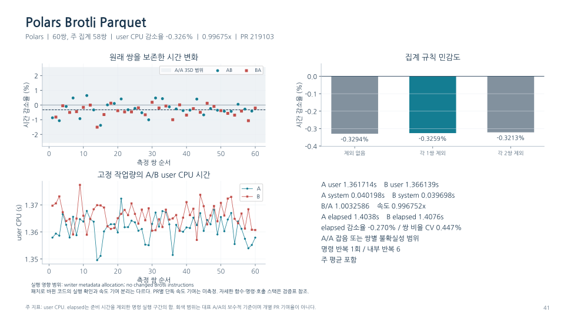
실행 영향 범위: writer metadata allocation; no changed Brotli instructions
집계: 프로젝트 평균 포함 · 쌍 비율 CV 0.447% · B/A 1.0032586 · 배율 0.996752×
| 지표 | A | B |
|---|---|---|
| user CPU | 1.361714 s | 1.366139 s |
| system CPU | 0.040198 s | 0.039698 s |
| 명령 실행 elapsed | 1.403800 s | 1.407600 s |
| 각 꼬리에서 제외한 쌍 수 | user CPU 시간 감소율 |
|---|---|
| 0 | -0.3294% |
| 1 | -0.3259% |
| 2 | -0.3213% |
변경 함수에 관련된 PR
- 최진범 · PR #219103 · [ValueTracking] a u>= b and a = b + NonZero implies a != 0
작성자 이름은 최종보고서로 대조한 PR에 표시했습니다. 관련 PR 목록은 단독 속도 기여율을 뜻하지 않습니다.
| 관련 PR | 함수 / 심벌 | 실행된 변경 명령 또는 확인 내용 |
|---|---|---|
| 219103 | <hashbrown::raw::RawTableInner>::fallible_with_capacity::<allocator_api2::stable::alloc::global::Global> (.llvm.8226656491400057157) | push %rax |
| 219103 | <hashbrown::raw::RawTableInner>::fallible_with_capacity::<allocator_api2::stable::alloc::global::Global> (.llvm.8226656491400057157) | mov %rax,%rbx |
| 219103 | <hashbrown::raw::RawTableInner>::fallible_with_capacity::<allocator_api2::stable::alloc::global::Global> (.llvm.8226656491400057157) | add $0xf,%rbx |
| 219103 | <hashbrown::raw::RawTableInner>::fallible_with_capacity::<allocator_api2::stable::alloc::global::Global> (.llvm.8226656491400057157) | mov %rdi,(%rsp) |
| 219103 | <hashbrown::raw::RawTableInner>::fallible_with_capacity::<allocator_api2::stable::alloc::global::Global> (.llvm.8226656491400057157) | mov %ecx,%r13d |
| 219103 | <hashbrown::raw::RawTableInner>::fallible_with_capacity::<allocator_api2::stable::alloc::global::Global> (.llvm.8226656491400057157) | cmovb %rbx,%r15 |
| 219103 | <hashbrown::raw::RawTableInner>::fallible_with_capacity::<allocator_api2::stable::alloc::global::Global> (.llvm.8226656491400057157) | mov (%rsp),%rax |
| 219103 | <hashbrown::raw::RawTableInner>::fallible_with_capacity::<allocator_api2::stable::alloc::global::Global> (.llvm.8226656491400057157) | jmp 188545f <_RINvMsa_NtCs44Y2Vqbh6vF_9hashbrown3rawNtB6_13RawTableInner22fallible_with_capacityNtNtNtNtCseqw6GF4obPy_14allocator_api26stable5alloc6global6GlobalECsdlLcJYPt2zI_12polars_arrow.llvm.8226656491400057157+0x14f> |
| 219103 | <hashbrown::raw::RawTableInner>::fallible_with_capacity::<allocator_api2::stable::alloc::global::Global> (.llvm.15503788102161881087) | push %rax |
| 219103 | <hashbrown::raw::RawTableInner>::fallible_with_capacity::<allocator_api2::stable::alloc::global::Global> (.llvm.15503788102161881087) | mov %rax,%rbx |
| 219103 | <hashbrown::raw::RawTableInner>::fallible_with_capacity::<allocator_api2::stable::alloc::global::Global> (.llvm.15503788102161881087) | add $0xf,%rbx |
| 219103 | <hashbrown::raw::RawTableInner>::fallible_with_capacity::<allocator_api2::stable::alloc::global::Global> (.llvm.15503788102161881087) | mov %rdi,(%rsp) |
| 219103 | <hashbrown::raw::RawTableInner>::fallible_with_capacity::<allocator_api2::stable::alloc::global::Global> (.llvm.15503788102161881087) | mov %ecx,%r13d |
| 219103 | <hashbrown::raw::RawTableInner>::fallible_with_capacity::<allocator_api2::stable::alloc::global::Global> (.llvm.15503788102161881087) | cmovb %rbx,%r15 |
| 219103 | <hashbrown::raw::RawTableInner>::fallible_with_capacity::<allocator_api2::stable::alloc::global::Global> (.llvm.15503788102161881087) | mov (%rsp),%rax |
| 219103 | <hashbrown::raw::RawTableInner>::fallible_with_capacity::<allocator_api2::stable::alloc::global::Global> (.llvm.15503788102161881087) | jmp 18070c4 <_RINvMsa_NtCs44Y2Vqbh6vF_9hashbrown3rawNtB6_13RawTableInner22fallible_with_capacityNtNtNtNtCseqw6GF4obPy_14allocator_api26stable5alloc6global6GlobalECs7asmx3DNicU_14polars_compute.llvm.15503788102161881087+0x174> |
검증 방식(원문): Single-PR native ablation and actual changed instruction step
검증 근거의 원래 파일 식별자
candidate-review-2x20/execution/correctness/native-probes/polars-parquet.jsoncandidate-review-2x20/execution/correctness/polars/correctness.jsoncandidate-review-2x20/execution/manifests/polars-api-llvm22-native-ablation.json
위 목록은 원래 검증표의 상대 경로입니다. 해당 경로를 사이트의 다운로드 링크로 표시하지 않았습니다. 공개한 쌍별·관측별 수치는 아래 자료 범위에서 받을 수 있습니다.
PHP
Official ReflectionClass serialization
원시 쌍 재검토 · 2026-10-18
시간 감소 5/60쌍 · 시간 증가 55쌍 · 동일 0쌍. 실행 순서·전후반·꼬리 제외 수와 참고 구간에서 평균 방향이 유지됐습니다.
순서별 집계·집계 민감도·재표집 구간
- 원보고 감소율 · 각 꼬리 1쌍 제외
- −0.475%
- 전체 쌍 평균 · 제외 없음
- −0.469%
- AB / BA 평균
- −0.647% / −0.291%
- 전반 / 후반 평균
- −0.570% / −0.368%
- 양 끝 0 / 1 / 2쌍 제외
- −0.469% / −0.475% / −0.491%
- 연속 시간 구간별 평균
- −0.761% / −0.701% / −0.250% / −0.133% / −0.425% / −0.544%
- 재표집 참고 범위
- −0.640% ~ −0.295%
- 블록 길이별 95% 구간
- 2쌍: −0.640% ~ −0.295% · 4쌍: −0.622% ~ −0.303% · 6쌍: −0.612% ~ −0.302% · 10쌍: −0.607% ~ −0.314%
- elapsed 전체 쌍 평균 감소율 · 보조 지표
- −0.427%
모든 60쌍의 수치 보기 · 제외 없음
| 쌍 | 순서 | A user (초) | B user (초) | 감소율 | 원보고 주 집계 |
|---|---|---|---|---|---|
| 1 | AB | 1.179842 | 1.196985 | −1.453% | 포함 |
| 2 | BA | 1.181223 | 1.190663 | −0.799% | 포함 |
| 3 | AB | 1.183246 | 1.193232 | −0.844% | 포함 |
| 4 | BA | 1.187210 | 1.191789 | −0.386% | 포함 |
| 5 | AB | 1.184285 | 1.193376 | −0.768% | 포함 |
| 6 | BA | 1.178889 | 1.184979 | −0.517% | 포함 |
| 7 | AB | 1.187633 | 1.192649 | −0.422% | 포함 |
| 8 | BA | 1.189295 | 1.193561 | −0.359% | 포함 |
| 9 | AB | 1.178156 | 1.195099 | −1.438% | 포함 |
| 10 | BA | 1.185193 | 1.192563 | −0.622% | 포함 |
| 11 | AB | 1.187162 | 1.187912 | −0.063% | 포함 |
| 12 | BA | 1.179971 | 1.189705 | −0.825% | 포함 |
| 13 | AB | 1.184261 | 1.189542 | −0.446% | 포함 |
| 14 | BA | 1.180591 | 1.189352 | −0.742% | 포함 |
| 15 | AB | 1.182382 | 1.187262 | −0.413% | 포함 |
| 16 | BA | 1.185041 | 1.187276 | −0.189% | 포함 |
| 17 | AB | 1.182064 | 1.195425 | −1.130% | 포함 |
| 18 | BA | 1.182323 | 1.186509 | −0.354% | 포함 |
| 19 | AB | 1.167543 | 1.195468 | −2.392% | 꼬리 제외 |
| 20 | BA | 1.185746 | 1.191175 | −0.458% | 포함 |
| 21 | AB | 1.187115 | 1.189349 | −0.188% | 포함 |
| 22 | BA | 1.182982 | 1.184317 | −0.113% | 포함 |
| 23 | AB | 1.184624 | 1.192431 | −0.659% | 포함 |
| 24 | BA | 1.206028 | 1.184544 | +1.781% | 꼬리 제외 |
| 25 | AB | 1.192371 | 1.194282 | −0.160% | 포함 |
| 26 | BA | 1.188399 | 1.191941 | −0.298% | 포함 |
| 27 | AB | 1.185377 | 1.193610 | −0.695% | 포함 |
| 28 | BA | 1.183018 | 1.180258 | +0.233% | 포함 |
| 29 | AB | 1.188030 | 1.197647 | −0.809% | 포함 |
| 30 | BA | 1.187477 | 1.206338 | −1.588% | 포함 |
| 31 | AB | 1.190937 | 1.194144 | −0.269% | 포함 |
| 32 | BA | 1.188907 | 1.189949 | −0.088% | 포함 |
| 33 | AB | 1.188356 | 1.197664 | −0.783% | 포함 |
| 34 | BA | 1.191717 | 1.189317 | +0.201% | 포함 |
| 35 | AB | 1.182329 | 1.179042 | +0.278% | 포함 |
| 36 | BA | 1.193241 | 1.193795 | −0.046% | 포함 |
| 37 | AB | 1.186288 | 1.197807 | −0.971% | 포함 |
| 38 | BA | 1.188010 | 1.201815 | −1.162% | 포함 |
| 39 | AB | 1.190730 | 1.191515 | −0.066% | 포함 |
| 40 | BA | 1.190332 | 1.171597 | +1.574% | 포함 |
| 41 | AB | 1.188199 | 1.192612 | −0.371% | 포함 |
| 42 | BA | 1.184045 | 1.184393 | −0.029% | 포함 |
| 43 | AB | 1.189319 | 1.190847 | −0.128% | 포함 |
| 44 | BA | 1.188855 | 1.195499 | −0.559% | 포함 |
| 45 | AB | 1.188103 | 1.190517 | −0.203% | 포함 |
| 46 | BA | 1.185844 | 1.198100 | −1.034% | 포함 |
| 47 | AB | 1.186744 | 1.190957 | −0.355% | 포함 |
| 48 | BA | 1.188408 | 1.193197 | −0.403% | 포함 |
| 49 | AB | 1.182363 | 1.195230 | −1.088% | 포함 |
| 50 | BA | 1.191973 | 1.192926 | −0.080% | 포함 |
| 51 | AB | 1.188367 | 1.201847 | −1.134% | 포함 |
| 52 | BA | 1.185907 | 1.194842 | −0.753% | 포함 |
| 53 | AB | 1.191183 | 1.194006 | −0.237% | 포함 |
| 54 | BA | 1.186692 | 1.188007 | −0.111% | 포함 |
| 55 | AB | 1.180575 | 1.196823 | −1.376% | 포함 |
| 56 | BA | 1.181324 | 1.189741 | −0.713% | 포함 |
| 57 | AB | 1.190198 | 1.197658 | −0.627% | 포함 |
| 58 | BA | 1.185997 | 1.187239 | −0.105% | 포함 |
| 59 | AB | 1.188529 | 1.191032 | −0.211% | 포함 |
| 60 | BA | 1.183629 | 1.185722 | −0.177% | 포함 |
원보고 차트·측정 조건·실행된 변경·검증 기록
2026-10-16 당시 공통 기준의 판정: A/A 잡음 또는 쌍별 불확실성 범위
원래 판정과 차트 표기는 기록으로 보존했습니다. 위의 평균 방향은 2026-10-18 원시 쌍 재검토 결과입니다.
실행 영향 범위: processing
집계: 프로젝트 평균 포함 · 쌍 비율 CV 0.634% · B/A 1.0047467 · 배율 0.995276×
| 지표 | A | B |
|---|---|---|
| user CPU | 1.186052 s | 1.191674 s |
| system CPU | 0.006154 s | 0.005793 s |
| 명령 실행 elapsed | 1.196800 s | 1.202300 s |
| 각 꼬리에서 제외한 쌍 수 | user CPU 시간 감소율 |
|---|---|
| 0 | -0.4690% |
| 1 | -0.4747% |
| 2 | -0.4914% |
변경 함수에 관련된 PR
- 정하람 · PR #223246 · [InstCombine] Fold strlen/wcslen over select/phi of constants
작성자 이름은 최종보고서로 대조한 PR에 표시했습니다. 관련 PR 목록은 단독 속도 기여율을 뜻하지 않습니다.
| 관련 PR | 함수 / 심벌 | 실행된 변경 명령 또는 확인 내용 |
|---|---|---|
| 223246 | _function_string | mov %rcx,%r14 |
| 223246 | _function_string | mov %r14,%rdi |
| 223246 | _function_string | mov %r14,%rsi |
| 223246 | _function_string | mov 0x8(%rsp),%rdi |
| 223246 | _function_string | xor %ecx,%ecx |
| 223246 | _function_string | lea -0x6d7c66(%rip),%rdx # 17466f <chartypeoffset+0x413af> |
| 223246 | _function_string | lea 0x18(%rax,%r13,1),%rdi |
| 223246 | _function_string | mov %r14,%rdx |
| 223246 | _function_string | mov %r14,0x10(%rsp) |
| 223246 | _function_string | mov 0x10(%rsp),%r14 |
| 223246 | _function_string | mov %r15,%rdi |
| 223246 | _function_string | mov 0x8(%rsp),%r15 |
검증 방식(원문): Single-PR native ablation and actual changed instruction step
검증 근거의 원래 파일 식별자
candidate-review-2x20/execution/correctness/native-probes/php-reflection.jsoncandidate-review-2x20/execution/correctness/php/correctness.jsoncandidate-review-2x20/execution/attribution/php-reflection/result.json
위 목록은 원래 검증표의 상대 경로입니다. 해당 경로를 사이트의 다운로드 링크로 표시하지 않았습니다. 공개한 쌍별·관측별 수치는 아래 자료 범위에서 받을 수 있습니다.
libvpx
Foreman QCIF / VP9 decode
원시 쌍 재검토 · 2026-10-18
시간 감소 6/60쌍 · 시간 증가 54쌍 · 동일 0쌍. 실행 순서·전후반·꼬리 제외 수와 참고 구간에서 평균 방향이 유지됐습니다.
순서별 집계·집계 민감도·재표집 구간
- 원보고 감소율 · 각 꼬리 1쌍 제외
- −0.487%
- 전체 쌍 평균 · 제외 없음
- −0.482%
- AB / BA 평균
- −0.478% / −0.486%
- 전반 / 후반 평균
- −0.461% / −0.503%
- 양 끝 0 / 1 / 2쌍 제외
- −0.482% / −0.487% / −0.485%
- 연속 시간 구간별 평균
- −0.586% / −0.308% / −0.488% / −0.591% / −0.444% / −0.473%
- 재표집 참고 범위
- −0.602% ~ −0.357%
- 블록 길이별 95% 구간
- 2쌍: −0.602% ~ −0.357% · 4쌍: −0.600% ~ −0.361% · 6쌍: −0.599% ~ −0.364% · 10쌍: −0.579% ~ −0.374%
- elapsed 전체 쌍 평균 감소율 · 보조 지표
- −0.435%
모든 60쌍의 수치 보기 · 제외 없음
| 쌍 | 순서 | A user (초) | B user (초) | 감소율 | 원보고 주 집계 |
|---|---|---|---|---|---|
| 1 | AB | 1.113826 | 1.122630 | −0.790% | 포함 |
| 2 | BA | 1.115995 | 1.126541 | −0.945% | 포함 |
| 3 | AB | 1.113940 | 1.121573 | −0.685% | 포함 |
| 4 | BA | 1.116316 | 1.125335 | −0.808% | 포함 |
| 5 | AB | 1.115779 | 1.123758 | −0.715% | 포함 |
| 6 | BA | 1.118043 | 1.122986 | −0.442% | 포함 |
| 7 | AB | 1.124197 | 1.123901 | +0.026% | 포함 |
| 8 | BA | 1.115640 | 1.121824 | −0.554% | 포함 |
| 9 | AB | 1.114279 | 1.119246 | −0.446% | 포함 |
| 10 | BA | 1.114830 | 1.120452 | −0.504% | 포함 |
| 11 | AB | 1.114070 | 1.116352 | −0.205% | 포함 |
| 12 | BA | 1.117717 | 1.114925 | +0.250% | 포함 |
| 13 | AB | 1.129110 | 1.118274 | +0.960% | 꼬리 제외 |
| 14 | BA | 1.114337 | 1.118372 | −0.362% | 포함 |
| 15 | AB | 1.116293 | 1.121640 | −0.479% | 포함 |
| 16 | BA | 1.113991 | 1.124082 | −0.906% | 포함 |
| 17 | AB | 1.117161 | 1.120390 | −0.289% | 포함 |
| 18 | BA | 1.111847 | 1.120860 | −0.811% | 포함 |
| 19 | AB | 1.119192 | 1.127853 | −0.774% | 포함 |
| 20 | BA | 1.116917 | 1.122085 | −0.463% | 포함 |
| 21 | AB | 1.113093 | 1.119286 | −0.556% | 포함 |
| 22 | BA | 1.113752 | 1.117892 | −0.372% | 포함 |
| 23 | AB | 1.115817 | 1.117632 | −0.163% | 포함 |
| 24 | BA | 1.113957 | 1.114689 | −0.066% | 포함 |
| 25 | AB | 1.112508 | 1.126326 | −1.242% | 포함 |
| 26 | BA | 1.117110 | 1.120174 | −0.274% | 포함 |
| 27 | AB | 1.116630 | 1.120300 | −0.329% | 포함 |
| 28 | BA | 1.112060 | 1.120773 | −0.784% | 포함 |
| 29 | AB | 1.119231 | 1.123231 | −0.357% | 포함 |
| 30 | BA | 1.110070 | 1.118313 | −0.743% | 포함 |
| 31 | AB | 1.109408 | 1.111241 | −0.165% | 포함 |
| 32 | BA | 1.112117 | 1.113875 | −0.158% | 포함 |
| 33 | AB | 1.118452 | 1.121386 | −0.262% | 포함 |
| 34 | BA | 1.108854 | 1.122076 | −1.192% | 포함 |
| 35 | AB | 1.109175 | 1.127095 | −1.616% | 꼬리 제외 |
| 36 | BA | 1.117574 | 1.118749 | −0.105% | 포함 |
| 37 | AB | 1.109486 | 1.125584 | −1.451% | 포함 |
| 38 | BA | 1.109497 | 1.124074 | −1.314% | 포함 |
| 39 | AB | 1.115423 | 1.115826 | −0.036% | 포함 |
| 40 | BA | 1.120394 | 1.116058 | +0.387% | 포함 |
| 41 | AB | 1.115345 | 1.120167 | −0.432% | 포함 |
| 42 | BA | 1.118652 | 1.126050 | −0.661% | 포함 |
| 43 | AB | 1.112975 | 1.113933 | −0.086% | 포함 |
| 44 | BA | 1.115034 | 1.117616 | −0.232% | 포함 |
| 45 | AB | 1.114992 | 1.116295 | −0.117% | 포함 |
| 46 | BA | 1.112302 | 1.115082 | −0.250% | 포함 |
| 47 | AB | 1.110188 | 1.124134 | −1.256% | 포함 |
| 48 | BA | 1.114859 | 1.117788 | −0.263% | 포함 |
| 49 | AB | 1.114953 | 1.119144 | −0.376% | 포함 |
| 50 | BA | 1.112766 | 1.121281 | −0.765% | 포함 |
| 51 | AB | 1.121867 | 1.120156 | +0.153% | 포함 |
| 52 | BA | 1.114304 | 1.123175 | −0.796% | 포함 |
| 53 | AB | 1.112367 | 1.121480 | −0.819% | 포함 |
| 54 | BA | 1.114089 | 1.118014 | −0.352% | 포함 |
| 55 | AB | 1.116306 | 1.125715 | −0.843% | 포함 |
| 56 | BA | 1.113011 | 1.119623 | −0.594% | 포함 |
| 57 | AB | 1.116306 | 1.119770 | −0.310% | 포함 |
| 58 | BA | 1.117431 | 1.116675 | +0.068% | 포함 |
| 59 | AB | 1.117251 | 1.124820 | −0.677% | 포함 |
| 60 | BA | 1.112301 | 1.118465 | −0.554% | 포함 |
원보고 차트·측정 조건·실행된 변경·검증 기록
2026-10-16 당시 공통 기준의 판정: A/A 잡음 또는 쌍별 불확실성 범위
원래 판정과 차트 표기는 기록으로 보존했습니다. 위의 평균 방향은 2026-10-18 원시 쌍 재검토 결과입니다.
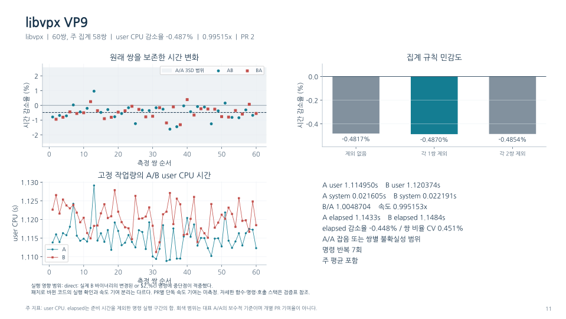
실행 영향 범위: direct: 실제 B 바이너리의 변경된 or $2,%cl 명령에 중단점이 적중했다.
집계: 프로젝트 평균 포함 · 쌍 비율 CV 0.451% · B/A 1.0048704 · 배율 0.995153×
| 지표 | A | B |
|---|---|---|
| user CPU | 1.114950 s | 1.120374 s |
| system CPU | 0.021605 s | 0.022191 s |
| 명령 실행 elapsed | 1.143300 s | 1.148400 s |
| 각 꼬리에서 제외한 쌍 수 | user CPU 시간 감소율 |
|---|---|
| 0 | -0.4817% |
| 1 | -0.4870% |
| 2 | -0.4854% |
변경 함수에 관련된 PR
- 최진범 · 포크 #2 · [InstCombine] Let foldSelectBitTest use known bits for the single-bit mask
작성자 이름은 최종보고서로 대조한 PR에 표시했습니다. 관련 PR 목록은 단독 속도 기여율을 뜻하지 않습니다.
| 관련 PR | 함수 / 심벌 | 실행된 변경 명령 또는 확인 내용 |
|---|---|---|
| 2 | vp9_read_mode_info | 실제 B 바이너리의 변경된 or $2,%cl 명령에 중단점이 적중했다. |
검증 방식(원문): Reused exact-binary execution audit; PR list relates to changed functions; joint influence stated where applicable
검증 근거의 원래 파일 식별자
expansion20/attribution/evidence/native-libvpx.jsonexpansion20/attribution/evidence/runtime-impact/libvpx-vp9-decode.jsonexpansion20/attribution/evidence/runtime-impact/libvpx-vp9-decode.log
위 목록은 원래 검증표의 상대 경로입니다. 해당 경로를 사이트의 다운로드 링크로 표시하지 않았습니다. 공개한 쌍별·관측별 수치는 아래 자료 범위에서 받을 수 있습니다.
libarchive
Public fd API source archive header listing
원시 쌍 재검토 · 2026-10-18
시간 감소 20/60쌍 · 시간 증가 40쌍 · 동일 0쌍. 실행 순서·전후반·꼬리 제외 수와 참고 구간에서 평균 방향이 유지됐습니다.
순서별 집계·집계 민감도·재표집 구간
- 원보고 감소율 · 각 꼬리 1쌍 제외
- −0.905%
- 전체 쌍 평균 · 제외 없음
- −0.934%
- AB / BA 평균
- −0.399% / −1.468%
- 전반 / 후반 평균
- −1.179% / −0.689%
- 양 끝 0 / 1 / 2쌍 제외
- −0.934% / −0.905% / −0.889%
- 연속 시간 구간별 평균
- −1.219% / −0.229% / −2.090% / −0.036% / −1.766% / −0.263%
- 재표집 참고 범위
- −1.489% ~ −0.372%
- 블록 길이별 95% 구간
- 2쌍: −1.451% ~ −0.404% · 4쌍: −1.486% ~ −0.393% · 6쌍: −1.489% ~ −0.372% · 10쌍: −1.419% ~ −0.445%
- elapsed 전체 쌍 평균 감소율 · 보조 지표
- −0.452%
모든 60쌍의 수치 보기 · 제외 없음
| 쌍 | 순서 | A user (초) | B user (초) | 감소율 | 원보고 주 집계 |
|---|---|---|---|---|---|
| 1 | AB | 1.419923 | 1.384633 | +2.485% | 포함 |
| 2 | BA | 1.360712 | 1.403434 | −3.140% | 포함 |
| 3 | AB | 1.360904 | 1.365959 | −0.371% | 포함 |
| 4 | BA | 1.373719 | 1.390224 | −1.201% | 포함 |
| 5 | AB | 1.390416 | 1.416883 | −1.904% | 포함 |
| 6 | BA | 1.390765 | 1.416163 | −1.826% | 포함 |
| 7 | AB | 1.399822 | 1.419258 | −1.388% | 포함 |
| 8 | BA | 1.353567 | 1.409614 | −4.141% | 포함 |
| 9 | AB | 1.411437 | 1.412975 | −0.109% | 포함 |
| 10 | BA | 1.393840 | 1.402090 | −0.592% | 포함 |
| 11 | AB | 1.348960 | 1.363838 | −1.103% | 포함 |
| 12 | BA | 1.398921 | 1.416810 | −1.279% | 포함 |
| 13 | AB | 1.401756 | 1.403836 | −0.148% | 포함 |
| 14 | BA | 1.370437 | 1.411642 | −3.007% | 포함 |
| 15 | AB | 1.441690 | 1.403636 | +2.640% | 포함 |
| 16 | BA | 1.377069 | 1.370573 | +0.472% | 포함 |
| 17 | AB | 1.406769 | 1.420706 | −0.991% | 포함 |
| 18 | BA | 1.400246 | 1.379835 | +1.458% | 포함 |
| 19 | AB | 1.382267 | 1.372678 | +0.694% | 포함 |
| 20 | BA | 1.393706 | 1.407947 | −1.022% | 포함 |
| 21 | AB | 1.411377 | 1.416581 | −0.369% | 포함 |
| 22 | BA | 1.392625 | 1.436194 | −3.129% | 포함 |
| 23 | AB | 1.391934 | 1.381616 | +0.741% | 포함 |
| 24 | BA | 1.405791 | 1.414979 | −0.654% | 포함 |
| 25 | AB | 1.393311 | 1.369432 | +1.714% | 포함 |
| 26 | BA | 1.327669 | 1.388979 | −4.618% | 포함 |
| 27 | AB | 1.405799 | 1.434230 | −2.022% | 포함 |
| 28 | BA | 1.373870 | 1.450725 | −5.594% | 포함 |
| 29 | AB | 1.379911 | 1.404873 | −1.809% | 포함 |
| 30 | BA | 1.373155 | 1.444036 | −5.162% | 포함 |
| 31 | AB | 1.383960 | 1.389551 | −0.404% | 포함 |
| 32 | BA | 1.367240 | 1.364382 | +0.209% | 포함 |
| 33 | AB | 1.408326 | 1.355299 | +3.765% | 꼬리 제외 |
| 34 | BA | 1.403162 | 1.391298 | +0.846% | 포함 |
| 35 | AB | 1.362494 | 1.417655 | −4.049% | 포함 |
| 36 | BA | 1.441491 | 1.400395 | +2.851% | 포함 |
| 37 | AB | 1.398847 | 1.393497 | +0.382% | 포함 |
| 38 | BA | 1.411825 | 1.406116 | +0.404% | 포함 |
| 39 | AB | 1.329722 | 1.372393 | −3.209% | 포함 |
| 40 | BA | 1.380435 | 1.396417 | −1.158% | 포함 |
| 41 | AB | 1.407506 | 1.400274 | +0.514% | 포함 |
| 42 | BA | 1.371784 | 1.387295 | −1.131% | 포함 |
| 43 | AB | 1.419516 | 1.383020 | +2.571% | 포함 |
| 44 | BA | 1.381500 | 1.482237 | −7.292% | 꼬리 제외 |
| 45 | AB | 1.364197 | 1.436786 | −5.321% | 포함 |
| 46 | BA | 1.379936 | 1.356704 | +1.684% | 포함 |
| 47 | AB | 1.366414 | 1.401306 | −2.554% | 포함 |
| 48 | BA | 1.394425 | 1.415726 | −1.528% | 포함 |
| 49 | AB | 1.415096 | 1.435028 | −1.409% | 포함 |
| 50 | BA | 1.355673 | 1.398987 | −3.195% | 포함 |
| 51 | AB | 1.414523 | 1.409886 | +0.328% | 포함 |
| 52 | BA | 1.405775 | 1.413129 | −0.523% | 포함 |
| 53 | AB | 1.344759 | 1.377798 | −2.457% | 포함 |
| 54 | BA | 1.371824 | 1.384710 | −0.939% | 포함 |
| 55 | AB | 1.412402 | 1.377785 | +2.451% | 포함 |
| 56 | BA | 1.407535 | 1.381510 | +1.849% | 포함 |
| 57 | AB | 1.396488 | 1.414529 | −1.292% | 포함 |
| 58 | BA | 1.378902 | 1.408819 | −2.170% | 포함 |
| 59 | AB | 1.433358 | 1.424105 | +0.646% | 포함 |
| 60 | BA | 1.371449 | 1.378668 | −0.526% | 포함 |
원보고 차트·측정 조건·실행된 변경·검증 기록
2026-10-16 당시 공통 기준의 판정: A/A 잡음 또는 쌍별 불확실성 범위
원래 판정과 차트 표기는 기록으로 보존했습니다. 위의 평균 방향은 2026-10-18 원시 쌍 재검토 결과입니다.
실행 영향 범위: processing
집계: 프로젝트 평균 포함 · 쌍 비율 CV 2.252% · B/A 1.0090523 · 배율 0.991029×
| 지표 | A | B |
|---|---|---|
| user CPU | 1.388329 s | 1.400554 s |
| system CPU | 1.276223 s | 1.276517 s |
| 명령 실행 elapsed | 2.672800 s | 2.685100 s |
| 각 꼬리에서 제외한 쌍 수 | user CPU 시간 감소율 |
|---|---|
| 0 | -0.9338% |
| 1 | -0.9052% |
| 2 | -0.8886% |
변경 함수에 관련된 PR
- 이하동 · PR #214933 · [InstCombine] Fold comparisons of urem with dividend
작성자 이름은 최종보고서로 대조한 PR에 표시했습니다. 관련 PR 목록은 단독 속도 기여율을 뜻하지 않습니다.
| 관련 PR | 함수 / 심벌 | 실행된 변경 명령 또는 확인 내용 |
|---|---|---|
| 214933 | file_skip | push %r12 |
| 214933 | file_skip | push %rax |
| 214933 | file_skip | cmp %rcx,%r14 |
| 214933 | file_skip | mov %rdx,%r12 |
| 214933 | file_skip | sub %r12,%r14 |
| 214933 | file_skip | jmp 192bf <file_skip+0xbf> |
| 214933 | file_skip | pop %r12 |
| 214933 | file_skip | add $0x8,%rsp |
검증 방식(원문): Single-PR native ablation and actual changed instruction step
검증 근거의 원래 파일 식별자
candidate-review-2x20/execution/correctness/native-probes/libarchive-fd-list.jsoncandidate-review-2x20/execution/manifests/libarchive-api-build.jsoncandidate-review-2x20/execution/attribution/libarchive-fd/result.json
위 목록은 원래 검증표의 상대 경로입니다. 해당 경로를 사이트의 다운로드 링크로 표시하지 않았습니다. 공개한 쌍별·관측별 수치는 아래 자료 범위에서 받을 수 있습니다.
Node.js
Public synchronous Brotli compression of real source text
원시 쌍 재검토 · 2026-10-18
시간 감소 3/60쌍 · 시간 증가 57쌍 · 동일 0쌍. 실행 순서·전후반·꼬리 제외 수와 참고 구간에서 평균 방향이 유지됐습니다.
순서별 집계·집계 민감도·재표집 구간
- 원보고 감소율 · 각 꼬리 1쌍 제외
- −1.061%
- 전체 쌍 평균 · 제외 없음
- −1.061%
- AB / BA 평균
- −1.002% / −1.120%
- 전반 / 후반 평균
- −0.912% / −1.210%
- 양 끝 0 / 1 / 2쌍 제외
- −1.061% / −1.061% / −1.060%
- 연속 시간 구간별 평균
- −1.074% / −1.008% / −0.654% / −1.244% / −1.258% / −1.127%
- 재표집 참고 범위
- −1.239% ~ −0.890%
- 블록 길이별 95% 구간
- 2쌍: −1.217% ~ −0.909% · 4쌍: −1.232% ~ −0.906% · 6쌍: −1.239% ~ −0.900% · 10쌍: −1.233% ~ −0.890%
- elapsed 전체 쌍 평균 감소율 · 보조 지표
- −0.881%
모든 60쌍의 수치 보기 · 제외 없음
| 쌍 | 순서 | A user (초) | B user (초) | 감소율 | 원보고 주 집계 |
|---|---|---|---|---|---|
| 1 | AB | 1.115114 | 1.122549 | −0.667% | 포함 |
| 2 | BA | 1.101211 | 1.121460 | −1.839% | 포함 |
| 3 | AB | 1.107000 | 1.126290 | −1.743% | 포함 |
| 4 | BA | 1.119258 | 1.128626 | −0.837% | 포함 |
| 5 | AB | 1.116161 | 1.122970 | −0.610% | 포함 |
| 6 | BA | 1.097466 | 1.121647 | −2.203% | 포함 |
| 7 | AB | 1.109515 | 1.111600 | −0.188% | 포함 |
| 8 | BA | 1.122343 | 1.127443 | −0.454% | 포함 |
| 9 | AB | 1.113518 | 1.123507 | −0.897% | 포함 |
| 10 | BA | 1.116155 | 1.130669 | −1.300% | 포함 |
| 11 | AB | 1.111298 | 1.129109 | −1.603% | 포함 |
| 12 | BA | 1.117132 | 1.116629 | +0.045% | 포함 |
| 13 | AB | 1.117236 | 1.129986 | −1.141% | 포함 |
| 14 | BA | 1.110137 | 1.133738 | −2.126% | 포함 |
| 15 | AB | 1.120921 | 1.127600 | −0.596% | 포함 |
| 16 | BA | 1.111048 | 1.123982 | −1.164% | 포함 |
| 17 | AB | 1.107467 | 1.121742 | −1.289% | 포함 |
| 18 | BA | 1.118551 | 1.124264 | −0.511% | 포함 |
| 19 | AB | 1.122799 | 1.134574 | −1.049% | 포함 |
| 20 | BA | 1.121124 | 1.128429 | −0.652% | 포함 |
| 21 | AB | 1.127671 | 1.127192 | +0.042% | 포함 |
| 22 | BA | 1.116441 | 1.123227 | −0.608% | 포함 |
| 23 | AB | 1.114472 | 1.120211 | −0.515% | 포함 |
| 24 | BA | 1.110772 | 1.122999 | −1.101% | 포함 |
| 25 | AB | 1.116476 | 1.124595 | −0.727% | 포함 |
| 26 | BA | 1.112273 | 1.115447 | −0.285% | 포함 |
| 27 | AB | 1.119677 | 1.136926 | −1.541% | 포함 |
| 28 | BA | 1.108930 | 1.122162 | −1.193% | 포함 |
| 29 | AB | 1.110950 | 1.108979 | +0.177% | 꼬리 제외 |
| 30 | BA | 1.113572 | 1.122392 | −0.792% | 포함 |
| 31 | AB | 1.113211 | 1.119592 | −0.573% | 포함 |
| 32 | BA | 1.111375 | 1.130067 | −1.682% | 포함 |
| 33 | AB | 1.119677 | 1.126932 | −0.648% | 포함 |
| 34 | BA | 1.111265 | 1.129968 | −1.683% | 포함 |
| 35 | AB | 1.116986 | 1.123979 | −0.626% | 포함 |
| 36 | BA | 1.113747 | 1.120673 | −0.622% | 포함 |
| 37 | AB | 1.109711 | 1.124974 | −1.375% | 포함 |
| 38 | BA | 1.112622 | 1.126503 | −1.248% | 포함 |
| 39 | AB | 1.110153 | 1.132258 | −1.991% | 포함 |
| 40 | BA | 1.103414 | 1.125396 | −1.992% | 포함 |
| 41 | AB | 1.110424 | 1.131537 | −1.901% | 포함 |
| 42 | BA | 1.109190 | 1.130975 | −1.964% | 포함 |
| 43 | AB | 1.096730 | 1.122072 | −2.311% | 꼬리 제외 |
| 44 | BA | 1.122718 | 1.128170 | −0.486% | 포함 |
| 45 | AB | 1.113421 | 1.119127 | −0.512% | 포함 |
| 46 | BA | 1.112701 | 1.123230 | −0.946% | 포함 |
| 47 | AB | 1.113106 | 1.117639 | −0.407% | 포함 |
| 48 | BA | 1.109700 | 1.124590 | −1.342% | 포함 |
| 49 | AB | 1.112265 | 1.123176 | −0.981% | 포함 |
| 50 | BA | 1.109136 | 1.128332 | −1.731% | 포함 |
| 51 | AB | 1.119024 | 1.124633 | −0.501% | 포함 |
| 52 | BA | 1.113427 | 1.126995 | −1.219% | 포함 |
| 53 | AB | 1.117654 | 1.126263 | −0.770% | 포함 |
| 54 | BA | 1.115936 | 1.131684 | −1.411% | 포함 |
| 55 | AB | 1.105473 | 1.129931 | −2.212% | 포함 |
| 56 | BA | 1.116133 | 1.127346 | −1.005% | 포함 |
| 57 | AB | 1.111797 | 1.122781 | −0.988% | 포함 |
| 58 | BA | 1.122263 | 1.128413 | −0.548% | 포함 |
| 59 | AB | 1.111705 | 1.133068 | −1.922% | 포함 |
| 60 | BA | 1.111129 | 1.118861 | −0.696% | 포함 |
원보고 차트·측정 조건·실행된 변경·검증 기록
2026-10-16 당시 공통 기준의 판정: A/A 잡음 또는 쌍별 불확실성 범위
원래 판정과 차트 표기는 기록으로 보존했습니다. 위의 평균 방향은 2026-10-18 원시 쌍 재검토 결과입니다.
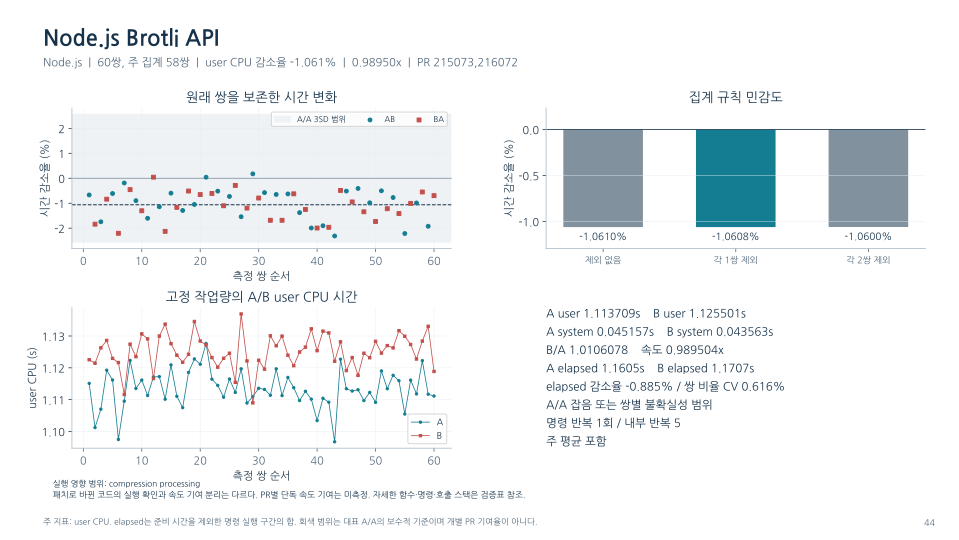
실행 영향 범위: compression processing
집계: 프로젝트 평균 포함 · 쌍 비율 CV 0.616% · B/A 1.0106078 · 배율 0.989504×
| 지표 | A | B |
|---|---|---|
| user CPU | 1.113709 s | 1.125501 s |
| system CPU | 0.045157 s | 0.043563 s |
| 명령 실행 elapsed | 1.160500 s | 1.170700 s |
| 각 꼬리에서 제외한 쌍 수 | user CPU 시간 감소율 |
|---|---|
| 0 | -1.0610% |
| 1 | -1.0608% |
| 2 | -1.0600% |
변경 함수에 관련된 PR
- 정지현 · PR #215073 · [Instcombine] Fold a zero-select hexadecimal digit count into ctlz(x | 1)
- 이하동 · PR #216072 · [InstSimplify] Simplify nonzero comparisons involving X urem Y via X u>= Y
작성자 이름은 최종보고서로 대조한 PR에 표시했습니다. 관련 PR 목록은 단독 속도 기여율을 뜻하지 않습니다.
| 관련 PR | 함수 / 심벌 | 실행된 변경 명령 또는 확인 내용 |
|---|---|---|
| 216072 | BrotliSplitBlock | mov %rdx,-0x58(%rbp) |
| 216072 | BrotliSplitBlock | mov %r12,-0x50(%rbp) |
| 216072 | BrotliSplitBlock | mov %rdx,-0x68(%rbp) |
| 216072 | BrotliSplitBlock | sub %rdx,%rdi |
| 216072 | BrotliSplitBlock | mov %r15,-0x68(%rbp) |
| 215073 | EncodeContextMap | mov %rsi,-0x48(%rbp) |
| 215073 | EncodeContextMap | mov %r8,-0x58(%rbp) |
| 215073 | EncodeContextMap | lea 0x0(,%r15,4),%r13 |
| 215073 | EncodeContextMap | mov %rdi,-0x68(%rbp) |
| 215073 | EncodeContextMap | mov %r13,%rsi |
| 215073 | EncodeContextMap | mov %edx,%r12d |
| 215073 | EncodeContextMap | cmp $0x7f,%r12d |
| 215073 | EncodeContextMap | inc %r12d |
| 215073 | EncodeContextMap | xor %r13d,%r13d |
| 215073 | EncodeContextMap | movzbl (%r8,%r13,4),%ebx |
| 215073 | EncodeContextMap | mov %edx,(%r14,%r13,4) |
| 215073 | EncodeContextMap | inc %r13 |
| 215073 | EncodeContextMap | cmp %r15,%r13 |
| 215073 | EncodeContextMap | cmp %rdx,%r12 |
| 215073 | EncodeContextMap | mov -0x48(%rbp),%rax |
| 215073 | EncodeContextMap | mov %rcx,-0x50(%rbp) |
| 215073 | EncodeContextMap | mov -0x70(%rbp),%r12 |
| 215073 | EncodeContextMap | or $0x1,%eax |
| 215073 | EncodeContextMap | mov $0xffffffff,%ecx |
| 215073 | EncodeContextMap | lzcnt %eax,%eax |
| 215073 | EncodeContextMap | cmp $0x6,%eax |
| 215073 | EncodeContextMap | mov -0x48(%rbp),%r15 |
| 215073 | EncodeContextMap | mov -0x3c(%rbp),%r9d |
| 215073 | EncodeContextMap | cmp $0x1f,%r9d |
| 215073 | EncodeContextMap | setne %cl |
| 215073 | EncodeContextMap | mov -0x60(%rbp),%rcx |
| 215073 | EncodeContextMap | mov -0x58(%rbp),%rdx |
| 215073 | EncodeContextMap | mov -0x50(%rbp),%r15 |
| 215073 | EncodeContextMap | mov -0x68(%rbp),%rdi |
검증 방식(원문): Single-PR native ablation and actual changed instruction step
검증 근거의 원래 파일 식별자
candidate-review-2x20/execution/correctness/native-probes/node-brotli.jsoncandidate-review-2x20/execution/correctness/node/correctness.jsoncandidate-review-2x20/execution/attribution/node-brotli-context/result.jsoncandidate-review-2x20/execution/attribution/node-brotli-split/result.json
위 목록은 원래 검증표의 상대 경로입니다. 해당 경로를 사이트의 다운로드 링크로 표시하지 않았습니다. 공개한 쌍별·관측별 수치는 아래 자료 범위에서 받을 수 있습니다.
FFmpeg
Foreman QCIF / native VP9 decode
원시 쌍 재검토 · 2026-10-18
시간 감소 18/60쌍 · 시간 증가 42쌍 · 동일 0쌍. 실행 순서·전후반·꼬리 제외 수와 참고 구간에서 평균 방향이 유지됐습니다.
순서별 집계·집계 민감도·재표집 구간
- 원보고 감소율 · 각 꼬리 1쌍 제외
- −1.138%
- 전체 쌍 평균 · 제외 없음
- −1.153%
- AB / BA 평균
- −1.360% / −0.946%
- 전반 / 후반 평균
- −1.126% / −1.180%
- 양 끝 0 / 1 / 2쌍 제외
- −1.153% / −1.138% / −1.108%
- 연속 시간 구간별 평균
- −1.057% / −1.242% / −1.078% / −0.303% / −1.707% / −1.530%
- 재표집 참고 범위
- −1.714% ~ −0.605%
- 블록 길이별 95% 구간
- 2쌍: −1.714% ~ −0.605% · 4쌍: −1.696% ~ −0.614% · 6쌍: −1.636% ~ −0.667% · 10쌍: −1.678% ~ −0.653%
- elapsed 전체 쌍 평균 감소율 · 보조 지표
- −1.175%
모든 60쌍의 수치 보기 · 제외 없음
| 쌍 | 순서 | A user (초) | B user (초) | 감소율 | 원보고 주 집계 |
|---|---|---|---|---|---|
| 1 | AB | 1.054916 | 1.105561 | −4.801% | 포함 |
| 2 | BA | 1.076577 | 1.098344 | −2.022% | 포함 |
| 3 | AB | 1.084670 | 1.079610 | +0.467% | 포함 |
| 4 | BA | 1.089330 | 1.099669 | −0.949% | 포함 |
| 5 | AB | 1.069344 | 1.061949 | +0.692% | 포함 |
| 6 | BA | 1.078694 | 1.094043 | −1.423% | 포함 |
| 7 | AB | 1.079299 | 1.098560 | −1.785% | 포함 |
| 8 | BA | 1.059462 | 1.081152 | −2.047% | 포함 |
| 9 | AB | 1.082934 | 1.091547 | −0.795% | 포함 |
| 10 | BA | 1.087704 | 1.064954 | +2.092% | 포함 |
| 11 | AB | 1.094039 | 1.068268 | +2.356% | 포함 |
| 12 | BA | 1.078221 | 1.076823 | +0.130% | 포함 |
| 13 | AB | 1.089955 | 1.078097 | +1.088% | 포함 |
| 14 | BA | 1.045948 | 1.116197 | −6.716% | 꼬리 제외 |
| 15 | AB | 1.067237 | 1.096323 | −2.725% | 포함 |
| 16 | BA | 1.081709 | 1.084201 | −0.230% | 포함 |
| 17 | AB | 1.091315 | 1.101477 | −0.931% | 포함 |
| 18 | BA | 1.095177 | 1.077347 | +1.628% | 포함 |
| 19 | AB | 1.070315 | 1.107898 | −3.511% | 포함 |
| 20 | BA | 1.079991 | 1.117819 | −3.503% | 포함 |
| 21 | AB | 1.074544 | 1.102221 | −2.576% | 포함 |
| 22 | BA | 1.070000 | 1.089828 | −1.853% | 포함 |
| 23 | AB | 1.071401 | 1.095485 | −2.248% | 포함 |
| 24 | BA | 1.087980 | 1.079483 | +0.781% | 포함 |
| 25 | AB | 1.077901 | 1.097427 | −1.811% | 포함 |
| 26 | BA | 1.094094 | 1.074853 | +1.759% | 포함 |
| 27 | AB | 1.085615 | 1.081416 | +0.387% | 포함 |
| 28 | BA | 1.077521 | 1.085890 | −0.777% | 포함 |
| 29 | AB | 1.071020 | 1.098575 | −2.573% | 포함 |
| 30 | BA | 1.067074 | 1.087032 | −1.870% | 포함 |
| 31 | AB | 1.066381 | 1.094020 | −2.592% | 포함 |
| 32 | BA | 1.082475 | 1.044080 | +3.547% | 꼬리 제외 |
| 33 | AB | 1.058188 | 1.083573 | −2.399% | 포함 |
| 34 | BA | 1.068187 | 1.075842 | −0.717% | 포함 |
| 35 | AB | 1.064637 | 1.074484 | −0.925% | 포함 |
| 36 | BA | 1.068909 | 1.099576 | −2.869% | 포함 |
| 37 | AB | 1.062489 | 1.057823 | +0.439% | 포함 |
| 38 | BA | 1.061434 | 1.071716 | −0.969% | 포함 |
| 39 | AB | 1.078544 | 1.061237 | +1.605% | 포함 |
| 40 | BA | 1.096555 | 1.076269 | +1.850% | 포함 |
| 41 | AB | 1.086479 | 1.102652 | −1.489% | 포함 |
| 42 | BA | 1.088595 | 1.071714 | +1.551% | 포함 |
| 43 | AB | 1.077182 | 1.099855 | −2.105% | 포함 |
| 44 | BA | 1.073905 | 1.084854 | −1.020% | 포함 |
| 45 | AB | 1.071284 | 1.082271 | −1.026% | 포함 |
| 46 | BA | 1.071287 | 1.071459 | −0.016% | 포함 |
| 47 | AB | 1.053860 | 1.080663 | −2.543% | 포함 |
| 48 | BA | 1.070857 | 1.098986 | −2.627% | 포함 |
| 49 | AB | 1.072997 | 1.115638 | −3.974% | 포함 |
| 50 | BA | 1.069372 | 1.110260 | −3.824% | 포함 |
| 51 | AB | 1.064022 | 1.055001 | +0.848% | 포함 |
| 52 | BA | 1.085755 | 1.069794 | +1.470% | 포함 |
| 53 | AB | 1.070700 | 1.078929 | −0.769% | 포함 |
| 54 | BA | 1.063240 | 1.086395 | −2.178% | 포함 |
| 55 | AB | 1.048501 | 1.114856 | −6.329% | 포함 |
| 56 | BA | 1.078118 | 1.095872 | −1.647% | 포함 |
| 57 | AB | 1.074285 | 1.093158 | −1.757% | 포함 |
| 58 | BA | 1.060898 | 1.100213 | −3.706% | 포함 |
| 59 | AB | 1.084448 | 1.073827 | +0.979% | 포함 |
| 60 | BA | 1.077483 | 1.101333 | −2.213% | 포함 |
원보고 차트·측정 조건·실행된 변경·검증 기록
2026-10-16 당시 공통 기준의 판정: A/A 잡음 또는 쌍별 불확실성 범위
원래 판정과 차트 표기는 기록으로 보존했습니다. 위의 평균 방향은 2026-10-18 원시 쌍 재검토 결과입니다.
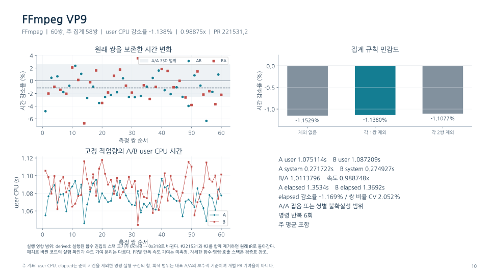
실행 영향 범위: derived: 실행된 함수 진입의 스택 크기가 0x1e8 → 0x318로 바뀐다. #221531과 #2를 함께 제거하면 원래 IR로 돌아간다.
집계: 프로젝트 평균 포함 · 쌍 비율 CV 2.052% · B/A 1.0113796 · 배율 0.988748×
| 지표 | A | B |
|---|---|---|
| user CPU | 1.075114 s | 1.087209 s |
| system CPU | 0.271722 s | 0.274927 s |
| 명령 실행 elapsed | 1.353400 s | 1.369200 s |
| 각 꼬리에서 제외한 쌍 수 | user CPU 시간 감소율 |
|---|---|
| 0 | -1.1529% |
| 1 | -1.1380% |
| 2 | -1.1077% |
변경 함수에 관련된 PR
- PR #221531 · [LAA] Allow zero-distance dependences between mixed-width accesses
- 최진범 · 포크 #2 · [InstCombine] Let foldSelectBitTest use known bits for the single-bit mask
작성자 이름은 최종보고서로 대조한 PR에 표시했습니다. 관련 PR 목록은 단독 속도 기여율을 뜻하지 않습니다.
| 관련 PR | 함수 / 심벌 | 실행된 변경 명령 또는 확인 내용 |
|---|---|---|
| 221531,2 | ff_vp9_decode_block | 실행된 함수 진입의 스택 크기가 0x1e8 → 0x318로 바뀐다. #221531과 #2를 함께 제거하면 원래 IR로 돌아간다. |
검증 방식(원문): Reused exact-binary execution audit; PR list relates to changed functions; joint influence stated where applicable
검증 근거의 원래 파일 식별자
expansion20/attribution/evidence/native-FFmpeg.jsonexpansion20/attribution/evidence/audit-executed-entry-code.jsonexpansion20/attribution/evidence/clang-ablation-ffmpeg-combo.json
위 목록은 원래 검증표의 상대 경로입니다. 해당 경로를 사이트의 다운로드 링크로 표시하지 않았습니다. 공개한 쌍별·관측별 수치는 아래 자료 범위에서 받을 수 있습니다.
CMake
Normal upstream nested progress check messages
원시 쌍 재검토 · 2026-10-18
시간 감소 24/60쌍 · 시간 증가 36쌍 · 동일 0쌍. 실행 순서·전후반·꼬리 제외 수와 참고 구간에서 평균 방향이 유지됐습니다.
순서별 집계·집계 민감도·재표집 구간
- 원보고 감소율 · 각 꼬리 1쌍 제외
- −1.220%
- 전체 쌍 평균 · 제외 없음
- −1.187%
- AB / BA 평균
- −0.280% / −2.094%
- 전반 / 후반 평균
- −1.402% / −0.971%
- 양 끝 0 / 1 / 2쌍 제외
- −1.187% / −1.220% / −1.241%
- 연속 시간 구간별 평균
- −1.423% / +0.334% / −3.119% / −2.575% / +0.358% / −0.696%
- 재표집 참고 범위
- −2.210% ~ −0.233%
- 블록 길이별 95% 구간
- 2쌍: −2.143% ~ −0.233% · 4쌍: −2.210% ~ −0.262% · 6쌍: −2.173% ~ −0.323% · 10쌍: −2.012% ~ −0.431%
- elapsed 전체 쌍 평균 감소율 · 보조 지표
- +3.685%
모든 60쌍의 수치 보기 · 제외 없음
| 쌍 | 순서 | A user (초) | B user (초) | 감소율 | 원보고 주 집계 |
|---|---|---|---|---|---|
| 1 | AB | 1.753358 | 1.768614 | −0.870% | 포함 |
| 2 | BA | 1.727294 | 1.787341 | −3.476% | 포함 |
| 3 | AB | 1.720425 | 1.688387 | +1.862% | 포함 |
| 4 | BA | 1.713879 | 1.676527 | +2.179% | 포함 |
| 5 | AB | 1.656629 | 1.763546 | −6.454% | 포함 |
| 6 | BA | 1.670049 | 1.724570 | −3.265% | 포함 |
| 7 | AB | 1.687344 | 1.658173 | +1.729% | 포함 |
| 8 | BA | 1.614659 | 1.677661 | −3.902% | 포함 |
| 9 | AB | 1.658793 | 1.737163 | −4.725% | 포함 |
| 10 | BA | 1.694638 | 1.648967 | +2.695% | 포함 |
| 11 | AB | 1.727321 | 1.707271 | +1.161% | 포함 |
| 12 | BA | 1.693700 | 1.678091 | +0.922% | 포함 |
| 13 | AB | 1.677890 | 1.658290 | +1.168% | 포함 |
| 14 | BA | 1.649510 | 1.697607 | −2.916% | 포함 |
| 15 | AB | 1.721311 | 1.706076 | +0.885% | 포함 |
| 16 | BA | 1.640960 | 1.673219 | −1.966% | 포함 |
| 17 | AB | 1.713046 | 1.645792 | +3.926% | 포함 |
| 18 | BA | 1.668314 | 1.700271 | −1.916% | 포함 |
| 19 | AB | 1.737727 | 1.658304 | +4.571% | 포함 |
| 20 | BA | 1.709019 | 1.751678 | −2.496% | 포함 |
| 21 | AB | 1.445538 | 1.518929 | −5.077% | 포함 |
| 22 | BA | 1.522359 | 1.523570 | −0.080% | 포함 |
| 23 | AB | 1.392636 | 1.447017 | −3.905% | 포함 |
| 24 | BA | 1.468179 | 1.524094 | −3.808% | 포함 |
| 25 | AB | 1.394453 | 1.489379 | −6.807% | 포함 |
| 26 | BA | 1.508405 | 1.508949 | −0.036% | 포함 |
| 27 | AB | 1.479477 | 1.479377 | +0.007% | 포함 |
| 28 | BA | 1.427449 | 1.555974 | −9.004% | 꼬리 제외 |
| 29 | AB | 1.486152 | 1.484268 | +0.127% | 포함 |
| 30 | BA | 1.518775 | 1.558303 | −2.603% | 포함 |
| 31 | AB | 1.479321 | 1.444892 | +2.327% | 포함 |
| 32 | BA | 1.429153 | 1.448651 | −1.364% | 포함 |
| 33 | AB | 1.481784 | 1.456741 | +1.690% | 포함 |
| 34 | BA | 1.521739 | 1.443175 | +5.163% | 포함 |
| 35 | AB | 1.476396 | 1.518260 | −2.836% | 포함 |
| 36 | BA | 1.387279 | 1.509563 | −8.815% | 포함 |
| 37 | AB | 1.384855 | 1.452275 | −4.868% | 포함 |
| 38 | BA | 1.403902 | 1.507918 | −7.409% | 포함 |
| 39 | AB | 1.467266 | 1.515497 | −3.287% | 포함 |
| 40 | BA | 1.437773 | 1.529146 | −6.355% | 포함 |
| 41 | AB | 1.418590 | 1.463224 | −3.146% | 포함 |
| 42 | BA | 1.567328 | 1.432874 | +8.579% | 꼬리 제외 |
| 43 | AB | 1.471295 | 1.537633 | −4.509% | 포함 |
| 44 | BA | 1.463864 | 1.486859 | −1.571% | 포함 |
| 45 | AB | 1.494602 | 1.502438 | −0.524% | 포함 |
| 46 | BA | 1.457530 | 1.440839 | +1.145% | 포함 |
| 47 | AB | 1.524857 | 1.426267 | +6.466% | 포함 |
| 48 | BA | 1.503048 | 1.558944 | −3.719% | 포함 |
| 49 | AB | 1.468773 | 1.470841 | −0.141% | 포함 |
| 50 | BA | 1.480993 | 1.466236 | +0.996% | 포함 |
| 51 | AB | 1.536689 | 1.516317 | +1.326% | 포함 |
| 52 | BA | 1.421481 | 1.504900 | −5.868% | 포함 |
| 53 | AB | 1.517725 | 1.530486 | −0.841% | 포함 |
| 54 | BA | 1.436703 | 1.484283 | −3.312% | 포함 |
| 55 | AB | 1.521158 | 1.466182 | +3.614% | 포함 |
| 56 | BA | 1.446480 | 1.502384 | −3.865% | 포함 |
| 57 | AB | 1.525787 | 1.411059 | +7.519% | 포함 |
| 58 | BA | 1.466537 | 1.457782 | +0.597% | 포함 |
| 59 | AB | 1.507581 | 1.489314 | +1.212% | 포함 |
| 60 | BA | 1.414709 | 1.518523 | −7.338% | 포함 |
원보고 차트·측정 조건·실행된 변경·검증 기록
2026-10-16 당시 공통 기준의 판정: A/A 잡음 또는 쌍별 불확실성 범위
원래 판정과 차트 표기는 기록으로 보존했습니다. 위의 평균 방향은 2026-10-18 원시 쌍 재검토 결과입니다.
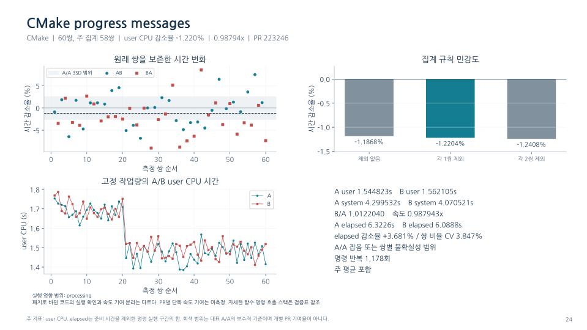
실행 영향 범위: processing
집계: 프로젝트 평균 포함 · 쌍 비율 CV 3.847% · B/A 1.0122040 · 배율 0.987943×
| 지표 | A | B |
|---|---|---|
| user CPU | 1.544823 s | 1.562105 s |
| system CPU | 4.299532 s | 4.070521 s |
| 명령 실행 elapsed | 6.322600 s | 6.088800 s |
| 각 꼬리에서 제외한 쌍 수 | user CPU 시간 감소율 |
|---|---|
| 0 | -1.1868% |
| 1 | -1.2204% |
| 2 | -1.2408% |
변경 함수에 관련된 PR
- 정하람 · PR #223246 · [InstCombine] Fold strlen/wcslen over select/phi of constants
작성자 이름은 최종보고서로 대조한 PR에 표시했습니다. 관련 PR 목록은 단독 속도 기여율을 뜻하지 않습니다.
| 관련 PR | 함수 / 심벌 | 실행된 변경 명령 또는 확인 내용 |
|---|---|---|
| 223246 | cmMessageCommand(std::vector<std::__cxx11::basic_string<char, std::char_traits<char>, std::allocator<char>>, std::allocator<std::__cxx11::basic_string<char, std::char_traits<char>, std::allocator<char>>>> const&, cmExecutionStatus&) | mov 0x8(%rdi),%rbp |
| 223246 | cmMessageCommand(std::vector<std::__cxx11::basic_string<char, std::char_traits<char>, std::allocator<char>>, std::allocator<std::__cxx11::basic_string<char, std::char_traits<char>, std::allocator<char>>>> const&, cmExecutionStatus&) | mov %rbp,0xb8(%rsp) |
| 223246 | cmMessageCommand(std::vector<std::__cxx11::basic_string<char, std::char_traits<char>, std::allocator<char>>, std::allocator<std::__cxx11::basic_string<char, std::char_traits<char>, std::allocator<char>>>> const&, cmExecutionStatus&) | mov (%rbx),%rax |
| 223246 | cmMessageCommand(std::vector<std::__cxx11::basic_string<char, std::char_traits<char>, std::allocator<char>>, std::allocator<std::__cxx11::basic_string<char, std::char_traits<char>, std::allocator<char>>>> const&, cmExecutionStatus&) | xor (%rax),%rcx |
| 223246 | cmMessageCommand(std::vector<std::__cxx11::basic_string<char, std::char_traits<char>, std::allocator<char>>, std::allocator<std::__cxx11::basic_string<char, std::char_traits<char>, std::allocator<char>>>> const&, cmExecutionStatus&) | movabs $0x54535f4b43454843,%rcx |
| 223246 | cmMessageCommand(std::vector<std::__cxx11::basic_string<char, std::char_traits<char>, std::allocator<char>>, std::allocator<std::__cxx11::basic_string<char, std::char_traits<char>, std::allocator<char>>>> const&, cmExecutionStatus&) | mov $0x4,%r14d |
| 223246 | cmMessageCommand(std::vector<std::__cxx11::basic_string<char, std::char_traits<char>, std::allocator<char>>, std::allocator<std::__cxx11::basic_string<char, std::char_traits<char>, std::allocator<char>>>> const&, cmExecutionStatus&) | mov 0x48(%rsp),%rdi |
| 223246 | cmMessageCommand(std::vector<std::__cxx11::basic_string<char, std::char_traits<char>, std::allocator<char>>, std::allocator<std::__cxx11::basic_string<char, std::char_traits<char>, std::allocator<char>>>> const&, cmExecutionStatus&) | cmp %r14d,%eax |
| 223246 | cmMessageCommand(std::vector<std::__cxx11::basic_string<char, std::char_traits<char>, std::allocator<char>>, std::allocator<std::__cxx11::basic_string<char, std::char_traits<char>, std::allocator<char>>>> const&, cmExecutionStatus&) | lea 0x28(%rsp),%rdi |
| 223246 | cmMessageCommand(std::vector<std::__cxx11::basic_string<char, std::char_traits<char>, std::allocator<char>>, std::allocator<std::__cxx11::basic_string<char, std::char_traits<char>, std::allocator<char>>>> const&, cmExecutionStatus&) | dec %r14d |
| 223246 | cmMessageCommand(std::vector<std::__cxx11::basic_string<char, std::char_traits<char>, std::allocator<char>>, std::allocator<std::__cxx11::basic_string<char, std::char_traits<char>, std::allocator<char>>>> const&, cmExecutionStatus&) | movslq (%rax,%r14,4),%rcx |
| 223246 | cmMessageCommand(std::vector<std::__cxx11::basic_string<char, std::char_traits<char>, std::allocator<char>>, std::allocator<std::__cxx11::basic_string<char, std::char_traits<char>, std::allocator<char>>>> const&, cmExecutionStatus&) | mov %ebp,%eax |
| 223246 | cmMessageCommand(std::vector<std::__cxx11::basic_string<char, std::char_traits<char>, std::allocator<char>>, std::allocator<std::__cxx11::basic_string<char, std::char_traits<char>, std::allocator<char>>>> const&, cmExecutionStatus&) | lea 0x28(%rsp),%rsi |
| 223246 | cmMessageCommand(std::vector<std::__cxx11::basic_string<char, std::char_traits<char>, std::allocator<char>>, std::allocator<std::__cxx11::basic_string<char, std::char_traits<char>, std::allocator<char>>>> const&, cmExecutionStatus&) | mov 0x48(%rsp),%r14 |
| 223246 | cmMessageCommand(std::vector<std::__cxx11::basic_string<char, std::char_traits<char>, std::allocator<char>>, std::allocator<std::__cxx11::basic_string<char, std::char_traits<char>, std::allocator<char>>>> const&, cmExecutionStatus&) | mov 0x28(%rsp),%rdi |
| 223246 | cmMessageCommand(std::vector<std::__cxx11::basic_string<char, std::char_traits<char>, std::allocator<char>>, std::allocator<std::__cxx11::basic_string<char, std::char_traits<char>, std::allocator<char>>>> const&, cmExecutionStatus&) | mov 0xb8(%rsp),%rbp |
| 223246 | cmMessageCommand(std::vector<std::__cxx11::basic_string<char, std::char_traits<char>, std::allocator<char>>, std::allocator<std::__cxx11::basic_string<char, std::char_traits<char>, std::allocator<char>>>> const&, cmExecutionStatus&) | mov 0x38(%rsp),%rsi |
| 223246 | cmMessageCommand(std::vector<std::__cxx11::basic_string<char, std::char_traits<char>, std::allocator<char>>, std::allocator<std::__cxx11::basic_string<char, std::char_traits<char>, std::allocator<char>>>> const&, cmExecutionStatus&) | mov $0x2,%ebp |
| 223246 | cmMessageCommand(std::vector<std::__cxx11::basic_string<char, std::char_traits<char>, std::allocator<char>>, std::allocator<std::__cxx11::basic_string<char, std::char_traits<char>, std::allocator<char>>>> const&, cmExecutionStatus&) | mov 0x48(%rsp),%rcx |
| 223246 | cmMessageCommand(std::vector<std::__cxx11::basic_string<char, std::char_traits<char>, std::allocator<char>>, std::allocator<std::__cxx11::basic_string<char, std::char_traits<char>, std::allocator<char>>>> const&, cmExecutionStatus&) | mov $0x3,%ebp |
검증 방식(원문): Single-PR native ablation and actual changed instruction step
검증 근거의 원래 파일 식별자
candidate-review-2x20/execution/correctness/native-probes/cmake-message-checks.jsoncandidate-review-2x20/execution/correctness/native-probes/cmake-message-checks.correctness.jsoncandidate-review-2x20/execution/attribution/cmake-message/result.json
위 목록은 원래 검증표의 상대 경로입니다. 해당 경로를 사이트의 다운로드 링크로 표시하지 않았습니다. 공개한 쌍별·관측별 수치는 아래 자료 범위에서 받을 수 있습니다.
WABT
Official Dhrystone wasm2c WriteC API
원시 쌍 재검토 · 2026-10-18
시간 감소 9/60쌍 · 시간 증가 51쌍 · 동일 0쌍. 실행 순서·전후반·꼬리 제외 수와 참고 구간에서 평균 방향이 유지됐습니다.
순서별 집계·집계 민감도·재표집 구간
- 원보고 감소율 · 각 꼬리 1쌍 제외
- −1.644%
- 전체 쌍 평균 · 제외 없음
- −1.641%
- AB / BA 평균
- −1.637% / −1.646%
- 전반 / 후반 평균
- −1.898% / −1.385%
- 양 끝 0 / 1 / 2쌍 제외
- −1.641% / −1.644% / −1.646%
- 연속 시간 구간별 평균
- −1.738% / −1.996% / −1.958% / −2.564% / −0.781% / −0.810%
- 재표집 참고 범위
- −2.126% ~ −1.129%
- 블록 길이별 95% 구간
- 2쌍: −2.103% ~ −1.175% · 4쌍: −2.074% ~ −1.197% · 6쌍: −2.092% ~ −1.173% · 10쌍: −2.126% ~ −1.129%
- elapsed 전체 쌍 평균 감소율 · 보조 지표
- −1.159%
모든 60쌍의 수치 보기 · 제외 없음
| 쌍 | 순서 | A user (초) | B user (초) | 감소율 | 원보고 주 집계 |
|---|---|---|---|---|---|
| 1 | AB | 1.249320 | 1.250838 | −0.122% | 포함 |
| 2 | BA | 1.240394 | 1.251792 | −0.919% | 포함 |
| 3 | AB | 1.219311 | 1.264830 | −3.733% | 포함 |
| 4 | BA | 1.223136 | 1.219024 | +0.336% | 포함 |
| 5 | AB | 1.233851 | 1.224652 | +0.746% | 포함 |
| 6 | BA | 1.233452 | 1.283164 | −4.030% | 포함 |
| 7 | AB | 1.239557 | 1.267048 | −2.218% | 포함 |
| 8 | BA | 1.250707 | 1.288331 | −3.008% | 포함 |
| 9 | AB | 1.241415 | 1.258062 | −1.341% | 포함 |
| 10 | BA | 1.236546 | 1.274804 | −3.094% | 포함 |
| 11 | AB | 1.214152 | 1.236454 | −1.837% | 포함 |
| 12 | BA | 1.236995 | 1.273276 | −2.933% | 포함 |
| 13 | AB | 1.231672 | 1.264623 | −2.675% | 포함 |
| 14 | BA | 1.234046 | 1.244411 | −0.840% | 포함 |
| 15 | AB | 1.236842 | 1.246623 | −0.791% | 포함 |
| 16 | BA | 1.261109 | 1.231598 | +2.340% | 꼬리 제외 |
| 17 | AB | 1.231315 | 1.293856 | −5.079% | 포함 |
| 18 | BA | 1.234354 | 1.283468 | −3.979% | 포함 |
| 19 | AB | 1.236507 | 1.276453 | −3.231% | 포함 |
| 20 | BA | 1.235614 | 1.247223 | −0.940% | 포함 |
| 21 | AB | 1.211337 | 1.252219 | −3.375% | 포함 |
| 22 | BA | 1.234003 | 1.244105 | −0.819% | 포함 |
| 23 | AB | 1.217430 | 1.271283 | −4.423% | 포함 |
| 24 | BA | 1.216242 | 1.245943 | −2.442% | 포함 |
| 25 | AB | 1.224102 | 1.229528 | −0.443% | 포함 |
| 26 | BA | 1.224517 | 1.256228 | −2.590% | 포함 |
| 27 | AB | 1.218831 | 1.249757 | −2.537% | 포함 |
| 28 | BA | 1.210285 | 1.234895 | −2.033% | 포함 |
| 29 | AB | 1.230457 | 1.234790 | −0.352% | 포함 |
| 30 | BA | 1.221943 | 1.228886 | −0.568% | 포함 |
| 31 | AB | 1.227365 | 1.265521 | −3.109% | 포함 |
| 32 | BA | 1.237908 | 1.305415 | −5.453% | 꼬리 제외 |
| 33 | AB | 1.222875 | 1.237253 | −1.176% | 포함 |
| 34 | BA | 1.218357 | 1.246678 | −2.325% | 포함 |
| 35 | AB | 1.242768 | 1.239887 | +0.232% | 포함 |
| 36 | BA | 1.232008 | 1.288442 | −4.581% | 포함 |
| 37 | AB | 1.216615 | 1.277150 | −4.976% | 포함 |
| 38 | BA | 1.233401 | 1.245366 | −0.970% | 포함 |
| 39 | AB | 1.239347 | 1.262989 | −1.908% | 포함 |
| 40 | BA | 1.253427 | 1.270709 | −1.379% | 포함 |
| 41 | AB | 1.238693 | 1.219287 | +1.567% | 포함 |
| 42 | BA | 1.246078 | 1.235698 | +0.833% | 포함 |
| 43 | AB | 1.215410 | 1.258102 | −3.513% | 포함 |
| 44 | BA | 1.227856 | 1.238594 | −0.875% | 포함 |
| 45 | AB | 1.223565 | 1.227538 | −0.325% | 포함 |
| 46 | BA | 1.237809 | 1.259453 | −1.749% | 포함 |
| 47 | AB | 1.223696 | 1.245652 | −1.794% | 포함 |
| 48 | BA | 1.231528 | 1.248644 | −1.390% | 포함 |
| 49 | AB | 1.233452 | 1.228540 | +0.398% | 포함 |
| 50 | BA | 1.230671 | 1.242531 | −0.964% | 포함 |
| 51 | AB | 1.226051 | 1.267907 | −3.414% | 포함 |
| 52 | BA | 1.231469 | 1.254415 | −1.863% | 포함 |
| 53 | AB | 1.251884 | 1.237394 | +1.157% | 포함 |
| 54 | BA | 1.239432 | 1.241344 | −0.154% | 포함 |
| 55 | AB | 1.236395 | 1.213094 | +1.885% | 포함 |
| 56 | BA | 1.225179 | 1.250259 | −2.047% | 포함 |
| 57 | AB | 1.218006 | 1.224839 | −0.561% | 포함 |
| 58 | BA | 1.221471 | 1.226269 | −0.393% | 포함 |
| 59 | AB | 1.222230 | 1.248501 | −2.149% | 포함 |
| 60 | BA | 1.233701 | 1.240567 | −0.557% | 포함 |
원보고 차트·측정 조건·실행된 변경·검증 기록
2026-10-16 당시 공통 기준의 판정: A/A 잡음 또는 쌍별 불확실성 범위
원래 판정과 차트 표기는 기록으로 보존했습니다. 위의 평균 방향은 2026-10-18 원시 쌍 재검토 결과입니다.
실행 영향 범위: derived: 실행된 GetMemoryAPIString의 첫 분기 전 문자열 저장 위치가 달라진다. 기능은 wasm→C 생성이다.
집계: 프로젝트 평균 포함 · 쌍 비율 CV 1.735% · B/A 1.0164426 · 배율 0.983823×
| 지표 | A | B |
|---|---|---|
| user CPU | 1.230501 s | 1.250676 s |
| system CPU | 0.155465 s | 0.151791 s |
| 명령 실행 elapsed | 1.392900 s | 1.408900 s |
| 각 꼬리에서 제외한 쌍 수 | user CPU 시간 감소율 |
|---|---|
| 0 | -1.6413% |
| 1 | -1.6443% |
| 2 | -1.6459% |
변경 함수에 관련된 PR
- 정하람 · PR #223246 · [InstCombine] Fold strlen/wcslen over select/phi of constants
작성자 이름은 최종보고서로 대조한 PR에 표시했습니다. 관련 PR 목록은 단독 속도 기여율을 뜻하지 않습니다.
| 관련 PR | 함수 / 심벌 | 실행된 변경 명령 또는 확인 내용 |
|---|---|---|
| 223246 | wabt::(anonymous namespace)::GetMemoryAPIString(wabt::Memory const&, std::__cxx11::basic_string<char, std::char_traits<char>, std::allocator<char>>) | 실행된 GetMemoryAPIString의 첫 분기 전 문자열 저장 위치가 달라진다. 기능은 wasm→C 생성이다. |
검증 방식(원문): Reused exact-binary execution audit; PR list relates to changed functions; joint influence stated where applicable
검증 근거의 원래 파일 식별자
expansion20/attribution/evidence/native-WABT.jsonexpansion20/attribution/evidence/audit-executed-entry-code.json
위 목록은 원래 검증표의 상대 경로입니다. 해당 경로를 사이트의 다운로드 링크로 표시하지 않았습니다. 공개한 쌍별·관측별 수치는 아래 자료 범위에서 받을 수 있습니다.
bzip2
SQLite C source / bzip2 -9
원시 쌍 재검토 · 2026-10-18
시간 감소 0/60쌍 · 시간 증가 60쌍 · 동일 0쌍. 실행 순서·전후반·꼬리 제외 수와 참고 구간에서 평균 방향이 유지됐습니다.
순서별 집계·집계 민감도·재표집 구간
- 원보고 감소율 · 각 꼬리 1쌍 제외
- −2.075%
- 전체 쌍 평균 · 제외 없음
- −2.074%
- AB / BA 평균
- −1.974% / −2.175%
- 전반 / 후반 평균
- −2.204% / −1.945%
- 양 끝 0 / 1 / 2쌍 제외
- −2.074% / −2.075% / −2.075%
- 연속 시간 구간별 평균
- −2.163% / −2.246% / −2.203% / −2.136% / −2.153% / −1.546%
- 재표집 참고 범위
- −2.251% ~ −1.900%
- 블록 길이별 95% 구간
- 2쌍: −2.251% ~ −1.910% · 4쌍: −2.234% ~ −1.911% · 6쌍: −2.228% ~ −1.907% · 10쌍: −2.221% ~ −1.900%
- elapsed 전체 쌍 평균 감소율 · 보조 지표
- −1.986%
모든 60쌍의 수치 보기 · 제외 없음
| 쌍 | 순서 | A user (초) | B user (초) | 감소율 | 원보고 주 집계 |
|---|---|---|---|---|---|
| 1 | AB | 1.352841 | 1.386938 | −2.520% | 포함 |
| 2 | BA | 1.356184 | 1.374114 | −1.322% | 포함 |
| 3 | AB | 1.344860 | 1.386550 | −3.100% | 포함 |
| 4 | BA | 1.351266 | 1.385682 | −2.547% | 포함 |
| 5 | AB | 1.370085 | 1.383791 | −1.000% | 포함 |
| 6 | BA | 1.361083 | 1.389327 | −2.075% | 포함 |
| 7 | AB | 1.346364 | 1.387893 | −3.085% | 포함 |
| 8 | BA | 1.348673 | 1.384706 | −2.672% | 포함 |
| 9 | AB | 1.356986 | 1.384114 | −1.999% | 포함 |
| 10 | BA | 1.359764 | 1.377510 | −1.305% | 포함 |
| 11 | AB | 1.357736 | 1.380606 | −1.684% | 포함 |
| 12 | BA | 1.351578 | 1.394065 | −3.144% | 포함 |
| 13 | AB | 1.355471 | 1.394739 | −2.897% | 포함 |
| 14 | BA | 1.351579 | 1.388712 | −2.747% | 포함 |
| 15 | AB | 1.362597 | 1.380294 | −1.299% | 포함 |
| 16 | BA | 1.345369 | 1.384998 | −2.946% | 포함 |
| 17 | AB | 1.351646 | 1.379796 | −2.083% | 포함 |
| 18 | BA | 1.360595 | 1.379263 | −1.372% | 포함 |
| 19 | AB | 1.353817 | 1.376911 | −1.706% | 포함 |
| 20 | BA | 1.352073 | 1.386933 | −2.578% | 포함 |
| 21 | AB | 1.337509 | 1.359875 | −1.672% | 포함 |
| 22 | BA | 1.341555 | 1.364720 | −1.727% | 포함 |
| 23 | AB | 1.342143 | 1.370401 | −2.105% | 포함 |
| 24 | BA | 1.340140 | 1.372418 | −2.409% | 포함 |
| 25 | AB | 1.344715 | 1.376071 | −2.332% | 포함 |
| 26 | BA | 1.332986 | 1.376430 | −3.259% | 포함 |
| 27 | AB | 1.343159 | 1.369128 | −1.933% | 포함 |
| 28 | BA | 1.334305 | 1.367246 | −2.469% | 포함 |
| 29 | AB | 1.343162 | 1.372618 | −2.193% | 포함 |
| 30 | BA | 1.339348 | 1.365247 | −1.934% | 포함 |
| 31 | AB | 1.337669 | 1.371232 | −2.509% | 포함 |
| 32 | BA | 1.335450 | 1.369899 | −2.580% | 포함 |
| 33 | AB | 1.349744 | 1.370851 | −1.564% | 포함 |
| 34 | BA | 1.338530 | 1.365434 | −2.010% | 포함 |
| 35 | AB | 1.328747 | 1.373028 | −3.333% | 꼬리 제외 |
| 36 | BA | 1.342467 | 1.373195 | −2.289% | 포함 |
| 37 | AB | 1.344033 | 1.366720 | −1.688% | 포함 |
| 38 | BA | 1.334997 | 1.371281 | −2.718% | 포함 |
| 39 | AB | 1.348914 | 1.362870 | −1.035% | 포함 |
| 40 | BA | 1.334272 | 1.356118 | −1.637% | 포함 |
| 41 | AB | 1.348934 | 1.368830 | −1.475% | 포함 |
| 42 | BA | 1.337451 | 1.373146 | −2.669% | 포함 |
| 43 | AB | 1.340866 | 1.360039 | −1.430% | 포함 |
| 44 | BA | 1.343192 | 1.375356 | −2.395% | 포함 |
| 45 | AB | 1.342558 | 1.359463 | −1.259% | 포함 |
| 46 | BA | 1.335291 | 1.364041 | −2.153% | 포함 |
| 47 | AB | 1.343608 | 1.371807 | −2.099% | 포함 |
| 48 | BA | 1.340249 | 1.381042 | −3.044% | 포함 |
| 49 | AB | 1.335896 | 1.371949 | −2.699% | 포함 |
| 50 | BA | 1.346550 | 1.377638 | −2.309% | 포함 |
| 51 | AB | 1.340525 | 1.358627 | −1.350% | 포함 |
| 52 | BA | 1.346112 | 1.364935 | −1.398% | 포함 |
| 53 | AB | 1.346484 | 1.375124 | −2.127% | 포함 |
| 54 | BA | 1.352780 | 1.363234 | −0.773% | 꼬리 제외 |
| 55 | AB | 1.345194 | 1.362872 | −1.314% | 포함 |
| 56 | BA | 1.341061 | 1.372128 | −2.317% | 포함 |
| 57 | AB | 1.335766 | 1.364841 | −2.177% | 포함 |
| 58 | BA | 1.342659 | 1.354872 | −0.910% | 포함 |
| 59 | AB | 1.337762 | 1.358393 | −1.542% | 포함 |
| 60 | BA | 1.348986 | 1.369881 | −1.549% | 포함 |
원보고 차트·측정 조건·실행된 변경·검증 기록
2026-10-16 당시 공통 기준의 판정: A/A 잡음 또는 쌍별 불확실성 범위
원래 판정과 차트 표기는 기록으로 보존했습니다. 위의 평균 방향은 2026-10-18 원시 쌍 재검토 결과입니다.
실행 영향 범위: direct: 바뀐 누적값 선택의 기존 coverage가 양쪽 모두 양수다. 측정 기능은 압축 해제다.
집계: 프로젝트 평균 포함 · 쌍 비율 CV 0.633% · B/A 1.0207512 · 배율 0.979671×
| 지표 | A | B |
|---|---|---|
| user CPU | 1.345773 s | 1.373684 s |
| system CPU | 0.030635 s | 0.030627 s |
| 명령 실행 elapsed | 1.381400 s | 1.408900 s |
| 각 꼬리에서 제외한 쌍 수 | user CPU 시간 감소율 |
|---|---|
| 0 | -2.0744% |
| 1 | -2.0751% |
| 2 | -2.0748% |
변경 함수에 관련된 PR
- 최진범 · 포크 #2 · [InstCombine] Let foldSelectBitTest use known bits for the single-bit mask
작성자 이름은 최종보고서로 대조한 PR에 표시했습니다. 관련 PR 목록은 단독 속도 기여율을 뜻하지 않습니다.
| 관련 PR | 함수 / 심벌 | 실행된 변경 명령 또는 확인 내용 |
|---|---|---|
| 2 | BZ2_decompress — RUNA/RUNB | 바뀐 누적값 선택의 기존 coverage가 양쪽 모두 양수다. 측정 기능은 압축 해제다. |
검증 방식(원문): Reused exact-binary execution audit; PR list relates to changed functions; joint influence stated where applicable
검증 근거의 원래 파일 식별자
expansion20/attribution/evidence/native-bzip2.jsonexpansion/correctness/bzip2-coverage.txt
위 목록은 원래 검증표의 상대 경로입니다. 해당 경로를 사이트의 다운로드 링크로 표시하지 않았습니다. 공개한 쌍별·관측별 수치는 아래 자료 범위에서 받을 수 있습니다.
JPEG XL
Aloe RGB 1282x1110, lossless effort 1 AVX2
원시 쌍 재검토 · 2026-10-18
시간 감소 0/60쌍 · 시간 증가 60쌍 · 동일 0쌍. 실행 순서·전후반·꼬리 제외 수와 참고 구간에서 평균 방향이 유지됐습니다.
순서별 집계·집계 민감도·재표집 구간
- 원보고 감소율 · 각 꼬리 1쌍 제외
- −4.157%
- 전체 쌍 평균 · 제외 없음
- −4.137%
- AB / BA 평균
- −4.181% / −4.093%
- 전반 / 후반 평균
- −4.050% / −4.223%
- 양 끝 0 / 1 / 2쌍 제외
- −4.137% / −4.157% / −4.174%
- 연속 시간 구간별 평균
- −3.822% / −3.940% / −4.388% / −3.980% / −4.667% / −4.023%
- 재표집 참고 범위
- −4.527% ~ −3.723%
- 블록 길이별 95% 구간
- 2쌍: −4.480% ~ −3.762% · 4쌍: −4.520% ~ −3.750% · 6쌍: −4.527% ~ −3.723% · 10쌍: −4.494% ~ −3.758%
- elapsed 전체 쌍 평균 감소율 · 보조 지표
- −2.931%
모든 60쌍의 수치 보기 · 제외 없음
| 쌍 | 순서 | A user (초) | B user (초) | 감소율 | 원보고 주 집계 |
|---|---|---|---|---|---|
| 1 | AB | 1.231902 | 1.295882 | −5.194% | 포함 |
| 2 | BA | 1.250917 | 1.281104 | −2.413% | 포함 |
| 3 | AB | 1.247916 | 1.300026 | −4.176% | 포함 |
| 4 | BA | 1.231229 | 1.298009 | −5.424% | 포함 |
| 5 | AB | 1.261046 | 1.311465 | −3.998% | 포함 |
| 6 | BA | 1.236688 | 1.285296 | −3.930% | 포함 |
| 7 | AB | 1.262878 | 1.299468 | −2.897% | 포함 |
| 8 | BA | 1.255603 | 1.291400 | −2.851% | 포함 |
| 9 | AB | 1.237574 | 1.298474 | −4.921% | 포함 |
| 10 | BA | 1.265091 | 1.295646 | −2.415% | 포함 |
| 11 | AB | 1.256068 | 1.292689 | −2.916% | 포함 |
| 12 | BA | 1.253905 | 1.317217 | −5.049% | 포함 |
| 13 | AB | 1.251443 | 1.290772 | −3.143% | 포함 |
| 14 | BA | 1.238620 | 1.295772 | −4.614% | 포함 |
| 15 | AB | 1.250270 | 1.290613 | −3.227% | 포함 |
| 16 | BA | 1.245247 | 1.299626 | −4.367% | 포함 |
| 17 | AB | 1.252098 | 1.285430 | −2.662% | 포함 |
| 18 | BA | 1.241815 | 1.293570 | −4.168% | 포함 |
| 19 | AB | 1.251096 | 1.299180 | −3.843% | 포함 |
| 20 | BA | 1.237426 | 1.304430 | −5.415% | 포함 |
| 21 | AB | 1.234753 | 1.313782 | −6.400% | 포함 |
| 22 | BA | 1.214339 | 1.279969 | −5.405% | 포함 |
| 23 | AB | 1.220857 | 1.282919 | −5.083% | 포함 |
| 24 | BA | 1.230159 | 1.300075 | −5.683% | 포함 |
| 25 | AB | 1.238731 | 1.284051 | −3.659% | 포함 |
| 26 | BA | 1.217407 | 1.290257 | −5.984% | 포함 |
| 27 | AB | 1.246170 | 1.249859 | −0.296% | 꼬리 제외 |
| 28 | BA | 1.258087 | 1.290992 | −2.615% | 포함 |
| 29 | AB | 1.245218 | 1.297176 | −4.173% | 포함 |
| 30 | BA | 1.227347 | 1.283570 | −4.581% | 포함 |
| 31 | AB | 1.247776 | 1.270167 | −1.794% | 포함 |
| 32 | BA | 1.251810 | 1.263613 | −0.943% | 포함 |
| 33 | AB | 1.230247 | 1.281468 | −4.163% | 포함 |
| 34 | BA | 1.258647 | 1.295365 | −2.917% | 포함 |
| 35 | AB | 1.225364 | 1.302104 | −6.263% | 포함 |
| 36 | BA | 1.224647 | 1.287865 | −5.162% | 포함 |
| 37 | AB | 1.217571 | 1.294647 | −6.330% | 포함 |
| 38 | BA | 1.244633 | 1.275607 | −2.489% | 포함 |
| 39 | AB | 1.223127 | 1.283284 | −4.918% | 포함 |
| 40 | BA | 1.216345 | 1.274921 | −4.816% | 포함 |
| 41 | AB | 1.234203 | 1.274609 | −3.274% | 포함 |
| 42 | BA | 1.211619 | 1.294344 | −6.828% | 꼬리 제외 |
| 43 | AB | 1.226347 | 1.294676 | −5.572% | 포함 |
| 44 | BA | 1.245557 | 1.286719 | −3.305% | 포함 |
| 45 | AB | 1.226631 | 1.284459 | −4.714% | 포함 |
| 46 | BA | 1.235567 | 1.279430 | −3.550% | 포함 |
| 47 | AB | 1.239892 | 1.309395 | −5.606% | 포함 |
| 48 | BA | 1.249661 | 1.303329 | −4.295% | 포함 |
| 49 | AB | 1.249434 | 1.307530 | −4.650% | 포함 |
| 50 | BA | 1.247222 | 1.308063 | −4.878% | 포함 |
| 51 | AB | 1.220427 | 1.290797 | −5.766% | 포함 |
| 52 | BA | 1.229973 | 1.276776 | −3.805% | 포함 |
| 53 | AB | 1.252227 | 1.288757 | −2.917% | 포함 |
| 54 | BA | 1.225278 | 1.283361 | −4.740% | 포함 |
| 55 | AB | 1.222504 | 1.276429 | −4.411% | 포함 |
| 56 | BA | 1.239006 | 1.285452 | −3.749% | 포함 |
| 57 | AB | 1.247406 | 1.293463 | −3.692% | 포함 |
| 58 | BA | 1.242728 | 1.276188 | −2.692% | 포함 |
| 59 | AB | 1.233055 | 1.291804 | −4.765% | 포함 |
| 60 | BA | 1.238270 | 1.284041 | −3.696% | 포함 |
원보고 차트·측정 조건·실행된 변경·검증 기록
2026-10-16 당시 공통 기준의 판정: 저하: 잡음·쌍 오차 기준 밖
원래 판정과 차트 표기는 기록으로 보존했습니다. 위의 평균 방향은 2026-10-18 원시 쌍 재검토 결과입니다.
실행 영향 범위: direct: or 1 바로 뒤 lzcnt의 실제 B PC에 36표본이 있다. 실제 함수는 default_implementation이다.
집계: 프로젝트 평균 포함 · 쌍 비율 CV 1.283% · B/A 1.0415653 · 배율 0.960093×
| 지표 | A | B |
|---|---|---|
| user CPU | 1.239505 s | 1.290917 s |
| system CPU | 0.531246 s | 0.530845 s |
| 명령 실행 elapsed | 1.797700 s | 1.850500 s |
| 각 꼬리에서 제외한 쌍 수 | user CPU 시간 감소율 |
|---|---|
| 0 | -4.1367% |
| 1 | -4.1565% |
| 2 | -4.1739% |
변경 함수에 관련된 PR
- 정지현 · PR #215073 · [Instcombine] Fold a zero-select hexadecimal digit count into ctlz(x | 1)
작성자 이름은 최종보고서로 대조한 PR에 표시했습니다. 관련 PR 목록은 단독 속도 기여율을 뜻하지 않습니다.
| 관련 PR | 함수 / 심벌 | 실행된 변경 명령 또는 확인 내용 |
|---|---|---|
| 215073 | default_implementation::ProcessRow — FloorLog2 | or 1 바로 뒤 lzcnt의 실제 B PC에 36표본이 있다. 실제 함수는 default_implementation이다. |
검증 방식(원문): Reused exact-binary execution audit; PR list relates to changed functions; joint influence stated where applicable
검증 근거의 원래 파일 식별자
expansion20/attribution/evidence/native-JPEG XL.jsonexpansion20/attribution/evidence/jxl-modified-instructions-executed.json
위 목록은 원래 검증표의 상대 경로입니다. 해당 경로를 사이트의 다운로드 링크로 표시하지 않았습니다. 공개한 쌍별·관측별 수치는 아래 자료 범위에서 받을 수 있습니다.
측정 환경과 재검토 방법
A는 기준 실행 파일, B는 패치를 적용한 실행 파일입니다. 42개 실제 입력을 A/B 쌍으로 실행했습니다. libpng는 20쌍, 나머지 41개 입력은 60쌍입니다. AB와 BA 순서를 번갈아 실행했습니다. 주 지표는 user CPU 시간이며, CLI 반복에는 프로세스 시작 비용도 포함됩니다. elapsed는 준비 시간을 제외한 명령 실행 구간의 합입니다.
Ryzen 9 3900X에서 CPU 0에 고정하고 짝을 이루는 CPU 12를 오프라인으로 설정했습니다. boost를 끄고 3,000 MHz를 요청했습니다. 관측 부하 주파수 중앙값은 2,969.491 MHz, 최저·최고는 2,958.103 / 2,992.151 MHz, 최고 온도는 55.25°C입니다. CPU 고정은 다른 작업의 접근까지 막는 독점을 뜻하지 않습니다.
벤치별 반복 측정을 다시 읽은 방법
원보고의 공통 약 2.56% 기준은 A/A 대조 중 최대 쌍 비율 표준편차 0.8533%의 3배입니다. 개별 쌍의 흔들림과 평균의 불확실성은 다릅니다. 이번에는 각 입력의 모든 쌍을 사용해 평균 방향이 실행 순서와 시간 구간에 따라 달라지는지 확인했습니다.
- 원시 관측 5,080행과 쌍별 비율 2,540행을 대조했습니다. 모든 A/B CPU 시간, 입력·쌍 번호·실행 순서, 기대 반환 코드와 최종 집계를 확인했습니다.
- 주 지표는 user CPU 시간의 쌍별 비율 R = B/A입니다. 감소율은 100 × (1 − 비율의 산술평균)입니다. 화면의 대표 감소율은 원보고와 같은 각 꼬리 1쌍 제외 집계를 유지했습니다.
- 안정성 검토에는 제외하지 않은 원시 쌍 전체를 썼습니다. AB·BA 순서별 평균과 전반·후반 평균, 양 끝 0/1/2쌍 제외 집계의 방향을 비교했습니다.
- 연속 2·4·6·10쌍을 묶는 원형 블록 재표집을 각각 20,000회 수행했습니다. 시작 위치를 두 쌍의 경계로 맞춰 AB/BA 균형과 인접 측정의 순서를 보존했습니다. 각 95% 백분위 구간 중 최소 하한과 최대 상한을 참고 범위로 표시했습니다.
- 참고 범위가 0의 한쪽에 있고, AB·BA·전후반·0/1/2쌍 제외 집계가 모두 같은 방향일 때 평균 방향 유지로 요약했습니다.
자료를 받은 뒤 수행한 사후 안정성 분석입니다. 벤치별 탐색적 참고 구간이며 42항목의 동시 검정 보정이나 독립 재실행을 대신하지 않습니다. 블록 길이마다 얻은 구간을 합친 범위는 단일 95% 신뢰구간으로 표시하지 않습니다. NIST 쌍별 관측 분석과 자기상관과 평균 불확실성 설명을 참고했습니다.
동일 실행 파일 A/A 대조
같은 A 실행 파일끼리 비교한 세 대조 입력은 재표집 참고 범위에 모두 0이 포함됐습니다. 각 20쌍을 따로 확인할 수 있습니다.
| 입력 | 전체 쌍 평균 감소율 | 재표집 참고 범위 | 쌍 수 |
|---|---|---|---|
| gmp-sqrt-1024 | −0.024% | −0.307% ~ +0.267% | 20 |
| hermes-deltablue | +0.271% | −0.131% ~ +0.701% | 20 |
| png-photo-gray4-aloe-1282x1110 | +0.076% | −0.098% ~ +0.263% | 20 |
GMP · 16 deterministic integers, 1024 bits
모든 20쌍의 수치 보기 · 제외 없음
| 쌍 | 순서 | A user (초) | B user (초) | 감소율 | 원보고 주 집계 |
|---|---|---|---|---|---|
| 1 | AB | 1.677379 | 1.693883 | −0.984% | 포함 |
| 2 | BA | 1.679800 | 1.683715 | −0.233% | 포함 |
| 3 | AB | 1.682997 | 1.689891 | −0.410% | 포함 |
| 4 | BA | 1.700750 | 1.676952 | +1.399% | 꼬리 제외 |
| 5 | AB | 1.678021 | 1.685309 | −0.434% | 포함 |
| 6 | BA | 1.676647 | 1.674146 | +0.149% | 포함 |
| 7 | AB | 1.702613 | 1.684382 | +1.071% | 포함 |
| 8 | BA | 1.696539 | 1.684998 | +0.680% | 포함 |
| 9 | AB | 1.677926 | 1.676312 | +0.096% | 포함 |
| 10 | BA | 1.679803 | 1.676570 | +0.192% | 포함 |
| 11 | AB | 1.675309 | 1.686579 | −0.673% | 포함 |
| 12 | BA | 1.679497 | 1.677357 | +0.127% | 포함 |
| 13 | AB | 1.682407 | 1.680976 | +0.085% | 포함 |
| 14 | BA | 1.673346 | 1.684270 | −0.653% | 포함 |
| 15 | AB | 1.684575 | 1.680832 | +0.222% | 포함 |
| 16 | BA | 1.682863 | 1.682213 | +0.039% | 포함 |
| 17 | AB | 1.679886 | 1.681047 | −0.069% | 포함 |
| 18 | BA | 1.679480 | 1.676060 | +0.204% | 포함 |
| 19 | AB | 1.678866 | 1.700301 | −1.277% | 꼬리 제외 |
| 20 | BA | 1.680408 | 1.680505 | −0.006% | 포함 |
Hermes · Official Octane DeltaBlue, 20 fixed calls, upstream chain/projection checks
모든 20쌍의 수치 보기 · 제외 없음
| 쌍 | 순서 | A user (초) | B user (초) | 감소율 | 원보고 주 집계 |
|---|---|---|---|---|---|
| 1 | AB | 1.871145 | 1.886239 | −0.807% | 포함 |
| 2 | BA | 1.865353 | 1.874871 | −0.510% | 포함 |
| 3 | AB | 1.875254 | 1.895637 | −1.087% | 포함 |
| 4 | BA | 1.886963 | 1.855147 | +1.686% | 포함 |
| 5 | AB | 1.878764 | 1.871056 | +0.410% | 포함 |
| 6 | BA | 1.871061 | 1.897511 | −1.414% | 꼬리 제외 |
| 7 | AB | 1.877727 | 1.880954 | −0.172% | 포함 |
| 8 | BA | 1.877904 | 1.881041 | −0.167% | 포함 |
| 9 | AB | 1.880849 | 1.887778 | −0.368% | 포함 |
| 10 | BA | 1.893289 | 1.873038 | +1.070% | 포함 |
| 11 | AB | 1.884759 | 1.868620 | +0.856% | 포함 |
| 12 | BA | 1.891077 | 1.886841 | +0.224% | 포함 |
| 13 | AB | 1.883329 | 1.864920 | +0.977% | 포함 |
| 14 | BA | 1.900969 | 1.868868 | +1.689% | 꼬리 제외 |
| 15 | AB | 1.885505 | 1.869485 | +0.850% | 포함 |
| 16 | BA | 1.881617 | 1.873886 | +0.411% | 포함 |
| 17 | AB | 1.875293 | 1.875427 | −0.007% | 포함 |
| 18 | BA | 1.886045 | 1.867798 | +0.967% | 포함 |
| 19 | AB | 1.885134 | 1.872913 | +0.648% | 포함 |
| 20 | BA | 1.869880 | 1.866907 | +0.159% | 포함 |
libpng · photo-gray4-aloe-1282x1110
모든 20쌍의 수치 보기 · 제외 없음
| 쌍 | 순서 | A user (초) | B user (초) | 감소율 | 원보고 주 집계 |
|---|---|---|---|---|---|
| 1 | AB | 3.533059 | 3.535022 | −0.056% | 포함 |
| 2 | BA | 3.530768 | 3.545763 | −0.425% | 포함 |
| 3 | AB | 3.546818 | 3.528019 | +0.530% | 포함 |
| 4 | BA | 3.532312 | 3.536587 | −0.121% | 포함 |
| 5 | AB | 3.539453 | 3.523256 | +0.458% | 포함 |
| 6 | BA | 3.550110 | 3.535397 | +0.414% | 포함 |
| 7 | AB | 3.566192 | 3.534931 | +0.877% | 꼬리 제외 |
| 8 | BA | 3.543618 | 3.537891 | +0.162% | 포함 |
| 9 | AB | 3.536393 | 3.539722 | −0.094% | 포함 |
| 10 | BA | 3.527862 | 3.549470 | −0.612% | 꼬리 제외 |
| 11 | AB | 3.529611 | 3.526180 | +0.097% | 포함 |
| 12 | BA | 3.531952 | 3.531941 | +0.000% | 포함 |
| 13 | AB | 3.529599 | 3.545573 | −0.453% | 포함 |
| 14 | BA | 3.537306 | 3.538870 | −0.044% | 포함 |
| 15 | AB | 3.528734 | 3.540706 | −0.339% | 포함 |
| 16 | BA | 3.541708 | 3.535574 | +0.173% | 포함 |
| 17 | AB | 3.555468 | 3.538025 | +0.491% | 포함 |
| 18 | BA | 3.545327 | 3.539899 | +0.153% | 포함 |
| 19 | AB | 3.549711 | 3.540551 | +0.258% | 포함 |
| 20 | BA | 3.540051 | 3.538110 | +0.055% | 포함 |
원측정의 반복 수 확대 기준과 환경 차트 2개
GMP·Hermes·libpng에서 각각 20쌍의 A/A 대조를 했습니다. 최대 비율 표준편차 0.8533%의 3배를 공통 선별 기준으로 썼습니다. 효과가 그보다 작거나 쌍 비율 CV가 0.5%를 넘으면 방향과 관계없이 한 번, 총 60쌍까지 늘렸습니다. 아래 두 차트는 원래 환경·잡음 기록입니다.
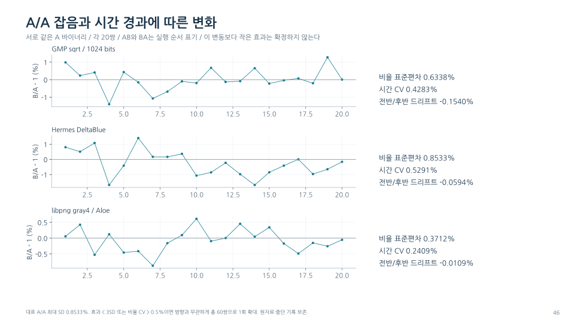
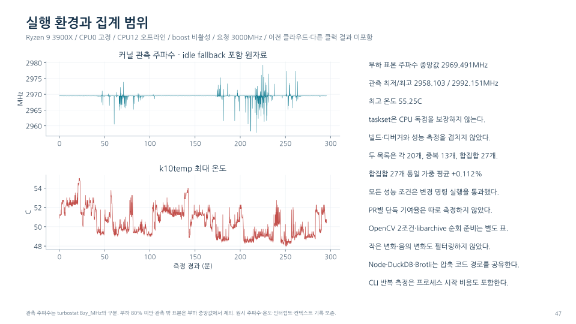
이전에 수행한 실험도 따로 보관했습니다
호스트·입력·비교 시점이 다른 실험은 각각의 페이지에서 읽습니다. 서로 다른 실험의 개선율을 합산하거나 평균내지 않습니다.
원시 수치와 연결 근거 다운로드
2026-10-18 추가된 benchmark-detail-log에서 원시 관측 5,080행과 쌍별 비율 2,540행을 대조했습니다. 공개 CSV에는 모든 행의 측정 수치·입력·순서와 집계 포함 여부를 옮겼습니다. 서버 경로·명령·실행 태그·상세 환경 및 실행 로그 본문은 생략했습니다. 열의 범위와 단위는 공개 열·단위·해시 정보에서 확인할 수 있습니다.
원자료 대조와 파일 SHA-256
원시 CPU 시간으로 다시 계산한 2,540개 쌍별 비율이 원본과 일치했습니다. 42개 입력의 0/1/2쌍 제외 집계도 재현했습니다. 집계 감소율의 최대 부동소수점 차이는 약 2.22 × 10⁻¹⁴ 퍼센트포인트입니다. 새 측정은 실행하지 않았고 원시 파일을 변경하지 않았습니다.
- paired-ratios.csv
8aeb162a102215ca705e21b2c8ccc2883b5ccb4a33b9301e2fb8751a9fc9d3dd - raw-observations.csv
cdf532ab9ad60088b4527c1771af3ba6ec8258264d90c54325aeaeacc69a771d - case-results.csv
7944fcdb3cf405cb82a6a5fd31959a1cd03b1635050c66d48038bb8c9f0725c4 - AA-results.csv
0d363d653b9e619a16de7375be537e11f9e11aee54c2cbe6d8200cda30f98eb7 - summary.json
7da1787b267464276d005fbeab799c7aae98430d1fc977ed60c9b7b331372793 - hardware-summary.json
1b09e066b0ee62b263bacf5a33e27f0c2f15c23fcb64123b1f9e1aa106905314
원래 보고값과 별도 실험의 자료 범위
기존 results.zip의 차트 47개, 검증표의 42개 조건, 변경 함수·명령·관련 PR과 제외·수정 이력도 그대로 보관했습니다. 아래 원보고 집계표는 차트 보고값이며 위 원시 수치 CSV와 구분합니다. 이전 19개 PR 보고서가 언급한 405행 원시 CSV는 이번 추가 묶음에도 포함되지 않았습니다. 사이트를 고치며 새 벤치마크는 실행하지 않았습니다.
제외·대체·예비 후보와 조건별 수정 이력
검증표에 기록된 원문을 유지했습니다. 제외된 조건을 효과 0의 측정 행으로 만들지 않습니다.
Zstd / ALAC
Original inputs do not execute changed processing code; excluded, no zero timing rows.
image-rs / Binaryen
Qualified single-PR reserves; higher verified PR breadth candidates fill the cohort.
InfluxDB / delta-rs / OpenImageIO
Initial report signals include configuration/AWS/rare JPEG paths; not sufficiently runtime-verified here. Replaced by verified OpenSSL/libgit2/libarchive candidates; no claim of universal absence of PR effects.
Node DeltaBlue
No verified PR execution proof for changed code in normal JS input; excluded input. Native Maglev PR214970 hypothesis did not change B and is not counted. Its observed IR difference is in optional trace printing.
Rust-analyzer
Official source highlighting completes and executes PR214108, but not the four PR219103 allocation clones. Qualified single-PR reserve; prefer verified multiple-PR projects.
조건별 폐기·수정 이력
- zstd / Original file compression input : Changed LOREM_genBlock was not executed; previous result is preserved outside the valid new cohort.
- libsndfile / Original ALAC encode/decode inputs : The changed low-mb processing blocks were not executed; function entry alone did not qualify.
- image-rust / New OpenEXR official input with the LLVM21 frontend build : Input completed normally with zero hits on every changed native-code probe. TIFF eligibility does not transfer to EXR.
- image-rust / Initial LLVM22 frontend build, all input conditions : Rust supplied a trailing linker override, so both tags used the bundled Rust linker. The zero-difference observation is not evidence of no PR effect. No performance measurements were collected.
- ruff / typing.py formatting/checking : Probes so far reached PR219103 changes only in settings and path resolution. The qualified pyupgrade workload separately executes processing changes.
- binaryen / TypePrinter PR count : Removing PR2,214970,214108,219103 did not restore A. PR223246 alone restores A IR/native code, so the TypePrinter and ref.i31 printer count as one PR.
원본 results.zip SHA-256: 25938e1e8e217827391aecb65c1fbc353f75abd785366391966f53fa71728418. 최신 집계와 이전 실험을 멘티 제출 자료 36개에 합산하지 않았습니다.